| 淡海乃海 水面が揺れる時～三英傑に嫌われた不運な男、朽木基綱の逆襲～弐 | |
| イスラーフィール | |
| TOブックス (2018) | |
一五六一年。朽木の勢力拡大を目指す基綱は遂に近江の四傑に身を連ねるまでになった。目先の敵は浅井・朝倉連合。だが、その裏で六角や比叡山といった大家たちが謀略を巡らせていた......。
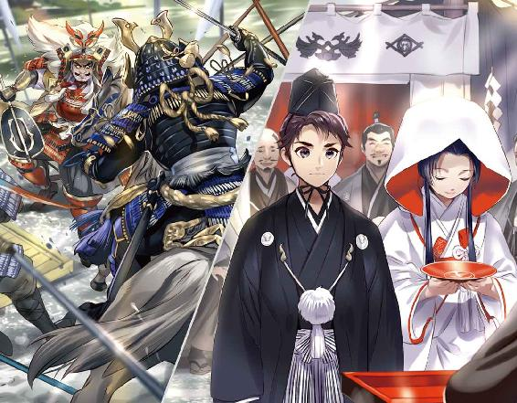
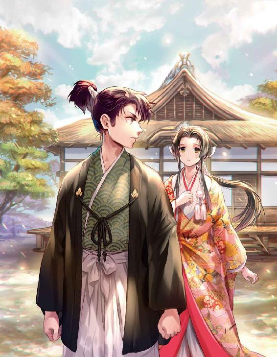
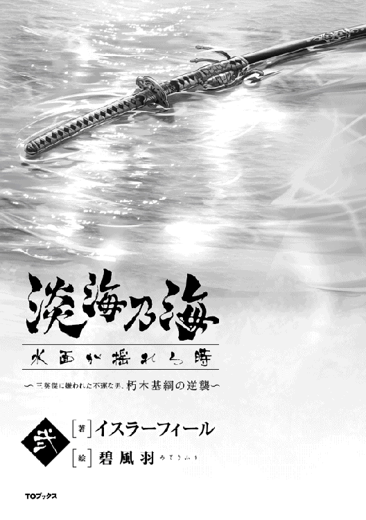
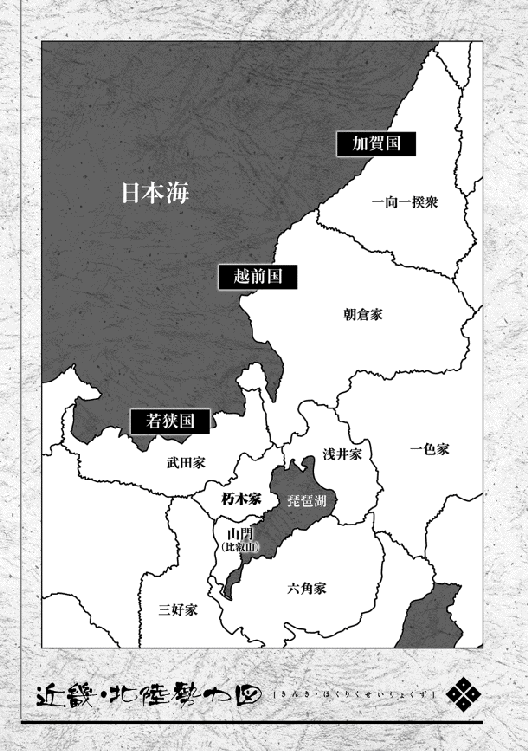
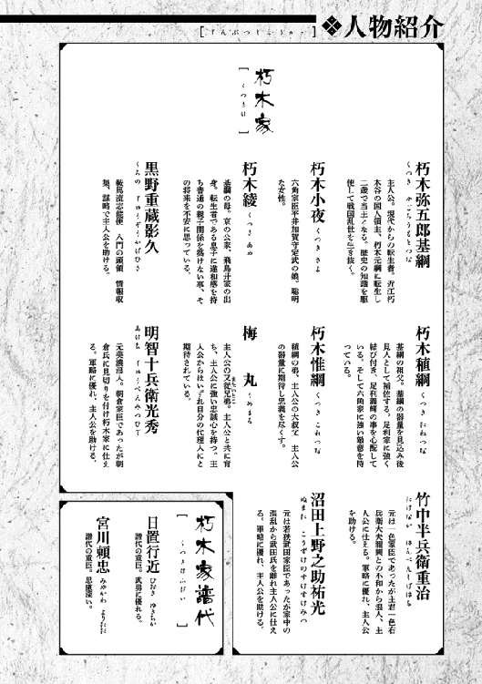
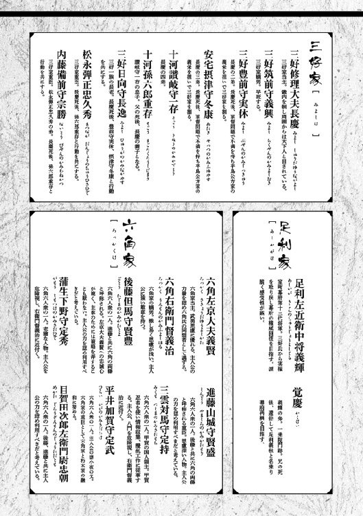
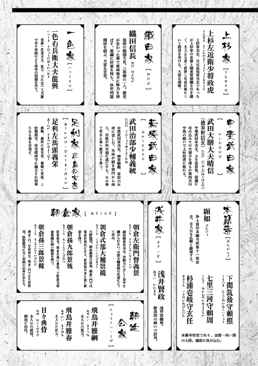
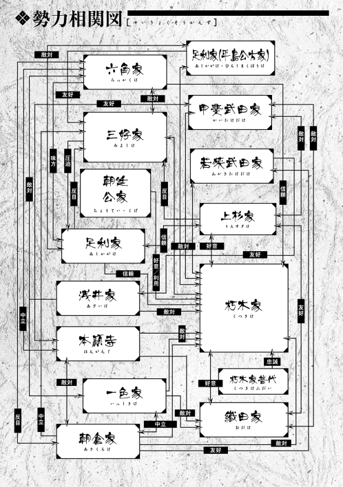
ILLUST．碧風羽
DESIGN．AFTERGLOW
永禄四年（一五六一年） 五月中旬 近江高島郡安井川村 清水山城 朽木小夜
「まあ、これは」
目の前には湖と遠くまで広がる風景が有った。平井家から一緒に付いて来た奈津も声を上げている。そして笑い声が聞こえた。
「気に入ったかな」
「はい」
「それは良かった。連れて来た甲斐が有ったわ。儂もこの風景が好きでの、よくここに来る。竹若、いや弥五郎か、あれに笑われたものよ」
そう仰られると御義爺様、朽木民部少輔稙綱様がまた御笑いになった。
「清水山城は大きいお城なのですね」
「観音寺に比べれば小さかろう」
「それはそうですけど......、でも大きいと思います。これだけの景色を見る事が出来るのですから」
「まあ、高島越中の城だからの。多少は大きいか」
「はい」
御義爺様がまたお笑いになられた。
「少しはこの城に慣れたかな」
「はい、御気遣い頂き有難うございます」
「済まぬのう、弥五郎めがもう少しゆるりと出来れば良かったのじゃが浅井に動きが有ったのでな。塩津浜に行かねばならん。決してそなたを疎かにしての事ではないのじゃ」
「はい。分かっております」
御義爺様が頷かれた。弥五郎様は式が終わると飛び立つように清水山城を離れてしまった。
「あのように立派な式を挙げて頂きました。大事にされていると思っています」
「そうか」
婚儀は盛大なものだった。小谷で行われた最初の婚儀など比べ物にならない程に。朽木の財力は勿論の事、驚いたのは祝い客の絢爛さ。父から朽木家の事を教えられていたけど、朽木家の人の繋がりは予想以上だった。
六角家からは後藤但馬守様、進藤山城守様。幕府からは公方様御名代として細川兵部大輔様、他に大舘左衛門佐様。飛鳥井家からは准大臣飛鳥井雅綱様、中納言飛鳥井雅春様、浄土真宗高田派の尭慧様。尭慧様が飛鳥井家の出で弥五郎様の伯父にあたる方だとは少しも知らなかった。父も驚いていた。
朝廷から武家伝奏、勧修寺尹豊様、広橋国光様。そして参議葉室頼房様、権中納言山科言継様。お二人は御義爺様の義理の御兄弟。でも一番驚いたのが関白近衛前嗣様。越後に下向されていた関白様が関東管領上杉政虎様の御名代と共に式に参列された。朽木家が近衛家と関わりが有るのは父から教えられていた。でも、まさか式のためにお戻りになるとは......。それに関東管領上杉家と繋がりが有るなど全然知らなかった。
式には商人も呼ばれていた。堺、近江、若狭、そして越前の敦賀。越前は朝倉の領地、でも敦賀の商人達は婚儀に出席している。そして朽木家の人達は彼らを避ける事無く受け入れていた。近江を通って越前に行く積荷はその殆どが朽木の支配地を通って敦賀に行く。商人も朽木も利を大事にしている。それが理由だと弥五郎様が教えてくれた。
「弥五郎様は何時頃お戻りになるのでしょう？」
御義爺様が首を横に振られた。
「分からん。今木之本を取れるかどうかの瀬戸際じゃからの」
「木之本？」
「うむ。木之本を取れば北国街道を押さえる事が出来る。浅井と朝倉を分断出来るというもの。北上すれば越前、南下すれば虎御前。どちらにせよ小谷は孤立するの」
「まあ」
朽木家が攻勢をかけているとは知っていたけど、そこまで......。
「どうなるかは分からん。何と言っても朽木は小さい。浅井、朝倉、六角、朽木。四家の中で一番小さいからの」
「......」
「それにこれから数カ月、朽木にとっては厳しい期間が続く」
「何故でございましょう？」
御義爺様が視線を逸らした。
「田植えの時期も済んだからの。浅井も朝倉も兵を動かすだろう。これまで朽木が優位に立てたのは農繁期だったからじゃ」
「......」
「ま、情けない話だが左京大夫様に期待するしかないの」
なるほど、朽木の兵は銭で雇った兵だと聞いた。農繁期は関係ない。次に優位に立てるのは稲の取り入れの時期......。父に文を書こうか。朽木を助けて欲しいと。
永禄四年（一五六一年） 五月中旬 近江伊香郡賤ヶ岳 朽木基綱
「井口越前守経親にござる」
「朽木弥五郎基綱にござる」
賤ヶ岳に有る朽木の砦に四十年配の男が訊ねて来た。井口越前守経親、まさかこいつが朽木の誘いに乗るとは......。重蔵から報告は受けているが念入りに確認しないといかん。
井口氏は磯野、赤尾、雨森と並んで湖北四家の一つと言われる家だ。それだけの実力を持っている。そして浅井久政の正妻、阿古の方は井口氏の出身だ。経親は阿古の方の兄にあたる。つまり俺が殺した浅井新九郎賢政はこの経親の甥なのだ。経親が久政に不満を持っているのは重蔵からの報告で知っているが俺を如何思っているかは別問題だ。
「当家に御味方下さるとの事だが宜しいのかな？ 井口家は浅井家と近しい関係に有る筈」
お茶を飲みながら話し出した。焦らずゆっくりだ。
「全て考えての事でござる。下野守のやりよう、我慢なり申さん」
経親が憤懣を漏らした。あらあら、こっちは急テンポだな。
「大分御不満が御有りのようだが」
「いかにも」
経親が堰を切った様に話し始め、いや憤懣をぶちまけ始めた。
井口氏は古くから高時川右岸を灌漑する近江伊香郡の用水管理をしていた。この高時川、伊香郡の北端から南下し小谷城の傍を通って浅井郡に入り姉川と合流する。米作りにとって水は命だ。井口氏の伊香郡、浅井郡北部での影響力は強かった。浅井氏にとっても無視出来ない存在だっただろう。
経親の父、経元は浅井家同様京極家の家臣だったが京極家の内紛に乗じて湖北で力を得て浅井家の重臣になった。井口氏が湖北四家と讃えられるようになったのは経元の力によるところが大きい。それなりの力量が有った男だったのだろう。高時川の用水管理をしていた事を考えれば、経元は浅井亮政の家臣というより協力者に近い立場だったようだ。
亮政の経元に対する信頼は厚かった。小谷城のすぐ傍に有る虎姫城を任される程だったらしい。だが経元は今から三十年程前に六角定頼との間で起きた箕浦の合戦で戦死してしまう。亮政の身代わりになったそうだ。経元が死んだ時跡取りの経親は未だ元服前、妹の阿古の方は幼女だった。
亮政にとって経親と阿古の方は命の恩人の忘れ形見だ。亮政は阿古の方を引き取り自ら育てた。経親も可愛がられたようだ。そして約十年後、亮政は阿古の方を久政の妻にする。命の恩人に報いたとも言えるが、井口氏を浅井氏に結び付けたのだとも言える。高時川の用水管理に影響力を強めたいとも思ったのだろう。それが出来れば浅井氏の湖北への統制力を強める事も出来る。
井口氏にとっては最も幸福な時期だったかもしれない。というのも亮政が死んで久政が浅井家の当主になると風向きが少し変わったからだ。久政は親に押し付けられた嫁が気に入らなかったらしい。新九郎賢政をお腹に入れた妊娠中の阿古の方を六角への人質に出してしまう。
六角定頼も驚いただろう。久政には当時娘が数人いた。そのうち一人は正室阿古の方の産んだ娘だ。人質として来るのはその娘だと思っていた筈だ。ところが娘では無く妊娠中の正室が来た。この時代は事前にお腹の子の性別は分からない。男子が生まれますからそれを人質に出しますというわけでは無いのだ。賢政には弟が何人かいるがいずれも側室の所生だ。そして年は比較的近い。明らかに久政は阿古の方を疎ましく思って追い出したのだと思う。
経親にとって腹立たしい事はさらに続いた。浅井氏は亮政の代に大きくなったが、それは亮政の個人的力量にかかっていた。国人領主連合の親玉の様なものだったらしい。久政は国人領主連合の親玉浅井氏から戦国大名浅井氏への脱却を目指す。内部統制の強化を図り君主権の確立を図った訳だ。浅井氏が久政の代になって萎縮したように見えたのはその所為だ。
久政は勢力拡大よりも内部統制の強化と実力の蓄積を優先するべきだと考えたのだと思う。それ無しでは戦国の世を乗り切れないと思った。凡庸、意気地無しと蔑まれても戦国大名への道を目指したのだ。なかなか出来る事じゃない、俺は久政を冷徹な男だと思う。そして当然だが睨まれたのが井口氏だった。何かにつけて押さえ付けられたようだ。阿古の方を追い出したのも、ただ気に入らないというわけでは無くそれが原因かもしれない。
経親は我慢した。甥の賢政が浅井家の当主になればまた井口氏は優遇されると思ったからだ。だが賢政が野良田の戦いで死んだ以上、その可能性は無くなったと見て良い。井口氏の未来は閉ざされた。口には出さないが、経親は賢政が久政に殺されたようなものだと感じている......。話し終わって喉が渇いたのだろう、経親が一息にお茶を飲み乾した。新太郎にお茶のお代わりを頼んだ。
「御怒り、良く分かりました。御尤もな事と存ずる。しかし気になる事がござる。朽木は野良田で戦って新九郎賢政殿を討ち取った者。宜しゅうござるのかな？」
「戦場での事なれば已むを得ぬ事と思っており申す。口惜しゅうはござるが恨んではおり申さぬ。それよりも下野守のやりようが気に喰わぬ。あれでは安心して付いていけぬ」
経親が首を横に振った。
「......」
「弥五郎殿、朽木氏も元は井口同様国人領主。某の気持ちはお分かりであろう」
「それは分かり申す」
弱いから庇護を求める。だが庇護を与える筈の存在が、何時の間にか抑圧を加える存在に変わっている。裏切られたと思うのは当然の事だ。弱小の国人領主が裏切るのは大体が守って貰えない、或いは裏切られたと思うからだ。利に釣られるのはそれほど多くない。美味い話には裏が有るのは当たり前、危険なのだ。
「条件は二つだけでござる。本領安堵、そして高時川の井預りの権利の保持。我らの服属、受けて頂けようか」
現状維持か、欲深い男ではない様だ。やはり久政への反感が寝返りの原因か。
「喜んで。御味方頂ければこれ以上に心強き事は無い」
「おお」
嘘じゃない。湖北四家の一つが浅井を裏切るのだ。周囲に与える影響は大きい。一気に朽木に傾く可能性も有る。新太郎がお茶を持ってきた。経親が〝忝し〟と軽く頭を下げた。
「では改めて御挨拶仕る。井口越前守経親、殿にお仕え致しまする」
「うむ。以後は当家にて励まれよ」
「はっ」
「早速だが、他の方々への働きかけも御願い出来ようか」
俺が頼むと経親が嬉しそうに顔を崩した。
「勿論でござる。月ヶ瀬城の月ヶ瀬若狭守、山本山城の阿閉淡路守は某の縁戚。既に話もしており申す。両名とも朽木家に御味方致すとの事にござる。殿に宜しくお伝えして欲しいとの事でした」
「それはそれは。越前守殿、早速の働き、見事」
敢えて笑い声を上げて喜んだ。経親も嬉しそうにしている。残念、赤尾、雨森の名は無かった。そこまで望むのは強欲か。
「ところで、越前朝倉の動きは？」
「鈍うございますな。下野守が頻りに出兵を要請しておりますが、動く気配有りませぬ。どうやら朝倉内部で意見が纏まらぬように見受けます。頼りになりませぬ」
「なるほど」
重蔵の報告と一致するな。大野郡司、朝倉景鏡は加賀一向一揆の危険性を訴えて出兵に反対し、敦賀郡司、朝倉景垙は出兵を声高に唱えている。敵対勢力に湖北を押さえられては敦賀が干上がりかねない。そう考えているのだ。義景はその間で判断出来ずにいる。経親が浅井を裏切るのは朝倉が頼りにならない、そんな朝倉を頼る久政が頼りにならないという事もあるのだろう。
「下野守は焦れております。近々朝倉の応援を待たずに兵を出すつもりにござる」
「ほう、これ以上朽木の好き勝手にさせては足元が揺らぐか」
「左様、四千は出すようで」
「そうか」
溜息が出た。野良田で負けてもそれだけ出すか、総浚えだな。こっちはようやく編成が済んで三千を外に出せるようになったんだけど......。どちらが勝ってもここで勝てば大きい。乾坤一擲か。
「殿」
「うん？」
「御相談が」
「うむ、聞こうか」
何の相談だ？ 言うまでもないか、裏切りの手筈だな。勝てそうな感じがしてきた。
永禄四年（一五六一年） 六月中旬 近江伊香郡木之本 朽木基綱
「殿、雨が降って来ました」
「そうだな、新太郎」
「如何なさいます？」
「鉄砲隊は下がらせろ」
使番が出て行った。この時期は雨が降るから嫌いだ。不公平だよな、同じ季節に戦をしても信長は長篠の戦いで天気に恵まれた。俺は雨だ。これで鉄砲隊四百は使えなくなった。運の良い奴ってのはズルいわ。
北国街道を北に朽木、南に浅井が布陣して睨みあっている。両軍の距離は一キロくらいか。もう二日目に入った。場所は余呉湖の近くだ。久政率いる浅井勢四千、朽木勢三千。但し街道に布陣している朽木勢は二千だ。残り千は大岩山、岩崎山、賤ヶ岳、茂山に居る。塩津を守りつつ浅井の横っ腹を狙う形だ。その所為で浅井は積極的に動けずにいる、のかな？ しかし雨だ、鉄砲隊が使えないのは向こうも分かっている筈だ。
「五郎衛門、如何思う？」
「余り良くありませぬな。敵に助けられている様なもので」
「俺もそんな感じがしてきた。塩津浜に帰りたくなったぞ」
五郎衛門がクスクスと笑い出した。伊右衛門と新太郎が呆れたように俺を見ている。
「浅井下野守殿、戦は得手ではないようですな。某が下野守殿なら一手を山上の敵の抑えに置いて残り全軍で殿を攻めまする。殿を北へ押し上げれば山上に居る一千の兵は意味が有りませぬ。動揺しましょうな」
そうなんだよな、俺もそう思う。全軍で山に登った方が良かったかな。
「分かった。俺も戦は得手じゃないようだ。次は気を付けよう」
「次が有ればでござるが」
五郎衛門が馬が嘶く様に笑った。失礼な奴だ、この時代の武士は江戸時代の武士とは違う。主人に対しても余り遠慮は無い。伊右衛門と新太郎は困った様な表情だ。新参者だから遠慮が有るのだろう。拙い、益々雨が強くなってきた。雨が鎧の中にまで入って来た。
「五郎衛門、俺は戦下手か？」
「さあ、どんなものでしょうなあ」
「山へ登るか？」
五郎衛門が首を横に振った。おい、滴が飛ぶだろう。
「今登るのは下策ですな。敵に付け込まれるだけでござる」
「そうだよなあ」
なんか中途半端だ。すっきりしない。
「ですが御運はよろしい」
「うん？」
「敵陣に乱れが見えますぞ」
なるほど。確かに雨の中、敵陣がざわめいている。新太郎、伊右衛門も目を凝らして敵陣を見ている。
「何か有りましたかな？」
五郎衛門が俺をニヤニヤ笑いながら見た。なんか親戚のオジサンにまた悪さをしたのか、そう言われている様な感じがした。
「井口越前守が寝返った。小谷城を乗っ取ったのだろう。その報せが届いた、そんなところだな」
「なんとまあ」
五郎衛門が笑い出した。
「前言撤回致しまする。殿はなかなかの名将で」
なかなかって、微妙な褒め言葉だな。
「もう直ぐ月ヶ瀬若狭守、阿閉淡路守が陣から離脱する筈だ。一千は減るだろう。同士討ちも有るかもしれん。それを機に打って出る。新太郎、伊右衛門、皆に準備をさせろ。鉄砲隊は山に上がる様に言え。この雨では役に立たん。馬引けい！」
「はっ」
敵陣のざわつきが酷くなった。ついでに雨も酷くなった。土砂降り、泥濘の中の戦か。酷い戦になるな。馬が来た、四頭。俺のは大人しいちょっと小さめの牝馬だ。名前はハル。伊右衛門に手伝って貰ってそれに跨った。デカい気性の荒い馬は扱いきれん。五郎衛門、伊右衛門、新太郎も馬に跨った。こいつらは軽々と馬に跨る。落ち込むわ。
「始まりましたぞ！」
五郎衛門が興奮したような声を出した。敵陣の中で同士討ちが始まった。
「全軍、打って出よ！」
俺が命じると五郎衛門が〝掛かれ！〟と大きな声を張り上げた。喊声が上がって朽木軍が動き出した。俺も馬を走らせる。俺の右脇を五郎衛門、左脇を伊右衛門と新太郎が固めた。五郎衛門、伊右衛門、新太郎は槍を小脇に抱えている。俺は太刀を抜いた。
雨の中、泥濘を走る。泥が跳ね上がる。馬と人の速度が上がるにつれて喊声が大きくなり泥の跳ね上がりも酷くなった。敵陣が崩れた。バラバラに逃げ出す。三つ盛亀甲に花菱の旗が見えた！ 浅井下野守久政か！
「追え！ 下野守の首を獲れ！」
俺が叫ぶと五郎衛門、伊右衛門、新太郎が〝首を獲れ〟と叫んだ。兵達も声を合わせる。叫びつつ久政を追った。
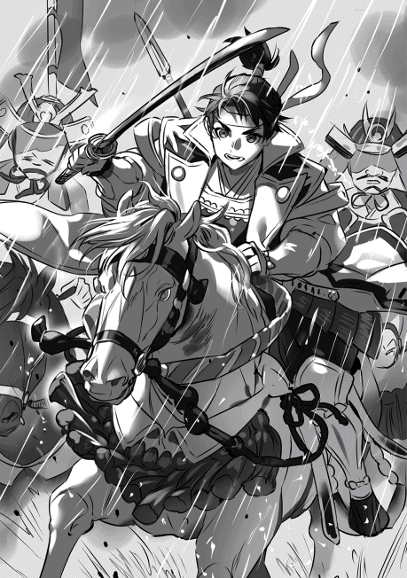
追う、逃げる！ 久政は北国街道をひたすら南下する。それを追う。逃げ遅れた浅井勢を殺しながら先へ進む。何度か突出しそうになって五郎衛門に引き留められた。足軽の援護なしでは逆撃に遭いかねない。大将は無茶をしてはならんと。分かる、だがそれでも心が逸る。俺は久政の首が欲しいのだ！ 浅井を喰らいたいのだ！ 朽木が生き残るために！
途中で休息を入れさせられた。馬を潰すな、兵を潰すなと五郎衛門に言われた。納得いかなかった、久政は逃げている。それでも休まされた。休息の間に月ヶ瀬若狭守、阿閉淡路守が合流し俺に臣従を誓った。これで兵力は二千五百を超えた。久政の兵は脱落者の所為で減りつつある。千を切っただろう。
休息の間にハルに糒を与えた。兜に雨水を蓄え糒を溶かして食べさせた。無心に食べるハルの首筋を何度も撫でながら〝頼むぞ〟と話しかけた。土砂降りの中でも寒いとは思わなかった、むしろ暑かった。半刻、一時間程休んで久政を追った。
久政は北国街道を左に逸れていた。小谷に向かっている。家族を救おうとしている。それを確認しながら追った。追う途中で何本も槍が捨ててあるのを見た。鎧も捨てている。馬も潰れ兵も倒れていた。逃げるのに必死で潰したのだろう。倒れている兵はその場で止めを刺された。今更ながら五郎衛門が正しかったのが分かった。
小谷城へ着く途中で日が暮れた。月ヶ瀬若狭守、阿閉淡路守に先導を頼み後を追った。土砂降りの中、暗闇の中、山道を這う様に進んだ。ようやく小谷城に着いた時は身体がバラバラになりそうな程に疲れていた。何も考えられずに眠った。久政を始めとする浅井一族は井口越前守の手で全て捕えられていた。知ったのは翌日だった。
永禄四年（一五六一年） 六月中旬 近江蒲生郡 観音寺城 平井定武
御屋形様が六人衆を書院に集めた。何事が起きたのかと思ったが御屋形様の御機嫌は悪くない。いやかなりの上機嫌だ。はて、一体何が。皆の顔を見たが皆訝しげにしている。心当たりが有る人間は居ない様だ。
「朽木から、いや弥五郎から使者が来たぞ」
「弥五郎殿は伊香郡で浅井勢と戦っている筈。......さては勝ちましたか！」
後藤但馬守殿の言葉に御屋形様が笑い声を上げられた。
「当たったぞ、但馬。だがただの勝ちではない。弥五郎め、小谷城を落とし浅井下野守とその家族を捕えおった。大勝利よ」
ざわめきが起こった。御屋形様、後藤殿、進藤殿、目賀田殿は顔を綻ばせたが他の三人、若殿は顔を顰め、三雲殿、蒲生殿の表情は変わらなかった。面白く無いと思っている。それにしても、小夜からの文には浅井に動きありと塩津浜に早々に戻ったと書いてあったがまさか浅井を下すとは......。
「平井殿、おめでとうござる。良い婿殿をお持ちになりましたな」
「いや、有難うござる」
「但馬、儂には祝いを言わんのか。弥五郎は儂の婿ぞ」
「これは失礼致しました。御屋形様、おめでとうございまする。後藤但馬守、心からお慶び申し上げまする」
御屋形様が戯れると但馬守殿が生真面目に祝辞を述べた。思わず噴き出してしまった。御屋形様、但馬守殿も笑う。
「婿殿は中々に働き者よ。新婚早々まさか小谷を落とすとはの。いや、速い、驚いたわ。朝倉も胆を潰しておろう」
御屋形様がまた上機嫌に笑い声を上げられた。これで浅井、朝倉の連合を潰す事が出来た。北近江を朽木に任せる事で朝倉への抑えにも出来る。そうお考えなのだろう。
「婿殿が儂に頼みが有ると言っておる」
「ほう、それは？」
目賀田殿がお訊ねすると御屋形様がクスクスと御笑いになった。
「坂田郡を押さえて欲しいそうだ。婿殿はそこまで手が回らぬと悲鳴を上げておる」
「それは......」
「坂田郡を儂にくれるという事よ。相変らず豪儀よの、朽木は」
御屋形様の言葉に三人を除いて皆が笑った。近江坂田郡、十万石には届かぬが八万石は堅いだろう。確かに豪儀だ。御屋形様も晴れやかに笑っている。
「弥五郎は伊香郡の北に向かっているらしい。栃ノ木峠、柳ヶ瀬を押さえるつもりじゃ。さすれば朝倉は越前から近江に出張れぬ。朝倉が慌てて兵を動かす前に押さえる」
今度は皆が頷いた。
「分かったであろう。そういうわけで南には手が回らぬのよ」
「なにやら申し訳ないような気分ですな」
「そうでもないぞ、但馬守殿」
「どういう事かな、山城守殿」
「坂田郡を得れば美濃不破郡と境を接する事になる。但馬守殿も不破関を知らぬわけでは有るまい。弥五郎殿の本心は越前は引き受ける故美濃は任せた、そういう事であろう」
後藤殿が唸り声を上げた。
「なるほど、確かに山城の言う通りかもしれん。となると早めに動いて守りを固めねばならん。出兵の準備をいたせ」
「はっ」
「婿殿に負けるな、六角の武威、輝かせようぞ！」
御屋形様が右手を突き上げると〝おう〟という声が上がり、笑い声が上がった。
書院から下がると但馬守殿が話しかけてきた。
「あまりお気に召されるな、加賀守殿」
「但馬守殿」
「若殿、蒲生殿、三雲殿の事で心配しておいでであろう」
「お気付きでしたか」
「気付かぬ筈が無い。山城守殿、次郎左衛門尉殿も気付いておいでだ」
但馬守殿が息を吐いた。
「面白く無い気持ちをお持ちの様だが、六角家には頼りになる味方が必要であろう。若狭の武田が当てにならぬ以上、朽木との協力は必要不可欠。某だけではない、山城守殿、次郎左衛門尉殿も同じ思いにござる」
「某も同感でござる」
但馬守殿が頷いた。
「若殿、蒲生殿、三雲殿、いずれも弥五郎殿とはいささか因縁が有る。それ故に嫌っておいでの様だが、いずれ御理解頂けよう、あまり心配致されるな」
「お気遣い痛み入り申す」
礼を言うと但馬守殿が軽く頷いて立ち去って行った。本当にそうならいいのだが......。
永禄四年（一五六一年） 七月中旬 近江高島郡安井川村 清水山城 朽木稙綱
「兄上」
「おう、蔵人か」
「相変わらず此処ですか」
「うむ、まあ見飽きぬの。見渡す限り青々としておる。秋になればこれが黄金色に波打つ。真に見事なものよ」
儂の言葉に蔵人が可笑しくて堪らぬという様に笑い声を上げた。
「兄上、殿がやりましたな」
「前にも同じ会話をしたの、蔵人」
「そう言えばそうですな、場所もここでした」
また蔵人が可笑しくて堪らぬという様に笑い声を上げた。困った奴よ。
「覚えておいでか、兄上。殿が成人し壮年になる頃には、そんな話をしましたなあ」
「そうよの、......あれは十年前か。もう十年、それとも未だ十年かの」
「某にはあっという間の十年でしたな。兄上は如何で？」
「そうよの、気が付けば十年、そんなところか」
顔を見合わせて笑った。ただ嬉しかった。弟も同じ気持ちだろう。浅井を滅ぼし朽木が北近江の覇者になった。誰もが朽木を認めている。こんな日が来るとは......。朽木はもう周囲に怯える弱い国人領主では無くなったのだ。
「それにしても惜しい。坂田郡、奪えませなんだか」
「今浜、国友だけでも奪うと言っておったが諦めたようじゃ。これからも六角とは協力しなければならん。ならばそっくり譲った方が喜ばれよう。それに伊香郡の北を押さえるのが急務という事も有る」
「......」
「蔵人、朽木は急速に大きくなった。兵を整え領内を纏めるには最低でも一年はかかると弥五郎は見ている。その間は六角の庇護が必要だ。周りに隙は見せられん」
蔵人が頷いた。もう笑みは無い。目の前の青々とした風景が急に色褪せて見えた。生臭い話に風景も辟易したと見える。
「重蔵が右衛門督の周囲に三雲と蒲生の姿が有ると報告してきた」
「三雲と蒲生？」
「うむ、厄介な相手よ。馬鹿を操る事など容易かろう」
「なるほど、それを黙らせるためにも......」
「そういうことよ」
海千山千の蒲生と甲賀の三雲。碌でもない組み合わせよ。冗談抜きで馬鹿を始末した方が良いかもしれぬ。
六角は坂田郡を自領に編入した。坂田郡の旧浅井家臣にとっては一部領地の取り上げが有ったりと結構厳しい処置がとられたようだ。八門の調べでは旧浅井家臣に不満が溜まっているという。特に浅井郡、伊香郡の旧浅井家臣の殆どが旧領を安堵された事と比べて六角を恨む声が強いらしい。新たな紛争の元になりかねぬ。厄介な......。
「殿は小谷へ移るのですか？ 小谷城は堅固だと聞きますが？」
「いや、それは無い。当分は塩津浜であろう。弥五郎は小谷を不便だと言っておる」
「不便？」
「うむ、あれが好む城は移動の便が良く湖に近い事。そして敵に近い城よ。小谷はその全てに当てはまらん。塩津浜ならその全ての条件を揃えておる。あの城から敦賀までは十里足らず。弥五郎の次の狙いは敦賀よ」
弟が〝敦賀〟と呟いた。
「敦賀郡を奪えば朝倉は若狭へは侵攻出来ん。鉢伏山、木ノ芽峠で朝倉を防ぎつつ若狭が腐るのを待つ」
「腐るのを待つ？」
「腐るのを待って朽木が食う。今食うと周りが煩いからの」
「なるほど、確かに煩いですな」
若狭ではとうとう一揆が起きた。武田治部少輔は一揆を鎮圧したが領内は益々不安定になる。一揆は頻発するようになるかもしれない。
「しかし、当分帰って来ないとなると小夜殿が可哀想ですな」
「帰らぬ方が良い」
弟が眉を顰めた。
「......何か有るのですな？」
「うむ、公方様から頻りに文が来る。弥五郎だけではない、儂にもじゃ」
「なんと」
「倅達にも届いていよう。厄介な事になった」
蔵人が首を振りつつ溜息を吐いた。
「三好を討て、ですな」
「うむ。浅井が滅んだ以上、朝倉だけでは何も出来ぬ。自分が仲介するから和睦してはどうかと言っている。そして六角、朝倉、畠山と協力して三好を討てと......」
「......」
「公方様は朽木を、弥五郎を使いたくて堪らぬのだ。弥五郎なれば三好を簡単に打ち破れるのではないかと期待している」
また蔵人が溜息を吐いた。将軍家は十河一存が死んだ事で三好長慶を支える柱が一本倒れた。そういう思いが有るのだろう。そして弥五郎なれば、そう思っている。
「朽木は確かに大きくなった。だがそれでも北近江三郡に過ぎぬ。高島、伊香、浅井、三郡合わせても二十万石程であろう。兵力は六千から七千と言ったところだ。坂田郡を領すれば三十万石に近くなったであろうが......、それでも三十万石、一万が限度よ。到底三好には敵わぬ」
「しかし、それがお分かりではない」
「うむ」
勝ち方が鮮やか過ぎるのだ。その所為で不可能が無いように見えてしまう。
「三好が将軍家の動きに気付いておらぬとも思えませぬが」
「知っていて放置しているのよ。所詮何も出来ぬと。だからこそ反発するのかもしれんが......」
「三好が当家を如何思うか......」
それが一番気になるところだ。蔵人も眉を寄せて考えている。
「分からぬ。これまでは放置してくれたが、北近江で二十万石となるとどうなるか分からぬ。だからこそ清水山に戻らぬ方が良いと思う。公方様にも当分領内を纏めねばならんと言えよう」
蔵人が頷いた。
「厄介ですな、殿が大きくなればなるほど将軍家の殿への思いは強くなりましょう。それにつれて三好の警戒も強くなりかねませぬ」
「小夜殿を塩津浜に送る事も考えている。塩津浜を正式に居城としてしまえば朽木が畿内に関心が無いと三好は理解しよう」
結果的に公方様の安全にも繋がる筈だ。
蔵人が大きく息を吐いた。
「いっそ越前に攻め入った方が良いやもしれませぬな。公方様も少しは頭が冷えましょう」
「早ければ来年にはそうなる。だがそれまでは我慢しなければならん」
何時までこんな日が続くのか......。
永禄四年（一五六一年） 九月上旬 近江伊香郡塩津浜 塩津浜城 朽木基綱
ようやく領内の大まかな把握が終った。浅井家が保管していた領内の記録を見て何とか分かった。伊香郡、浅井郡、合わせて十一万石をちょっと超えるぐらいだ。高島郡を入れても二十万石に及ばない。相変らず朽木は弱小勢力だ。伊香郡、浅井郡の約半分が国人領主の領土、後の半分が浅井家の直轄領だった。
浅井家は結構小さい国人領主が多かったようだ。浅井の直轄領はそのまま朽木の直轄領になる。朽木の直轄領は十二万石ぐらいになるから、直属軍は約四千、国人領主の率いる軍が約二千、合わせて六千と言ったところだ。俺の方は銭次第で増やせる。だが国人領主の兵は百姓が主力だ、無理は出来ない。これを傭兵に切り替える必要が有る......。
百姓達に米では無く銭の収入を得させなければならん。その銭を年貢として収めさせる事で領主達に銭を与え兵を雇わさせる。......石鹸の製造方法を教えよう。比較的簡単に誰でも直ぐに製造出来る。石鹸の単価は多少下がるが已むを得ん。全体で見れば利益は増える筈だ。それと綿花だな。綿糸は幾らでも需要は有る。船の帆、包帯、火縄、衣服、座布団、布団。ガンガン作って売り捌けば良い。大儲けだ。
後は酒の製造所を増やそう。北国街道が使えるのだ、それを積極的に利用する。伊香郡、浅井郡に作って人を雇う、銭を払う。そして領内での関を廃し楽市楽座を行う。後は各領主が自分の領地の特産物をどれだけ商人に売り込めるかだ。時間がかかるが、米では無く銭による収入で兵を雇う事が出来るようになる筈だ。上手く行かない所は八門に調査をさせよう。そして俺が指導する。
鉄砲の製造、刀の製造場所も増やそう。出来れば硝石の製造場所も増やしたい。場所は......、小谷が有るな。防衛拠点では無く軍事関係の生産拠点として使うという手も有るか。だが誰を責任者にする？ そこが問題だな、御爺と大叔父に相談してみるか。
坂田郡が有ればな、ざっと九万石近く増えたんだが......。考えても仕方ない、当分は六角との協力関係が必要だ。弱い以上強い勢力に媚びざるを得ない。六角義賢は大喜びだったな。文を寄越したが嬉しさが滲み出るような文面だった。捕えた浅井一族を送って欲しいというから阿古の方とその娘を除いて送ってやった。
六角義賢は男子を斬首、女子を尼寺に入れた。六角家をコケにした連中を成敗したわけだ。溜飲が下がっただろう。俺も大助かりだ、手を汚さずに済んだ。久政一家を根絶やしなんてゾッとする。浅井の係累で逃げた連中もいるが、その殆どは越前朝倉を頼った様だ。無難な選択だが正しい選択とは言えない。朝倉は余りあてにならん。
義輝の馬鹿が相変わらず煩い。この時点で朝倉と和睦して三好を討て？ 何にも分かっていない。俺だけじゃなく御爺、そして叔父御達にも文を出していた。御爺もウンザリしていたな。もう義理は果たした、そう思っているのに未だに義輝はしがみ付いて来る。こうなると怨霊とか祟り神の類に近い。ウンザリする。
叔父御達にはしっかり釘を刺した。俺に付くか義輝に付くかはっきり決めろと。二人ともあっさりと俺に従うと言った。幕府が駄目な事は幕府内部に居たから二人にはよく分かっている。そんな幕府と朽木家のどちらを選ぶか、二人にとっては自明の事だったらしい。以後は義輝から来た文は俺に全て見せる事で合意した。というより二人から提案してきた。二人にとっても義輝は重荷らしい。
それどころか京に居るあとの二人の叔父も朽木に呼び戻して欲しいと頼まれた。どうも京の二人から頼まれているらしい。暇さえあれば義輝から朽木を使って三好を討つという話を振られて困っているそうだ。下手な答えをすれば三好に睨まれる。二人にとって京は居辛い場所になりつつあるらしい。良いだろう、こっちに呼んでやろう。少しずつ義輝との接点を無くして行く。幕府の忠実な家臣から戦国大名への脱皮だ。人畜無害な青大将から毒蛇マムシへと変身してやる。義輝も近付かなくなるだろう。
先ずは朽木領内を治める基本法、朽木分国法を作る。朽木は急速に大きくなった。しかも浅井の家臣を吸収する形で大きくなっている。浅井の家臣達に不安を与えてはいけない。朽木は恣意では政治を行わない。理によって行う事を明確にする。その理を示す物が朽木分国法だ。それによって不安を拭う。その分国法の中で守護不入を否認して幕府の権威を否定する。朽木が幕府の権威を有難がる御し易い大名だとは思わなくなるだろう......、と思うんだけどな。頭が痛いわ。
梅丸、鍋丸、岩松、寅丸、千代松が元服した。それぞれ朽木主税基安、日置助五郎仲惟、宮川重三郎道継、荒川平四郎長好、長沼陣八郎行定になった。俺の近習として塩津浜城にいる。そして俺の命令で浅井家の文書をひっくり返して調べ、算盤を弾いている。暫くは戦は無い。文官としてこき使ってやろう。戦だけが仕事ではないと、こいつらに理解させるには丁度いい。分国法の制定にも関わらせてやろう。国を治めるとは何なのかを知る良い機会だ。
朽木家の行政、軍の仕組みも考えんといかん。もうこれまでのやり方じゃ間に合わなくなってきた。行政面では裁判と訴訟、財政、農政、通商、商工、総務を担当する役職を作る。軍は実戦部隊、参謀部、後方支援。そして総合的に判断する家老衆を置く。人数は五人から十人。こいつは浅井の旧臣からも選ぶ。まだまだ足りんな、御爺、五郎衛門、新次郎にも相談してみよう。
さて、小夜の相手をしてくるか。
永禄四年（一五六一年） 九月上旬 信濃更級郡 川中島
陣幕の中、一人の大将が家臣達に話し始めた。
「今宵、全軍で河を渡る」
「......」
「武田の夜討ち勢が此処を突かぬ前にこの妻女山を下りる。そして川中島で我らを待ち構える信玄の機先を制しその首を獲る」
静かな口調だが声には強さが有った。家臣達が頷く。
「夜討ち勢への備えは如何します？」
「無用じゃ」
家臣達の表情が変わった。
「備え等無用。ただひたすらに信玄の首を目指せ。退く事許さず、前へ進め」
「ですが」
家臣が声を上げると大将が遮った。
「死生命無く死中生有り。およそこの世に宿命など無し。ただひたすらに死物狂いで戦う先にこそ生が有る。死を恐れずに踏み越えよ。踏み越えたその先に信玄の首が有る」
「......」
「この一戦に全てを賭けよ」
家臣達が頭を下げた。
第四次川中島の戦いが始まろうとしていた。
永禄四年（一五六一年） 九月上旬 信濃更級郡 川中島 武田晴信
霧が深い。子の刻頃から霧が出て来た。八幡原は一間先の武者の姿さえぼやけて見える程に霧が深い。面白くない、これでは越後勢が近付いても分からぬ。いや、この霧なれば越後勢も高坂、馬場が率いる別働隊の動きは見えまい。夜襲は上手く行く筈だ。
「今何刻か？」
「そろそろ寅の刻かと思いまする」
白い靄の中、声が聞こえた。答えたのは誰だろう？ 分からぬな、気にしても仕方が無い。寅の刻か、ならばあと一刻で卯の刻、陽が登るだろう。闇が晴れれば今少し遠くが見える筈だ。
視界が利かぬ、如何にも落ち着かぬ。あのまま海津城で越後勢の撤兵を待てば良かっただろうか？ だがそれでは甲越の境目が定まらぬ。越後勢を叩いて越後に撤退させる。海津城より南は武田の領地なのだとはっきりと確定させなければ......。何時までもこの地で越後勢と睨み合ってはいられぬのだ。
......未だか？ そろそろ別働隊が妻女山の越後勢に攻めかかる筈だ。霧で妻女山は見えない、だが攻めかかれば喊声が聞こえるだろうし、陣を焼き払う炎が見える筈だ。落ち着け、この霧だ、別働隊も移動に苦労しているのかもしれぬではないか。戦ではこの手の齟齬は有りがちだ。
この戦が終われば上州に出兵だ。箕輪城の長野信濃守が重病、死んだという報せが入った。おそらくは死んだな。信濃守が重病というのは死を秘しているのであろう。倅の右京進が箕輪衆を取り纏める時を稼ごうとしているのだ。小賢しい事をするものよ。冷えるな、手が悴む。ゆっくりと掌を握り開いた。軍配を握るのだ、何時戦が始まっても良い様にしなくてはならぬ。
上州の後は駿河だ。三河の松平が今川から離れ織田と結んだ。今川の力は落ちている。松平と結んで今川を分け取りする。北条が怒るやもしれぬな。だが松平を押さえられぬ今川など同盟する価値も無いわ。それに北条には上杉という相容れぬ敵が居るのだ。多少の紆余曲折は有ろうとも最後には北条は武田と組む筈だ。それより問題は太郎だ、今川から嫁を娶っている。武田が大きくなるためには、今川を喰わねばならぬと料簡してくれれば良いのだが......。いかぬな、先走って如何する。先ずは目の前の越後勢、これを叩かなければ......。
甲州勢八千が鶴翼の陣で越後勢を待ち構えている。別働隊に妻女山を追い落とされた越後勢を鶴翼の陣で半包囲する。戦の序盤は苦しかろう。越後勢の方が兵力が多い、だが足止めするだけで良いのだ、直ぐに別働隊が来る。別働隊が越後勢の後方を突けば挟撃、或いは包囲殲滅が出来る。そうなれば北信濃だけでは無い、越後にも攻め込めよう。海が得られればそこから銭も入る......。
時だけが過ぎてゆく。遅い、もう寅の刻も小半刻は過ぎただろう。何故に妻女山で声が上がらぬのだ？ 別働隊は何をしている？ 攻撃が遅れているのか？ このままでは越後勢が此処に来るのは夜が明けてからになろう。夜襲によって不意を突く事が出来なくなってしまうではないか。勝てぬとは思わぬが損害が増えよう。後の戦に支障が出る。......周囲に気付かれぬように息を吐いた。
焦るな、焦ってはならぬ。儂は短期者のあの男とは違うのだ。待って戦う事が出来る男だ。もう一度静かに息を吐いた。不自由な事よ、息を吐くのも気を遣わねばならぬとは......。いや、真に不自由なのは馬か。鳴き声、嘶きを出せぬように枚を噛ませている。許せよ、戦が始まれば直ぐに外してやる。苦しかろうがもう少し待て。
「物見から報せは無いか？」
「有りませぬ」
陣の前方に置いた物見からも報せが無い。やはりまだ妻女山で戦は始まっていないという事だ。解せぬな、別働隊を指揮するのは馬場、高坂を始めいずれも経験豊富な者達だ、道に迷うなど有り得ぬ。となれば......。
「明るくなってきましたな」
低く掠れた声が聞こえた。山本菅助か。不安そうな声に聞こえた。菅助も別働隊の、いや越後勢の動きを訝しんでいるのやもしれぬ。
「そうだな」
卯の刻だ。霧も晴れて来るだろう。心を切り替えよう、夜襲は失敗した。妻女山の備えは我らが思う以上に厳しいのかもしれん。別働隊は隙を伺ったが攻めかかれなかったのだろう。もう直ぐ戻って来ような。
徐々に徐々に視界が広がってゆく。少しずつ鶴翼に構える武田勢の姿が見えるようになった。先手がざわめいている。別働隊の姿に驚いているのだろう。物見も気が利かぬな、敵でなくとも報せを寄越すべきであろうに。
「御屋形様」
金丸平八郎の声が震えている。
「如何した、平八郎」
「越後勢が」
「！」
目を凝らした。霧が晴れてゆく。前方に何かが見えた。少しずつはっきりして行く。旗が見えた！ 白地に毘の一字！ 開扇の馬標！ 軍配を構え直した！
「前方を空けよ」
皆が顔を見合わせている。
「早ういたせ！ 儂の姿を皆に見せるのだ。さすれば先手も落ち着いて戦えよう。その方等も狼狽えた姿を見せるな、付け込まれるぞ」
「はっ」
「百足衆を走らせよ、別働隊が来るまで耐えよと」
百足衆が馬の枚を外すと、どの馬も鼻息も荒く口を鳴らした。それを宥めながら百足衆が馬に乗る。掛け声と共に馬を走らせだした。
味方は八千、敵は......、如何見ても一万三千は居る。越後勢は別働隊と戦っていない！ こちらの狙いを察し夜半に山を下りたのだ。物見は越後の忍びに殺されたのだろうな。してやられたか、流石は政虎、関東管領か。だが未だ戦は始まってもおらぬ。別働隊が来るまで防ぐ。前方を空けたのは痛い、敵は儂を目掛けて来るだろう。だが耐えねばならぬ。ここを耐えて別働隊を待つ！ 予定通り、予定通りだ！ 狼狽えるな。越後勢が喊声を上げて突撃してきた！
永禄四年（一五六一年） 九月上旬 信濃更級郡 川中島 柿崎景家
「掛かれ！ 掛かれ！ これしきの敵、踏み潰せ！」
〝おう〟という声が兵達から上がった。だが目の前の敵は頑強にこちらの攻撃を撥ね返している。一隊を横に回したがそれにも対応している。敵の大将は飯富源四郎、流石は甲山の猛虎の弟よ。耐えておる。兵を励ましたが中々撃ち崩せぬ。
叩き合う！ 突き合う！ 揉み合う！ しぶとい、崩せぬ。声を張り上げ兵を励ましたが敵は堪えている。敵からも声が聞こえる。〝耐えよ〟、〝下がるな〟、〝味方が来る〟と励ましている。源四郎か！ 急がねばならぬ、武田の別動隊が来る前に、目の前の敵を撃ち崩し信玄坊主めの首を獲らねばならんのだ！
「父上！」
隣りに居た弥次郎が声を上げた。
「如何した！ 弥次郎！」
「旗が！ 懸かり乱れ龍の旗が御前に」
「！」
振り返ると本隊の前に懸かり乱れ龍の旗が有った。総攻撃、実城様御自ら前に出られるおつもりか！
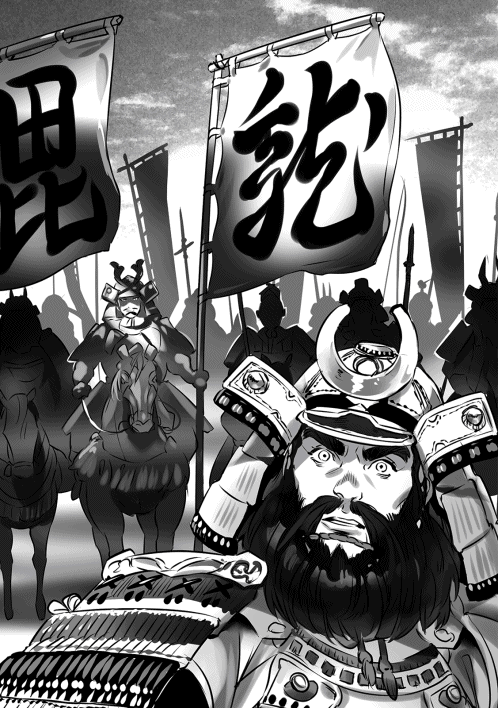
「懸かり乱れ龍の旗が振られたぞ！ 武功など無用！ 死を覚悟して踏み込め！ 踏み込んで死ね！ 実城様の馬前で死ぬ事こそ誉！ 死ねや者共！」
馬腹を蹴った、前の者に圧し掛かる勢いで馬が前に出る。勢いに押されて前の者も前進した。押せ！ 押すのだ！ 弥次郎が〝相変わらず荒いですな〟と笑った。何を言うか、儂などよりもその方の方が余程荒かろうに。
じり、じりと敵が退く。〝退くな〟、〝耐えよ〟と金切り声が聞こえた。焦っている！ 源四郎は焦っている！ 勝機！
「今一息！ 押せ！ 声を合わせろ！ 押せ！」
「おう！」
声を合わせる事で敵を威圧する。如何だ？ また下がった！
「弥次郎！」
「はい！」
「その方にここを任せる！ このまま押し続けろ」
「父上は！」
「一手を以って敵の背後に出る！」
側面を突こうとしている部隊の陰から一気に後背に出る。正面から押し続ければ源四郎の目を晦ませる事が出来るやもしれぬ。
「承知！ 御武運を！」
「うむ！ 頼むぞ」
永禄四年（一五六一年） 九月上旬 信濃更級郡 川中島 上杉政虎
本庄美作守が押している、だが敵は崩れぬ。
「しぶといですな。流石は典厩」
「感嘆している場合では有るまい、グズグズしていると別働隊が来る」
荒川伊豆守、鬼小島弥太郎の言葉に皆が頷いた。しぶといのが事実なら別働隊が来るのも事実だ。典厩の部隊は信玄に近い、此処が崩れれば信玄への突撃を邪魔する者は居ない！
「美作守を退かせよ。弓隊は美作を援護、鉄砲隊は前に出て典厩隊の中央を攻撃、その後に今一度美作を突入させる。使番を出せ」
弥太郎が指示を出すために動いた。そして使番が駆け出す。時が無い、後半刻程で巳の刻になるだろう。弥太郎の言う通り、別働隊が来る。
落ち着け、落ち着くのだ。死生命無く死中生有り。上杉軍一万五千を死地に置く事でようやく信玄めを土俵に引き摺り出す事が出来た。時は無いが兵力はこちらが倍に近い、勝機は間違いなく有る！ 武田方は既に武田太郎、諸角豊後が討死している。そして柿崎が飯富を崩し始めた。勝てる！ 勝てるのだ！ 武田の戦線は崩壊しつつある。ここで典厩の陣を崩せば......。
美作守が兵を後退させた。敵は追ってこない。良い判断だ、通常ならな。だが敵が追ってこないのなら思い切って鉄砲隊を前に出せる！ 態勢を整えているところに一撃を加え混乱させる！ 鉄砲隊が前に出た。二百丁、決して多いとは言えぬが、使い様によっては大きな威力を発揮する筈だ。その事は弥五郎殿が朽木谷、野良田の戦いで証明している。轟音と共に典厩の部隊で何人もの兵が倒れた。旗が揺らめいている、動揺している！ 美作が動く！ 突入！ 周りから歓声が上がった。
駄目だ、思わず膝を手で叩いた！ 僅かに典厩の手当てが速かった。いや美作の突入が遅かったのか？ 敵は堪えている。騎馬だけの部隊を編成する必要があるな。足軽に速さを合わせてはどうしても遅くなる。弓で援護させつつ鉄砲と騎馬の部隊で交互に攻撃させる！ 混乱を抑えられぬ内に騎馬の部隊を突入し突破させる......。
「今一度だ！ 今一度美作を退かせ鉄砲隊で攻撃、美作を突入させよ！」
「はっ！」
使番が飛び出してゆく。急げよ、急げ。焦れる気持ちを抑えて待つ。美作守が兵を反転させる、鉄砲隊が前に出て撃つ、美作守が反転して突っ込んだ！
「うむ！」
思わず唸り声が出た。周囲も歓声を上げている。今度は食い込んだ！
「弥太郎、伊豆守、騎馬の者、十名ほど選べ！」
「はっ」
弥太郎と伊豆守が十名程の名を呼んだ。
「弥太郎、伊豆守、その者達は残れ！ 余の者は武田の本陣を目指して攻めかかれ！ 行け！」
喊声を上げながら旗本隊約八百が武田の本陣を目指して走り出した。残るのは俺の他に弥太郎、伊豆守、そして二人が選んだ十名と馬だけだ。
武田の本陣からも旗本隊が出て来た。武田勢はいずれも手一杯だ。本陣から兵を出すしかないのだ。だがこれで本陣が手薄になった。揉み合い始めた、この時を待っていた！
「見よ！ 敵の本陣は手薄になった！ これより我らだけで武田の本陣に突撃する。目指すは信玄の首一つ！ この一戦で宿敵武田を打ち払うのだ！」
〝おーっ〟と声が上がった。馬に跨った、太刀を抜いて肩に担いだ。二尺七寸、公方様より頂いた朽木の住宗吉。〝続け！〟と声をかけて馬を走らせた。走る、戦場をただ走る。手勢は十三騎、だが遮る敵はいない。武田は倍近い上杉勢を相手に目の前の敵を防ぐだけで手一杯だ。鶴翼の陣が仇になったな、信玄。魚鱗ならば少しは違ったものを。見えたぞ！ 床几に座った貴様が。待っていろ、今そこに行く。
〝武田典厩殿討ち取った！〟
大音声が戦場に響いた。歓声と悲鳴が上がる。歓声は上杉、悲鳴は武田。信玄！ 貴様の片腕を捥ぎ取った！ 次は貴様の首だ！ 諏訪法性兜がはっきりと認識できた。あと二町！ 信玄の周囲が我らに気付いた。
「実城様！ 某が露払いを！」
「うむ、頼む！」
弥太郎が前に出る。それに従って五騎程が前に出た。本陣は目の前！ あと一町、床几に座った信玄の姿が徐々に大きくなる。信玄の首に手が届く！
敵が十名程で前を塞ごうとした、弥太郎が突っ込む！ 間髪を入れずに五騎が突っ込む！ 忽ち蹴散らした。手荒いわ、馬に蹴り殺させたか！ その脇をすり抜ける！ 信玄の前を十名程が固めた。邪魔な！
「実城様！ 御存分に！ 我らが道を開けまする！」
「頼むぞ！ 伊豆守！」
伊豆守達が四方に散った。迂回して信玄を狙うような動きを見せる。敵が動揺した！ ばらける！ 突っ込んだ！
「邪魔するな！」
太刀を左右に二度振り下ろした！ 血飛沫を上げて武田兵が二人倒れた。斬れる！ 思う間もなく目の前に信玄が居た！ 届いたぞ！ 信玄！ 宗吉を振りかぶって振り下ろした！
「喰らえ！」
永禄四年（一五六一年） 九月下旬 近江伊香郡塩津浜 塩津浜城 朽木基綱
第一条 名田の没収の禁止
譜代の家臣の所領たる名田を領主が正当な理由もなく没収する事を禁止する。年貢未納の場合は朽木家に訴え出る事。未納を理由に勝手に没収する事を許さず。
うん、これはこれで良いんじゃないのかな。
第二条 土地境界線の争論
田畑ならびに山林原野の境界に関する争論について、もとからの正しい境界をよくよく究明したうえで、原告あるいは被告の道理のない不当な謀訴であると判定された場合、その者の所領の三分の一が没収される。
土地に対する執着は凄いからな。三分の一は厳しいが、悪巧みの抑止にはこのくらいの罰が必要だろう。
第三条 荒廃地の再開墾の境界争論
もともと田畑であった土地が荒廃して河原や浜辺になっている土地を再度開望するについて、旧名主同志で填界の争いが生じた場合、その土地が年月を経て、もとの境界が判定し難くなっているときは、双方が主張する境界の中間を新規の境界と定めるべきであるが、双方が不承知ならば、権利を没収して各々別の名主、家臣に与える。
要するにぐだぐだ文句ばかり言ってんじゃない、そういう事だな。
「殿？」
「うん？ 呼んだか？」
「はい、二度お呼びしました」
「そうか、気付かなかった。済まぬ」
何時の間にか小夜が部屋に来ていた。小夜の後ろには奈津が控えている。やれやれだな。
「何をしていらっしゃいますの？」
「式目だ」
「式目？」
「朽木が北近江三郡を治めるために式目を作っている」
「まあ」
奈津、全身が耳状態だぞ。それでは間者としては二流だな。なんでそんなわざとらしい事をするのか、不思議だよな......。
「浅井の旧臣達は俺がどんな統治をするのか心配している筈だ。恣意に任せて支配されては堪らぬとも思っていよう。何と言ってもまだ若いからな。だから式目を作る」
「素晴らしい事ですけど大変では有りませんの」
小首を傾げると可愛いぞ。狙いはもう一つある。仕官を考えている浪人に朽木になら仕えても大丈夫だと思わせる事だ。朽木には人材が足りん。
「一から作るわけでは無い。今川家の今川仮名目録を基にする。もっとも借財の利息等はかなり修正した。ようやく出来上がったわ。今は確認しながら手直しをしているところだ」
小夜が感心したように頷いている。今川仮名目録を使う理由は、守護不入を否定し幕府の権威を否定しているからだ。そして今川氏は吉良氏に次ぐ足利一門として渋川氏、石橋氏とともに御一家と称されて別格の扱いを受けている。義輝が文句を言って来ても御一門、御一家の今川様の真似ですと白々しく答えてやるだけだ。
「後で梅丸、いや主税達に見せる。北近江三郡を治めるという事がどういう事なのか、何が必要なのか。少しでも理解させないとな」
朽木による国造りだ。勉強になる筈だ。理解して欲しいのは乱世だからこそ力では無く理による統治を国人領主達が望んでいる事だ。弱い者が泣く事の無い政治体制を作る。それが出来れば国人領主は安心して付いて来る。
「殿は戦の事を考えているのだとばかり思っていました」
「何故そんな事を」
「だって殿は希代の戦上手で軍略家だと皆が言っております」
「人違いだな、それは俺ではない」
「まあ」
小夜が口元に手をやってクスクスと笑った。信じてないな、こいつ。奈津も信じていない。
「俺は戦が下手だし嫌いだ。五郎衛門にも笑われているくらいだからな。それよりは式目を作ったり領民の暮らしを豊かにする事を考える方が好きだ」
「ですが上杉様が川中島で武田様に御勝ちなされたのは殿の御助言の御蔭とか、もっぱらの評判でございます」
「そんな評判は聞いた事が無いな。第一俺は川中島を知らん、助言など出来るわけが無い。上杉様とは二年前にお会いしたのは事実だが妙な噂が流れたものだ、迷惑している」
俺は何も知らん。助言などしていない。戦の結果に俺は関与していない......。
上杉政虎（謙信）と武田信玄が九月の頭に川中島で戦った。所謂第四次川中島の戦いという奴で五回に及んだ川中島の戦いの中で最も激しい戦いだ。史実では、政虎と信玄が一騎打ちをしたと言われ有名でもある。戦国の一大イベントと言って良い。こっちの世界でも信玄が別働隊を妻女山に送って似た様な展開になったんだが、結果はというとかなり違った。
上杉の圧勝、武田のボロ負けに近い。信玄は右の肘から先を切断され重傷、戦死者は主だったところで武田信繁、武田義信、望月信頼、諸角虎定、飯富虎昌、山本菅助、室賀信俊、相木昌朝、甘利昌忠、小幡憲重。全体で見れば武田軍は五千近い戦死者を出している。それに引き替え上杉軍の戦死者は二千に満たない。史実とは全く違う。八門から報告を聞いて呆然とした。最初はなんかの間違いじゃないかと思ったほどだ。だが戦闘の詳細を聞いていくと、幾つかこれが原因かと納得出来る部分が有った。
先ず上杉軍だが、兵力が微妙に多いような気がする。政虎は妻女山に一万五千の兵で籠ったらしい。史実だと武田の別働隊一万二千とほぼ同数だったと記憶しているから、上杉軍は一万二千から三千ぐらいだった筈だ。となると史実より二千〜三千は多い事になる。
そして政虎は決戦時に武田の別働隊が戻ってきた時のための抑えの兵を残していない。全軍で武田信玄に襲いかかっている。史実では抑えの兵は千は有った筈だ。それを置かずに戦った。つまり政虎は史実よりも三千から四千程多い兵力で信玄と戦った事になる。
史実だって武田軍は戦線崩壊に近い状況だったと思う。本陣に敵が突入してきたんだ、それぞれの部隊が目の前の敵と戦うので精一杯だったんだろう。連携して戦うなんて出来ない状態だったんだと思う。そしてこの世界では史実より多い兵に攻撃されている。そりゃ損害も多くなる筈だよ。納得した。
しかし抑えの兵を置かないとは随分と割り切ったものだ。最初は何考えてるんだと呆れたが、よくよく考えるとおかしな話でもない。千ぐらいの兵を抑えに置いたって武田の別働隊一万二千の前には何の意味も無いだろう。だったら、攻撃勢に加えて短時間に敵を叩き潰す事に専念した方が良いという考えは妥当と言えなくもない。味方を必死にさせるという意味でも有効だと思う。むしろ史実の政虎は結果的には思い切りが良くなかったと言える。
「それで何の用だ」
「平井の父から文が届きました。近日中にこちらを訪ねたいそうです」
「構わないが、何か急な用でも出来たかな？」
「さあ、そこまでは......」
また小首を傾げている。
「書いてなかったか」
「はい」
「分かった。お待ちしていると返事をしておいてくれ」
「はい」
返事をすると奈津を連れて部屋を出て行った。平井加賀守がここへ来る。どうやら尻に火が付いたか。娘可愛さに飛んでくるわけだ。安心していいぞ、小夜は大事に扱っているから。
武田勢が混乱した時、政虎は自ら旗本を率いて信玄の本陣に突っ込んだらしい。そして政虎だと思うんだが自ら信玄に斬りかかった。信玄は軍扇で防いだんだが、何太刀目かで肘から先を斬り飛ばされた。その痛みで床几から転がり落ちるところを政虎の太刀がまた襲った。それは外れたんだが、周囲がその光景を見て信玄が死んだと誤認したらしい。
まあ血飛沫を上げながら床几から転がり落ちたんだ。遠目では信玄が斬られて死んだように見えたのだろう。周囲から信玄が死んだと誤報が流れた。こいつは武田だけじゃなく上杉も誤認したようだ。妙な話だが武田も上杉も信玄が死んだと誤認した。
その後の戦況は悲惨なものになった。武田は収拾がつかなくなり信玄の本陣は潰走した。それに引き摺られる様に武田軍も潰走した。それを上杉が追撃する。別働隊が八幡原に到着した時には武田軍も上杉軍もそこには居なかった。周囲に転がっている死体は武田軍の方が多い。これはいかん、後を追わねばと思っていると、そこに追撃を打ち切った上杉軍が戻ってきた。
上杉にしてみれば帰国への道を塞がれているようなものだ。おまけにクライマーズ・ハイじゃないが意気は上がりっぱなしの状態。武田の別働隊など戦闘に間に合わなかった間抜けにしか見えない。そのまま正面から突破して越後に帰ったようだ。キチガイに刃物って本当だよな。
北信濃の状況は激変するな。これまで築き上げた武田の優位は吹っ飛んだ。これから上杉を背後にした高梨、村上の逆襲が始まると見て良い。武田は北信濃侵攻どころか防衛戦に追われる事になる。兵も失い将も失った。かなりのダメージだ。厳しい戦いになるだろう。
この状況で駿河への南進が可能だろうか？ 無理だな、先ずは信濃での戦いを終わらせないと無理だ。どの段階で上杉との間に国境線を引けるか、それ次第だろうとは思うが、その頃には武田は疲弊しきって動けない可能性も有る。となると今川が生き残る目も出てくる。関東の北条も上杉に押されているし、三国同盟の結び付きは強まるかもしれない。
義輝は大喜びだろうな。また三好を討てと文を書きまくるに違いない。まあ残念だが上杉は当分上洛は無理だ。変な話、川中島で勝った事で信濃方面の戦いにどっぷりと浸かる事になった。むしろ上杉は信濃、関東の二正面作戦、武田が越中の一向一揆を動かせば三正面作戦を余儀なくされる事になる。こっちも地獄だろう。関東甲信越は秋の収穫も必ずしも良くない、悲惨な事になりそうだ。
永禄四年（一五六一年） 十月上旬 近江伊香郡塩津浜 塩津浜城 朽木小夜
「小夜、入るぞ」
「はい」
返事をすると襖が開いて弥五郎様が入ってきた。その後ろから父、平井加賀守定武の姿が現れ、そして更に数人の男達が入って来た。
「父上？」
父は厳しい表情のまま答えない。そして男達が近付くと傍にいた奈津を捕えようとした。
「何をなさいます、姫様！」
奈津が救いを求めてきた。
「父上！」
「止めよ、小夜。無駄じゃぞ、奈津、観念せい。手に余らば斬れ。弥五郎殿の許しは得て有る」
「はっ」
「父上、これは一体......」
奈津が抵抗を諦め、高手小手に縛り上げられて連れて行かれた。
「弥五郎殿、御迷惑をおかけし申し訳ござらん。この通りでござる」
父が頭を下げた。
「いえ、お気になされますな。毒虫が消えて何よりにござる」
迷惑？ 毒虫？ どういう事？ 二人が何を話しているのか分からない。
「では、某はこれで」
「もうお帰りになりますのか？ 小夜と話して行かれては如何です？」
「いや、また改めて後日」
「......分かりました。その日をお待ちしておりまする」
父は私と視線を合わせる事無く去ってしまった。
暫くして父を見送った弥五郎様が戻って来た。
「殿、あれは一体、奈津は」
「慌てるな、小夜。今説明する。奈津は間者だ」
「間者？」
弥五郎様が頷いた。奈津が間者？ 父上が？
「妙な動きをするのでな。朽木の者が奈津を調べた。奈津は調べた事を平井に送っていたが同時に別な所にも送っていた」
「まあ、それは一体」
「甲賀だ」
甲賀、では三雲様？ では朽木の者というのは朽木家の忍び？
「それでこちらから舅殿にお知らせした。情報が甲賀にも流れているがご存知かと」
「父は、何と？」
「舅殿はそなたの近況を知らせろと命じただけで、朽木を調べろとは一言も命じていないそうだ」
「それで奈津を」
弥五郎様が頷いた。
「そうだ。奈津の存在、行動は朽木と平井の関係、そして朽木と六角の関係にまで亀裂を入れかねんからな。そなたの立場にも悪い影響が出かねん。舅殿は慌ててここに来たのだ。奈津を送り込んだ者の狙いはそれだと俺は見ている。朽木を孤立させたかったのだな」
溜息が出た。弥五郎様が心配そうな目で私を見ていた。
「舅殿に伺ったのだが、奈津は数年前に雇い入れたそうだ。おそらくはその時に甲賀から平井家に送り込まれたのだろう。理由は分からん。実力者の舅殿の動向を知りたいと思ったのかもしれん。だが、そなたが六角家の養女になった事で別な使い道が出て来た。奈津はそなたの傍に潜り込んだ。実家のために情報を収集する。おかしな話ではないからな」
「......奈津はどうなるのです？」
「......舅殿が本当の事を言っているのなら殺されるだろうな」
本当の事？ では嘘が有るの？ 朽木を調べろと命じたのは本当は父上？
「もし嘘なら？」
弥五郎様がちょっと迷うようなそぶりを見せた。
「表向きは死んだ事にして裏でこっそりと甲賀に戻すだろう。......だが長くはもたん」
「え？」
「朽木の者が奈津を殺す」
弥五郎様がじっと私を見ていた。
「朽木にも意地が有るのでな。舅殿、甲賀に対する警告にもなる」
「......」
弥五郎様が声を上げずに笑った。
「案ずるな、小夜。舅殿は嘘を吐いておらん」
「まあ」
「今六角家には二つの勢力が有る。一つは朽木を積極的に認めようという勢力。もう一つは朽木を危険視する勢力だ。舅殿は朽木を積極的に認めようと考えている。奈津のような存在を許すことはない」
奈津、私のために朽木に付いて来たのでは無かった......。それにしても朽木を認められない人達が六角家にいる。父上は何も教えてはくれなかった。一体誰が......。
永禄四年（一五六一年） 十月下旬 近江伊香郡塩津浜 塩津浜城 朽木基綱
「叔父上方、ようやく戻られましたな」
「はっ」
京から戻って来た朽木右兵衛尉直綱、朽木左衛門尉輝孝の二人が頭を下げた。傍には藤綱、成綱の二人の叔父が同席している。久し振りに四兄弟が揃った。懐かしいだろう。或いは義輝から離れる事が出来てホッとしているか。
「公方様は頻りに朽木の名を口にすると聞いた。本当かな？」
直綱と輝孝の二人が顔を見合わせ。そして〝真にござる〟と直綱が答えた。
「朽木、六角、畠山、朝倉の兵を合わせ三好を討つ。或いは越後の上杉に上洛を命じ、それに朽木、六角、畠山、朝倉の兵を合わせ三好を討つ。しばしば口にされます」
送られてきた文の通りか。藤綱、成綱の二人の叔父が遣る瀬無さそうな表情をしている。
「三好はそれを？」
「知っているのではないかと。何度か三好家の方々にそれらしき事を臭わされております。おそらくは公方様の周囲に三好に通じる者が居るのではないか、某と左衛門尉の推測にござる」
「なるほど」
やはり義輝の周囲には三好に通じる者が居る。朽木で感じた事は間違いじゃなかった......。しかしなあ、この二人にしてみれば堪ったもんじゃないな。京は三好の本拠地だ。命を何時奪われるかと気が気じゃなかっただろう。義輝はそういう事が分からないんだろうな。
「公方様には何のお力も無い。幕府の実権は三好、そして政所執事の伊勢殿が全てを握っており申す。公方様の決めた事など何一つ通らぬのが幕府の実情。哀れとは思いまするが......」
輝孝が言葉を濁した。続けたかった言葉は付き合いきれない、だろうな。
政所執事の伊勢か、こいつと三好長慶の関係が良好な間は京で政争が起きる可能性は無い。つまり義輝は傀儡のままだ。義輝が傀儡のままなら殺されることは無いだろう。史実では伊勢と長慶の関係が悪化し伊勢が失脚する。そして後任の政所執事は義輝派の人間だった。その事が三好に不安を感じさせ長慶死後、義輝殺害へと繋がる。そして長慶と伊勢の関係悪化の原因が六角、畠山による反三好活動だった。この世界では今の所それは無いが、これからどうなるか......。ま、考えても仕方ないな。
「叔父上方、お二人には兵糧方を務めて貰う」
「兵糧方？」
二人が訝しげな表情を見せた。兵糧って裏方だからな。面白く無いのかもしれない。
「これから先、朽木が戦う相手として考えられるのが第一に朝倉、次に武田、そして三好、最後に六角だと思う」
あれ、変な顔をしてる。六角は意外か？ 十分に有り得ると思うんだがな。
「いずれも簡単に勝てる相手ではない。戦は長期戦になろう。この場合一番大事なのが補給だ。それを管理してもらう」
「兵糧方とは小荷駄奉行の事で？」
「違うぞ、左衛門尉の叔父上。小荷駄奉行は兵糧を戦場に運ぶのが仕事。いわば戦時での役割。叔父御達の仕事は兵糧そのものの管理。これは平時から行う仕事だ。朽木の兵力は約七千。例えば朝倉と戦うのなら何処に七千人の兵糧一ヶ月分を保管すれば良いか、一ヶ月で戦が終らなければ如何するか、それを考え実行してもらう。戦場には出ないが戦の帰趨を左右する役割だ」
あ、今度は顔が強張っている。
「管理するのは兵糧だけではないぞ。火薬、鉛玉、火縄、矢も含まれる。長門守の叔父上は鉄砲隊四百を率いているが火薬、鉛玉、火縄が無ければ鉄砲隊など何の役にも立たん。無用の長物よ。そうであろう」
「はっ、殿の申される通りにござる」
藤綱が頷いた。
「いわば朽木を生かすも殺すも叔父上達の働き次第、そういう事だ」
脅し過ぎたか、蒼白になってる。
「そのように硬くなる事は無い。俺も手伝うからな」
笑顔で告げると二人が引き攣った笑みを浮かべた。まさかとは思うが、俺が怖いとかそういう事は無いよな。
永禄五年（一五六二年） 一月上旬 近江蒲生郡 観音寺城 後藤賢豊
新年の祝賀が終った後、弥五郎殿を書院にと誘った。警戒するかと思ったが素直に付いて来た。信頼されている、そういう事なら良いのだが......。書院には既に進藤殿、平井殿、目賀田殿が席に付いていた。初めて弥五郎殿が怪訝そうな表情を見せた。が何も言わずに一礼して席に着いた。
「弥五郎殿、さぞ驚かれた事と存ずる。申し訳ない」
「この事、左京大夫様は御存じなのでしょうな。一つ間違えば謀反を企んでいると疑われかねませぬが」
「勿論御存じでござる。今年一年、近江を取り巻く情勢が如何動くか。弥五郎殿の考えを聞いておきたいと思いましてな」
弥五郎殿が〝なるほど〟と頷いた。
「如何お考えかな？」
私が促すと弥五郎殿が〝左様〟と口を開いた。
「畿内においてですが、当分三好家の優位は動きますまい。三好家の足元を揺るがす事態が起きるとすれば左京大夫様と畠山様が共に動いた時のみ。但しそれとて分は悪いと思います。某としては余りお勧めは出来ませぬ」
皆が視線を交わした。
「弥五郎殿がそこに加われば？」
目賀田殿が尋ねると弥五郎殿が首を横に振った。
「その時は朝倉が動きかねませぬ。近江はとんでもない騒ぎになりますぞ」
目賀田殿が大きく息を吐いた。
「やはり弥五郎殿は動かせぬか。となると弥五郎殿が言われる通り畿内での戦は難しい」
皆が頷いた。
「某が気になるのは若狭にござる。越前から朝倉、丹波より三好が狙っており申す。どちらが若狭を取っても面白く無い状況になる」
皆が顔を顰めた。若狭の状況は酷くなる一方だ。滅ぶのは時間の問題だろう。
「三好が若狭を取ったなら朝倉との間に協力体制は取れるのではないかな。朝倉にとっても三好は脅威の筈」
進藤殿が問うと弥五郎殿が首を横に振った。
「当てになりませぬ。浅井ですら見殺しにしたほど朝倉の動きは消極的にござる。あれを味方と計算しては痛い目を見ましょう。当てにならぬ味方は敵よりも始末が悪い」
当てにならぬというよりも弥五郎殿の動きが早すぎるのではないか。あそこで浅井を滅ぼすなど誰も予測していなかったであろう。だが消極的というのは分からぬでもない。野良田の戦いで朝倉が出てくれば勝敗は分からなかった。
「若狭を取るのが三好、朝倉の何れであろうと朽木は独力で当たる覚悟にござる」
皆が視線を合わせた。弥五郎殿は対若狭に関しては六角家も当てにならぬと見ている。助力を期待せずに事に当たり、もし助力が有れば僥倖と考えようとしているようだ。若いが冷徹では有る。
「となるとやはり美濃か」
平井殿が呟くと弥五郎殿が訝しげな表情をした。
「弥五郎殿、今六角家で美濃への出兵が検討されている」
「美濃へ？ ですか、舅殿」
「そうだ」
弥五郎殿の視線が厳しくなった。不同意、そういう事だろう。
「事の発端は坂田郡を六角家が得た事に有り申す。あれによって六角家は東山道を使って美濃への侵攻が可能となり申した。その事に目を付けたのが、かつての美濃国主土岐美濃守様、左馬助様親子にござる。美濃守様は故管領代様の娘婿、左馬助様は御屋形様の甥に当たる。お二方が観音寺城を訪れ御屋形様に美濃への帰国を願った。昨年、一色左京大夫様が亡くなり後を右兵衛大夫龍興様が御継ぎになられたばかり。右兵衛大夫様は若年、必ずしも優れているとは聞き申さぬ。美濃を取り戻すのは難しくないと......」
「なるほど、そういう事ですか」
進藤殿が説明すると弥五郎殿が二度、三度と頷き視線を進藤殿に向けた。
「本気で美濃を取り戻すと？」
「いや、土岐家の方々はあくまで出兵の口実にござる。不破郡を取り不破の関を押さえたい、それ以上ではござらぬ。そしてこの出兵を推し進めているのが若殿であられる」
「......」
進藤殿が若殿の名を出すと書院に重苦しい沈黙が落ちた。
「弥五郎殿、若殿は御身が嫉のでござる」
「......」
目賀田殿の言葉に弥五郎殿が眉を寄せた。
「御身の武名、天下に知らぬ者は無い。越後の関東管領殿も御身を褒め称えている。それが嫉いのでござる。年も御身の方が若い、どうしても意識せざるを得ぬ。六角家の次期当主として沽券に係わるとも思っておられる」
弥五郎殿が迷惑そうに顔を顰めた。
結局はそこに行きつく。どれほど朽木が六角のために役に立つ、感情を押さえて利用すべきだと言っても、好悪ではなく若殿の面子の問題と言われればどうにもならぬ。それに御屋形様が良い婿を持ったといささか喜び過ぎた。若殿にとっては、自分が頼りにならぬと誹られている様な感じがしたかもしれぬ。
「それで美濃に出兵を？」
「その通り、東の国境を固められれば皆が若殿を認めるであろうと......」
目賀田殿の答に弥五郎殿が大きく息を吐いた。
「確かに右兵衛大夫様は弱年では有ります。良い噂も聞きませぬ。しかし美濃の将兵全てが愚かというわけではありませんぞ。不用意な戦は慎むべきでは有りませぬか？ 左京大夫様は如何御考えなのです？」
皆が顔を見合わせた。
「悩んでおられ申す。御屋形様も内心では危惧しておいでだが、若殿の御立場を考えれば無碍には反対しかねる。特に今美濃は尾張との間で激しい争いの最中、こちらへの備えは薄い。上手く行く可能性は十分に有ると」
進藤殿が答えると弥五郎殿が目を閉じて息を吐いた。
永禄五年（一五六二年） 一月上旬 近江高島郡安井川村 清水山城 朽木基綱
清水山城に戻ると先ずは御爺に新年の挨拶をしてから綾ママの所に向かった。
「明けましておめでとうございまする」
「おめでとう」
「無沙汰をして申し訳ありませぬ」
「良いのです、そなたが忙しい事は分かっています。元気そうで何よりです」
綾ママ、ちょっと寂しそうだ。塩津浜に綾ママを呼ぶ手も有るが、それだと清水山城が御爺一人になってしまう。もう少し清水山に帰るようにするか。琵琶湖を使えばそれほど時間はかからない。それと綾ママにペットでも贈った方が良いかな？ 世話の簡単な動物、小鳥とか如何だろう？ 気が紛れると思うんだが......。
「小夜殿も元気ですか？」
「はい、母上に宜しく伝えて欲しいと言っておりました」
綾ママが小夜の事を気遣ってくれている。良いねえ、家庭内不和とか御免だからな。御家騒動くらい力をロスするものは無い。今の朽木にそんな余力は何処にもない。
「無茶をしてはいけませぬよ。そなたも妻を持つ身なのですから」
「分かっております。無茶はしておりませぬ」
あれ、綾ママが首を横に振った。
「母に隠し事をするのですか？ 先の戦では先頭に立って敵を追おうとしたそうではありませぬか。それに小谷城では城に着くなり寝てしまったとか。五郎衛門から文を貰ったので、知っているのですよ。危うい事をしてはなりませぬ」
綾ママがめっという様に俺を睨んだ。
「あ、いや違うのです、母上。先頭に立とうとしたのは、追撃は初めての事だったので良く分からなかった所為です。今は大丈夫です、そのような危ない事は決してしませぬ。小谷城での事は、情けない事ですが疲れて寝込んでしまったのです。以後は気を付けます」
白ゲジゲジ五郎衛門、あいつは綾ママの間者だった。他にも間者は居るのかもしれない......。綾ママ、美人だし可愛いからな。皆綾ママには弱いんだ。あっさり俺を裏切りそうだ。
「小夜殿を悲しませる様な事をしてはなりませぬよ」
「勿論です。小夜を悲しませる様な事はしませぬし、母上も悲しませる様な事はしませぬ。御安心ください」
綾ママにとって俺は癇癪持ちから癇癪持ちの粗忽者にランクアップしたらしい。あんまり嬉しくない話だ。早々に退出して御爺の所に行った。
「それで、如何であった、観音寺城は？」
「左京大夫は御機嫌だったな。坂田郡が大分効いたらしい。それとも浅井下野守を渡した事が効いたかな。隣に座っていた右衛門督の仏頂面とは豪い違いだった」
御爺が笑い出した。
「笑い事ではないぞ、御爺」
「如何した？」
「右衛門督が美濃攻めを考えている。不破郡を攻め取って東の守りを固めたいそうだ」
「なんと」
御爺も驚いたようだ。土岐が六角を頼って来た事を話すと〝今更〟と言って首を振った。同感だ、今更土岐の美濃復帰など誰も望んではいない。
「右衛門督は俺が嫉いのだそうだ」
「嫉い？」
「皆が俺を褒め誰も右衛門督を褒めぬ。沽券に係わるとな」
「だから美濃攻めか」
「うむ」
馬鹿げている。六角家の次期当主、それだけで十分メジャーだろう。誰も俺に注目しないとか、子供かって言いたいわ。馬鹿じゃなくてガキなんだろう。
観音寺崩れも後藤但馬守の家中での影響力を怖れた、権力の奪回を図ったというより、ただ自分よりも人望が有って気に入らないから殺した、そんなところだろう。この世界では観音寺騒動は起こらないかもしれないな。何と言っても後藤但馬よりも目障りな朽木弥五郎が居る。来年は観音寺城に行くのは止めよう。危険だ。
「しかしな、勝てるのか？ 弥五郎」
御爺が首を捻っている。
「分からんな。六角家の重臣達は美濃で深みに嵌るのは避けたいと考えているようだ。だが今の美濃は尾張と抗争中、不破郡を取るのは難しくないとも考えている。そしてそれ以上は厳しいだろうとも見ているらしい。六角家の重臣達は消極的な賛成、いや反対なのかな。良く分からんが明確に反対はしていないようだ」
「はっきりせんの」
御爺が顔を顰めた。全くだ、はっきりしない。
「織田と連絡を取り合って攻め込めとは言ったがどうなるか......。重臣達は左京大夫に伝えるとは言っていたが、右衛門督が素直に受け入れるとも思えん」
「織田も桶狭間以降武名が高いからの。右衛門督にとっては面白からぬ相手ではあろう」
先ず上手くいかんだろう。不破郡は美濃にとって西の守りの要だ。ここを取られて黙っているとは思えん。美濃は必ず奪回に動く。そして不破郡には菩提山が有る。竹中半兵衛......。
史実では竹中氏と六角氏はかなり親しかった。斉藤道三と義龍の争いで竹中氏は道三側に付いている。当然だが勝利者である義龍は竹中氏を敵視し何度か攻撃した。美濃国内で孤立していた竹中氏に手を差し伸べたのが六角氏だ。当時六角氏は野良田の戦いで浅井に敗れ東近江で体制を整えようとしていた。孤立した竹中氏と新たな戦力を必要とした六角氏、結びつくのは自然だっただろう。
その後、竹中氏は義龍と和睦し斉藤氏に帰属する。竹中半兵衛が対織田戦において活躍したのは信頼を得るには武功が必要だと思ったからだろう。六角、斉藤の同盟締結にも一役買ったかもしれない。だが龍興とその側近には半兵衛は元々は敵だという認識が消えなかった。半兵衛は龍興に受け入れられず美濃を去る事になる。
この世界では野良田の戦いで六角が勝った。その所為で竹中氏と六角氏の繋がりが無い。繋がりが有れば美濃侵攻はそれなりに成算が有ったかもしれない。......考えても仕方ないな、お手並み拝見とするか。誰の手並みを見る事になるのか、楽しむか......。
永禄五年（一五六二年） 三月上旬 近江伊香郡塩津浜 塩津浜城 朽木基綱
「如何かな、領内の様子は」
「今年に入ってから伊香郡、浅井郡で石鹸が出回り始めたようです」
「雪も溶けた事で商人もそれを求めて廻り始めたようですな。幸い関も廃されました、動き易くなったようで」
俺が問い掛けると、組屋源四郎、古関利兵衛がニコニコしながら答えた。塩津浜城の書院、三人で飲む焙じ茶が美味しい。
「関の廃止は石鹸の製造法、綿花の種と引き換えだ。まあ綿花の種は全ての国人領主に渡ったわけではない。これから数年かけて渡す事になるが関の廃止に同意してくれた」
物と人が動き始めた。金が生まれ回り始めるという事だ。先ず第一歩だな。本格的に物が流れ金を生み出すのはまだ先の事だ。だが動き出した以上止まる事は無い。人間は利に弱いのだ。
「それにしても石鹸の製造法と綿花の種を国人衆に渡されるとは、少々驚きましたな」
「真に」
「朽木だけが儲けても仕方が無い。国人達が朽木に付いていけば利が有る、そう思ってくれればと考えている。その方達商人も商いの場は大きい方が嬉しかろう」
二人が嬉しそうに笑った。朽木谷から高島郡、高島郡から北近江三郡だ。順調に市場は伸びている。嬉しいだろうな。
「こう申してはなんですが、弥五郎様は御武家様には惜しゅうございますな」
「真、惜しゅうございます」
「煽てても何も出んぞ」
また二人が笑った。
「煽てると受け取って貰えるところが嬉しゅうございます。他の御武家様なら無礼を申すなと咎められましょう」
組屋の言葉に古関が〝そうですなあ〟と相槌を打った。なるほど、そういうものか。やっぱり俺ってこの時代では変わり者だな。
「澄み酒を伊香郡、浅井郡でも作るつもりだ。製造所がそろそろ出来るだろう。北国街道、東山道を使って澄み酒の取引が増えると見ている。米を安いうちに買い入れるのだな」
「それでは早速に」
「はい」
米不足なのに米で酒を造るか。俺って外道だな。でも朽木には銭が必要だ。
組屋源四郎と古関利兵衛、二人とも若狭出身の商人だが、活動拠点は敦賀に移している。若狭は税の重さ、関所の多さで商売にならんらしい。幸い朽木が北国街道、塩津街道を押さえた。敦賀の湊を使い北国街道、塩津街道を使って朽木と取引をしている。若狭は商人からも見捨てられたという事だ。そのうち重税、物不足、物価高で暴動が起きるだろう。
「米と言えば甲斐、信濃、越後では大分高値で米を買っていると聞きます」
「組屋さんもですか。私もです」
二人が俺を見た。俺もその事は知っている。八門にとっては武田同様上杉もお得意様だ。
「武田、上杉、どちらも正念場だ。どちらかと言えば、上杉が分が良いがどうなるかは分からん」
二人が頷いた。
第四次川中島において武田が敗れた事で北信濃に動揺が起こっている。更級郡、埴科郡、高井郡、水内郡では上杉に寝返る国人領主が出ている様だ。武田が兵を動かすのは北信濃の動揺を鎮めるため、上杉はその武田をもう一度叩いて、一気に流れを上杉側に引き寄せようとしている。田植え前に動くかもしれない。両者にとって勝負所だ、激しい戦いになるだろう。
天下は動いている。今年の一月に織田、松平の同盟が成立した。これで織田の美濃への攻勢は一層強まる筈だ。そして三河の松平、今川領に牙を剥く前に、一向宗との決着を付けなければ戦国大名にはなれん。だがそこに今川が如何絡むか。武田と共闘して今川を食えれば良いが、この世界の武田は上杉に押される武田だ。独力で今川を相手にする事になるかもしれない。
朽木も徐々にだが体制が整ってきた。領内の関を廃する事で朽木領は一つの経済共同体になる筈だ。経済的な結び付きを強める事で朽木の支配力を強化する。そして朽木仮名目録の制定により法による支配力の強化を狙う。幸い国人領主達は関の廃止と朽木仮名目録を受け入れた。つまり俺を、朽木家を上級支配者、権威者として認めたという事だ。
統治の体制も出来上がって来た。公事奉行：守山弥兵衛重義、御倉奉行：荒川平九郎長道、農方奉行：長沼新三郎行春、殖産奉行：宮川又兵衛貞頼。通商関係は俺が直接やろう。総務は諦めた。そして総合的に物事を判断して俺を助ける評定衆を置いた。
評定衆は七人。親族から御爺、大叔父。譜代から日置五郎衛門行近、宮川新次郎頼忠、外様からは井口越前守経親、雨森弥兵衛清貞、安養寺三郎左衛門尉経世。奉行衆は朽木家の譜代から選んだが評定衆は親族、譜代、外様から選んだ。親族も外様も疎外されているとは思わないだろう。
俺が今はっきり敵と認識しているのは越前朝倉、若狭武田、丹波の三好勢力だ。このうち越前朝倉は浅井が滅んだ事で、大野郡司朝倉景鏡と敦賀郡司朝倉景垙の関係が修復不可能なまでに拗れている。そこで密かに景垙に寝返りを打診している。可能だとは思わない。だがいずれ景鏡が気付く。それがこちらの狙いだ。さぞかし楽しい事態となるだろう。
若狭は放置、問題は丹波だ。ここは内藤備前守宗勝が治めているが、この宗勝、実は松永久秀の弟だ。武将としての実力は久秀よりも上と言われていて三好長慶の信頼も厚い。はっきり言って相手をしたくない奴だ。という事で、こっちも国人領主の波多野、赤井、荻野に反三好活動をさせようと考えている。足元で犬がじゃれ付けば動けないだろう。
後は織田が美濃を取れるかどうか、そして六角家に内紛が生じるかどうかだ。それ次第で朽木家の進む道が決まるだろう。
永禄五年（一五六二年） 五月下旬 甲斐国山梨郡古府中 躑躅ヶ崎館 馬場信春
呻きながら御屋形様が右腕を左腕で撫でられた。右肘から先の無い右腕。傷は塞がったが今も時折痛みが生じると聞く。御労しい事だ。
「父上、痛みまするか？ 薬師を呼びましょう」
諏訪四郎様が気遣うと御屋形様が首を横に振られた。
「案ずるな、四郎。なんのこれしきの傷、大した事は無いわ。それにいずれ妙薬を手に入れる。さすれば痛みも消えるは必定」
「妙薬にございますか？」
四郎様が訝しげな表情をされると御屋形様が笑みを浮かべられた。傷を負われてから頬がげっそりとこけられた。その所為で凄絶な印象を与える。
「長尾の首よ。こればかりは薬師には用意出来まい」
「それは......」
「出来れば朽木の首も欲しいが近江はちと遠いな。長尾の首だけで我慢せねばなるまい」
先年の越後勢との敗戦、そこには朽木の助言が有った。いまや北信での戦は領地を得るためだけでは無い、御屋形様の怒りを鎮めるためのものになりつつある。
先年の敗戦以来、御屋形様は負傷の身を押して軍の再建に努められた。だが戦死した親族、重臣達の跡目相続と軍役の再編成は容易な事では無かった。典厩信繫様の後は左馬助信豊様が継がれたが、御歳は十三歳、到底典厩様の代わりは務められぬ。御本陣守護の役目は御舎弟刑部少輔信廉様が引き継がれた。他にも諸角、飯富、室賀、相木、甘利、小幡が代替わりした。武田の力は以前程ではない。一体何処まで戦えるか......。御屋形様がこちらを見た。
「馬場、兵糧は如何か？」
「兵一万三千で一月は戦えるだけの兵糧は確保致しました」
御屋形様が呻かれた。
「今少し何とかならぬか？」
「後一月頂ければ二十日分の兵糧を集める事は可能にございます。なれど北信の情勢は......」
「それを許さぬか」
「......厳しゅうございまする」
また御屋形様が呻かれた。
あの敗戦以来、更級郡、埴科郡、高井郡、水内郡では越後に寝返る、或いは去就を迷っている国人領主が出ている。この動きを食い止めるには越後勢と戦って勝つしかない。だが兵糧が......。本来なら秋の穫り入れを待って戦いたい。だが北信の情勢がそれを許さぬ。
越後勢と戦うとなれば簡単には決着は付くまい。兵糧に不安を抱えては戦えぬ。まして兵に不安がある以上無理は出来ぬ。兵糧はしっかりと用意しておきたい。持久の体制を取りつつ機を見て敵を打ち破る......。これ以上の敗戦は許されぬ。ここで負ければ武田は一気に甲斐にまで押し込まれかねぬ。
「二十日だ、二十日で少しでも多くの兵糧を集めよ。出入りの商人が居たな、なにかと無理を聞いてくれた」
「中島金衛門でございますか？」
「うむ、多少値は張っても良い。直ぐ集めるのじゃ」
「はっ」
確かに他の商人に比べれば金衛門は無理を聞いてくれる。しかし、その分だけ値が張るのだが......、已むを得ぬか。先ずは越後勢と戦って勝つ！ 勝てずとも五分以上に渡り合う事だ。武田に力が有る事を北信の国人衆に見せつけねばならぬ。
永禄五年（一五六二年） 六月上旬 近江伊香郡塩津浜 塩津浜城 朽木基綱
「それで公事奉行、次の訴えは」
俺が声をかけると公事奉行、守山弥兵衛重義が軽く頭を下げた。
「今日最後の訴えになります。訴人は浅井郡尾上城城主、浅見対馬守。論人は同じく伊香郡小山城城主、小山将監。借米返済と利息について不当であると浅見対馬守が訴えております」
弥兵衛の言葉に評定衆が顔を顰めた。借米返済と利息、比較的多い案件だな。ウンザリしているんだろう。
月に三度、塩津浜城で評定を開いている。各奉行が決裁を求めて来るので、それを評定衆に諮りながら決裁をする。但し緊急を要する物は俺が決裁し後で皆に報告する。一番大事なのは公事、つまり裁判だ。これは必ず評定において決裁する。評定衆も同意している、決して俺の恣意による判決ではないという事だ。
「弥兵衛、不当とは？」
「はっ。借り手は浅見対馬守、貸し手は小山将監。契約が結ばれたのは一昨年の事になります。米五十石を浅見対馬守が借り一年で返済する。利息は二十五石、返済は本米、利米合わせて七十五石となります」
利息五十パーセントか。この時代って利息高いよ。暴利に近いな。一応朽木仮名目録では利息の上限はかなり低めに設定したが、それでも現代人の感覚では暴利だ。
「一年後の返済は五十五石。二十石が未返済となりますが、その利息に不満有りとの訴えにございまする。小山将監は十石を要求、本米、利米合わせて三十石の返済を要求しておりますが、浅見対馬守は朽木仮名目録での利息の上限は米十石に付き二石。本米、利米合わせて二十四石の筈だと」
評定衆の顔が益々渋くなった。
「小山と浅見は未返済分について如何するかは合意していたのではないか」
「はっ、昨年の十二月に本米、利米合わせて三十石の返済に合意しておりまする。証文も有り小山将監より内容を確認しました。これにございまする」
御爺の問いに弥兵衛が答えた。そして証文の入った箱を御爺に差し出す。御爺が読み終わると隣に居た大叔父に渡した。そして評定衆七人が読み終えてから俺に証文が渡された。確かに弥兵衛の言う通りだ。昨年の十二月に合意している。......またこれかよ。皆が俺の顔を見ていた。
「では訴えは認められぬ。朽木仮名目録の発布前の事案については当人同士の契約を優先する、そうであろう」
皆が頷いた。
「殿、沙汰書をお願い致しまする」
「弥兵衛、俺が書くのか？ 代筆で最後に俺の名と印で良いであろう」
「殿の直筆に意味が有りまする。あの右上がりの癖の有る字が皆に喜ばれておりまする。なにとぞ」
弥兵衛が頭を下げると評定衆から笑い声が漏れた。
「......分かった」
世の中、変な奴が多いな。
『浅見対馬守より小山将監への訴えの一件、これを認めず。朽木仮名目録の発布前の事案なれば当人同士の取り決めを優先する事を命ず。永禄四年十二月に両名が取り決めた通り、本米二十石、利米十石、合わせて三十石の返済を浅見対馬守は致すべし』
最後に年月日と名前を記入して印章を押した。『君臣豊楽』、上は君主から下は 庶民に至るまで豊かな生活を楽しむ、そういう意味だ。もっとも現代では別な意味で有名だが。
弥兵衛が近付いて来たので、沙汰書を渡すと念入りに読んでから一礼して沙汰書を仕舞った。そして自分の席に戻る。上段に俺、右側に各奉行、左側に評定衆だ。次の間には奉行達の部下が控えている。
「他に何か有るか？......無ければ評定はこれで終わりとする。皆御苦労であった」
皆が頭を下げた。俺が席を立って評定の間（評定のために新たに作った）を出る。その後に皆が部屋を出る。
部屋に戻ると女中がお茶を用意してくれた。名前は確か美津だったかな。朽木家の家臣の娘で今年城に上がった筈だ。行儀見習いを兼ねての事らしいが、小夜の傍に居る事も多い。年が近いから話も合うようだ。奈津とは違って朽木の家臣の娘だ、あんな事は無いだろう。
「殿」
部屋の外から声が有った。戸が開いて主税が顔を出した。新太郎と伊右衛門の二人は兵糧方に任命した。叔父二人と兵糧を如何するかで頭を痛めている。代わりに主税達を近習に任命したが、今の所、無難にこなしている。かなり新太郎と伊右衛門から厳しく引き継ぎを受けたらしい。
「何だ、主税」
「井口越前守殿、雨森弥兵衛殿、安養寺三郎左衛門尉殿がお見えです」
外様の三人が評定が終ってから訪ねて来た。朽木の仕置きに不満でも有るのかな？ 今のところは上手く回っていると思っていたんだが......。
「分かった、中へ。三人のお茶を頼む」
「はっ」
三人が中に入って来た。ちょっと緊張気味だ、余り良くない状況だな。
「今お茶が来る。話はそれが来てからにしよう」
「はっ」
緊張はしているが、興奮はしていない。怒りは無いのか？
「不破郡の事ですが......」
「うん、上手くいったな」
「はい、実はその事で少々困った事が......」
「うん？」
「坂田郡なのですが......」
お茶が来るとぽつぽつと歯切れ悪く井口が話した。らしくないな、こいつは歯切れの良さが売りなのに。雨森、安養寺は黙っている。そう言えばこいつら評定でも殆ど喋らなかった。この件で気が気じゃなかったのか？
四月に行われた六角義治の美濃侵攻は成功した。不破郡は六角家の所有するところとなった。驚いたわ。なんかの間違いじゃないかと思ったが、何度頬を抓っても夢は醒めなかった。事実なんだと無理矢理納得させた。慌てて戦勝祝いを観音寺城に送ったが、父親の六角義賢は大喜びだったらしい。
「あの地の国人衆から助けて欲しいと」
「助ける？」
問い返すと井口が頷いた。
「かなり苦しいようで」
「よく分からんな。助けるとはどういう事だ？」
三人が顔を見合わせた。
「......朽木家に......」
「......身を寄せたいと......」
「はあ？」
お前ら正気か？ 朽木と六角で戦争になるぞ。
話を聞いて思ったんだが、事の発端は六角義治以上に一色龍興が馬鹿だった。いや、ガキだった事が原因、としか言いようがなかった。まさかこんなところに影響が出るとは......。四月に行われた義治の軍事行動には父親の義賢も不安を感じたのだろう。六人衆の中から蒲生と三雲の二人を付けた。というより他の人間を付けるのは義治が嫌がったというのが真相らしい。六角も家中のまとまりが悪いな。
予想通りだが、義治は織田との連携は取らなかった。だが代わりに三雲が甲賀者を使って事前に偽情報を流した。菩提山の竹中半兵衛が龍興に不満を持っている、自分の才能を誇り龍興の援軍など必要ないと思い上がっているという内容だ。効果の程を考えるとかなり前から動いていたのだと思う。もしかすると義治に美濃攻めを提案したのは三雲かもしれん。半兵衛の妻が西美濃三人衆の一人、安藤守就の娘という事もマイナスに働いたようだ。龍興にとって西美濃三人衆は小煩い存在でしかなかった。
義治が一万の兵を率いて不破郡に攻め入った時、当然半兵衛は龍興に援軍を願ったが、龍興はそれを無視した。〝竹中なら俺の援軍など必要あるまい。日頃の広言の程、見分させてもらおう〟。それを聞いた時には俺も驚いたが半兵衛も驚いただろう。気に入られてはいないとしても敵が攻め寄せたのだ。援軍を出してくれると思うのが当然だ。だがその当然が崩れた。援軍の無い籠城では勝ち目が無い。そして多勢に無勢だ、半兵衛は菩提山を捨て大野郡の大御堂城に移った。不破郡は六角の手に落ちた。
愚劣にも程が有るよな。俺が龍興なら〝半兵衛を死なせるな〟とか叫んで飛んで行くところだ。そうすれば半兵衛だって〝龍興って普段は嫌な奴だけど、いざって時は頼りになるな。もしかするとツンデレかもしれない。ちょっとカワイイかも〟そう思ったかもしれない。だが現実には今になって龍興は半兵衛が六角勢を引き入れたと騒いでいるらしい。馬鹿に付ける薬は無い。
六角勢は不破郡を押さえ千程の兵を要所に置いて撤収した。そして一色龍興は不破郡奪回のために兵を起こそうとしている。六角は東の国境を固めると考えていたが、どうやら東に紛争地帯を作ってしまった。その事が坂田郡に重く圧し掛かっている。戦が起きた時、一番悲惨な思いをするのは戦場になった土地とその周辺だ。土地も人も物も滅茶苦茶になる。
「野良田の戦いでは坂田郡の国人衆は大きな被害を受け申した。浅井が滅び六角家に服属した時も不当な扱いを受けており申す。先の戦では出兵は免ぜられましたが、兵糧の供出を命じられた......」
安養寺が俯きながらボソボソと話した。お前なあ、暗い雰囲気を作るなよ。滅入って来るだろう。野良田で活躍したのは俺だし坂田郡を六角に差し出したのも俺、悪いのは俺みたいじゃないか。
「そして今一色勢が不破郡に押し寄せようとしております。当然では有りますが、坂田郡の国人衆に後詰、或いは兵糧の供出が命じられましょう。美濃との戦いが長引けば長引くほど坂田郡には負担が重く圧し掛かる事になりまする」
「それは分かるが安養寺、当家に服属したいというのは何故だ？」
いっそ美濃にでも服属すれば六角家の鼻を明かせるだろう。また三人が顔を見合わせた。
「殿は国人衆に優しい故安心出来ると」
「優しい？」
今度は雨森弥兵衛だ。訊き返すと弥兵衛が頷いた。
「我ら国人衆に石鹸の作り方を教えられました、綿花の種も頂いております。お若いにも拘わらず朽木仮名目録も作られ領内の事にも真面目に取り組んでおられる。それに浅井の旧臣を差別されませぬ。坂田郡の者達にとっては余りに境遇が違い申す。それ故、我らを通して服属したいと願い出ているのでござる。我らとしても元は共に浅井に仕えた者、無碍には出来ず......」
溜息が出た。朽木より浅井の旧臣の方が多いんだ。差別なんかしたら、どうにもならんだろう。
「請け合ったのか？」
「いえ、希望を伝えると」
「誰が服属を望んでいる」
「されば」
遠藤、西山、大野木、堀と井口が名前を並べた。拙いわ。西山はそうでもないが遠藤、大野木、堀は坂田郡の有力者だろう。これが六角から離れたがっている。一旦事が起きれば、国人衆は雪崩を打って六角から朽木に乗り換えるだろう......。
「受け入れる事は出来んぞ。北に朝倉が居る以上、南の六角との協力は不可欠。坂田郡一郡のためにそれを失えば朽木は南北から挟撃される。その時は西の三好も動こう。あっという間に滅んでしまう」
「我らもその事は分かっておりまする。それ故......」
また口籠った。こいつら何か言い辛そうなんだよな。何が有るんだ？
「それ故何だ？ 越前守。はっきり申せ」
「石鹸の作り方と綿花の種を......」
「......その者達に流せと言うか」
「はっ、その御許しを得たく......」
三人が頭を下げた。最初からこれが狙いだな。坂田郡の国人衆にしても朽木に服属などしたら戦争になるのは分かっている。それでは意味が無い......。
「皆、殿と六角が争う時には殿に御味方すると」
「止めよ、越前守。......銭が入れば兵糧を買う事も兵を雇う事も出来るか。......良かろう、許す。長沼新三郎、宮川又兵衛には俺から話しておく。越前守、その方が差配せよ。但し、この一件、朽木家は与り知らぬ事とする。浅井郡の民が坂田郡の民に流した、そういう事だ。それと関は廃止させよ。そうでなければ効果は出ぬぞ」
「はっ、御許しを頂き有難うございまする」
三人がまた頭を下げ部屋を出て行った。
已むを得んな。坂田郡で混乱が起きて、それに朽木が巻き込まれるのは得策じゃない、認めざるを得ん。井口達も普通ならこんな話は持って来ない。余程に困ったのだ。多分伊香郡、浅井郡の国人領主に坂田郡の国人領主と縁戚関係が有る奴が居るのだろう。そうでなくても元は同じ釜の飯を食った仲間だ。親しい奴はいる筈。そいつらを通して遠藤達が泣き付いてきた。井口達も無視は出来ない。俺もだ。
遠藤、西山、大野木、堀が始めれば他の連中もそれに倣う筈だ。坂田郡は経済的には朽木領に強く結びつく事になるだろう。政治的には六角に属し経済的には朽木と結びつくか。なんか厄介な事になりそうな気がする。六角との決別か？ 観音寺崩れ、或いはそれに近い事件が起きた時が鍵だが......、起きるのかな？
永禄五年（一五六二年） 九月下旬 山城京の都 二条御所 細川藤孝
「それで、如何か？」
「はっ、北信濃の情勢ですが、七月に起きた戦いで武田は終始上杉に押され敗退しました。水内、高井、更級、埴科、安曇の五郡は既に上杉の勢力範囲に。武田は小県、佐久、諏訪を守るのが精一杯にございますが、果たして守れるかどうかは分かりませぬ。筑摩の木曽氏は武田から離れつつあります。武田はそこまで手が回りませぬ」
信濃の状況を報告すると、公方様が〝うむ〟と頷かれた。
「関東は如何じゃ？」
「はっ、関東の北条相模守氏康、上杉殿に奪われた領地を取り戻そうとしておりますが......」
「進まぬか」
「はっ。上杉の武威強く関東では氏康頼もしからずと国人衆が北条を見限る動き、強うございまする」
「うむ」
公方様が満足そうに頷かれた。
「やはり上杉よ。上杉を上洛させる。さすれば朝倉、六角、朽木、皆動こう」
「はっ」
「六角、朽木の動きは如何じゃ？」
「六角は春先に美濃に侵攻し一色の領地奪いました。その後、一色が領地を奪い返そうとし激しい戦いが生じておりまする。一色は尾張の織田とも争っておりますれば中々に情勢厳しいかと」
公方様が苛立たしげに舌打ちをなされた。
「六角め、美濃攻めなど余計な事を。三好を喜ばせるだけだと思わんのか」
「......」
「予が六角と一色の間を仲裁致そう。一色も織田との戦を抱えておる。受け入れる筈じゃ」
「はっ」
「朽木は、弥五郎は如何じゃ？」
公方様が身を乗り出された。弥五郎殿には人一倍関心が強い。
「はっ、弥五郎殿は急速に領内を掌握しつつありまする。朽木領内は産物豊か、近隣より商人が集まり、国人衆も弥五郎殿の元に一つに纏まりつつある模様。その勢い、日増しに強くなりつつありまする」
「うむ、流石は弥五郎よ」
満足そうに公方様が頷いた。
「上杉と朽木の兵を見てみたいものじゃ。川中島で武田を打ち破りし上杉、瞬く間に北近江を席巻した朽木。この二つが力を合わせれば、三好など何程の事も無い。いずれ三好に目に物見せてくれるわ」
公方様が宙を睨んだ。
その日の事を思い描いておられるのだろう。だが武田も北条もしぶとい。上杉は当分信濃、関東から動けまい。そして関東、信濃、越後の物成は決して良くない。厳しい戦いが続く筈。上洛出来る状態では無い......。
永禄五年（一五六二年） 十一月下旬 近江高島郡安井川村 清水山城 朽木稙綱
「綾に会って来たのか？」
「うむ、挨拶をしてきた」
「如何であった？」
「相変わらずだ。母上にとって俺は癇癪持ちの粗忽者だ」
弥五郎の情けなさそうな顔が可笑しかった。
「已むを得ぬ事とは言え、少々飛鳥井を脅し過ぎたか？ あの頃のお前は憤懣が大分溜まっていたからの」
「......かもしれん」
いかん、とうとう笑ってしまった。
「まあ良いわ、目々典侍がまた懐妊した。盛大に祝ってやれば綾も安心しよう」
「うむ」
櫓台から見る風景は稲を刈り終った後で寒々としていた。
「この時期だけは詰まらぬ風景じゃ」
「そうかな」
「もう少し寒くなれば、雪化粧をして目を楽しませてくれるのだが」
弥五郎が不思議そうな表情をした。
「それでも御爺はここに来る」
「そうじゃの」
お前が居るからじゃ。お前がくれた風景だからじゃ。どんな風景でも楽しく見えるわ。
「妙な男を召し抱えたそうじゃな」
「竹中半兵衛の事かな。他にも明智十兵衛、沼田上野之助を召し抱えた」
「ほう」
「半兵衛は美濃不破郡の国人領主だったが、一色右兵衛大夫に疎まれて家督を弟に譲って己は国を出た。そうしなければ家を保てぬと思ったそうだ」
「そうか」
愚かな主君を持つと弱い国人領主は苦労をする。
「織田も狙っていたようだが、取られる前に俺が取った」
「ほう、嬉しそうじゃの」
それなりの力量の持ち主という事か。
「明智十兵衛は朝倉の家臣だったが、家中の争いが酷いので嫌気がさして逃げ出したそうだ」
弥五郎が意味有り気に儂を見た。
「そろそろかの？」
「かもしれん。何時火を噴いてもおかしくは無かろう」
「楽しみよな」
朽木が朝倉を食うか。食えば六角とも互角の立場になろう。後二年、三年かかるだろうか。その日を見られるのか......。
「御爺、一つ不安な事が有る」
「何だ？」
「六角が割れておる。御爺も知っていよう」
「うむ、不破郡の事じゃな。公方様から御扱いが入ったと聞いておる」
弥五郎が頷いた。
「一色の反撃が激しい。四月に不破郡を占領したが、六月、七月、十月に一色の反撃を受けている。東の国境を安定させるどころか紛争地帯を作ってしまったようなものだ。南近江の国人領主達から強い不満の声が上がっているらしい」
「御扱いを受け入れるのか？」
弥五郎が首を振った。
「御扱いの条件は不破郡の返還だ。それを受け入れれば、美濃攻めは右衛門督の失点となる」
「なるほど。受けられぬの」
弥五郎が頷いた。
「一色も譲れぬ。不破郡の失陥は明らかに一色右兵衛大夫の失態。右兵衛大夫はこれを取り返さなければ国人領主達にそっぽを向かれかねん。現に西美濃三人衆は右兵衛大夫から距離を取りつつある。尻に火が付いたらしい、今では対織田戦よりも不破郡の奪回に必死だ。互いに譲歩は無い」
「戦は続くか」
儂が溜息を吐くと弥五郎が〝このままならな〟と言って頷いた。
「平井の舅殿から文が来た。蒲生と後藤が激しい口論をしたらしい。後藤は不破郡の放棄を主張し、蒲生は織田と組んで攻勢を強めようと主張した。織田からは同盟の打診が来ている。織田上総介の妹を右衛門督の嫁にとな」
「受けるのか？」
弥五郎が〝分からぬ〟と答えた。
「右衛門督は受けたがっている。だが左京大夫がそれを止めている。同盟を結べば戦は続く、美濃を攻め落とすまでに何年かかるか。その間、六角は西の三好、東の一色、北の朝倉に囲まれる事になる。国人領主達の不満は募る一方だろう。一つ間違えば六角の足元で反乱が起きかねん」
「......」
「左京大夫が不破郡を返すと決断すればそれで済む。だが不破郡を返せば右衛門督の顔を潰す事になる。左京大夫は身動きが出来ずにいる。後藤が返還を主張したのも左京大夫を助けるためだろう。敢えて嫌われ役を買って出たのだと思う」
「......」
弥五郎の表情が厳しい。越前攻めを前に六角が揺れるのは面白く無い。内心では頭を抱えているのだろう。
「今考えると坂田郡を取らなかったのは正解だったと思う。取れば尾張から同盟の打診が来た筈だ。面倒に巻き込まれずに済んだ」
「......その面倒に六角が巻き込まれたか。坂田郡、とんでもない毒が有ったの」
あの時は残念でしかなかった。だが気付かぬ内に朽木は正しい選択をしていたようだ。弥五郎には運が有る。そして六角は誤りを犯した。
「その坂田郡だが、あそこの国人領主達は朽木に心を寄せている。一旦事が起きれば朽木に味方すると言ってきている」
「真か、それは。しかし坂田郡は」
思わず声が高くなった。弥五郎が頷く。
「毒では無く血肉に出来れば大きい。もしかするとだが、朝倉よりも先に六角を食う事になるかもしれん」
「なんと......」
まさか、本当にそんな日が......。
弥五郎は湖を見ていた。湖の先には観音寺城が有る。弥五郎には城が見えるのかもしれぬ。手を突き出し何かを掴むかのような仕草をした......。
永禄六年（一五六三年） 一月上旬 近江蒲生郡 観音寺城 朽木基綱
「驚きました。遠目からも大きいとは分かっておりましたが、平井丸は思っていたよりも大きい。これが観音寺城の曲輪の一つとは」
俺が感想を言うと舅殿と弥太郎高明が笑い声を上げた。
「他にも池田丸、後藤丸、進藤丸等、沢山の曲輪が有り申す。平井丸は数有る曲輪の一つに過ぎませぬ」
「ですがこの平井丸は本丸に近い。舅殿が信頼されている事が改めてわかりました」
舅殿が〝いやいや〟と恥ずかしそうに笑った。
平井丸は、観音寺城に有る曲輪の一つで平井氏の居館が有る。石垣、石塁の規模がかなり大きい。庭園も有るから戦時だけではなく平時にも十分に使えるようになっている。この曲輪が防御施設として機能するなら観音寺城は難攻不落だろう。悪魔が囁く、こいつが機能するならな、史実では機能せずに終わった。この世界ではどうなるか......。
新年の挨拶も無事に終わった。今年は小夜も連れてきた。今、小夜は久し振りに会う母親の所に行っている。俺は舅の平井加賀守に誘われて茶室に来たが、茶室では息子の弥太郎高明がお茶の用意をして待っていた。弥太郎高明は二十歳にはまだ間が有るだろう。俺より三、四歳上と見た。御茶は焙じ茶だ。最近では茶室でも焙じ茶を飲むようになってきた。煩い作法に拘らず気楽に焙じ茶を飲む。新しいお茶の文化だな。堺辺りから流行ってきたようだ。
「皆様、ほっとされたようで」
「美濃の問題が片付きましたからな」
「左京大夫様は、政の場から身を引かれたわけではないのですな」
「本当はそうされたかったのでしょうが、周囲がそれを許しませぬ。已むを得ぬ事ではありますが......」
舅殿が口を濁す。後の言葉は右衛門督の事を言いたかったのだろう。
昨年の暮れ、唐突に南近江六角氏と美濃一色氏の間で和睦が成った。条件は六角氏から一色氏へ不破郡の返還。南近江の国人衆、特に東部の国人衆から強い不満が上がったらしい。六角義賢もその声を無視出来なくなって義輝からの和睦を受け入れたようだ。
和睦の締結後、義賢は家督を右衛門督義治に譲り自分は出家して承禎と名乗った。承禎入道の誕生だ。俺にはどちらかと言うとこちらの方が馴染みが有る。美濃撤退は右衛門督義治の失態だ、一つ間違えば世継ぎの地位も危うくなる。それを家督を譲る事で払拭しようとしている。そして自らの出家は国人衆への謝罪だ。意味の無い戦で苦しませた事を詫びたのだ。言ってみれば自分が犠牲になる事で義治を守ろうとした。苦渋の決断だろう。
だが義賢の想いは必ずしも達成されたとは言えない。南近江は国人衆の独立色が強く発言力が強いのだが、その国人衆は義賢が政治の場から退く事を許さなかった。つまり、隠居は形式的な物になったのだ。当然だが義治の当主就任も形式的な物にならざるを得ない。いわば飾りだ。それほどまでに南近江の国人衆は義治を厳しい目で見ているという事でも有る。余計な戦をしやがって、そんなところだろう。
新年の挨拶は義治が受けたのだが、露骨に不愉快そうな顔をしていた。俺にかけた言葉もおざなりでやる気ゼロが見え見え。周りの方が俺の機嫌を取る始末だ。内心では義治を罵っていただろう。飾りどころか飾りにもならん馬鹿と。平井の舅殿が俺をここに連れてきたのもその所為だろう。先の和睦で六角の勢威に陰りが見えた。国人衆達も疲弊している。ここは朽木との連携を強め国力の回復を図るべきだと考えているのだ。義治だけがそれを分かっていない。
義治の気持ちは分かるが賢いとは言えない。本当ならここはじっくりと信頼回復に時間をかけるべきなんだ。未だ若いから時間は有る、可能なんだが......。愚かでもあるが堪え性が無いのだろう、地道な努力は無理だな。となると、いずれは当主の座を追われるだろう。或いは内紛が起きる......。
「織田との同盟もならず未だ独り身。孤独なのでしょうな」
「なるほど」
お市との結婚なんて不幸になるだけだと思うがな。浅井、柴田と嫁いだ家がどちらも潰れている。あれが薄幸の美女？ 薄幸の美女ってのは本人だけが不幸になるもので、周囲まで巻き込むものじゃないだろう。周囲を巻き込んだらただの疫病神だ。
秀吉が天下を獲れたのは勝家に疫病神を押し付けたからだ。だが娘の茶々を側室にして豊臣の家をぶっ潰してしまった。なんて言うか最凶の母娘だな。どれほど美人だろうと近付きたくない。それにしても息子の弥太郎高明は口を挟む事無く黙って聞いている。豪いもんだ、厳しく躾けられたのだろうな。
「後藤但馬守殿の勢威が強まっていると聞きますが？」
舅殿が沈痛な表情で頷いた。
「後藤殿も本意ではござるまい。あくまで六角家の苦境を、大殿を救おうとして撤退を口になされた。しかし、国人衆達から見れば後藤殿こそ自分達の庇護者。自然と後藤殿の周囲に人が集まる。後藤殿本人が困惑しており申す」
「......」
「幸い大殿はその辺りの事を良く分かっておられる。それゆえお二人の間には齟齬は無い。しかし......」
「右衛門督様にはお分かりいただけない」
舅殿が頷いた。苦い表情だ。
「六角の為、大殿の為、御屋形様の為、そう思っての事が全て裏目になり申した。上手くいかぬものでござる」
「......」
舅殿がチラリと俺を見た。
「一部の国人衆の間で御舎弟次郎左衛門尉様を御屋形様にという動きが有る、......やはり御存知か。弥五郎殿は油断がならぬ」
舅殿が苦笑を浮かべた。困ったな、軽く一礼する事で赦してもらおうと思ったけど、舅殿は声を上げて笑った。いかん、遊ばれてる。そう思ったら弥太郎高明君が〝父上、弥五郎殿が困っておりますぞ〟と窘めてくれた。助かるわ、出来る男だな、君は。好感度アップだ。
「美濃も余り宜しく無いようで」
「それが救いと言えば救い。当分は国人衆の不満を宥めるしかござらぬ」
美濃の龍興は何とか不破郡を取り返した。しかし本来なら、最初に半兵衛の後詰をしておけばこんな事にはならなかったのだ。龍興を見る周囲の眼は厳しい。こちらも義治と同じだ、余計な戦をしやがって。そんな目で見られている。
まあなんて言うか近江、美濃、尾張は酷い状況だな。南近江と美濃は阿呆が、北近江は癇癪持ち、尾張はうつけが国を治めている。碌な事にはならんだろう。今年も荒れる一年になるに違いない......。
永禄六年（一五六三年） 二月上旬 近江伊香郡塩津浜 塩津浜城 朽木小夜
「小夜、最近平井の舅殿と文の遣り取りをしているのか？」
「はい、父だけでなく母や兄とも文の遣り取りをしております」
「そうか、......小夜は朽木に来てどのくらいになる？」
「もう一年半が過ぎました」
「そうか」
弥五郎様がちょっと考え込むようなそぶりを見せた。
「あの、文を交わしてはいけませぬか？」
「いや、そんな事は無い。俺はそなたに不自由をさせるつもりは無い。それに知られて困る事が無いとは言わぬが、その時はその時だからな」
「......」
本当に？ 今日の弥五郎様は少しおかしい。突然部屋にやってきて困った様な表情をして彼方此方を見ている。
「小夜は朽木を如何思う？」
「朽木をですか？」
「うん、まあ朽木、俺でも良いぞ、如何思う？」
「面白うございます。平井とはまるで違いますから」
「そうか、面白いか」
弥五郎様が少し笑みを浮かべた。
「はい、殿も面白うございますよ。朽木の弥五郎と言えば、鬼の様に強いお方と聞いておりました。でも殿は戦は嫌い、下手だと仰います。それに清水山の大方様には本当に弱うございますものね」
弥五郎様が〝母上には敵わぬ〟と苦笑いをされた。嫁ぐ前に聞いていた荒々しい印象は弥五郎様には感じられない。大方様は弥五郎様を気性が激しいと仰るけどそれも感じられない。
「殿、如何なされたのです？」
「うん。......小夜、朽木と六角が手切れとなったら如何する？ 平井に帰るか？」
「手切れ？」
慌てて弥五郎様の顔を見ると弥五郎様はそっぽを向いて視線を合わせようとしない。
「殿！ こちらを向いて下さい」
「......」
「六角と手切れになるのですか？」
弥五郎様が首を横に振った。
「分からぬ。だがそなたも六角家中に不穏な空気有りとは聞いていよう」
「はい」
父からの手紙はそれほどでもない、でも兄や母からの手紙には明らかに不安を感じさせるところがある。
「好んで六角と敵対しようとは思わぬ。そんな余裕は朽木には無い。だが六角は明らかに危うい。おそらくは崩れるだろう」
「......」
崩れる、そう言った弥五郎様の言葉には強い響きが有った。弥五郎様は六角家が崩壊すると見ている。
「その中で六角と敵対する、或いは六角を喰わねば朽木が生き残れぬ、そういう事態が生じるかもしれん」
「......平井の家は......」
声が掠れた。弥五郎様が首を横に振った。
「分からぬ。平井は朽木と縁を持った。その事を右衛門督が如何思うか......。はっきり言って読めぬ」
〝右衛門督〟と呼び捨てた。右衛門督様が弥五郎様に良い感情を持っていないのは知っていた。弥五郎様もそれは同じなのだ。
「小夜、ここへ嫁ぐ時、六角と朽木が争う日が来ると考えたか？」
首を横に振った。そんな事は考えた事が無かった。六角に挑んだ浅井は窮地に追い込まれていた。朽木はその浅井よりも小さかった、思う筈が無かった。
「そうか、俺は考えたぞ」
「殿......」
思わず呟くと弥五郎様が困った様に視線を逸らした。
「六角は何度も朽木に触手を伸ばしてきた。朽木は六角家の家臣ではないが、被官に近い立場にならざるを得なかった、力が無かったからな。そんな時、そなたとの婚儀の話が起きた。あのままなら何時かは六角家の被官になっていただろう。だが浅井を喰った事、そして周囲の情勢が朽木に味方をした。対等とは言わぬがそれなりの立場を得る事が出来た」
「......」
声が出ない。
「喰わなければ喰われる。喰う事を躊躇ってはならん、喰う事で生き残れるのだからな。それが戦国の掟だ。例え六角でも喰える時は躊躇わずに俺は喰うぞ」
「......」
「如何する、小夜。その時は平井に戻るか？」
弥五郎様が私を見ている。答えられなかった......。
永禄六年（一五六三年） 三月下旬 近江伊香郡塩津浜 塩津浜城 朽木基綱
「重蔵、六角の様子は？」
「良くありませぬ」
重蔵が首を横に振った。明智十兵衛、竹中半兵衛、沼田上野之助の三人がそんな重蔵を見ていた。明智、竹中、沼田の三人は召し抱えると同時に軍略方に任命した。軍略方は言ってみれば参謀本部だ。そして重蔵は情報部。朽木軍の頭脳だ。
「鉢屋らしき者達が動いておりまする。右衛門督よりも次郎左衛門尉を六角家の当主にと噂を流しております」
「鉢屋が？」
「浅井が滅んだ後、美濃に仕えたようで」
重蔵の言葉に皆の視線が半兵衛に向かった。半兵衛が静かに頷く。
「一色は織田と六角の同盟を怖れているのでしょう。六角の混乱は美濃にとって悪い話では有りませぬ」
「国人衆達の動きは？」
「次郎左衛門尉を支持するわけでは有りませぬが、右衛門督への嫌悪感が強うございます。右衛門督から見れば国人衆は敵に見えましょう」
「次郎左衛門尉は？」
「大分乗り気だとか。六角の当主には自分が相応しいと言っているようで」
重蔵が答えると上野之助が大きく息を吐いて首を横に振った。気持ちは分かる、馬鹿につける薬は無い。
「右衛門督と次郎左衛門尉の間で口論が有ったと聞きます。かなり激しくやりあったようでござる。脇差に手をかけたとも」
今度は十兵衛が息を吐いた。そしてパチリと手に持った扇子の音を鳴らした。
「重蔵、周りは止めぬのか？」
「右衛門督も次郎左衛門尉も周囲の声を聞かぬようで......」
「左京大夫は？」
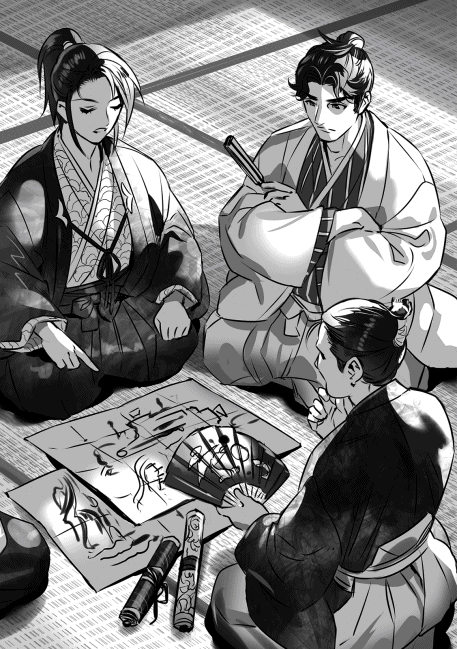
「何度か二人と話したようですが......」
重蔵が首を横に振った。効果は無かったという事か。六角家の当主と当主の弟、立場はまるで違う。次郎左衛門尉にとってこの機会を逃せば精々数万石の分家が良い所だ。率いる兵も千人程度だろう。当主になれば二万を越える兵を動かし御屋形様と尊称される。眼の色が変わるのも無理は無い......。
「蒲生と三雲は？」
「右衛門督と距離を置こうとしておりますな。しかし右衛門督が離さぬようです」
「蒲生と三雲の気持ちが分かるぞ。朽木も将軍家に付きまとわれているからな」
皆が失笑した。俺は本気で言っているぞ。義輝は未だにしつこく文を送ってくる。この世界でストーカーに遭うとは思わなかった。
「後藤、進藤、平井、目賀田は如何か？」
「寄せ付けぬと聞いております。特に後藤但馬守への敵意は激しいものが有ると聞きまする。不破郡撤退の一件で酷く恨んでいるとか。国人衆達はそれを見ておりまする。右衛門督からは心が離れる一方だとか」
孤立無援だな。
「重蔵、右衛門督は追われる事を怖れているという事か」
「はい」
「ではどうにもならんな。六角に内紛が起きるだろう」
皆が頷いた。意見の食い違いなら修復の余地は有る。だが、追われるとなればどうにもならん。円満な家督交代ではないのだ。右衛門督が追われるとなれば、次郎左衛門尉に殺される可能性が高い。右衛門督も次郎左衛門尉も一線を越えてしまった。もう戻れない。後はどちらが先手を打つか、どこまで混乱が広がるかだろう。パチリとまた扇子の音がした。今度は上野之助だ。
「如何なされます？」
十兵衛が問い掛けてきた。色の白い優男だ。年は三十半ば。扇子を持つ手も白い。こいつが本能寺で謀反？ どうも信じられない。
「分からん、混乱が何処まで広がるか、それ次第だろうな。だがここで六角家が躓くのは痛い。朽木が北へ進む間、三好の抑えにと思っていたのだが......」
六角がコケれば三好が近江に侵攻してくる可能性が有る。放置は出来ない。
「殿は六角左京大夫の義理の息子。介入する事も出来ましょう。甲斐の武田と駿河の今川の例も有ります。争いが起きないようにする事も出来まする」
「......右衛門督と次郎左衛門尉、どちらかを預かれというのか、上野之助。しかしなあ、どちらを預かっても厄介事を抱え込むようなものだろう。御家騒動を引き起こそうとする奴らだぞ。気が進まんな」
四人が顔を顰めて頷いた。この時代、御家騒動くらい力をロスするものは無い。山口新太郎の父親が織田から今川へ乗り換えたのもそれが原因だ。しかし六角へのカードにはなるか。立場も今より上になるのは間違いない。来るとすれば右衛門督だろう。......あれを預かる？ 凄い憂鬱だが小夜は安心するだろう。預かった方が良いか......。そして越前に専念する......。
「重蔵殿、朝倉の様子は如何かな？」
半兵衛っておっとりしてるよな。二十歳前後の上品な御坊ちゃんだ。これじゃ荒くれ者とは合わんわ。上野之助は生真面目な秀才君だ。年は半兵衛と余り変わらない。
「大野郡司朝倉式部大輔が頻りに敦賀郡司が朽木に通じていると朝倉左衛門督に訴えております。敦賀郡司朝倉孫九郎はそれを否定しておりますが、式部大輔は納得せずに尚も強硬に訴えているとか。左衛門督は式部大輔を抑えきれずにおります」
煽ったのは俺だけど、こうも簡単に引っかかるかな。ちょっと不安だ。
「如何見る、十兵衛」
「はっ。朝倉式部大輔、陰湿にして傲慢、敦賀郡司を酷く嫌っており、若年の朝倉左衛門督を侮っておりまする。このままでは済みますまい」
「朝倉左衛門督、先日は曲水の宴を行っていなかったか？」
「危機感の無いお方なれば」
「危機感が無さすぎるな」
イケメン光秀が小さく笑った。こいつ、馬鹿が嫌いで我慢出来ないタイプだな。謀反もそれが原因かもしれん。信長に愛想が尽きて謀反、有りそうだな。俺も馬鹿は嫌いだが我慢はするぞ。
「やれやれだな。一度に二つは抱えきれん。ここは上野之助の策を採るべきかな」
見回すと四人が頷いた。
「良かろう。六角、いや平井の舅殿に文を書く。右衛門督、次郎左衛門尉、どちらでもお望みの方をお預かりするとな。なんなら両方でも良いと書くか。朽木は気前が良いと喜ぶだろう」
皆が笑った、俺も笑った。虚ろな笑いだった。
永禄六年（一五六三年） 四月上旬 近江蒲生郡 観音寺城 平井定武
「加賀、火急の要件とは何だ？ 人払いまで望むとは余程の事だが」
御顔の色が良くない。眼の下には隈が有った。苦しんでおられるのが一目で分かった。
「御屋形様」
「御屋形様は止せ、加賀。今の儂は隠居、当主は右衛門督だ」
「申し訳ありませぬ。御隠居様、朽木より文を預かっております」
御隠居様は訝しげな表情をされたが、私が懐から文を取り出し差し出すとそれを受け取って読み始めた。それ程長いものではない、読み終わると大きく息を吐いた。
「朽木にて右衛門督、次郎左衛門尉のどちらかを預かると申すか......」
呟くような口調だ、納得されていないのか。
「畏れながら御隠居様。右衛門督様、次郎左衛門尉様が一つ所に居られましては、お互いに相手を意識し興奮するばかりでございます。周りもそれを煽りましょう。お二人の内どちらかを朽木にて預かって頂くというのは悪い案とは思えませぬ」
「そうだな。確かにそれなれば今の混乱を収められるやもしれぬ......」
口調が弱い。
「御気が進みませぬか？」
〝いや、そうではない〟と言って御隠居様が首を横に振られた。
「では？」
「他に方法は有るまいな。右衛門督、次郎左衛門尉、どちらの息子を朽木に預けるかと思ったのよ」
「......」
「二度と戻す事は出来まい。今生の別れになる」
沈痛な声だった。
確かに戻す事は出来ない。そんな事をすればまた六角家は揺らぎかねない。それに戻そうとすれば六角家当主に殺されるだろう。朽木の外に出るのも許されない。三好、一色にでも利用されたらとんでもない事に成るのだ。残りの人生を囚人として朽木で過ごす事になる。右衛門督様、次郎左衛門尉様、どちらも未だお若い。人生を諦め、世捨て人として生きる事は出来まい。残りの人生は絶望と屈辱に塗られたものになる。
「加賀よ、どちらを預けるべきだと思うか？」
朽木へ送るのは右衛門督様以外には無い。それを敢えて問うのは右衛門督様、次郎左衛門尉様のどちらを預けるかを十分に検討したという事の証人になれという事か。右衛門督様と親しい者が異議を唱えた時、それを私が説得する事に成る。
「......難しゅうございます。御嫡男は右衛門督様、本来なら次郎左衛門尉様を御預けすべきかと思いますが......」
「......遠慮は要らぬ、続けよ」
これで次郎左衛門尉様を預ける事も検討したと言える。御隠居様が微かに頷かれた。
「国人衆の気持ちを考えますと、次郎左衛門尉様を朽木に預けましては混乱は収まらぬのではないかと懸念致します。御賢察を願わしゅうございまする」
「......右衛門督か」
呟く様な声だった。だがこれで決断は御隠居様が下した事に成る。思わず目を伏せた、御隠居様の御顔を見る事が出来ぬ。
「こんな事に成るとは思わなかった」
「......」
「右衛門督が弥五郎を憎み、嫉んでいる事は分かっていた。美濃攻めを言い出した事もそれが隠れた理由だという事もな」
「......ならば、何故美濃攻めを御許しになられました」
決してきつい声を出したつもりは無かった。だが御隠居様が弱々しい笑みを浮かべられた。
美濃攻めは右衛門督様の御発案でなされた。浅井との戦いに勝った事で六角家は新たに坂田郡を得た。だがその事で美濃の一色家と領地が接する事に成った。新たに得た坂田郡を安定させるためには美濃の不破郡を獲り東の国境を固める事が必要。そのための美濃攻めという事であった。
だが家中には美濃攻めに反対の声も有った。一色家とは特に関係が悪いわけでは無い。織田と戦争状態にある一色が六角と事を構える可能性は小さい。敢えてこちらから事を構える必要は無い。......皆分かっていた。右衛門督様の真意が弥五郎殿に対する嫉妬からだという事は。そんな事で戦を起こす事は危険だと反対した。自分も反対した。だが美濃攻めは実施された。
「上手く行かぬと思ったのだ」
「何と仰せられます。上手く行かぬと？」
御屋形様、いや御隠居様が頷かれた。
「弥五郎の勝ち方が鮮やか過ぎた。その所為で右衛門督は戦を甘く見るようになっていた。己にも出来るとな。危うい事だと思った。だから敢えて美濃攻めを許したのよ」
「......」
御隠居様が沈痛な表情をしている。
「上手く行かぬ、失敗する。だがそれで良いのじゃ。そこから戦とは容易いものでは無いと理解してくれれば右衛門督のためになる、そう思ったのだ。一色は織田と事を構えている。六角と一色の戦は本格的なものにはならぬという読みも有った。ならば和を講じるのも難しくは無かろう。そこで改めて六角、一色の国境を定めれば良い。それなれば出兵の意味も有る」
「そのような御考えを......」
御隠居様が頷かれた。確かに和を結ぶ事は難しくは無かったであろう。多少は右衛門督様の面目は潰れたやもしれぬが、教訓を得たと思えば許容は出来る。御隠居様の仰られる通り、意味は有る。
「まさか一色が後詰せぬとは思わなかった。予想外の事であったわ。表向きは右衛門督を褒めたが厄介な事に成ると思った。右衛門督は増長するであろうし一色がこのままで済ますとも思えぬ。暗澹とした。そして思った通り、不破郡を巡って戦が続いた。国人衆に負担が掛かり不満の声が上がった。最悪の事態よ......」
「......何故もっと早くに和を結ばれませぬ。但馬守殿が撤退を口にされた時に決断されていれば......」
また御隠居様が弱々しい笑みを浮かべられた。
「右衛門督の面目をどうやって保つか、それが定まらなかった。ようやく儂が隠居して跡目をあれに譲れば良いと気付いたが、些か遅かったわ。一色にしてやられた」
確かに遅かった。一色は忍びを使って六角領内の国人衆に右衛門督様への反感を煽らせた。そして次郎左衛門尉様の心も煽った。結果的に御隠居様の隠居は何の意味も無いものになってしまった。むしろ当主のままの方が良かった。六角家は何とか安定を保てただろう。
「......朽木には何と返事を......」
「今暫し待て。儂が右衛門督に当主の座を降りてくれと話す」
「......御隠居様」
「時が無いのは分かっている。だが儂の口から話すのがせめてもの親としての務め、情というものであろう。加賀よ、分かってくれ」
「......はっ」
これ以上の長居は無用であろう。下がろうとした時であった。〝加賀〟と私を呼び止める声がした。
「六角も将来が危ういの」
「何を仰せられます」
御隠居様が寂しそうな表情で首を横に振られた。
「右衛門督も次郎左衛門尉もその器量、弥五郎には到底及ばぬ。せめて弥五郎の半分程も器量が有ればの、斯様な事にはならなかったであろうに......。寂しい事よ」
何かを言わねばならぬ、だが何を言えば良いのか、口が動かぬ。
「これからは西へ向かう事よりも近江を守る事に専念せねばならぬ時が来る。三好には到底及ばぬ」
「朽木と組んで三好に対抗する事は出来ませぬか？」
また御隠居様が首を横に振られた。
「難しかろう。朽木が京に出るには滋賀郡を通らねばならぬ。だが、叡山がそれを許すとも思えぬ。許せば三好を敵に回す事になろう。やはり朽木は朝倉への押さえであろうな、或いは三好が若狭へ出ようとした時にそれを阻むか。......惜しい事だ」
「......」
確かに六角家の将来は明るくない。次郎左衛門尉様の御器量の程は、はっきりとは分からぬ。だが一色の忍びに煽られて野心を露わにするようでは到底期待は出来ぬだろう。これまで六角家は二代に亘って名君を得た。安心して主君に仕える事が出来たが、どうやらそのような贅沢は許されぬ時が来たらしい。難しくなって来たようだ......。
永禄六年（一五六三年） 四月上旬 近江蒲生郡 平井丸 平井高明
「お帰りなさいませ」
「うむ」
戻って来た父は憂鬱そうな表情をしていた。
「御疲れで有りましょう。後程御部屋に焙じ茶を届けまする」
「うむ、そうしてくれるか」
表情は綻ばない。やれやれだ。
小半刻程の間をおいて父の部屋に向かった。父は端然と座って沈思している。お茶を置くと正対して座った。父が茶碗に手を伸ばした。一口茶を飲む。だが表情は変わらなかった。
「父上、御隠居様は何と？」
「......」
父はチラとこちらを見ただけで口を開かない。姿勢を正し目を伏せ気味に沈思している。
「朽木へは何と返事を致します？ 弥五郎殿もこちらの答えを待っておりましょう」
「御隠居様に文を御見せした。それだけでよい」
「返事を頂いておらぬのですか？」
「暫し待て、御隠居様が右衛門督様を説得する」
「悠長な、父上、説得などと言っている場合では有りますまい。御二方とも脇差に手をかける程に険悪なのですぞ。今直ぐ右衛門督様を捕えるべきです。このままでは取り返しのつかない事に成ります」
「......」
「父上！」
父が大きく息を吐いた。
「分かっている。私も御隠居様もな」
「ならば」
「親としての務め、情であろうと仰られた。子を持つ親としてはその気持ちは良く分かる。無碍には出来ぬ」
「......」
父が沈んでいたのはその所為か。理ではない、情を重んじた事を思い悩んでおいでであったか。
「弥太郎、親というのは苦労が絶えぬの。子が出来れば無事に育つかと心配し、育てばその器量に悩まねばならぬ。娘ならば嫁ぎ先、嫁いでからは子が何時出来るかと気を揉む事に成る。因果な事よ」
親が子を思う気持ちか。六角家の安定を願えば何かを言わねばならぬ、だが思いつかぬ。何を言えば良いのか......。
「いずれ小夜には子が出来ましょう。幸い夫婦仲は円満だとか、心配は要りますまい」
「そうよの」
父が頷いた。結局六角家には何の関わりも無い事を言っていた。気休めにもなるまい。もっとも嘘を言ったつもりは無い。二人ともまだ若いのだ。
「六角家も難しくなるの」
「......」
「此度は右衛門督様を朽木家に預ければ凌げるかもしれぬ。しかし、これ以後は六角家は朽木に余程に心配りをせねばならぬ」
「そうですな」
「その辺りの機微を次郎左衛門尉様が御理解下さるかどうか、どうにも心許ない事だ」
「......」
寂しそうな口調だ。朽木家に右衛門督様を預かってもらう。つまり次の六角家当主は次郎左衛門尉様。だが右衛門督様は朽木で生きておられる。次郎左衛門尉様に失政が有れば当然だが、右衛門督様を戻せという声が上がろう。次郎左衛門尉様は弥五郎殿に右衛門督様を決して外に出さぬようにと頼まざるを得ぬ。つまり弥五郎殿を怒らせる事は出来ぬのだ。格下と心の中で思ってもそれを表に出す事は出来ぬ。果たして、その我慢が次郎左衛門尉様に出来るのだろうか......。右衛門督様は我慢の出来ぬお方であったが......。
「平井の家は朽木家と縁を結んだ。我らの役目は六角家と朽木家の関係を円滑ならしめる事。六角家の力が落ちれば、朽木家の力が上がれば、難しい事に成る」
父は六角家の力が落ちると考えている。そして朽木家の力が上昇するとも。なるほど、六角家と朽木家の関係は難しくなるだろう。それにつれて平井家の立場も難しくなる。だから小夜に子が出来ぬ事を案じたか。
「朽木家は朝倉、六角家は三好と向き合わなければなりませぬ。どちらも相手は大きい。楽に戦える相手では有りませぬ。そこを理解していれば協力は出来る筈。我らの役目はそれを訴え続ける事でしょう」
「そうよな」
父が頷いた。だが声は弱い。分からぬでもない。右衛門督様は西に三好という敵が有りながら東に向かって自滅した。次郎左衛門尉様がその辺りを理解してくれれば良いのだが......。
永禄六年（一五六三年） 四月下旬 近江蒲生郡 平井丸 平井定武
ドンドンドンドンと足音が近付いて来た。かなり急いでいる、余程の事態が起きたらしい。
「父上」
弥太郎が部屋に入って来た。息が荒い、普段冷静な息子が興奮している。余程の大事だ。
「右衛門督様が御隠居様、次郎左衛門尉様、後藤但馬守殿を......」
「弑したか」
思ったよりも平静な声が出た。弥太郎が頷いた。訝しんでいる。〝立っていないで座れ〟と言うと訝しみながら腰を下ろした。
「父上、驚いていないようですが」
「そうだな、驚いておらぬ。やはりこうなったかという思いが有る」
「......」
「弥太郎、あの右衛門督様が大人しく隠居などすると思うか？」
先日、右衛門督様は自ら隠居すると決断された。到底信じられぬ。だから朽木には右衛門督様が隠居する事になったとは文を送らなかった。
「......その事、御隠居様には」
「申し上げた、だが御隠居様は右衛門督様を信じると申された。或いは信じたかったのかもしれぬな」
親として子を信じたいと思うのは当然かもしれぬ。自発的な隠居なら領内に置く事が出来る。会う事も出来よう。だが朽木に送ってしまえば、もう会う事は出来ぬのだ。弥太郎が溜息を吐いた。
「父上、これから如何なると？」
「混乱するだろうな。如何なるかは分からぬ。だが混乱が収まっても六角家は元には戻るまい。嘗ての力は取り戻せぬだろう」
「......右衛門督様は」
「分からぬ、だが当主の地位には留まれまい。殺されるか、追放されるか。......六角家は外から当主を迎える事に成ろう」
弥太郎が頷いた。
外からの当主だ、当然だが力は弱い。六角家を掌握するには時間がかかるだろう。御隠居様の申された通りになった。六角家は外に出るどころか自分を守る事で精一杯になるだろう。
「如何なされました、父上」
「何がだ？」
「御笑いになられましたが......」
「......なんでもない」
笑ったか、皮肉だと思ったのだ。御隠居様は右衛門督様、次郎左衛門尉様では六角家の勢威は下り坂になるだろうと予測された。だが、その二人が今回の一件で退場する。それでも六角家の頽勢は止まらない。むしろ加速するだろう。そして近江では朽木の力が強くなる。平井にとっては吉と出るか、凶と出るか......。
「平井城に戻るぞ」
「戻るのでございますか？」
弥太郎が驚いている。
「ここに残るという事は右衛門督を当主として認めるという事だ。その方は今回の一件を容認し右衛門督を当主として仰ぐのか？」
弥太郎が首を激しく横に振った。
「いえ、認められませぬ。右衛門督は当主の器では有りませぬ」
「ならば準備を致せ、我らの他にも領地に戻る者が出よう。遅れればその者達に心底を疑われる、急げ」
「はっ」
弥太郎が一礼して下がった。
右衛門督か......。様は付けぬ、もう主君では無い。
永禄六年（一五六三年） 四月下旬 近江伊香郡塩津浜 塩津浜城 朽木基綱
「殿は御冗談ばかり」
「冗談ではないぞ、小夜。本当の事だ。鎧を着けると動けんのでな、それで平服で戦ったのだ」
「本当ですの」
「ああ、その方が負けた時は逃げ易かろう」
「まあ」
小夜がコロコロと笑った。
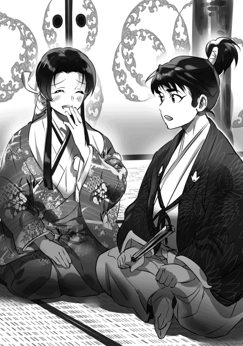
「左京大夫様は朽木はやる気が無いと思ったかもしれんな」
「またそのような事を」
「本当だ。皆が白い目で俺を見ていた。配置も後陣だった。味方は大軍、ゆっくり見物でもするかと思ったほどだ」
「まあ」
また小夜がコロコロと笑った。
最近俺と小夜はとっても仲良しだ。小夜は六角と手切れになっても朽木に残ると言ってくれた。可愛いよな、大事にしなければと思う。戻るとなればこれが二度目だ。出ていく事は無いと思ったけど、ここに居ると言ってくれた時は素直に嬉しかった。
平井の舅殿へ出した文、右衛門督か次郎左衛門尉のどちらかを朽木が預かるという文に対して返事が来た。舅殿は承禎入道に文を見せた様だ。見せたという事は舅殿も賛成なのだろう。というより、これしか内紛を避ける方法は無いと考えたのだと思う。
入道からの返事は未だ来ないが反対はしていないようだ。或いは舅殿が説得したか。返事が無いのは未だ踏ん切りがつかない、そんなところだと思う。承禎入道も父親だからな。息子を追放するのは辛いのだろう。だがなあ、あまり時間は無いぞ。
右衛門督も次郎左衛門尉も頭に血が上った状況だ。そしてその周辺に居る人間にとっては浮沈の瀬戸際でもある。頂点が没落すればその下も没落するのだ。それを避けようとして暴発しかねない。そうなったらとんでもない事になる。その辺りを入道は理解しているのか......。
「野良田の戦いは三年前の事だから、俺はようやく数えで一二歳だ。おまけに夏場の戦ゆえ暑かった。その事だけは良く覚えている。皆は鎧など着けて大変だったろう。俺など平服でも暑かったくらいだ。とてもではないが鎧など着けられんな」
「そうでした、夏だったのですね、あの戦いは」
小夜が大きく頷いた。
小夜は戦に興味が有るらしい。頻りに俺に戦の事を聞くのだが、俺が話せる事と言えば暑かった事とか鎧が重かった事、雨が降ってずぶ濡れになりながら馬で走った事とかで、どうみても面白い話じゃない。だが小夜は目を輝かせコロコロ笑いながら聞いている。自分の想像とは違う戦の様相を聞く事が出来て嬉しいらしい。
「殿」
戸を開けて顔を出したのは主税だった。済まなさそうな表情をしている。夫婦団欒の所を邪魔したと思っているのだろう。
「如何した」
「重蔵殿が」
「分かった」
何か起きたな。小夜が不安そうな表情をしていた。
「小夜、話はまた今度だ」
「はい」
小夜が立ち上がり部屋を出ると、それと入れ替わりに重蔵が入って来た。〝申し訳ありませぬ〟と言うから気にするなと答えた。夫婦団欒は何時でも出来る。だが重要な報告は一分一秒を争う。
「何が有った？ 観音寺か、越前か」
「観音寺にございます」
重蔵の顔が険しい。
「それで？」
「右衛門督が」
「......」
「左京大夫、次郎左衛門尉、後藤但馬守を」
「殺したか」
「はい」
思ったよりも落ち着いている自分が居た。何処かでこうなる事を予測していたのかもしれない。
「他には？」
「分かりませぬ」
重蔵が首を振った。
「引き続き調べてくれ。それと三好、朝倉の動きから目を離すな」
「はっ」
「重蔵、越前攻めは見合わせかな？」
重蔵が何も言わずに頭を下げて部屋を出て行った。やはり無理か......。
右衛門督義治が父親と弟、後藤を殺したか。史実よりも酷いな。史実は家臣の排除だったが、こっちは親兄弟も殺している。それだけ追いつめられていたんだろうが......。美濃の龍興に上手くしてやられたな。史実でも似たような事が起きたのかもしれない。多分美濃ではないだろう。おそらくは浅井の手の者が動いて観音寺崩れが起きた、或いは三好が動いた......。考えても仕方が無いな。
近江大乱の発生か。六角が生き残れるか、朽木が生き残れるか......。先が読めなくなった。取り敢えず軍を動かせる状態にはしておこう。朝倉は動かないだろうが、三好は動く可能性が有る。五郎衛門を呼ぶか。
「主税」
「はっ」
戸が開いて主税が顔を出した。
「五郎衛門を呼べ」
「はっ」
永禄六年（一五六三年） 七月中旬 近江伊香郡塩津浜 塩津浜城 朽木基綱
「随分と変わったものよ」
「六角という重しが取れたからな。皆好き放題に動いている」
御爺と俺の言葉に評定衆、奉行衆が頷いた。
「動けぬのは朽木だけか」
「そうだ、御爺。今動いても碌な事にはなるまい」
また皆が頷いた。
六角義治の起こした騒動は、起きてから約二カ月近くになるというのに未だ収束する目処が付かない。おそらく六角はこのまま消えるのではないか、そんな事を思わせる程の混乱ぶりだ。朽木はその混乱の中で動きが取れずにいる。今更だが六角の大きさが身に染みるわ。六角の存在が畿内のバランスを維持していた。
舅殿からの文によると承禎入道が義治に話を切り出す前に義治から隠居して観音寺城を出たいと申し出が有ったのだという。自分では国人衆が付いてこないと言ったらしい。後々の事も有る、混乱が生じぬように正式に隠居し次郎左衛門尉義定に跡目を譲ってから城を出たい。付いては隠居所を用意して貰いたいと言ったそうだ。
承禎入道はホッとしたようだ。無理に当主の座から追う事無く円満解決だ。義治の手を取って〝良く決断してくれた〟と涙を流したらしい。そして隠居の発表と義定の当主就任の日取りを決めた。多分、観音寺城の誰もがホッとしたと思う。これで内紛を避ける事が出来ると。
その気の緩みを義治は突いた。最初からそれが狙いだったのだろう。多分、俺の文の内容が義治に漏れたのだ。義治は家臣を遣わして承禎入道、義定を殺した。後藤は呼び出して自ら殺したようだ。余程に憎かったのだな。義治は邪魔者を消したつもりだったと思う。これで俺の当主の座を脅かす者はいない、そう思ったに違いない。だが城中は大混乱になった。
曲輪を持っていた重臣達は舅殿を含めその殆どが自領へ退去した。殺された後藤の息子、壱岐守は自領に戻ると直ぐに義治討伐を宣言。進藤、目賀田、舅殿の他多くの国人領主が味方に付いた。観音寺城は周囲の曲輪が機能して初めて要害として役に立つ。裸になった事に気付いた義治は慌てて蒲生の日野城に逃げ込む事になった。頼られた蒲生も困惑しただろうな。その所為で蒲生、三雲は周囲からは義治の一味と見られている。ザマーミロだ。
これまでは小競り合い程度だった。事件が起きたのが農繁期だった事も有って大きな戦いにはならなかった。だがこれからは違う。反義治派は兵を集めつつある。そして義治、蒲生、三雲は何とか騒動を治めようと必死だ。俺の所にも文を寄越した。内容は朽木同様式目を作って恣意による政を執らない事を約束する。その条件で纏めてほしい。調停してくれれば坂田郡を譲る。そんなところだ。
譲るも何も坂田郡の国人達は騒動が起きて義治が観音寺城から逃げ出した時点で、朽木に集団で服属してきた。今更譲られても事実の追認にしか過ぎない。しかも到底纏まるとは思えないからな。義治が当主では纏まらないと返事をしておいた。というよりそんな事に関わっていられない状況になっている。朽木を取り巻く環境は激変した。
「越前攻めは延期か？」
「いや、敦賀を取ろうと思う」
俺が御爺に答えると皆が俺を見た。
「殿は先程動かぬと仰られましたが？」
五郎衛門が小首を傾げている。
「今は動かぬと言ったのだ、五郎衛門。おそらく越前内部で混乱が生じるか加賀の一向一揆が越前に攻め込む。それに合わせて敦賀を攻める。新当主朝倉式部大輔憲景の基盤は弱い。攻め時だ」
皆が頷いた。
六角の混乱は様々な波紋を周囲に起こした。先ず越前で騒乱が起きた。大野郡司、朝倉式部大輔景鏡が敦賀郡司家を滅ぼした。当主の朝倉孫九郎景垙を一乗谷で不意打ちで殺し、間を置かずして敦賀郡司家を攻め滅ぼした。俺が観音寺城での惨劇を聞いてから半月程の事だ。あんまり手際が良いので驚いたわ、多分景鏡は六角家に不穏な空気が有ると知ってタイミングを計っていたのだと思う。六角が混乱すると同時に動いた。そして当主の朝倉左衛門督義景が景鏡を非難すると即座に義景を殺して当主の座を奪った。いや、迷いが無い。五月の中旬に事が始まって全てが一月以内で終わっていた。これぞ下剋上、そんな感じだ。
義景を殺した後、景鏡は名を憲景と改め越前領内の国人領主に檄文を送っている。それによれば、越前は北に加賀一向一揆、南に朽木、六角と強敵を抱えている。敦賀郡司朝倉孫九郎景垙は朽木と通じ邪なる野心を抱いたにも拘らず、義景はこれを処断出来ず文弱に溺れ国を危うくした。朝倉家の当主たる資格無し。已むを得ず自分が両者を排除し越前を治める事にした。皆心を一つにして自分を助けて欲しい。そんな文章だった。なんか変な気持ちだ。朽木は朝倉の半分程の小さな大名だ。そんなに警戒が必要な存在かね。ちょっと大袈裟じゃないかな。凄い不本意だ。
「しかし三好が如何出ますか。いざとなれば若狭からも兵を出しますぞ」
雨森弥兵衛が不安そうな声を出した。誰もそれを咎めない。三好は間違いなくこの戦国のスーパーパワーだ。
「丹波で反三好の動きが活発になっている。波多野、赤井、荻野がな。内藤宗勝も何時までも若狭に拘る事は出来まい。それに敦賀攻めに使う兵力は三千、朽木本家の兵を使う。時はかけぬ」
また皆が頷いた。
六角、朝倉の混乱により三好も動いた。六月になると丹波の内藤宗勝が若狭に攻め込んだ。厭らしい事に京から近江を狙うそぶりを見せての行動だ。俺は何も出来ずに京の動きに備えるしかなかった。若狭の武田は抵抗らしい抵抗をせずに越前に逃げている。、半月もかからずに若狭は三好の物になった。一方で牽制しつつ一方で侵略、三好は余裕が有る。力の差を見せつけられた。おかげでこっちは無力感に苛まれた。本当に落ち込んだ。俺のやった事は殆どが裏目に出たんだからな。今畜生、と言いたい気分だ。
永禄六年（一五六三年） 七月中旬 近江伊香郡塩津浜 塩津浜城 朽木惟綱
評定の後、弥五郎に誘われ兄、私の三人でお茶を飲んだ。
「しかしあの六角が、ああもあっけなく崩れるとは思いませなんだ」
「うむ」
私の言葉に兄と弥五郎が頷いた。兄は複雑そうな表情をしている。私よりも兄の方がその想いは複雑なのかもしれない。長年六角の圧力を感じてきたのだ、想うところは有るだろう。
「南近江は獲らんのか？」
兄の問いに弥五郎が首を横に振った。
「攻め込めばあの連中、反朽木で右衛門督の下に纏まりかねん」
「まさか」
また弥五郎が首を横に振った。苦い表情をしている。
「そのまさかだ、御爺。六角の混乱直後、三好が近江を窺うそぶりを見せた。俺は兵を清水山に集結させたが誰も朽木と共に戦おうとはしなかった。舅殿、鯰江からも文は来なかった。反朽木感情とは言わんが、何処かで朽木を格下に見ていると思う」
「......」
「まあ元は朽木谷八千石の国人領主だ、坂田郡を入れても三十万石には届かん。馬鹿馬鹿しくて下には付けんのだろう、無理も無いわ」
最後は苦笑になった。
「元々南の六角と北の京極は仲が悪かった。両者に属した国人領主にもその影響が出ている。朽木は将軍家に近かったから、その辺りの事情に疎かったようだ。さっぱり気付かなんだわ」
表情が渋い。思うように進まない事にうんざりしているようだ。
「良いのか、三好が近江を狙いかねんが」
「構わんぞ、御爺。三好に従うか、六角の下に纏まるか、俺に付くか、好きにさせるさ」
突き放した、というより突き放さざるを得ないという事か。
「三好に付く事を考えているのか？」
兄が心配そうに尋ねたが弥五郎は首を横に振った。
「いや、それは無い。三好には付かぬ」
「しかし攻めて来るかもしれんぞ」
「如何かな、朽木は手強いぞ、御爺」
弥五郎がニヤリと笑った。
「御爺、朽木よりも攻め易いところが有るだろう。三好は近江よりもその周辺を狙うのではないかな。六角が持っていた大和、伊賀への影響力などを奪いに来るのではないかと思う」
「松永ですな。大和の北部に食指を動かしていると聞きます」
「うむ。六角も南近江だけならそれほど怖くは無い。それに右衛門督がこの混乱を収拾したとしても統制力は落ちる。無理はしなくても六角の力を削げる。松永の手も北伊勢には届かんだろうが、そっちは織田が動くだろう。織田上総介信長、大分働き者のようだ」
「殿は随分と評価されているようですが、美濃を獲れますか？」
私が問うと首を横に振った。
「分からんな、大叔父上。だが織田には勢いが有るし三河と同盟を結んだ事で後顧の憂いなく攻められる体制を作った。それに美濃も一つに纏まっているわけではない。付け込む隙は有るだろう。どうなるか......」
「同盟を打診してくるかな、弥五郎」
「可能性は有るぞ、御爺。こちらは朝倉を抱えている。美濃攻めには殆ど協力出来ん。その辺りを織田が如何判断するか......」
「打診してきたら？」
「結ぶ事に異存は無い。一色、六角、朝倉、いずれも組む事は出来ぬ。組むなら織田だ」
きっぱりとした口調だった。兄が驚いている。織田上総介、美濃を獲るかもしれない。
「公方様から文が届いた。俺だけではないぞ、叔父御達の所にもだ。御爺の所にも来たであろう」
「うむ」
弥五郎も兄も渋い表情をしている。
「何と記してあったのです？」
「一言で言えば助けろという事だ。六角が崩れて三好を牽制する勢力が無くなった。そして若狭武田があっという間に追われた。今更ながら身の危険を感じたらしい」
「儂の所に来た文も同様だ」
「残念だがそんな余裕は無い。公方様には武家の棟梁らしく毅然としろと返事をしておいた」
「それは......」
「少しは静かになるだろう。呼べば飛んで来ると思われるのは迷惑だ」
不愉快そうな表情だ。話を変えた方が良いだろう。
「坂田郡の今浜に代官所を置いたと聞きましたが」
「あそこは北国街道、東山道、淡海乃海を制する大事な所だ。朽木にとっては重要な東の拠点になる。今は代官所だが、いずれは城を築きたい。そう考えている」
「では織田との同盟が結ばれれば？」
「美濃攻めが出来るかどうかは分からんが、美濃攻めの拠点は今浜になると思う」
なるほど、と思った。兄が以前言っていた。弥五郎が好む城は移動の便が良く湖に近い事。そして敵に近い城......。今浜の城か。
「敦賀攻めですが上手くいきましょうか？」
「上手くいかせねばならん。朝倉式部大輔憲景は強引に国を奪った。重蔵の調べでは内部で反発が激しいらしい。加賀の一向一揆が攻め寄せた場合、それに通じる動きも出るかもしれん。いや、或いは一向一揆を引き入れるという事も有り得る。式部大輔が防ぎきれるかどうか......」
弥五郎が首を横に振った。
「朝倉は駄目かもしれん。その場合、敦賀郡を境に朽木と一向一揆が向き合う形になるだろう」
兄が顔を顰めた。一向一揆の厄介さは皆が理解している。
「はっきり言って悪夢だが、そこで防がねば連中が近江に入りかねん。そうなれば悪夢では済まなくなる」
「と言うと？」
弥五郎がじっとこちらを見た。
「......近江には堅田が有る」
「なるほど、有りましたな」
私が答えると兄も頷いている。
「あそこは堅田門徒と言われるほど一向門徒の勢いが強い。一つ間違うと朽木は挟撃されかねんし湖上の活動にも影響が出る。林与次左衛門も堅田の水軍を相手にするのは分が悪い。海を得たいという事だけでなく近江を守るためにも、どうしても敦賀は必要だ。獲らねばならん」
弥五郎が大きく息を吐いた。
永禄六年（一五六三年） 九月上旬 近江伊香郡塩津浜 塩津浜城 朽木基綱
「久しいな、与次左衛門。元気そうで何よりだ」
「はっ、御久しゅうございまする。殿には御機嫌麗しく」
「止せ、与次左衛門。今の朽木を見ろ、周りに良い様にやられている。御機嫌麗しくなど到底なれんわ」
「そのような事は有りませぬ。北近江四郡を押さえ日の出の勢いの朽木にござる。六角があのざまでは近江の旗頭は殿にござりましょう」
俺が笑い出すと林与次左衛門員清が身を乗り出して力説した。与次左衛門によれば俺は不世出の英雄らしい。与次左衛門は高島越中配下の水軍の将だったが、朽木谷の戦い以降は俺に仕えている。朽木家が勢力を拡大するにつれて与次左衛門の水軍も大きくなっていった。今では朽木家の重要な戦力と言って良い。そして、与次左衛門にとって俺は高島越中とは比べ物にならない良い主君のようだ。何と言ってもあいつ、ケチだったからな。
「分かった、分かった。だが南の連中はそうは思っておらんぞ」
「......」
「まあ良い、今浜は如何じゃ」
問い掛けると与次左衛門が嬉しそうに笑った。
「良き所にございまする。これから大いに繁栄いたしましょう」
やはり重要拠点だな、城が欲しい。光秀に作らせるか。資材は高島郡にある廃城から持って来させれば費用は安く済む。要検討だな。
「坂田郡が朽木領になったが船は足りているか？」
「少々足りませぬ」
「分かった。金は出す、船を揃えろ」
「はっ。有難うございまする」
「与次左衛門、堅田と戦って勝てるか？」
与次左衛門が難しそうな顔をした。やはり厳しいか。
「堅田と事を構えると御考えで？」
「好んで構えるつもりはない。だが越前で加賀の一向門徒と戦う事になるやもしれん。その時堅田が如何出るか......」
「......」
堅田だけではない、朽木領内にも本願寺派の寺は存在する。一番身近では塩津浜城の直ぐ傍に浄光寺が有る。浄光寺は今の所妙な動きはしていない。
「本願寺が加賀に下間筑後守頼照、七里三河守頼周、杉浦壱岐守玄任を送ったとも聞く。越前攻めの為だと俺は見ている。となれば加賀一向門徒の独断ではない。石山本願寺として戦うという事だ。朽木と越前でぶつかれば堅田に石山から命令が出る事は有り得よう」
与次左衛門が頷いた。
「しかし殿、堅田の水軍衆、殿原衆は門徒というわけでは有りませぬぞ。あの者共は本願寺よりも臨済宗を信じておりまする」
「それは俺も分かっている。だが戦わずに済むか？」
「さて、そこまでは分かりませぬ」
与次左衛門が首を振った。出来れば戦いたくないのだろう。どちらかと言えば分が悪い戦になる。そう思っているようだ。それほどに堅田の水軍は強力だ。
堅田は自治の町だ。堅田には大きく分けて二つの勢力が有る。地侍達を主体とする殿原衆と商工業者、周辺農民を主体とする全人衆だ。俺が問題視している水軍を率いるのは殿原衆なのだが、堅田は今、全人衆の支配下に有ると言って良い。そしてこの全人衆の大部分を占めるのが一向門徒だった。つまり堅田は一向門徒の勢力下に有る。
「お会いなされては如何？ 猪飼甚介、居初又次郎、馬場孫次郎」
三人とも堅田水軍の指揮官として有名な男達だ。
「会えるのか？」
「殿が御望みならば某が手筈を整えまする。向こうも殿に関心が有る筈。むしろ声が掛からぬのでやきもきしているやもしれませぬぞ」
会ってみるか、場合によっては調略への布石にもなるだろう。
「分かった、頼もう。しかし日が無い、急ぐぞ」
「はっ、近日中に」
「頼む」
与次左衛門が去った後、主税に茶を用意させて一緒に飲んだ。助五郎、重三郎、平四郎、陣八郎も一緒だ。茶を飲みながら助五郎が問い掛けてきた。こいつ、何時見ても思うのだが白ゲジゲジ五郎衛門の孫なのに綺麗な眉をしている。不思議だ。
「殿、六角はどうなるのでしょう」
「右衛門督では家中が纏まらんので外から養子を迎えようという話になったらしいな。舅殿から文が来た」
派手にドンパチやるかと思ったら交渉で終わりかよ。まあ交渉を上手く進めるためにも力の誇示は必要だけど。
「では右衛門督様は？」
「出家、隠居かな」
隠居出来れば良い。多分殺されるだろう。後藤が父親の仇を討つ。或いは養子の関係者が始末する。養子が決まった以上、六角右衛門督義治は不要、いやむしろ邪魔だ。蒲生も三雲も庇わんだろう。下手に庇えばあの騒動の裏に居たのか、だから庇うのかと白い目で見られる事になる。
主税達は〝隠居か〟等と言っている。疑っていない、少しは鍛えておかないと。
「多分、隠居しても一年以内に殺されるぞ」
〝殿〟と陣八郎が引き攣った声を出した。
「あれだけの事をして許されると思っているのか？ それに外から養子が来る以上、右衛門督は邪魔だ。何処ぞの女に子供など生ませられては後々面倒な事になりかねん。御家騒動は一度で十分であろう。そうではないか？」
「......」
この程度で固まるな！ 全く。その後は重蔵が来た事でそそくさとお茶の時間は終わった。逃げ腰なのが見え見えだが今回は逃がしてやる。だがガキ共め、元服した以上容赦はしない。これからはビシバシと鍛えてやる。戦国乱世で生きるのは厳しいのだ。そして大人の世界は汚い。お前達はその厳しさと汚さに慣れなければならん。
「何かございましたか？」
「......」
重蔵が訝しげな表情をしていた。
「御腹立ちの様に見えましたが」
「少々な、だが大した事ではない。それより報告を聞こう」
重蔵、鋭いな。俺は主税達にもその鋭さが欲しいんだ......。
「疋壇城の疋壇六郎三郎、天筒山城の寺田采女正、殿に御味方するとの事にございまする」
「うむ！ ようやってくれた」
「それと氣比神宮大宮司憲直殿、朽木に対して敵対はしない、中立を守ると」
「今はそれで十分だ。いずれな、いずれ......」
「殿、これで敦賀は手に入れたも同然」
その通りだ。疋壇が味方に付いた以上、敦賀までの道は確保された。天筒山がこちらの物になった以上、金ヶ崎城は孤立した。そして氣比神宮は敵対しない。
「後は越前にて何時騒動が起きるか、或いは加賀の一向門徒が何時攻め込むかだな」
「遅くとも来月には」
「そうだな」
稲の取り入れが終れば動き出すはずだ。そろそろ五郎衛門を始め、主だった者にも話しておこう。
「誰か一向門徒に通じているか？」
「されば、朝倉孫三郎景健」
「まさか、安居の孫三郎が？」
「はっ、間違いございませぬ」
思わず息を吐いた。越前安居城主、朝倉孫三郎景健と言えば大野、敦賀に次ぐ家柄の男だ。それが一向門徒に通じている。余程に朝倉式部大輔憲景に対して不満が有るのだ。
「他にも堀江中務丞、朝倉玄蕃助、向駿河守」
「......朝倉式部大輔、危ういな」
「......」
「やはり鉢伏山、木の芽峠を固めねばならん」
「はっ」
雪が降る前に固めるのは難しいかもしれん。その時は来年だな。雪が溶ける四月、五月。田起こしで忙しい時期を使う。
「他には？」
「六角家の跡継ぎが」
「決まったか」
「はっ。春に亡くなられた細川晴元様の御次男を」
「......なるほど、細川は六角と縁続きだったな」
「先の管領代の御息女が晴元様に」
六角家の名君、管領代定頼の孫か。血筋では義治に劣らない。益々不要になったな、右衛門督。
「年は？」
「十二歳、元服をした上で六角家に入られるそうでございます」
「公方様の諱でも貰うのだろう」
「おそらくは」
「懲りないお方よ」
重蔵が噴き出しそうな表情をした。
六角家の重臣達が養子を迎えたいと義輝に相談した。六角家は足利将軍家にとって大事な家だ。積極的に京に介入しなくても、そこに居るだけで十分に三好を牽制する。義輝としても六角の動向は気になっていたから喜んで相談に乗った。そして細川晴元は反三好感情が強かった。当然だが、その息子も反三好で期待出来るというわけだ。後で祝いの品を用意しておくか。近所付き合いは大切だ、疎かにしてはいけない。
「上手く利用しようというのだろうが、十二歳ではな。公方様の思う通りに動いてくれるかどうか」
「中々に見物でございまする」
重蔵の目が笑っている。上手く行かないと見ているようだ。
「三好は如何か？」
「修理大夫、腑抜けになったとか」
「そうか」
三好長慶の長男、三好義興が八月に死んだ。長慶には他に男子は居ない、腑抜けになったとしても責めはしない。だが、畿内の覇者・三好家の後継者が居なくなったのだ、そして義興に替わる後継者も定まらない。三好は内部に火種を抱え込んだという事になる。義輝が六角家の跡継ぎ問題に関与するのもチャンス到来と思っているからだろう。つい先日までは助けろと大騒ぎしていたのにな。だが分かっているのか？ 三好はこれまでは余裕が有ったから理性を保ってきた。しかし今後は違う、徐々にだが三好は追い込まれて行く。
「如何なさいます？」
重蔵が引っ掻き回すかと訊いている。
「噂は適当に流してくれ。その中に必ず三好豊前守実休、安宅摂津守冬康、この二人が三好本家を乗っ取ろうとしている、そういう噂を流してくれ」
「承知しました」
「重蔵、どうやら三好にも翳りが出て来たようだ」
「そのようで」
「長かったな」
「はい」
重蔵が頷いた。俺が家督を継いで十三年、ようやく三好にも翳りが出た。三好が崩れれば六角に気を遣う必要も無くなる。
史実ではここから一気に三好の崩壊が始まる。来年長慶が安宅摂津守冬康を殺す。そしてその事を後悔しながら死ぬ。その後、残された三好一族は義輝を殺害する。三好が一枚岩なのはそこまでだ。その後は分裂して争う、そこには強大な三好の姿は無い。この世界ではどうなるか......。揺らぐのは近江、越前だけじゃない、畿内も大揺れに揺れるだろう。
永禄六年（一五六三年） 十月中旬 近江伊香郡塩津浜 塩津浜城 朽木基綱
「小夜、留守を頼むぞ」
「はい、御武運を祈っておりまする」
「うむ」
部屋を出ると外には主税達近習が待っていた。今回は気が進まないが、こいつらも連れて行く。皆、鎧が似合ってない。どこかぎこちない。多分、俺もだろうな、溜息が出そうだ。
城の大手門前では日置五郎衛門、明智十兵衛、竹中半兵衛、沼田上野之助が馬を引き連れて待っていた。俺と主税達の分も有る。皆で馬に乗って門を出ると、朽木勢三千が隊列を作って待っていた。北近江の秋は寒い、早朝ともなれば尚更だ。塩津浜城は微かに靄に包まれていた。
「出陣だ！ 続け！」
ハルに鞭を当てて走らせた。後ろから五郎衛門、十兵衛、主税達が〝殿！〟と呼ぶ声が聞こえたが無視した。
急ぐ！ 加賀の一向一揆が動き出した。今頃は越前国境に向かっている筈。そして朝倉憲景も動いている。朝倉孫三郎、堀江中務丞、朝倉玄蕃助、向駿河守からは人質を取ったらしい。だが形勢が不利になれば人質など簡単に見捨てられるだろう。そして憲景もそれは理解している筈だ。決死の覚悟で一向一揆戦に向かう筈。その隙を突く。今日中に疋壇、明日には敦賀、そして五日以内に鉢伏山、木の芽峠を押さえる！ だから先頭に立って走る！ それが一番早く軍を動かす方法だ。
塩津、沓掛、深坂峠、追分、所々で休息を挟みながら塩津街道を北上する。疋壇に着いた時には夕暮れになっていた。城まであと一キロと言ったところで疋壇城主、疋壇六郎三郎が慌てて挨拶に来た。
「疋壇城主、疋壇六郎三郎昌之にございまする」
「うむ、朽木弥五郎基綱である」
「驚きました、まさかこのように早く......」
「塩津浜を卯の刻になる前に出た」
「なんと」
先ずは度胆を抜く。平地を走って来たのではない。かなりの強行軍だと理解した筈だ。そして俺が敵なら、疋壇城は殆ど何も出来ずに包囲されたと理解しただろう。
「一向宗の動き、何か聞いているか？」
六郎三郎が首を横に振った。
「越前、加賀国境に迫っているとは聞きますが、それ以上は......」
「朝倉式部大輔の動きは？」
「やはり国境に向かっていると」
となると、朝倉式部大輔はこちらの動きに気付いていない、或いは気付いていても一向一揆への対応を優先したか。
「明日も卯の刻に出る。敦賀までの先導を頼む」
「はっ、明日は敦賀に？」
「そう考えている」
六郎三郎が頷いた。疋壇から敦賀まではそれほど険しい道は無い。明日敦賀へ着く事は難しくはない。
「御疲れで有りましょう。城へ案内いたしまする。今日はゆっくりと......」
「無用だ、今日はここで休む。気を緩めたくないのでな。それにそちらも明日の準備があろう、邪魔はしたくない」
「はっ」
六郎三郎が頭を下げ、そして城に帰って行った。
「五郎衛門、周囲の警戒は怠るな」
「はっ」
「それと鎧は脱がせるな」
「はっ」
主税達が天を仰いだが無視した。甘ったれるな、六郎三郎の度胆は抜いたが心変わりしないという保証は無いのだ。
「十兵衛、半兵衛、上野之助、敦賀を制したらその方達は鉢伏山、木の芽峠に行け。鉢伏山には高野瀬備前、木の芽峠には田沢又兵衛を送る。二人には既に話してある。二人を助けて砦を築くのだ。それと、塩津浜に戻ったら冬の間に城の図面を引け。雪が溶けたら本格的な城造りを始める」
「はっ」
三人が頭を下げた。城が出来れば皆もこの三人を認めるだろう。少しずつ実績を作らせなければ......。
翌朝、出立前に六郎三郎が息子の右近昌定を送って来た。朽木の戦振りを見せてやって欲しいと言っていたが内実は人質だ。年の頃は二十歳前後か。昨日決めたのだろう、良い傾向だ。六郎三郎が先陣を切り、その後を朽木勢が追った。疋壇、道口、敦賀。敦賀に入ったのは夕刻だったが日が沈むには未だ間が有った。
天筒山城の寺田采女正成温が寝返ると金ヶ崎城主、朝倉修理亮景嘉も降伏した。憲景は加賀国境に行っている。援軍は無い。大体この時期に敦賀に置かれたというのは、余り信頼されているとは言えない。信頼されているなら加賀へ連れて行く。開城の条件は憲景の元へ行く事を認める事、それだけだった。
城の開城は明日巳の刻、憲景の元へは敦賀から三国へ船での移動という事で合意した。終わった時には夜になっていた。交渉が終了すると主税達が鎧を脱ごうとした。俺が怒鳴り付ける前に五郎衛門が孫の助五郎をその場で殴り倒して怒鳴りつけていた。
五郎衛門が俺に出来の悪い孫で申し訳ないと謝罪してきたが、俺は庇わなかった。震え上がっている主税達に辛抱が出来ないなら塩津浜に帰れ、二度と戦場には連れて行かんと言っただけだ。朽木は勝ち戦続きだ、その所為で戦を甘く見ている。主税達だけじゃないのかもしれない。朽木勢全てに当てはまるのかも......。頭の痛い問題だ。
翌日、朝倉修理亮が船で三国へ向かった。そして高野瀬備前守、田沢又兵衛が休む事無く鉢伏山、木の芽峠に向かった。勿論、明智十兵衛、竹中半兵衛、沼田上野之助も一緒だ。備前守は喜んでいたな。敵との最前線だ、厳しい役目だが守り切れば朽木内部でも評価が上がる、そう思ったのだろう。実際備前守は肥田城で六角の大軍を一度は退けているのだ。力は有ると俺は思っている。
金ヶ崎城に入ると早速商人達が挨拶に来た。挨拶を受けながら関の廃止と税の軽減、四公六民を約束した。一向一揆に対抗するためにも税の軽減は欠かせない。出来るだけ百姓達が住み易い環境を作る。元々経済的には敦賀は越前よりも近江に近いのだ。だから疋壇六郎三郎もこちらに付いた。難しくは無い筈だ。
そして奥州、蝦夷地との交易を行う。昆布、鰊、鮭、鱒。出来れば中国とも交易する。昆布と干し椎茸で釣り上げる。そして敦賀を日本海最大の湊にする。西近江路、塩津街道、北国街道、そして琵琶湖。朽木が所有する流通路を使って北近江を、敦賀を繁栄させよう。一揆などという馬鹿げた事を仕出かさないように。
永禄六年（一五六三年） 十二月上旬 甲斐国山梨郡古府中 躑躅ヶ崎館 馬場信春
御屋形様が皆を広間に集められた。はて、何事か？ 皆が集まると御屋形様が周囲を見回して一つ頷かれた。
「皆、良く聞け。儂は隠居する。跡目は四郎に譲る」
座がシンとした。四郎勝頼様は顔を強張らせていた。御屋形様が隠居......。御屋形様も四十を越えられた。御身体の衰えを感じておいでなのかもしれぬ。最近では御身体の具合が良くない。風邪を引かれたらしく熱が出て咳が止まらぬ。暖かくなれば治るのだろうが......。
「父上、某は未だ若年、未熟にございます。到底武田の当主になるなど......」
御屋形様が御笑いになった。久し振りに御屋形様の笑い声を聞いた。
「案ずるな、四郎。儂が後見する。今から少しずつ覚えて行けばよい。今、武田は苦しい。信濃の領地も諏訪を除いてすべて失った。この苦しさを撥ね返すには時がかかろう」
四郎様が唇を噛み締められた。口惜しいのだろう、だが御屋形様の申される通りだ、撥ね返すには時がかかる。
「だからな、四郎。それを若いそなたに託したい。今、風は越後の背中を押しておる。そのような敵に正面からは立ち向かえぬ。今川、北条との同盟を密なものにして守勢を取るのだ。そして越後の勢いに陰りが見えた時に反撃する。五年か、或いは十年先か。その時、儂は年寄りだがそなたは働き盛りであろう。当主の座、受けてくれるな？」
「......はい」
四郎様が答えると御屋形様が頷かれた。
「四郎」
「はっ」
「以後は信頼と名乗れ。諏訪家の名跡はそなたの子に取らせよ」
「はっ」
「皆、新しい武田の屋形の誕生じゃ、祝ってくれ」
〝おめでとうございまする〟という声が幾つも上がった。御屋形様、いや、御隠居様が満足そうに笑みを浮かべられた。
家督を譲られて気が緩んだのだろうか、その夜から御隠居様の具合が悪くなった。熱が下がらず、咳が止まらない。そして二日程経つと喉に痰が絡み胸痛を訴えられるようになった。風邪にしては訝しいと名医と評判の高い永田徳本を諏訪から呼んだ時には、御隠居様はもう意識が混濁しておられた。
枕元には御屋形様を始めとした御親族、そして敷居を隔てて隣りの部屋には我ら家臣が。なんとももどかしい事よ。出来る事ならば今少し御側に行きたいものだが......。
「徳本、如何か？」
御屋形様が問い掛けたが、永田徳本は首を横に振った。
「肺の病にございます」
「やはり風邪ではなかったか」
御屋形様が沈痛な声を出された。
「御隠居様はしばしば胸の痛みを訴えられます。風邪ならば胸に痛みは走りませぬ」
「労咳という事か？ しかし父上は血を吐いてはおらぬぞ」
「労咳ではございませぬ。ですが、間違いなく肺を病に侵されております。胸の痛みと熱は肺からのものでございましょう」
皆が顔を見合わせている。肺の病？ 御隠居様は......。
「しかし、何故肺の病など......」
刑部少輔信廉様が疑問を口にした。
「この病は身体が弱っている時に罹り易い病にございます」
あの敗戦以来、御隠居様は無理に無理を重ねておいでであった。それ故という事か......、何たること。
「......治るのか？」
御屋形様の問いに徳本が沈痛な表情で〝分かりませぬ〟と答えた。
「今少し早く診る事が出来れば......、先程咳を止める薬と熱を下げる薬を御飲ませしました。この薬が効けば多少は御楽になる筈でございます。後は部屋を暖める事が肝要。治るかどうかは御隠居様の気力と体力次第としか申し上げられませぬ。今夜がその境目でございましょう」
「なんと......」
「万一の事もございます。その御覚悟だけは」
「分かった。だが父上は病になど負けぬ。そなたも力を尽くせ」
〝はっ〟と徳本が畏まった。その通りだ、御隠居様が病に負ける等有り得ぬ。
大勢で詰めていても仕方が無い。部屋を暖かくする必要も有る。御親族の方々を除いて他の者は一旦別の部屋に下がった。ジリジリと刻が過ぎてゆく。皆、殆ど喋らない。時々、一言二言喋るだけだ。重苦しい空気の中、御隠居様の快癒を待つ。もし御隠居様に万一の事が有ればどうなるのか......。御屋形様は愚かな御方ではないが未だ御若い。そして有力な御親族も僅かだ。我ら家臣が余程にしっかりしなければ......。
御隠居様の御容態が急変したと小姓が報せて来たのは、夜半も過ぎた頃だった。慌てて部屋に行くと御隠居様と御屋形様の声が聞こえた。
「おのれ覚えたか！ 小童が！」
「父上！ お気を確かに！」
「兄上！」
「川中島の屈辱、今晴らしたぞ！」
部屋では布団を撥ね退け暴れる御隠居様を御屋形様、刑部少輔様が必至に押さえていた。川中島の屈辱？ 長尾の事か？
「今一押し、兵を進めよ！ 小童の首を上げるのだ！」
肘から先の無い右手を突き上げられ、そのまま御隠居様が動かなくなった。御屋形様と刑部少輔様が顔を見合わせ御隠居様から離れた。
「父上？」
「兄上？」
御隠居様は動かない。徳本が近寄り脈を取る。そして首を横に振った。御隠居様が......、お亡くなりになられた......。御屋形様が我らに視線を向けた。眼が据わっている。
「父上は先程まで何度も無念だと申された。朽木にしてやられた、あの助言さえなければ、と」
なんと、では小童とは朽木の事か。
「このままでは済まさぬ。何時か、必ず父上の無念を晴らす。必ずだ！」
皆が御屋形様の言葉に畏まった。信じよう、その日が来ると。きっと武田が勢いを取り戻す日が来ると......。
永禄七年（一五六四年） 一月上旬 近江伊香郡塩津浜 塩津浜城 朽木基綱
「明けまして、おめでとうございまする」
「おめでとうございまする」
御爺が新年の賀を述べると、皆がそれに唱和した。
「おめでとう」
俺が応えて新年の挨拶は終りだ。これからは御爺、綾ママ。大叔父と主殿と主税達。そして叔父御達。元服を済ませた者、妻同伴での朽木一族の新年会だ。妻が居ないのは御爺と主税だけだ。
「昨年は大変な年でしたな」
「だが、終わってみれば悪くなかった」
上の叔父二人の言葉に皆が頷いた。まあ確かに悪くなかった。敦賀は朽木領になったし、目々叔母ちゃんは皇女を生んだ。永尊と名付けられた皇女は健やかに育っているそうだ。当然だが盛大に祝いの品を送った。
「今年はどうなるのでしょう？ 戦になるのでしょうか？」
「さあて、どうなるかのう。弥五郎、綾が心配しておるぞ」
御爺、ニヤニヤしながら俺に振るな。俺は今ハタハタの干物を食べているんだ。結構美味い。......綾ママがこっちを見ている。視線が痛い、答えないと。笑顔だ、笑顔。
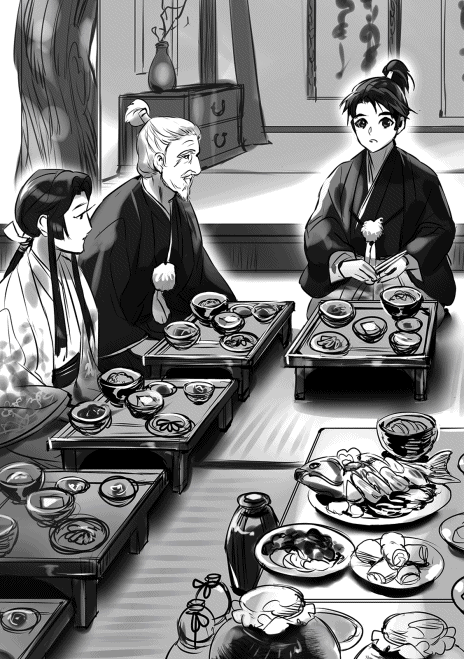
「母上、朝倉はこちらに関わっている余裕はなさそうです。戦は有ったとしても小規模なものになるでしょう」
越前の朝倉式部大輔憲景は、何とか加賀の一向一揆勢を国境線で食い止めた。正確には冬の到来による時間切れだが、一揆勢は優勢では有ったが勝利を得たとは言えない状況で退却した。その間にこちらがやった事は鉢伏山と木の芽峠に砦を作る事だった。なんとか雪が降る前に終わった。もっとも十兵衛達からは木の芽峠の両隣にも砦が必要だと報告が有った。雪が溶けたらそれを作る事になる。
多分、朝倉と一揆勢は今年も戦う事になるだろう。憲景は負けはしなかったが勝利を得られなかった。越前国内での地位はまだ不安定なままなのだ。一揆勢がそれを見逃すとは思えない。時間が経てば経つほど憲景の地位は安定する。一揆勢は雪が溶ければ遮二無二戦を仕掛けて来るだろう。
迷惑な奴だよな、一向門徒って。あの連中、越前だけじゃなくて三河でも騒ぎ始めた。松平家康対三河一向宗だ。頑張れよ、家康君。お前が負けると三河から尾張、伊勢の長島へと一向一揆が繋がりかねない。そんなの冗談じゃないからな。お前なんか嫌いだけど、ここは応援してやる。......誰か話題を変えてくれないかな。俺、性格悪くなりそう。
「観音寺城に挨拶には行かないのですか？」
よりによってそれか、小夜。なんで我が家の女達は俺を憂鬱にさせるんだろう。
「今年は新次郎に行ってもらう」
「......」
里帰りしたいんだろうな。溜息が出そうだ。
「行けば三好の事で色々と無茶を言われそうだ。面倒は避けたい」
「でも新次郎で宜しいのですか？ せめてこの中から......」
大叔父の妻、大叔母の発言だったが〝止めよ〟と大叔父が遮って終わった。男達は主税を除いて納得している。女達は......、駄目だ、誰一人として理解していない。
六角の新当主は昨年十月末に決まり十二月に観音寺城に入った。細川晴元の二男が元服して従五位下、六角左京大夫輝頼と名乗り近江守護に任じられている。義輝の輝と定頼の頼から輝頼と付けたらしい。従五位下左京大夫は義賢の持っていた官位だから、それを引き継いだという事なのだろう。つまり義治は抹殺という事だ。一応隠居として観音寺城の一角に居所を与えられているらしいが、監視付きで幽閉に近いというのが実態の様だ。
まあそこまでは良い、俺も不満は無い。問題は輝頼には義輝が付けた幕臣達が同行している事だ。大舘兵部藤安、一色蔵人秀勝、川勝主水知氏。若年の輝頼の相談役、そういう理屈は付いているが何の事は無い、輝頼を幕府のコントロール下に置いて六角家を都合良く操ろうという事だろう。当然だが、平井の舅殿を始め六角家の重臣達はその事にかなり不満を持っている。
現状では六角家に三好を相手にするような力は無い。誰よりも六角家の人間がその事を一番理解している。昨年の十一月には六角領内で徳政令を求める一揆が起こった。美濃攻めで予想以上に領内が疲弊したらしい。義輝は六角家に爆弾を仕込んだようなものだ。そんなところにノコノコ挨拶なんかに行けるか。叔父御達だって行きたがらない。
「今年は代替わりが多かったような気がするな」
「大きい所が変わったからな。六角、武田」
「なるほど、そうだな。......武田の新当主、信頼殿は十六、いや十七歳だったかな。上杉家の勢いを止められるかどうか」
叔父御達の話に皆が頷いた。話題を変えてくれて有難う。半分嬉しい、後の半分は......。
武田信玄が昨年の暮れに死んだ。跡目は名前を「信頼」と改めた四男の勝頼が継いでいる。良かったな、これで君も武田の一員だ。信濃は諏訪郡を除いて殆どが上杉側の勢力範囲になるか独立して武田から離反したから、信玄にとっては失意の死だったと思う。発熱、咳、痰、胸の痛みを訴えたというから死因は肺炎だったようだ。
でもね、信玄君。死ぬ前に〝朽木が上杉に助言しなければ〟とか〝朽木の小倅にしてやられた〟とか言うのは止めてくれないかな。多分熱で頭をやられての譫言だと思うんだけど迷惑なんだ。信玄は朽木の所為で憤死したなんて変な風評被害が出ている。あんたの息子の勝頼、いや信頼が何時か朽木にリベンジしてやるとか叫んでいるらしい。俺はそっちになんか行かねえよ、お前もこっちに来るな。ハタハタが美味い。ハマグリの吸い物もいける。
「川中島の敗戦で全てが変わったの。戦は怖いわ」
「御隠居様の申される通りにござる。主税、その方も良く覚えておけ。戦場で気を抜くなど言語道断の事ぞ」
「はい、父上。肝に銘じます」
主税が主殿に締められている。あの五郎衛門が怒鳴った一件は結構朽木では有名になったらしい。主殿を始め父親達が俺の所に謝罪に来た。
「ところで、朝廷がまた殿に官位を勧めてきたと聞いておりますが？」
「その話なら断ったぞ、主殿」
「前から気になっていたのですが、何故御受けせぬのです？」
「朝廷が提示してきたのは正五位下、右近衛権少将だ。それでは六角よりも上になる。揉めるのは御免だ」
誰かが息を吐いた。
結局はそこに行く。朽木は成り上がり者なのだ。皆何処かで朽木に対して面白く無い感情を持っている。朝廷は頻りに官位をと言って来るが、これまで提示してきたのは従五位下の位だった。義治みたいな奴には十分に面白く無い事だろう。受けたら揉める事になるのは目に見えている。ずっとそれが理由で受けなかった。公家達はその辺りを理解していない。......暗い話題が多いな。今年も前途多難な気がしてきた。
永禄七年（一五六四年） 一月上旬 近江伊香郡塩津浜 塩津浜城 織田信広
通された部屋には、既に主とその家臣達が揃っていた。若いな、今年で十六か。特に特徴の有る人物ではない。ただ若いと思った。だがその若さで北近江四郡、越前で一郡の主だ。しかも自らの手で切り取っている。朽木弥五郎基綱、若いからと言って侮る事の出来る相手ではない。御前に出て深々と一礼した。
「御初にお目にかかりまする。某は尾張の織田上総介信長が家臣、織田三郎五郎信広にございまする」
「朽木弥五郎基綱にござる。三郎五郎殿、遠路はるばる御苦労。して用件は何かな？」
声が明るかった、警戒している感じでもない。どちらかと言えば織田家に好意を持っているのかもしれぬと思わせるものが有った。
「はっ、主上総介は織田家と朽木家の間で同盟を結ぶ事を望んでおりまする。如何でございましょうか？」
左右が顔を見合わせている。だが正面の弥五郎様には動きは無かった。こちらを興味深そうに見ている。
「美濃攻めを手伝って欲しいという事かな？」
「適いますれば」
弥五郎様が口元に笑みを浮かべられた。
「ふむ、もしかすると一色家と六角家で同盟を結ぶという様な話が有るのかな？ それに対抗してこちらと結ぼうと」
左右からざわめきが起こった。驚いている、いや儂も驚いている。まさかそのような事を御考えとは......。有り得ぬとは言えぬ。朽木家と六角家、近年その関係は思わしくない。観音寺崩れで六角家は大きく力を落とした。坂田郡は朽木家に奪われ、今では朽木家と六角家の力関係は逆転している。その事を不満に思ってもおかしくは無い。
六角家が朽木家を抑えようと朝倉家、一色家と結ぼうと考える事は十分に有るだろう。だが朝倉家は一向一揆の相手で手一杯だ、余り役には立つまい。となれば、一色家と結ぶ事を優先してもおかしくは無い。一色家とは不破郡を巡って争ったが一色家も織田家と戦っているのだ。六角家と結ぶ事で西の国境線が安定するなら、手を結ぶ事を選択してもおかしくは無い。織田との戦に専念出来るのだ。
「いえ、そのような動きは存じませぬ。朽木様こそ何か御存知であられまするか？」
問い掛けると弥五郎様が首を横に振られた。
「今は無い。だが朽木と織田が同盟を結べばそういう動きが出てもおかしくは無い。違うかな？」
「如何にも」
なるほど、織田と朽木の同盟は一色と六角の同盟を誘発しかねぬか。その辺りを如何考えるかと弥五郎様は問い掛けてきている。
「我が主は朽木家との同盟を願っておりまする」
主は六角と結ぶ事も考えたようだ。だが六角は外から当主を迎えた事で内が治まっておらぬ。当てにはならぬ。それに比べれば目の前の弥五郎様は銭も有れば武略も有る。手を結ぶなら朽木家と判断した。
「当家は越前朝倉と戦っている最中にござる。余りお役には立てぬかもしれぬが、それでも良いと？」
「はっ」
分が悪いな、だが一色だとて六角よりも朽木を怖れよう。美濃攻めだけではない、美濃を獲った後の事も有る。昨年暮れに死んだ甲斐の武田信玄は、目の前の若者を恨みながら死んだのだ。敵に回せば厄介な相手だ。
「織田家との同盟、異存は無い」
〝殿〟という声が幾つか家臣から上がったが、弥五郎様が右手を少し上げると押し黙った。畏れられている、或いは心服しているのか。若いが家中をしっかりと押さえているのだと思った。
「案ずるな。近隣を見渡しても同盟を結ぶなら織田家以外には無い。他は朽木を敵視しているか、阿呆で頼りにならぬ者ばかりだ。両方というのもいるな」
思わず失笑しそうになったが堪えた。家臣達は困った様な顔をしている。また笑いそうになって堪えた。どうやら家臣達は若い主君に振り回されているらしい。織田家に似ているかもしれぬ。
「織田殿にお伝え願いたい。織田家との同盟、願っても無い事。以後は良しなに願うと」
「はっ、有り難きお言葉。必ずや主上総介に伝えまする」
「うむ、近々坂田郡の今浜に城を築くつもりだ」
「今浜に」
問い掛けたわけではないが相手は頷いた。今浜と言えば淡海乃海に面し美濃に近いが......。
「あの辺りに町を造ろうと思っている。大きな湊町をな、その為の城造りだ。だが一色は美濃攻めの拠点と見るかもしれぬ」
「なるほど」
一色家は脅威に感じよう、抑えの兵を不破郡に置く筈。結果としてこちらへの援護ではある。
「六角家も面白くは思うまいな。坂田郡を奪われたと思っている」
となると一色、六角の同盟は十分に有り得るという事か......。ならば朽木家にとっても織田との同盟は望む所だったのか？
「出来れば織田殿にお会いしたいが、尾張と北近江ではそうもいかぬ、残念な事だ」
社交辞令とは思わなかった。
「真に残念にございます。我が主は過ぐる永禄二年に上洛しております。その帰途、朽木様に会おうと考えていたのですが......」
弥五郎様が頷かれた。
「その話は俺も公方様からの文で知った。良い機会だったのだがな」
当時朽木家は一万石に満たない国人領主に過ぎなかった。だが、将軍家への忠誠と財力で天下にその名を轟かせていた。
「尾張に戻ってから何度も言っておりました。いっそ朽木に寄って戦の采配を見てくれば良かったと、惜しい事をしたと」
弥五郎様が顔を綻ばせた。
「嬉しい事を聞くものだ。だが織田殿に見られては恥ずかしいな。何と言っても織田殿は桶狭間の戦いで勝ったのだ。俺など到底及ぶところではない」
似ているのだ。二人とも関を廃し座を廃し商人を保護している。そして銭で雇った兵で戦っている。兄弟かと思うほどだ。入れ替わっても何の不都合も有るまい。
「いずれは御会い出来よう、その日を楽しみにしている」
「はっ」
その日か、それは織田家が美濃を制した日だ。濃尾を制した織田家は天下の有力大名になっていよう。そして目の前の御方は越前を制しているやもしれぬ。或いは近江か。真に楽しみな事よ......。
永禄七年（一五六四年） 二月中旬 近江伊香郡塩津浜 塩津浜城 朽木基綱
一月も松の内を過ぎると尾張の織田信長から同盟の打診が有った。使者は織田三郎五郎信広。一度は信長に反旗を翻した信長の異母兄だ。こっちは北に朝倉という敵が有る。同盟を結んでもあまり役に立てないと言ったんだが、それでも良いと言う。多少なりとも一色の戦力を朽木が引き付けてくれればという事らしい。
三河の松平は一向一揆で全く同盟者としては役に立っていないからな。代わりに朽木を、そんなところだろう。というわけで、出来る範囲で協力するという緩い同盟を織田との間に結ぶ事になった。今浜に城を造ると言うと喜んでいたな。勘違いするなよ、その城は戦のためじゃない、今浜を繁栄させる為の城だ。軍略方に絵図面を頼んだ。鉢伏山、木の芽峠の城も有る、無理だと言うかなと思ったが、十兵衛、半兵衛、上野之助は嬉しそうだった。城造りって楽しいのかな、俺も習おうかと思っている。
三月になれば敦賀から北へと交易船を出す。朽木家が所有する船だ。蝦夷地と言いたいが先ずは津軽半島の十三湊へ向かう。こちらからは織物、酒類、穀物、茶を持って行く。向こうからは昆布等の海産物だ。結果が出るのは今年の終わりになる。楽しみだ。
中国の明との交易も何とかなりそうだ。組屋の話では出雲美保関に中国船が来ているようだ。尼子が急速に勃興したのは、この中国船との取引による利益が大きかったかららしい。なんでも一年間の関税が五千貫を超えたとか、聞いた時には吃驚した。そんな話は学校じゃ誰も教えてくれなかった。組屋が今美保関に向かっている。こいつは早ければ夏頃には目処が立ちそうだ。楽しい想像をしていると五郎衛門が部屋に入って来た。
「殿」
「如何した、五郎衛門」
「先程朽木家に仕官したいという者が某を訪ねて来ました。それも三人」
「ふむ、その方の知り合いか？」
「いえ、一面識も有りませぬ」
五郎衛門が首を横に振っている。では近江の人間じゃないな。それにしても三人？......もしかすると若狭武田の家臣かな。内藤に攻め込まれて家を潰したか。或いは嫌気がさして逃げ出したか。
「何処の人間だ？」
「それが、少々妙でして」
「妙？」
「はい」
改めて五郎衛門の顔を見た。確かに五郎衛門は困惑している。武田じゃないの？ やばい筋の人間かな。まさかとは思うが三好？
「元は武田の家臣だとか」
「そうか」
なんだ、やっぱり武田か。
「領地を失い将来に展望が見えないので武田家を致仕したと」
「致仕？」
だとすると、辞めたのは内藤の若狭侵攻前、かなり前だな。
「真田弾正忠幸隆、室賀甚七郎満正、芦田四郎左衛門信守と名乗っております」
思わず五郎衛門の顔を見た。武田ってそっちの武田なの？ 何の冗談だよ、それは。
「殿？」
「あ、うん」
「......その者達、女子供も含めれば二百人を越える家臣達を引き連れておりまする」
「二百人か」
どうやら本気だな。一族郎党引き連れて来たか。
「お会いになりますか？」
「......そうだなあ、会わねばなるまいな」
「では明日にでも」
「......いや、直ぐ会う。三人を連れて来てくれ」
「では支度を」
「必要無い、そのままの姿でこの場へ連れて参れ」
五郎衛門が驚いていたが俺が〝早くしろ〟と言うと、慌てて部屋を出て行った。
真田、室賀、芦田。領地を失ったって言ってたな。そうか、上杉に寝返らなかったか。いや、寝返れなかったのかな。領地を追われた信濃の国人衆にとっては、武田の手先になって自分達の領地を奪った真田、室賀、芦田は許せる存在じゃなかったんだろう。
武田家でも居場所が無かったのかもしれない。それで信玄も死んだ事で武田に見切りをつけたか......。勝頼、いや信頼か、評価低いな。或いは跡目相続で揉めたかな？ 年も若いし十分に有り得るだろう。対抗馬は叔父の逍遙軒武田信綱かな。
ここは三人とも召し抱える一手だ。室賀は良く分からんが、真田、芦田は大丈夫だ。真田は大吉、芦田は中吉。三人召し抱えればそれが評判になる。信濃、甲斐から続けて仕官を望む人間が朽木を訪ねてくる可能性は有る。朽木は人材不足だ。喜んで雇ってやる。でも先ずは親切からだ。朽木は頼りがいが有る、そう思わせる事だな。いきなり飛び付いてはいかん。
永禄七年（一五六四年） 二月中旬 近江伊香郡塩津浜 塩津浜城 真田 幸隆
「真田弾正忠幸隆にございまする。剃髪し一徳斎と号しておりまする」
「室賀甚七郎満正にございまする」
「芦田四郎左衛門信守にございまする」
「うむ、朽木弥五郎基綱だ。良く朽木を頼ってくれた」
目の前に未だ若い武士が居た。これが朽木弥五郎か、身体は特に大きくない。目鼻立ちも特別に変わった所は無かった。ごく平凡な男だ。
鉄砲の音が聞こえた。先程から頻りに鉄砲の音がする。しかもかなりの数で撃っているようだ。朽木の鉄砲は有名だが火薬、玉も豊富に有るらしい。つまり銭が有るのだ。甲斐では鉄砲を揃えても十分な訓練は出来ずにいた。それ程までに火薬と玉は高価で貴重だ。いや、甲斐だけではなかろう。北条、上杉も同様の筈。朽木は天下有数の富強を誇ると言われているが、改めてそれを実感した。
「そこでは少し遠い、もっと前へ」
声は良く通る。しかし前？ 前と言われても家臣でもないのにこれ以上近付いては非礼、いや無礼になろう。場合によっては危険だと判断されかねぬ。傍には日置五郎衛門殿が居て、険しい眼で我ら三人を見ている。
「遠慮は要らぬ」
困った。甚七郎殿、四郎左衛門殿も困っている。
「その方達、俺を殺しに来たのか？」
「そ、そのような事は」
慌てて否定すると楽しそうな笑い声が聞こえた。からかわれた？
「ならば問題有るまい。さあ、前へ」
困った、如何する？
「俺はその方等を召し抱えるか、否かを決めねばならん。その方等は俺に仕えて良いのかどうかを決めねばならん。それには今少し近付く必要が有ろう。俺を良く見ずとも良いのか？」
已むを得ん！
「失礼仕る！」
脇差を鞘ごと抜いて後ろに置いて前へ進んだ。甚七郎殿、四郎左衛門殿も〝失礼仕る〟と言って儂の傍に座った。二人も脇差を差していない。
もう仕官などどうでも良くなってきた。相手の言う通りよ、先ずは朽木弥五郎基綱を見なければならん。相手はこちらを興味深げに見ていた。仕官が偽りとは思っていない様だ。いきなり呼び出された。着替えも許されぬ。せっかちな所が有るのか？
「その方達は信濃の出であろう。戻りたくはないか？」
「戻りたくは有りますが、我らの領地は既に上杉方の者に奪われてござりまする。戻る所有りませぬ」
四郎左衛門殿が答えた。
「俺が関東管領殿に文を書いても良い。信濃は無理かもしれぬが、関東で所領を持つ事は出来るやもしれん。上杉に仕えるのは忸怩たるもの有るやもしれんが故郷に近い方が何かと都合が良かろう。管領殿もその方達が家臣となってくれれば心強いと思うが？」
「御心遣い、有難うございまする。なれど我ら武田家を致仕いたしました折、上杉家には仕えぬと約しました」
朽木弥五郎が〝そうか〟と呟いた。親切な所は有る。
信頼殿を始め武田家中には我らが裏切ると考えている人間が居た。上杉に寝返って信濃で領地を得ようとしていると......。そんな事を村上や高梨が許す筈が無い。それなのに......。武田家中に信濃衆の居場所は無い。そう思って信玄様の死を契機に暇を請うた。上杉に仕えぬ事を約束したが朽木に仕えようとしていると知ったら如何思った事か。裏切り者と我らを罵ったかもしれない。
「乱世とは生き辛き世の中よな」
若年らしくない呟きだった。事情を察したのだろうか？
「正直に申さば、その方達が当家を頼ってくれたのは有難いと思っている。だが武田殿が朽木を恨みながら亡くなられた事も知っておる。その気持ちはその方達も同じであろう」
「そのような事は有りませぬ」
否定したが、朽木弥五郎が首を横に振った。
「言い訳はせぬ。あの戦いの二年前、関東管領殿が朽木を御訪ねになられた。武田殿との戦についてであった。勝敗がはっきりせぬ、何か良い考えは無いかと相談を受けた」
「......」
「俺は川中島の事など何も知らぬ。それ故、武田が踏み込んで来ぬなら自らが踏み込むしか、勝敗をはっきりさせる術は無いと申し上げた。ま、当たり前の事よな」
それが死生命無く死中生有り。今では天下に知らぬ者が無い言葉。そのような経緯で生まれたか......。本人の口から聞くと、その時の情景が不思議な程にありありと目に浮かんだ。甚七郎殿、四郎左衛門殿も神妙な表情をしている。
「朽木に仕える事、迷いは無いか？」
静かな声だった。如何答えれば良い？ 恨みが無いと言えば嘘になろう。だが、それだけでここに来たのではないのだ。甚七郎殿、四郎左衛門殿に視線を向けると二人が頷いた。
「我ら三名、良き主君を得たい、ただそれだけにございまする。このまま朽ち果てたくは有りませぬ」
これも真実。恨みが無いとは言わぬ、だが迷いは無い。我らは朽木弥五郎を選んだ。僅か十年程で近江の国人領主から北近江四郡、越前で一郡の主になった。常に己よりも大きい相手、強い相手を潰して大を成した。三好、六角、上杉も朽木には一目置いている。未だ十六歳、先は長い。そして多少せっかちな所が有るようだが、人柄も悪くないように思える。我らの身を託す事が出来るだろう。
「真田弾正忠幸隆、室賀甚七郎満正、芦田四郎左衛門信守。朽木家にて召し抱える」
「はっ、有難き幸せ」
「禄の話は後だ。ついて参れ、面白い物を見せてやる」
朽木弥五郎、いや、殿がそう言うと席を立って部屋を出て行った。脇差、如何する？ まごついていると〝脇差を忘れるな〟殿の声が聞こえた。
慌てて脇差を拾い腰に差して後を追う。〝殿！〟五郎衛門殿が怒鳴ると、〝その三人は朽木の家臣だ、差別するな〟と声が返ってきた。やはりせっかちだ。五郎衛門殿も、そして近習達も後を追ってきた。甲斐とは違う、早く慣れなければならん。小走りに殿の後を追った。また鉄砲の音が聞こえた。朽木の音だと思った。
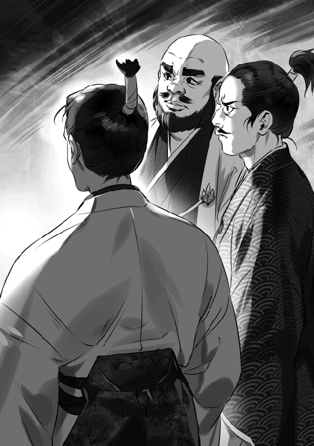
永禄七年（一五六四年） 三月下旬 近江坂田郡今浜 井口経親
「そろそろの筈だが」
「うむ、そろそろの筈だ」
「しかし、それらしい船が見えぬな」
「うむ、見えぬ。あれは如何見ても荷を積んでおる」
「向こうの船も荷を積んでおるぞ」
皆が口々に殿の姿が見えぬと言った。確かにこの湊に近付いてくる船は全て荷を積んでおるようだ。如何見ても荷船にしか見えぬ。今日は此処で殿が坂田郡の主だった国人衆と会う約束の筈。全員で七人、皆揃っている。立ち会えと言われたのだが......。
「あれではないかな？」
慌てて声がした方を見ると、大野木土佐守が困惑したように街道を見ていた。そして〝ほれ〟と言って指をさす。目を凝らすと、五十騎程の一団が此方に近付いて来るのが見えた。まさか馬で来られたか。
「なんと、殿は塩津浜から馬で来られたぞ」
「相変わらず意表を突くのが上手なお方じゃ」
「なればこその戦上手よ。土佐殿が気付かねば我ら首を獲られていたぞ」
期せずして笑い声が上がった。全く同感よ、首を獲られておったわ。
徐々に騎馬の一団の速さが緩やかになった。あちらもこちらを認めたらしい。一団の中に手を振る者がいる、殿か？ こちらも手を振ると周囲に話しかけるのが見えた。どうやら殿のようだ。近くまで来ると殿が馬から降りられたので、皆で出迎えた。
「待たせたようだな、済まぬ」
「いえ、大した事はございませぬ」
儂が答えると殿が笑い声を上げた。
「そうかな、皆大分湖の方を見ていたようだったが」
「殿はお人が悪うござる」
西山兵部が言うと皆が笑った。殿も楽しそうに笑い声を上げた。
「驚きましたぞ、殿。てっきり船で来られるものとばかり思っておりました」
「北国街道を見てみたいと思ったのだ、越前守。人の往来が多いな、荷も動いている。良い事だ」
満足そうに頷かれた。
「昨日遅くに城を出てな、野宿をした」
「なんと！」
皆が驚きの声を上げた。まさか北近江の主が野宿？ 殿がまた笑った。
「俺だけではないぞ、商人達も野宿をしていた。盗賊共に荷を奪われる不安を感じておらぬのだろう。少し話もした。伊勢北部の男だったが北近江は商売がし易いと言っていたな。それに比べると北伊勢は商売がし辛いと零しておった。皆が街道の見回りをする兵を出してくれた御蔭だ、礼を言うぞ」
なんと、自らの目でそれを確かめられたのか。そのための野宿とは......
皆が口々に大した事ではない、役に立てて嬉しいと言った。皆分かっている、商人が来るから石鹸が売れる、綿糸が売れる、銭が手に入ると。坂田郡だけではない、北近江の国人衆は皆がそれを理解している。昔よりずっと豊かになった。米だけが収入の道では無くなった。百姓に必要以上に負担をかけずに済む。浅井の配下であった時とは違う。朽木と共に豊かになる、そういう想いが有る。
殿が湊から湖を見渡した。
「これが今浜の湊か。北国街道と東山道を使える、やはり東近江の拠点になる湊だな」
「城を築かれると越前殿から伺いましたが？」
「うむ、ここに城を築いて城下町を造る。賑わうぞ、土佐守」
皆が満足そうに頷いた。
「しかし此処に作るとなると、いささか守りに不安が有りますな」
岩脇市介が心配そうに言った。
「平城だからな、已むを得ぬ。だが湖の傍に有る以上、船を使っての補給、後詰は容易い。決して孤立はせぬ」
「なるほど」
「城造り、町造りのために人を出して貰う事もあろう。その時は頼むぞ。勿論、銭は払う」
また皆が嬉しそうに頷いた。
「何時頃になりましょう？」
小林左馬頭の問いに殿が首を傾げた。
「そうだな、越前で鉢伏山、木の芽峠に城を造っている。そちらが一段落してからになるだろう。大体九月から十月頃か。まあその前に大凡の縄張りは済ませたいと思ってはいる。本格的に造り出すのは来年かな」
「朝倉とは戦にならぬので？」
新庄刑部左衛門が訊ねた。野良田の戦いで討ち死にした新三郎の弟だが、殿の力量に心服している。
「敦賀の氣比神宮が朝倉式部大輔に、朽木は敦賀以北には興味が無いとそれとなく伝えている。氣比神宮は朝倉と組むより俺と組んだ方が儲かると理解しているからな。上手くやってくれるだろう」
なるほど、氣比神宮は越前で大きな勢力を持つ。朝倉式部大輔も無視は出来ぬ。
「それに敦賀は二万石程度しかない。越前全体で見れば微々たるものだ。湊も越前には敦賀の他に三国が有る。朝倉式部大輔にとっては敦賀よりも三国の方が使い易かろう。加賀の一向一揆が迫る今、敦賀に拘る事に意味は無い。もっとも油断は出来ぬが」
湊を見ながら穏やかな表情で殿が話した。
「我らは敦賀の湊を使って儲ける。そのためにも朝倉には頑張って一向一揆と戦って貰わなければならん。式部大輔殿の手腕に期待だな」
皆が笑い出すと殿も笑い声を上げた。
「殿、城造りは織田との同盟の証との噂を聞きましたが」
宇賀野の若宮藤三郎が尋ねた。
「否定はせぬぞ、藤三郎。織田は喜んでいる。だが先ずは今浜を発展させるためよ。それに国友村も近いから、この辺りの防御の拠点という意味も有る」
「なるほど、北国街道、今浜、国友村を守るためですか」
問い掛けると殿が〝うむ〟と頷いた。
「領地も大事だが、物を動かす拠点、作る拠点も大事だ。疎かには出来ぬ。とは言っても美濃にとっては面白くは有るまい。何か仕掛けてくるやもしれぬ。一色に動きあれば急ぎ知らせよ、必ず後詰致す」
「はっ」
「兵は雇えているか？」
「申し訳ありませぬ、常の七割ほどしか雇えておりませぬ」
小堀新助が答えると、他の者達も自分も同様だと答えた。儂もようやく八割に達した。だが胸を張って答える事は出来ぬ。
「焦る事は無い。綿花の栽培が広まるまで、もう少し時間がかかろう。幸い商人は来ているのだ。漆、材木、布、織物、何でも売れ」
「はっ」
「城を築くには人を雇わねばならん。その人を相手に領民を使って商売をさせよ。飯を食わせる、酒を飲ませる、女と遊ばせる。医者もいるぞ、古着屋、鍛冶屋、見世物小屋も要る。人が集まれば物が動く、物が動けば銭も動く。この今浜を東近江最大の湊町にする。必ずや坂田郡を豊かにしてくれよう」
国人衆達が力強く頷いた。
永禄七年（一五六四年） 四月中旬 近江伊香郡塩津浜 塩津浜城 朽木基綱
「重蔵、三河の一向一揆は未だ収まらぬのか？」
「はっ。どうも武田が動いているようで。本願寺に頻りに働きかけているとか」
「武田が？」
何で武田が三河の一向一揆に、と言いかけて止めた。今川が頼んだか、代償は対越後での協力、或いは米、銭の援助か。確認すると重蔵が頷いた。
「当分は収まりますまい。伊勢長島から援助が出ております。武田の要請に本願寺が応えたという事でしょう」
「......」
これ、どうなるんだろう。三河は荒れまくりで松平による三河統一は不可能？ つまり徳川家康は無し？ 信長はどうなるんだ？
甲相駿三国同盟は義元、信玄が死んでも健在か。ただ、性格は攻撃的なものから防御的なものになった。対上杉、対松平で協力するか。だが武田の内情はかなり苦しい筈、このままやっていけるのか......。離脱者が続いている。真田、室賀、芦田の後に相木市兵衛頼房、小泉宗三郎重成が続いて朽木に来た。
真田、室賀、芦田は先発隊の性格を持っていたらしい。俺が気持ち良く迎えてくれれば第二陣が来る、そうなっていたようだ。相木は川中島で戦死した相木市兵衛の息子、小泉は村上義清に属していたらしいが、義清が越後に逃げた後、武田に下ったらしい。第三弾が来るかもしれない。東海地方から関東甲信越は要注意だな。史実とは全くかけ離れた。これからどう動くか......。
「殿、三好家の跡取りが十河孫六郎重存に決まりましたぞ」
こちらは史実通りだ。三好左京大夫義継の誕生だな。
「十河は誰が継ぐ？」
「三好豊前守の二男、孫六」
これも史実通り。
「上手く行くと思うか？」
「......難しいかと思いまする。本来なら逆でございましょう」
「そうだな」
重蔵が眉を寄せている。俺も同感だ、上手く行かないだろう。史実でも上手く行かなかった。この世界でも駄目な筈だ。
不自然なのだ。如何見ても十河重存が三好長慶の後継者になった理由が分からない。三好長慶には四人の弟がいた。三好実休、安宅冬康、十河一存、野口冬長。このうち、末弟の野口冬長は早い時期に死んだため後継者が居ない。つまり三好本家の後継者は三好実休、安宅冬康、十河一存の三人の子供達から選ぶ事になる。
普通こういう場合は本家に近い所から選ぶ。先ずは次弟三好実休の子供だ。実休の家に適任者がいなければ三弟安宅冬康の子供から選ぶ。十河の子供は候補者としては一番最後の立場だ。徳川御三家に例えれば水戸家になる。だが、その十河の子供が選ばれた。
三好実休にも安宅冬康にも息子が居る。養子をどちらかから迎える事は可能だ。そして重存の父親、一存は死んでいる。つまり親身に力になってくれる後見人が居ないという事でも有る。重存は筋目の面で弱く、力の面でも弱い後継者と言って良い。俺と重蔵が上手くいかないと思う理由はそこだ。
「三好豊前守実休、大分怒っておりますそうで」
重蔵、目が笑っているぞ。
「それはそうだろう。二男を本家の養子ではなく十河の養子にさせられたのだからな」
「今少し掻き回しますか？」
「......いや、十分だ。これ以降は監視だけで良い」
重蔵が頭を下げた。
もう直ぐ三好長慶は死ぬ筈だ。問題はその後だな。史実では一年後に義輝が殺される。長慶の死で三好も終わりだと期待したのだろう。三好を排斥しようとでもしたのかもしれない。先手を打たれて始末された。この世界ではどうなるか？ 史実と違って三好実休、安宅冬康が生きている。三好は史実よりも強固だが......。
「六角は如何かな？」
「六角の重臣達と幕臣が対立しておりまする」
「やはりそうなったか。左京大夫は？」
「幕臣寄りだそうで。重臣達、特に蒲生、三雲とは上手くいかぬとか」
「右衛門督寄りと見られたか」
「おそらくは。蒲生下野守、家督を息子の左兵衛大夫に譲るようです」
重蔵と顔を見合わせ笑った。
隠居か、それほどに不信を持たれているという事か。蒲生も三雲も最後は義治を持て余していたのだがな。
「となると、公方様が頼るのは無理か」
「難しいかと」
史実より強固な三好陣営と史実同様貧弱な足利陣営か。義輝は生き残れるかもしれんな。
「越前は？ 式部大輔は如何かな？」
「疑心暗鬼になっているとか」
「堪えられそうか？」
重蔵が首を横に振った。
「難しいかと思いますぞ、来年を迎えられるかどうか、正念場でござりましょう」
つまり最悪の場合、年内で越前は一向一揆の領国になるか。本願寺顕如、ウハウハだろうな。鉢伏山と木の芽峠の防備を固めなければならん。
「若狭は？」
「内藤の兵は殆ど見ませぬ。皆丹波に居るようです」
「丹波国人衆の反乱が収まらんか」
「はっ」
となると、そろそろ若狭攻めかな。敦賀と若狭で日本海を利用した交易だ。しかし俺が動くと義輝が危うくなるかもしれない。切り捨てても良いんだが寝覚めが悪い。どうしたものか......。
永禄七年（一五六四年） 四月下旬 越前南仲条郡 木の芽峠 室賀満正
「四郎左衛門殿、木の芽峠とはあれかな？」
「そのようだな、甚七郎殿」
目の前には小高い山々と細い道が有った。何処か信濃の故郷に似ている。そして遠目にも何やら大勢の人が集まって普請をしているのが分かった。おそらくは砦を造っているのだろう。
「あと一里、そんなところか」
「そんなところだ。......皆、もう少しじゃ、頑張れ」
四郎左衛門殿が声をかけると家臣達が〝おう〟と声を上げた。
一刻とかからずに木の芽峠に到達すると道を塞ぐ柵が有った。そしていきなり二百人以上の兵が柵から現れ、こちらを囲んだ。まあ無理もない。こちらは家臣達も含めれば五十名近い兵が甲冑を身に着けているのだ。
「何者か？」
「怪しいものではない、某は室賀甚七郎。隣りに居る芦田四郎左衛門殿と共に木の芽峠に行けと塩津浜の殿に命じられた。田沢又兵衛殿に取り次ぎ願いたい」
兵達が小声で話し合っている。〝室賀、芦田？〟、〝聞いた事が無いぞ〟、〝妙な訛りが有る〟。いかんな、怪しまれておる。
「我らは新規召し抱えの者だ。元は信濃の出で甲斐の武田家に仕えていた。聞き覚えが無いのも訛りが有るのもその所為じゃ。田沢殿は御存じの筈、取り次いでくれ」
納得したのだろう。〝暫くお待ちを〟と言うと、一人が去って行った。
暫くすると明らかに身形の良い侍大将が二人やってきた。一人は四十前後、もう一人は三十半ばか。おそらく年長の方が田沢又兵衛だろう。
「室賀甚七郎殿、芦田四郎左衛門殿でござるな。某は田沢又兵衛、共に居るのは高野瀬備前守殿にござる」
儂と四郎左衛門殿が改めて名乗ると柵の中に誘われた。家臣達には外で待つようにと伝えて中に入った。
柵の中には幾つか家屋が有ったが、その一つに案内された。中には人が居た。明智十兵衛、竹中半兵衛、沼田上野之助。軍略方と紹介された、軍師の様な職らしい。ここでは築城の指揮を執っている様だ。皆で床几に座った。歩き疲れた体には床几が何とも有難かった。腰が蕩けそうな感じがする。小姓が茶を出してくれた。熱い焙じ茶が香ばしい。疲れが吹き飛ぶ。四郎左衛門殿が〝ほうっ〟と息を吐いた。
「かなり大がかりに普請を行っているようですな」
四郎左衛門殿が訊ねると田沢殿が〝うむ〟と頷いた。遠目では分からなかったが、近付くにつれてかなりの規模の砦である事が分かった。
「ここを押さえれば越前から敦賀には兵を出せぬ。要衝中の要衝よ。室賀殿、芦田殿、御両所は殿からはどのように聞いておられる？」
「どのようにと言われましても木の芽峠に行け、そこで田沢殿の指揮下に入れと言われただけで、それ以上は何も」
儂が答えると四郎左衛門殿が頷いた。そして田沢殿、高野瀬殿が顔を見合わせておかしそうに笑った。見れば軍略方の三人も笑っている。どういう事だ？
「殿にも困ったものだ」
「左様、とにかく押付けてやらせてしまえ、それですからな」
「某は慣れましたぞ」
「良いでは有りませぬか。それだけ高く評価しているという事です」
「物臭なだけでしょう。殿は結構面倒な事は嫌います」
儂と四郎左衛門殿を除いた五人が笑いながら話している。はて、どういう事だ？ 疑問に思っていると田沢殿がこちらを見た。
「御両所にはそれぞれ砦を一つ預かって貰う」
砦？ それぞれ？
「某が木の芽峠の砦に、高野瀬殿が鉢伏山。室賀殿には観音丸砦、芦田殿には西光寺砦を頼む」
「......」
「兵はそれぞれに五百、鉄砲を五十丁付ける」
五百？ 鉄砲五十丁？ 兵五百と言えば二万石相当の軍役であろう。それに鉄砲五十丁？ 四郎左衛門殿に視線を向けると、向こうもこちらを見ていた。困惑している、聞き間違いではない様だ。
「我らは外様、ましてや新参者でござるが」
「知っており申す。殿からは武田家でそれなりの地位に有った者なれば力量に不安無し、遠慮なく使えと御沙汰が有った」
「......」
高く評価されているのか？ だが兵五百、鉄砲五十丁？ それに要衝中の要衝を守れ？ 武田家に居た時でもそんな扱いは受けなかった。間違いではないのか？
「御不満かな？」
高野瀬殿の言葉に慌てて首を横に振った。
「そのような事はござらぬ。ただ何と言って良いか......」
「......その、何かの間違いでは？」
四郎左衛門殿が恐る恐る言うと、我らを除く五人が笑い声を上げた。
「間違いではござらぬ。これが朽木のやり方にござる」
「これが？」
思わず声が掠れた。田沢殿が〝左様〟と頷いた。
「この場に居る七人、近江出身者は儂と高野瀬殿だけじゃ。沼田殿は若狭出身、竹中殿、明智殿は美濃出身でござる。そして明智殿はつい先日まで朝倉家に仕えておった」
驚いて明智殿を見ると、柔らかく笑みを浮かべている。
「某は近江出身では有るが朽木家の譜代ではない。元は六角家に仕えていたが浅井に寝返った者。戦で敗れ城を失ったところを殿に拾って貰い申した。言わば他国者となんら変わらぬ」
高野瀬殿の言葉に気が付けば〝左様で〟と、なんとも間抜けな声を出していた。四郎左衛門殿も呆けたようにしている。
「朽木は元々は一万石にも満たぬ小領主であった。そのためだが譜代が少ない。されば使える人材なら、他国者であろうと新参者であろうと構わず使うという事でござる」
「なるほど」
「期待しており申すぞ」
田沢殿がにこやかに話しかけてきた。慌てて頭を下げた。
どうやら、とんでもない所に来てしまったようだ。次に朽木に来ようとしている者達に警告せねばならん。ここに来たら......、ここに来たら何と言えば良い？ そうだ、〝とにかく押付けてやらせてしまえ〟だ、それが朽木だ。それでも良ければ来いと。......来るだろうな、なんせ儂が兵五百と鉄砲五十丁、砦を一つ預かったのだから......。
永禄七年（一五六四年） 六月下旬 近江伊香郡塩津浜 塩津浜城 朽木基綱
今日は評定の日だが面倒な訴訟の裁定も無く淡々と進んでいる。まあ、稲は順調に育っているし綿花も大丈夫だと、農方奉行の長沼新三郎から報告が有った。今年も近江の国人衆に綿花の種を渡した。あと一、二年で北近江四郡に綿花が行き渡るだろう。
石鹸の製造販売も順調のようだ。敦賀郡の関を廃止した事で、石鹸が敦賀へこれまで以上に流れるようになったらしい。船を使っての商売に弾みがついているようだ。綿糸、石鹸、どちらも順調だ。今年の末頃には、全ての兵が百姓から銭で雇った傭兵に切り替わるだろう。ようやく一万の兵を動かす事が出来るようになる。
酒の製造も順調だ。伊香郡、浅井郡に作った製造所からは越前、美濃方面に酒が販売されているらしい。坂田郡にも必要だとは思うが、昨今は彼方此方で凶作が起きている。酒なんて造っていいのかと思ってしまう。実際に地方では酒の製造禁止令が出ているところも有る。東北の方だが余程に厳しいらしい。
「明の船だが今組屋が出雲美保関へ行って交渉している。どうやら上手くいきそうだと連絡が来た」
俺が発言すると皆が嬉しそうに頷いた。ここで中国との交易が出来れば唐物と呼ばれる品を求めて、さらに大勢の商人が敦賀にやってくる。皆がその余剰効果に期待している。
今の時点でも敦賀で新しい特産物を開発中だ。敦賀産の塩を高級品として売り出す事を考えている。最初に飛鳥井家を通して帝に敦賀産の塩を大量に献上した。
『古には天皇家は敦賀産の塩を使用したと聞いている。今朽木が敦賀を領したので古に倣い塩を献上したい』
そう言って献上したら朝廷は大喜びだったな。塩も嬉しいが古に倣うと言うのが嬉しいらしい。朝廷を尊んでくれているというわけだ。義輝にも渡したが義輝も喜んでいた。
塩は人が生きていくためには必要不可欠なものだ。そして神事、祭事などの儀式でも使う。朝廷はそういうのが特に多いから、塩の消費量は馬鹿にならない。なにより良いのは塩は腐らない事だ。そういう意味でも喜んで貰える。目々叔母ちゃんから文が来た。一度直接会いたいって書いてあったがなかなか難しい。如何したものかな。
帝に塩を献上する事で敦賀産の塩は昔から朝廷で使われるほど良質のものだ。そういうイメージを定着させようと思っている。そして少しずつ効果は出ているようだ。敦賀産の塩は徐々に高値で取引されるようになっている。塩なんて海が有れば何処だって作れる、どうやって付加価値を付けるかが勝負だ。朽木は一歩リードだな。
全てが順調というわけでは無い。不安材料の一つは越前の朝倉と加賀の一向一揆の戦争だ。時期的に見てそろそろ始まるだろう。七月、八月と戦争して九月は稲の取り入れ。十月半ばくらいから十二月まで、雪が降るまでまた戦争だ。効率が悪いな、その事が昨年は朝倉を助けている。今年はどうなるか。重蔵は厳しいと見ているが......。
幸いなのは木の芽峠の防備が順調に進んでいる事だ。四つの砦は夏前には完成するだろうと竹中半兵衛から文が来た。新たに送った室賀甚七郎と芦田四郎左衛門は、鉄砲部隊の扱いを習熟するために必死のようだ。そして、砦の連携を強めるための手段として狼煙による合図の方法を検討しているらしい。こういうのは武田出身の二人は上手いようだ。運用実績を見て、良ければ朽木でも正式に採用しようと思っている。
「ところで少々面白くない話が有る」
俺が不安材料その二を切り出すと何事、という表情で皆が俺を見た。
「六角左京大夫が俺に不快感を抱いているらしい」
あれ、皆あんまり驚いていないな。やっぱり世間一般の見方は朽木と六角は不仲なのか？ それとも俺と輝頼が不仲か？
「已むを得ますまい。坂田郡の件が有りますからな」
五郎衛門の言葉に皆が頷いた。別に攻め獲ったわけじゃないぞ。坂田郡が朽木の支配下に入りたいというから受け入れただけだ。
「それも有るが、国友村を取られたのが面白くないらしい」
「朽木が鉄砲を独り占めしている、そう思っているのでしょう」
新次郎の言葉にまた皆が頷いた。
鉄砲の独り占めか、まあそういう部分は有る。鉄砲の生産地と言えば堺と国友村だった。そこに朽木が割り込む形で入ってきた。朽木谷、清水山、船木、小谷。北近江の朽木領は鉄砲の一大産地だ。そして国友村も朽木領になった。面白くないという感情以上に安全保障の問題から危険視しているかもしれない。実際朽木の鉄砲保有数は千丁に近い。不気味だろう。
「今浜に城を造ろうと思っているが、これも左京大夫が文句を言っているようだな。坂田郡に城を築くとは如何いう事か、朽木の物だと誇示する気か、返すのが筋であろうと。六角攻めの拠点にするのではという不安も有るのかもしれん」
誰かが溜息を吐いた。ホント、煩いガキだわ。家柄とか血筋で主君を選ぶと酷い目に合うな。
「正月に俺が観音寺城に挨拶に行かなかったのも響いているようだ。馬鹿にされたと憤っているとか。困ったものだ」
「......」
誰も今からでも良いから挨拶に行けとは言わない。行ったら危険だ。
「まあ戦になる事は無いと思うが、十分に気を付けるようにと坂田郡の国人衆には注意を促してくれ」
評定を終え部屋に戻ると、人払いをしてからごろりと横になった。何も考えたくない、そんな時が有る。だがそれでも考えてしまう事が有る。三好長慶はいよいよ具合が悪いらしい。そろそろだな、もう直ぐ長慶が死ぬ。長慶が死んで一年後に義輝が死ぬ。この二人の死を契機として畿内はとんでもない騒乱に陥る。いや史実では起こったが、この世界ではどうなるのか、不確定要素が多過ぎてさっぱり読めん。困ったもんだ......。
永禄七年（一五六四年） 六月下旬 近江伊香郡塩津浜 塩津浜城 朽木小夜
「殿、小夜です。入っても宜しいですか？」
〝構わんぞ〟と応えが有ったので、部屋に入ると弥五郎様が行儀悪く部屋に寝そべっていた。
「御加減でも御悪いのですか？」
「そうではない。起きるのが億劫なだけだ」
御顔の色は悪くない。嘘では無さそう。
「座ったらどうだ、用が有るのだろう？」
「はい」
ちょっと戸惑ったけれど、思い切って弥五郎様の傍に座った。弥五郎様は気にする事無く天井を見ている。
「心配事が出来たか？」
「......はい」
「舅殿の事か？」
「御存知なのですか？」
「多少はな」
弥五郎様は天井を見たまま答えた。
「最近平井から来る文がおかしいのです。以前は左京大夫様を新たに六角家の当主に迎え、これで安心したと明るい文が届いていたのですが、最近ではそのような事は何も......、むしろ避けているようで......」
弥五郎様がチラリと私を見た。
「六角家と朽木家の間で板挟みになっているのだ。舅殿も辛い立場だ」
「まあ、幕府から来られた方と上手く行っていないとは聞いていましたけど......」
弥五郎様がまたチラリと私を見ると身体を起こした。
「それも有る。幕臣達は六角と朽木を連合させて三好に対抗させたいと考えている。三好修理大夫の病が重いからな、おそらく長くはあるまい」
「それほどにお悪いのですか？」
「うむ、この夏を越せるかどうか。それも有って幕臣達は躍起になっているらしい。だが六角の重臣達にとっては迷惑千万な話よ。近年の混乱で六角家内部はバラバラだ。戦などより内政を重視して領内を一つに纏めるのが先、そう思っている。三好修理大夫の死を誰よりも望んでいないのは舅殿達かもしれぬ」
皮肉かしら。そう思ったけれど、弥五郎様は大真面目な御顔をされている。本心からそう思っているらしい。
「......左京大夫様は如何お考えなのでしょう？」
私が訊ねると、弥五郎様が軽く苦笑いをされた。
「小夜、内政というのは地味で辛気臭い仕事なのだ。外から養子として入って来て、周囲に認められたいと思っている左京大夫には面白味のある仕事ではないな」
左京大夫、と弥五郎様が呼び捨てた。弥五郎様は必ずしも左京大夫様に良い感情をお持ちではない。
「殿は内政がお好きなようですけど」
「俺は地味で辛気臭い仕事が好きだ。世の中にはそういう変わり者もいる」
「まあ、御自身の事を変わり者などと......」
思わず吹き出してしまった。
「皆がそう言っておるわ。小夜も一度や二度は聞いた事が有るだろう」
「それはございます。でも殿の御蔭で領内が豊かになったと皆が感謝しておりますよ」
弥五郎様がまた天井を見られた。照れていらっしゃる、ちょっと可愛い。
「左京大夫は朽木が気にいらぬらしい」
「......やはり新年の御挨拶に」
「そうではない、そうではないのだ、小夜」
弥五郎様が私を見た。
「朽木と左京大夫にはそれ以前から因縁が有る。そなたが朽木に嫁ぐ前の話だ......」
そう仰られると、弥五郎様がその因縁をぽつぽつとお話になられた。
元々は左京大夫様の父君、細川晴元様との拘わりが原因なのだとか。公方様が三好修理大夫と戦った時、細川様も公方様と共に三好と戦い敗れ朽木に逃げた。それから四年ほど公方様は朽木に滞在なされた。自力では戻れなかった、弥五郎様の尽力で和睦が成立し京に戻る事が出来た。でも、その和睦では細川様だけが除け者にされ京に戻る事が出来なかった......。
「已むを得なかった」
弥五郎様が首を横に振った。
「三好にとっては公方様よりも細川の方が憎い存在だったのだ。和睦を成立させるためには細川を切り捨てるしかなかった。だが、その事で朽木と細川の間に因縁が出来たのも事実だ」
「......」
「左京大夫にとって朽木は父親を切り捨てた存在なのだ、許せるわけが無かろうよ」
知らなかった。あの和睦では朽木の財力だけが話題になっていた。そんな事が有ったとは......。弥五郎様の表情は暗かった。
「厄介な事に左京大夫には朽木は六角に従うものという意識が有る。どうも幕臣共が近江守護として朽木を従え上洛しろと吹き込んだらしい。ところが朽木は坂田郡を奪い挨拶にも来ない。左京大夫は、〝朽木は下剋上をしている〟、そう周囲に言っているらしい。当然だが舅殿への当たりはきつかろう」
「......他の御重臣方は？」
弥五郎様が首を横に振られた。
「進藤、目賀田は朽木と協力すべきだ、そして暫くは内政に精を出すべきだと主張して煙たがられている。三雲と蒲生、蒲生は代替わりしたが、この二人は右衛門督に近いと疑われ遠ざけられている。まあ幕臣共がそういう風にしたのかもしれんがな。若い左京大夫を操るの等容易い事だろう」
「......」
「左京大夫は朽木が織田と同盟したのも気に入らんらしい。六角に断りも無く勝手に盟を結ぶとは何事、そう言っている様だ。朽木に対抗して美濃の一色と同盟しようと言っているとも聞く。厄介な話だ」
思わず溜息が出てしまった。弥五郎様の笑い声が聞こえた。如何して笑えるの？
「そんな顔をするな、小夜。六角と朽木が反目している以上、連合して三好と戦う等という事にはならん。朽木と六角が戦う事もまず無かろう。左京大夫一人では戦は起こせんからな」
「そうなのですか」
弥五郎様が〝多分な〟と言って頷かれた。そして急に表情を改められた。
「そんな事よりも舅殿に身辺に注意するように伝えてくれ」
「父が危険なのですか？」
驚いて問い掛けると、弥五郎様が首を横に振った。
「分からん。だから注意して欲しいのだ。後藤殿の事も有る、思慮の足りない人間は何をするか分からんからな」
また溜息が、慌てて堪えた......。
永禄七年（一五六四年） 七月下旬 近江伊香郡塩津浜 塩津浜城 日置行近
殿より侍大将、奉行以上の者は大広間に集まるようにとの触れが有った。何事かと急いで大広間に行くと既に皆揃っていた。どうやら儂が最後か。
「遅くなり申した」
席に着いて頭を下げると、殿が〝うむ〟と頷いてから広間を見渡して、〝揃ったか〟と仰られた。
「六角家から使者が来た。使者の名は大舘兵部藤安。皆も知っていると思うが、公方様の御側近で左京大夫の側に付けられた御方だ。何やら大事な話が有るらしい。皆も良く聞くように」
大舘兵部藤安か。六角家では将軍家の権威を嵩に随分と横柄な態度をとっていると聞く。その所為でかなり顰蹙を買っているらしい。殿の婚儀に出席された大舘左衛門佐様の御一族とは聞くが、一体どんな話を持ってきたのか。どうせ三好絡みだとは思うが......。
大舘兵部藤安が大広間に現れた。朽木の家臣達が大勢広間に居るのを見ると満足そうに頷いた。歓迎されていると思ったらしい。挨拶が終わると早速に用件を切り出した。
「本日こちらに伺いましたのは他でもありませぬ、六角家と朽木家の間を取り持とうと思うての事でござる。両家の間に蟠りが有る事、公方様も痛く御心配されておりまする」
「......」
「三好修理大夫もこの月の六日に亡くなり......」
「惜しい事ですな、未だ御若いのに。確か四十を過ぎたばかりの筈」
「......」
「生きておいでの間に一度お会いしておくべきだったと思っております。真に残念」
「......」
大舘兵部が幾分鼻白んだように見えた。嫌がらせか、本心か。ちと分からぬな。
「ところで大舘殿。今日は六角家の使者として見えられたのかな？ それとも将軍家の使者として参られたのか。どうもお話からではよく分からぬのだが」
殿が小首を傾げられた。
「......将軍家の使者としてでござる」
間が有った、嘘だな。この男の独断、或いは六角左京大夫に頼まれての事であろう。
「なるほど、それで蟠りとは何の事であろう？ 当家と六角家の間に蟠りが有ると仰せだが、某には心当たりが無い。五郎衛門、その方知っているか？」
皆の視線が儂に集まった。迷惑な、儂に振らずとも良かろうに。
「某も存じませぬ」
「新次郎は如何じゃ？」
「存じませぬ」
殿が知らぬというもの、儂や新次郎殿が知る筈も無いわ。
「聞いての通り、当家には心当たりが無い。大舘殿、蟠りとは一体何かな。教えて頂けぬか。それ無しでは話が進まぬ」
大舘兵部が顔を引き攣らせている。思いもかけぬ対応に戸惑ったか。
「されば、坂田郡の事でござる。坂田郡は元々六角家のもの。朽木家が所有するのは不当と左京大夫様は御不快に思われており申す」
「なるほど」
殿が軽く頷かれた。
「如何でありましょう、坂田郡を六角家にお返しなされては。勿論全てとは申しませぬ。六角家と朽木家で仲良く半分ずつ。その上で観音寺城にて左京大夫様と親しくお話しいただければ、蟠りは綺麗に解消致しましょう」
「観音寺城に出向けと？」
殿の問い掛けに大舘兵部が〝いかにも〟と自信満々に頷いた。
「先年までは弥五郎殿自ら新年の挨拶に出向いていたとの事、左京大夫様の代になられてからそれも無く、その事も左京大夫様は御不快に思われているように思われまする。これを機に両家の誼を結びなおされれば公方様も御喜びになりましょう。その上で三好に対して......」
「三好の事など如何でも良いわ」
「......」
大舘兵部が口を開けて閉じた。何を言えば良いのか分からぬらしい。
「大舘殿、貴殿の言う通りにすれば六角左京大夫の蟠りは融け公方様も御喜びになる、そうだったな」
「い、いかにも」
「なるほど、良く出来た案だ。で、俺の腹立ちは如何収めるのだ？ 当然考えて有るのだろうな、大舘殿」
「そ、それは......」
目が泳いでいる。我らを見ても無駄だぞ、誰もお主を助けたりはせぬ。
「それは？」
「......」
「考えておらぬようだな。俺の腹立ち等踏み付けにしても構わぬ、公方様はそうお考えの様だ。随分と舐められたものよ」
「あ、いや、決してそのような事は有りませぬ」
殿が笑い声を上げた。
「御役目御苦労でしたな、大舘殿。公方様にお伝え頂きたい。色々と御心配いただいている様だが、朽木家は公方様のお役に立てない事が良く分かり申した。それ故、今後は朽木の事は御放念頂きたいと」
「し、暫く、暫くお待ち頂きたい！」
「五郎衛門、新次郎、使者の方がお帰りになる。御見送りせよ」
すっと席を立って広間を出て行く。大舘兵部が〝弥五郎殿！〟、〝朽木様！〟と叫びながら近付こうとしたが、若い連中にその場で取り押さえられた。馬鹿が、全く見苦しい！
馬鹿を城から叩き出した後、新次郎殿と共に殿の部屋に向かった。殿は部屋で算盤を弾いていた。またか......。思わず溜息が出た。
「殿」
「明船が敦賀に二隻来たぞ。生糸と砂糖、陶磁器を買った。代わりにこちらからは石鹸、刀、俵物、漆器、干し椎茸、澄み酒を売った。なかなか良い取引だ。次に来るのは来年の五月だが、もっと多くの船が来るだろう」
いつも通りの上機嫌だ。
「殿」
「石鹸だ。あれの評判が良かったらしい。国人衆達の尻を叩いて石鹸をもっと作らせよう。俺だけが儲けても仕方が無い。朽木だけではない、皆が豊かにならなくては。そうだろう、五郎衛門」
「まあ、それは。......ところで殿」
「敦賀に専売所を作ろう。近江の国人衆もそこに産物を置けば良い。専売所の責任者は誰にすれば......、新次郎、誰かいないか？」
「さあ」
......駄目だ。こっちの話を聞いていない。
「次は昆布と乾しナマコを売る。十一月になれば蝦夷地へ送った船が戻って来る、昆布と乾しナマコを沢山積んでな。それを連中に見せてやる、吃驚するぞ。今から楽しみだ」
「......殿」
「鰊は如何かな？ 日持ちもするし出汁も出る。一度試食させるか、その方が良いかもしれん」
結局何も言えずに部屋を下がった。
「五郎衛門殿、殿は酒も飲まぬし女遊びもされぬ。唯一の道楽があれだ、大目に見ようではないか」
「分かっておる、新次郎殿。御怒りになった時は算盤を弾きながら商いの事を考える、そうやって気を紛らわせているという事はな。他の者に当たられるよりはずっと良い。それより敦賀の専売所の責任者、早急に決めねばならん」
「専売所を作るのが先であろう、冬が来る前に建てなければ」
「そうだな」
本来なら武士らしくないと苦言を呈するところなのだが、何時の間にか朽木は銭で動く家になっていた。しかもその銭が役に立つ、文句は言えぬ。一体朽木家は何処に行くのか......、溜息が出た。
永禄七年（一五六四年） 八月下旬 近江高島郡安井川村 清水山城 朽木稙綱
「民部少輔殿、御久しゅうござる」
「御久しゅうござる、兵部大輔殿」
「大変困っており申す、民部少輔殿、御力添え頂けませぬか？」
縋る様な目で細川兵部大輔藤孝殿が頼み込んできた。何の頼みかは分かっている、やれやれと言ったところよな。
「弥五郎の事ですな？」
「いかにも。文も受け取って貰えぬ有様でござる。何とか会えるように御力添え頂きたい。この通りでござる」
そう言うと兵部大輔殿が深々と頭を下げた。
「頭をお上げ下され、兵部大輔殿。それでは話も出来申さぬ」
兵部大輔殿は頭を上げぬ。もう一度頭を上げてくれと頼むと、ようやく頭を上げた。余程に困っておるな。
「弥五郎殿が御怒りになるのは御尤も。大舘兵部殿の提案は余りにも無神経な申し出でござった。だが誓って言うがこの件、公方様は全く御存じ無き事。事の顛末を弥五郎殿から文にて知らされた時には大いに驚き、兵部殿に腹を切らせよと申された程でござる。何とか抑え申したが......」
「......」
大舘兵部は幕府重臣大舘左衛門佐殿の一族、簡単に腹を切らせる事は出来ぬか。まあこちらとしても兵部に腹を切られては困るというもの。後々幕府との間に妙なしこりは残したくない。それに将軍家の使者が六角家に赴き大舘兵部、一色蔵人、川勝主水の三人に激しい叱責を加えたと聞く。それで十分よ。
「公方様が決して朽木を愚弄しての事ではないと文を送り申したが、受け取って頂く事どころか使者が面会も出来ぬ有様。公方様も大層お困りになり某に民部少輔殿に相談せよと......」
「仰せられたか」
「はい」
そろそろ良かろう。朽木が将軍家の言いなりになる家ではないと皆が理解した筈。
「此度の事が大舘殿の独断であろう事は弥五郎も理解しており申す。しかし怒っておりますぞ、弥五郎は」
「......と申されると」
「公方様、幕府の方々は朽木の立場をまるで理解しておられぬと」
「......」
兵部大輔殿が視線を伏せた。思い当たるところが御有りの様だ。
「元々は若狭武田の混乱が元凶にござる。そこに朝倉が食指を動かした。浅井と手を結びつつ六角を牽制し若狭を己が物にする。そうなれば朽木は北に巨大な敵を抱える事になる。亡くなられた六角承禎入道殿も、浅井、朝倉の連合を危険と判断され弥五郎と組んで浅井を潰し申した」
「存じており申す」
兵部大輔殿が頷いた。
「互いに西を牽制しつつ北を朽木が、南を六角が、弥五郎はそう考えており申した。そうする事で近江を守り公方様を守り互いに勢力を伸ばす。だが残念な事に六角家が東に動き混乱した。朽木は孤立した」
「......」
「世間は朽木が敦賀に出たのは利を求めての事とお考えでござろう。だがそれは違う、朝倉の南進を食い止めるには、敦賀を押さえ木の芽峠で敵を食い止める他に手はござらぬ。それ故でござる」
「なるほど」
「今では更に厄介な存在が......」
「......加賀の一向一揆」
儂が頷くと兵部大輔殿も頷いた。一向一揆の厄介さは皆が理解するところだ。
「朝倉も一向一揆も朽木より大きい。朽木は総力を挙げて対抗せねばならぬ。にも拘らず、公方様はしばしば朽木の名を口にされる。それも三好と戦わせる兵として。その度に三好の目が朽木に向かい申す。それがどれ程朽木にとって危険な事か......。弥五郎の苛立ちも当然でござろう。その上、此度は朽木の弱みに付け込む様な提案を大舘殿がなされた......」
兵部大輔殿の顔が歪んだ。
「越前を一向一揆が制すれば、木の芽峠を突破されればどうなるか、お分かりでござろう。あの者共、たちまち近江に侵入するのは目に見えており申す。京の都にも雪崩れ込みかねませぬぞ。三河でも伊勢の長島と組んで好き放題致しておる。松平も抑え切れずに織田に泣き付く有様だとか」
「弥五郎殿の御不快、良く分かり申す。公方様にとって朽木は無二の者、特に弥五郎殿は力量豊かなれば、どうしても朽木の名を口にされてしまうのでしょうが......」
兵部大輔殿が大きく息を吐いた。
「三好修理大夫殿が御存命なればそれでも良かった。所詮は叶わぬ夢と捨て置かれたであろうが......」
「今の三好にはそれだけの余裕は無い？」
「或いは新当主、孫六郎殿が過剰に反応するやもしれぬ。そうなれば朽木だけではない、公方様の御命も危うい」
兵部大輔殿がまた大きく息を吐いた。
「分かり申した。公方様にはくれぐれも自重して頂きまする」
「そうして頂きとうござる。弥五郎にはこれから会いに参りましょう。なに、船を使えば直ぐでござる」
「忝い」
ま、こんなものだろう。公方様でさえ朽木には遠慮なされる。それが分かれば六角の小倅も少しは大人しくなろう。三好も朽木が京の争いに関心が無いと理解する筈。むしろ一向一揆への抑えとして利用しようとするやもしれぬ。そうなれば朽木は北に専念出来よう。
永禄七年（一五六四年） 九月中旬 近江伊香郡塩津浜 塩津浜城 朽木基綱
「それで重蔵、一揆勢は？」
「どうやら一度加賀に戻る様にございます。稲の取り入れが終れば再度越前へ侵入しましょう」
溜息が出そうだ。もっとも渋い顔をしているのは俺だけじゃない。重蔵、十兵衛、半兵衛、上野之助も渋い表情をしている。
「朝倉は一つに纏まるか？」
俺が問うと重蔵が首を横に振った。今度こそ本当に溜息が出た。俺だけじゃない、他にも溜息が聞こえた。如何見ても越前朝倉は風前の灯火だ。年内は耐えられても翌年滅ぶのは避けられそうにない。加賀一向一揆の大波は越前を飲み込み、間違いなく木の芽峠に来るだろう。時期は来年だな。
八月の末、加賀の一向一揆勢と戦っていた朝倉式部大輔憲景が討死した。越前と加賀の国境近く、北潟湖の傍で討死したらしい。国内有力者の堀江中務丞景忠、朝倉孫三郎景健、朝倉玄蕃助景連、向久家が参加しない戦いだ。一揆勢に対して劣勢だったが、どうにも態勢が立て直せなくて自ら先頭に立って一揆勢の中に突っ込んだらしい。乾坤一擲の賭けに出たわけだ。かなり良いところまで行ったようだ。一揆勢に相当な損害を与えたようだが肝心の憲景が討死、それをきっかけに朝倉勢は大崩れになった様だ。野良田の浅井と同じだな。
「十兵衛、木の芽峠の守りは十分か？」
「先ずは問題無いものと思いまする。敦賀には金ヶ崎城に真田殿の一千五百の兵、手筒山城には寺田采女正の五百の兵も有ります。木の芽峠の兵と合わせれば四千。あの地を四千で固められては容易に落とす事は出来ませぬ」
十兵衛が首を横に振った。自信有り気だ。少し安心した。
「頼もしいぞ、十兵衛」
俺が褒めると、ちょっとだけイケメンが嬉しそうにした。もっと喜べよ、その方が可愛いぞ。
木の芽峠にはそれなりに信頼出来る男を送った。先ずは問題が無い筈だ。敦賀の真田幸隆も息子の源太郎信綱、徳次郎昌輝、源五郎昌幸を連れて行っている。十兵衛の言う通りだ、そうそう簡単に落ちる事は無いだろう。踏ん張ってくれている間に俺も敦賀に行けば大丈夫だ。
正直言えば越前は朝倉の色が強すぎる。一向一揆がそれを消してくれるなら望むところなんだが、それでも気が晴れない。一向一揆って本当にウンザリする存在だな。信長は偉いよ、そんなのと十年間戦争するんだから。俺には到底無理だ。
三河の一向一揆は益々酷くなっている。今年の収穫なんて殆ど無いだろう。戦で田畑は荒れ放題だと聞いた。一揆勢は長島から兵糧を貰うんだろうが松平は如何するんだ？ 蓄えなんて殆ど無いだろう。信長から援助してもらうのかな？ 今頃信長も頼りにならない同盟者だと顔を顰めているかもしれない。今のままじゃ徳川家康なんて夢のまた夢だ。
「重蔵、他に動きは？」
「はっ、丹波にて反三好の動きが活発になっておりまする。三好修理大夫の死で勢い付いたようで」
「病で死んだだけだ。討ち取った訳でもあるまい」
俺が言うと皆が頷いた。
「内藤備前守が討伐に向かうようでござる」
「そうか、何時だ？」
「十月から十二月の間とか」
なるほど、年内か。しかしなあ、反三好感情を煽ったのは俺だが丹波は攻め辛いぞ。それにこれから寒くなる。雪も降る筈だ。上野之助が眉を寄せている。多分俺と同じ事を考えたのだろう。上野之助は若狭出身、丹波の事は良く知っている筈だ。簡単に攻め落とせるようなところじゃない。
俺なら来年、暖かくなってから兵を出すが......。三好長慶の死で焦っているんじゃないだろうな。だとすると危ないぞ。内藤備前守、松永久秀の弟。史実ではそろそろ丹波で死ぬ頃だ。本当に死ぬのかな？ ここで死ぬようだと三好は丹波を失うだろう。朽木の若狭への侵攻が可能になるが......。いや、その前に義輝がまた騒ぎかねない。となると......。
「三好の動きに変わりは無いか？」
「今の所目立った変化は有りませぬ」
「三好孫六郎と三好豊前守、安宅摂津守との関係は？」
「特には有りませぬ」
重蔵が首を横に振った。
「殿」
「何だ、上野之助」
「三好に動きが現れるとすれば、何らかの事が起こってからでは有りませぬか？ 三好家中が割れた時、果たして三好孫六郎に纏める力量が有るか。そして三好豊前守、安宅摂津守がそれに従うか。むしろ今は波風を立てぬようにしていると思いまする」
「なるほど」
言われてみればその通りだな。
「織田の美濃攻めは如何か？」
「一進一退といったところで目立つ進展は有りませぬ」
「そうか」
この世界では半兵衛の稲葉山城乗っ取りが無い。その分だけ龍興の美濃国人衆への統制力は強いから信長も苦労している。美濃攻めを手伝えって言って来るかもしれん。その時は半兵衛の縁から安藤守就を調略、氏家、稲葉を寝返らせるか。或いは信長から言って来るかな？ 半兵衛に視線を向けた。半兵衛が微かに頷く。俺の考えを読んだのかな？ 取り敢えずは信長の出方を待つか。
「今浜の城は如何か？」
「今少し縄張りに時を頂きとうございます」
十兵衛が頭を下げた。まだ設計が終らないか。
「分かった。だが年内には終わらせよ。年が明けたら普請作業に入れ。出来るか？」
「はっ」
「金に糸目はつけるな。城造りは町造りでもある。今浜に東近江最大の町を造るのだ」
「はっ」
「重蔵、六角に変わった動きは？」
「特に有りませぬ」
重蔵が首を横に振った。
「少しは大人しくなったか？」
「さて、かなり不満を漏らしているとか。油断は出来ませぬ」
「分かった。注意を怠るな」
「はっ」
舅殿の文では幕臣共も少し大人しくなったと書いてあったが、頂点の輝頼が不満を漏らしているとなれば油断は出来ない。六角の方が格上、そんな感情が有るんだろうな。だが義輝は俺の憤懣を宥めるために幕臣共を叱責した。間接的には輝頼を叱責したわけだ。さて、如何なるか。六角家中の感情も有る。今は内政重視だろうが落ち着けば......、あまり考えたくない問題だな。
永禄七年（一五六四年） 九月下旬 越前敦賀郡 金ヶ崎城 真田幸隆
相変らず読み辛い文よ。大分慣れはしたが......。殿からの文を読み終えて仕舞おうとしていると倅達が近付いて来た。
「父上、殿からの文には何と？」
「うむ、一向一揆の前に朝倉も風前の灯火、木の芽峠をしっかり守れとの事だ」
「それだけでは有りますまい、随分と長い文ですぞ」
「まあな、色々と書いてある」
「それは何と？」
「煩い奴らだ、ほれ、見せてやる」
源太郎に文を渡すと早速開いて読み出す。それを徳次郎、源五郎が横から覗いた。
「なるほど、ちょっと独特の文字だな」
「うむ、右上がりの癖がかなり酷い」
「最初はそうでもありませんぞ、兄上方。徐々に酷くなっていく。どうやって書くのだろう」
こいつら、文の内容よりも殿の筆跡を見るのが目的か。
「これ、殿の筆跡に難癖を付けるとは無礼であろう。ちゃんと読める、問題無いではないか」
儂が咎めると倅共が笑い出した。
「我らよりも父上の方が酷い事を言っておりますぞ」
「うっ、そ、そうか」
しかしな、他に言い様がない。
「今浜の城は来年から造ると書いてあります。どんな城になるのか」
「興味が有るか、源五郎」
「はい。鉢伏城、観音丸城、木ノ芽峠城、西光寺丸城を見て参りました。なかなか堅固な城と見ました。明智殿、竹中殿、沼田殿が縄張りをしたとか。今浜の城もその御三方が縄張りをするのでしょう、見とうございます」
見れば源太郎、徳次郎も頷いている。
「残念だが今浜の城は難攻不落の堅城ではないぞ」
三人が不思議そうな顔をした。
「ですが、あの城は美濃攻めのための城、六角への抑えの城ではないのですか？」
「それが全てではないのだ、源太郎。今浜の城はあの辺りを栄えさせるために造る城だ。北国街道、東山道を押さえ淡海乃海を使う。陸と水を使って物を動かす、そのための城。鉢伏や観音丸とは性格が違う。ま、それなりに見所は有ると思うがな」
まだ納得していないか。
「朽木の家は少々他の家とは違うのだ。百姓から年貢を取る事よりも、物を動かして利を得る事を考える家だ。この敦賀を得たのも海を使って利を得ようとしての事。その辺りを理解しておらぬと殿に付いていけぬぞ」
「明との交易の事ですか？」
「明だけではない、殿は蝦夷地とも交易を進めておる。もう直ぐ蝦夷地に遣った船が戻って来る。沢山の北の産物を積んでな。それらの産物が、この敦賀から北国街道、東山道、淡海乃海を使って諸国に運ばれ売られて行く。一部は来年来る明船に売られる。明船はそれを明に持って帰り売る。大変な利益になるらしい」
倅達が感心したように儂を見た。
「父上は良くご存じなのですね」
「当然だ、殿の受け売りだがな」
倅達が笑い出した。儂も笑った。
「だが、朽木の領内は商人で溢れかえっている。その方達もその事は分かるであろう」
倅達が頷いた。甲斐や信濃では有り得ぬ事だった。
「商人は利の無い所には来ぬ。朽木の領内に商人が多いのはそれだけ利が有るという事よ」
越前が混乱している。信玄公ならば直ちに攻め込むであろう。そして領地を拡大しようとする筈。だが朽木家はそれをしない。木の芽峠を守って敵の南下を防ぐ体制を取っている。一向一揆とぶつかるのを恐れているのだろうが、領地の奪い合いに固執していないという事もあろう。要するに金にならない戦いはしないという事だ。朽木にとって必要なのは利を生む敦賀の湊と海......。
「殿からの文によると、三好が丹波の反三好勢力を叩こうとしている様だ。場合によっては若狭、敦賀にも影響が出るかもしれぬと書いてあった」
倅達が文に目を通した。そして〝有った〟、〝これだ〟と声を上げている。そんなに見辛いか？
「越前だけではない、若狭にも目を配れとの事だ。その方達も良く覚えておけ」
「はい」
倅達が声を揃えて答えた。
倅達の出来は悪くないと思うのだが、何と言ってもこれまで仕えてきた武田とは朽木はまるで違う。一度殿の御傍で仕えさせた方が良いかもしれん。折を見て頼んでみるか......。
永禄八年（一五六五年） 一月中旬山城国葛野郡 二条御所 足利義輝
喊声と悲鳴が聞こえた。喊声は大きく、悲鳴は小さく。
「公方様！ 三好勢が攻撃を！」
摂津糸千代丸が悲鳴のような声を上げながら部屋に入って来た。皆がざわめいた。蒼褪める者、憤りを示す者。分かっていた事だ、来るべきものが来た。驚きは無かった、怒りも。
「公方様！」
慌ただしい足音と共に入って来たのは進士美作守だった。
「申し訳ありませぬ、謀られました！」
「......」
「三好の奴原、訴訟の儀有り取次をと言いましたので門を開けると......、申し訳ありませぬ！」
美作守が血を吐く様な口調で詫びたが、何の感慨も湧かなかった。何をそんなに大袈裟にと思った。
「兵は如何程か？」
「......一万を越えまする」
糸千代丸の声は震えていた。未だ若い、元服も済んでおらぬ、死なせる事に成ると思うと胸が痛んだ。許せよ。
「流石は三好よ、手抜かりはないわ。日中に一万の兵で襲われては逃げる事も出来まい。これまでだな」
予の言葉に皆が項垂れた。進士美作守晴舎、進士十兵衛藤延、荒川治部少輔晴宣、荒川民部少輔輝宗、彦部雅楽頭晴直、彦部孫三郎輝信、小笠原備前守稙盛、摂津糸千代丸、治部三郎左衛門藤通、福阿弥。この者達は予と共に死んでくれるだろう。恥ずかしい死を迎えずに済みそうだ。
「酒を持て、別れの盃と参ろう」
進士十兵衛、荒川民部少輔、糸千代丸が動いた。
「急げよ、無粋者達が来る前に済ませねばならぬ。それと太刀を有るだけ持って参れ」
治部三郎左衛門と福阿弥が動いた。
「鎧は御召しになりませぬのか？」
彦部雅楽頭が問い掛けて来たが、首を横に振った。
「身軽な方が良い」
弥五郎と同じ事を言っているわ。急に可笑しくなって笑い声が出た。皆が不思議そうに予を見ている。気が狂ったとでも思っただろう。
酒が用意された、太刀も用意された。足利家に伝わる名刀の数々、そして朽木にて献上された太刀、合わせて二十本ほど。切れ味を確かめなければなるまい、楽しめそうじゃ。
「皆、これまで良く予に仕えてくれた。礼を言う。予は良い将軍では無かったが、精一杯将軍の権威を守ろうとした。今此処で死ぬ事、無念では有るが後悔はせぬ。今一度生を得ても同じ事をするであろう」
啜り泣く声が聞こえた。
「泣くな、最期じゃ、派手に賑々しく参ろうではないか」
一息で飲んで盃を伏せた。皆は飲み干すと盃を懐に納めた。生き残れば家宝になるかもしれんな。我ながら埒も無い事を考えていると、美作守が敵を引き入れてしまった責めを負って腹を切ると言い出した。阿呆め、一人でも敵を切り殺してから死ね。派手に賑々しく参ろうと言っているではないか。太刀を一本渡して敵を殺してこいと言うと、泣きながら太刀を受け取って皆と共に部屋を出て行った。
全ての太刀を抜いて畳みに突き刺した。待つ、敵がこの部屋に来るのを待つ。左程に時は掛からぬ筈だ。少しずつ喊声が近付いて来る。もう直ぐ此処に来るだろう。足音が聞こえた、鎧の音、敵が近付いて来る。武者が姿を現した。得物は太刀。予を見て嬉しそうな顔をした。功名を上げる事が出来ると思ったのであろう。
「足利義輝公であられますな？」
「如何にも、遅いではないか。予を待たせるとはなっておらぬな。待ちくたびれたぞ」
相手がムッとするのが分かった。
「御命頂戴仕る！」
斬り込んでくるのを躱して太刀を振り下ろした。首筋から血が勢いよく噴き出した。声も出さずに相手が倒れた。
「斬れる！」
嬉しかった、刃を見て刃毀れしていない事が更に嬉しかった。笑い声が出た。また敵が現れた、今度は二人、槍と太刀。槍が突いて来た！ けら首を掴んで太刀を突き出す、切っ先が喉を貫いた。蹴飛ばすと後ろに倒れながら血が噴き出した。怯んだ太刀の武者を踏み込んで斬る！ ガシッと音がして相手が片膝を着いた。呻いている。やはり鎧の上からでは難しいか。次は首筋を斬った。静かになった。
死体が三つ、悪くない。敵は死体が邪魔であろう。問題は血だな、このままでは足元が心許ない。滑り止めが要る。袖を切り取ると手早く足に巻いた。これで良い。太刀を確認すると刃毀れが有った。敵が現れた！ 死体を見て声を上げて掛かってきた。太刀を投げつけ代わりの太刀を取る。相手は態勢を崩した。駆け寄って首筋目掛けて気合いもろとも太刀を振り落す！ 防ごうとした太刀を斬り飛ばして刃が首筋に食い込んだ！
「斬れる！」
笑い声が出た。相手が信じられないというような目で、食い込んでいる太刀を見ているのが面白かった。相手が刃を掴んだ、愚かな。刃を引き抜くと悲鳴を上げながら倒れた。指が何本か落ちている。助かっても武者働きは出来まい。いや、助からぬか。倒れた身体から血が溢れ出ている。
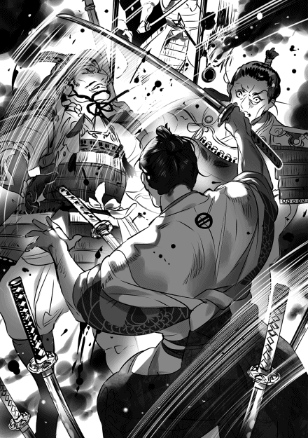
槍が現れた。倒れている死体を見て表情が変わった。だが怯えてはいない。槍を構え直すと、ゆっくりと近付いて来た。落ち着いている、自信が有るのだ、かなりの剛の者だろう。
「某は三好家家臣、青木市之丞良次にござる。足利義輝公とお見受け致す。御命頂戴仕る」
「参れ、手応えが無くて退屈しておったのじゃ。その方なら少しは楽しめそうじゃな」
挑発しても表情を変えない、手強い。
どやどやと武者が二人加わった。厄介な......。そう思っていると更に二人来た。どうやら皆死んだか。予もそろそろだな。
「青木市之丞じゃ、手出し無用ぞ」
後の四人が顔を見合わせて手を控えた。ほう、青木市之丞、余程の男だな。太刀を下段に構えた。市之丞、予の新当流を見せてやろう。
じり、じりと近付いて来る。そして小刻みに槍を扱いて突く素振りを見せた。一度、二度、三度、四度。動いては成らぬ。動けばそこを突かれる。耐えよ、耐えるのだ。自ら動くのではなく、相手が動くのを待ってその動くところを撃つ。勝機は一度だけだ。塚原小犀次に教わった事を忘れてはならぬ。
動いた！ と思う間もなく己が動いていた。槍が身体を掠めた、予の太刀が市之丞の脇の下に入った。呻き声と共に槍が落ちた。市之丞は予の心の臓を狙った。予は下段からの跳ね上げで市之丞の左脇の下を、鎧に覆われていない部分を狙った。そのために、ほんの僅かだが身体を右に傾けた。市之丞の槍は予の身体を掠めるだけで終わった。その差が勝敗を分けた。
「残念であったな、青木市之丞。下段に構えたのは槍を跳ね上げるためではない。その方の左脇の下を狙っての事だ」
「......御見事」
左腕はもう使えまい、殆ど断たれている筈。せめてもの情けだ。太刀を引き戻すと首筋を刎ねた。
どたりと音がして市之丞の身体が崩れ落ちた。爽快なまでの充実感が有った。戦うとはこれ程までに心地良いものであったか......。愚かであったな、当てにならぬ大名に文を送るなどせず、自ら兵を挙げるのであった。自ら戦わずして如何して勝つ事が出来よう。朽木も上杉も自ら戦っているではないか。そんな簡単な事に気付かなかったとは。例え敵わずとも大名達が自分に従わぬ等と愚痴を零さずに済んだであろう。予に敗れた市之丞も後悔はしておるまい。
四人の敵が遠巻きにこちらを見ている。今の勝負で怯えたらしい。困った奴らだ、未だ太刀は余っているのに......。
「さあ参れ、予を討ち取って後世までの手柄とするが良い」
優しく声をかけたが更に怯えた表情を見せた。弥五郎、その方と共に馬を走らせたかったな。軍を率いて青い空の下を何処までも、何処までも......。
永禄八年（一五六五年） 二月上旬 近江伊香郡塩津浜 塩津浜城 朽木基綱
冷えるな、城の外は雪が降っていた。部屋の中には火鉢が有るが、こいつはそれほど暖かくない、精々、手を温めるか餅を焼くくらいしか役に立たん。
「小夜、寒くは無いか？」
「いいえ、大丈夫でございます。これがございますから」
小夜が羽織っている綿入れ半纏を嬉しそうに指で示した。この世界ではまだ珍しい代物だ。去年の暮れ、新しい綿が収穫された時に作った。着物の上に半纏はちょっと格好悪いが、寒さには勝てない。小夜も綾ママも半纏を手放さない。マフラーでも作らせようか、着物はどうしても胸元が冷える。外に出る時だけじゃない、部屋で使っても良い。
「殿、これからどうなるのでございましょう？」
「さあ、分からんな」
小夜が不安そうな表情をしている。しかし分からんとしか言いようが無かった。永禄七年から永禄八年にかけて、この数カ月は事が多過ぎた。これからどうなるか不確定要素が多過ぎる。ただ朽木を取り巻く環境は確実に悪化した。と言うより、俺がこの世界に生まれてから朽木を取り巻く環境がウハウハになった記憶が無い、なんでだろう？
「でも公方様が殺されるなど......」
「以前にも有った事だ。嘉吉の乱では足利義教公が殺された。とりたてて驚く事ではない」
「まあ」
そんな非難するような目で見るな、小夜。足利義輝は史実でも殺され、この世界でも殺された。義輝には、この乱世を生き抜くために必要な何かが足りなかったのだろう。そんな奴は幾らでも居る、奴が将軍だったから皆が騒ぐだけだ。
永禄七年の十月から十二月は越前と丹波で戦が起きた。加賀の一向一揆勢が越前に乱入、朝倉式部大輔憲景の戦死後一つに纏まる事が出来なかった朝倉勢を殺しまくった。一揆勢に内通していた朝倉孫三郎、朝倉玄蕃助達も殺された。不倶戴天の仇だからな。一つに纏まっているならともかく、バラバラだったら後腐れ無く殺した方が一揆の国を造り易いとでも思ったんだろう。竹槍に首を刺して喜んでいたって言うんだから酷いもんだ。
越前の北半分から朝倉の勢力は払拭された。今では一揆勢の勢力範囲だ。そして残りの南半分はパニック状態になっている。一つに纏まろうと右往左往しているが上手く行きそうにない。このままなら春にジェノサイドがもう一度起きるだろう。領地を捨てて逃げれば良いんだが、その踏ん切りが付かないようだ。
土地は持って行けないからな。多分来年の後半には木の芽峠に一揆勢が来襲するだろう。鉄砲を増産させよう、場合によっては堺から買っても良い。最低でも二千丁は欲しい。それと兵も少し集めた方が良いな。国人衆に頼らなくても常時八千は保持したい。越前に三千を置いているから、あと五千を新たに雇う、難しくは無い。
丹波では三好方の内藤備前守宗勝が反三好勢力に大敗北を喫した。味方だと思っていた国人衆に裏切られての大敗北だ。討ち死にしなかっただけましだろう。丹波から内藤備前守宗勝と内藤氏は叩き出された。丹波は反三好勢力で一本化されている。これをもう一度三好の勢力下に置くのは容易ではあるまい。
そろそろ若狭を攻める頃かと思ったんだけどな。一向一揆の事を考えるとなかなか厳しい。年が明けると、丹波での三好勢の大敗北を聞いて河内、紀伊に勢力を持つ畠山高政が反三好の兵をあげた。三好長慶が病死し後を継いだのは養子の孫六郎重存、そして丹波で内藤宗勝が大敗北を喫した。三好の覇権が揺らいだと思ったのだろう。三好としても放っては置けない。三好孫六郎重存は三好実休、安宅冬康、松永久秀を主力とする討伐軍を編成して紀伊方面に送り込んだ。
この状況を喜んだのが義輝だった。三好打倒の日が近付いた、そう思ったのだろう。毎日大騒ぎだったそうだ。六角に文を出し朽木にも文を出した。あれだけやるなと言ったのにだ。学習能力どころか、危機意識さえもなかった。自分が殺されるなんて微塵も考えていなかったのだと思う。変な話だが三好長慶が義輝を甘やかし過ぎた。もう少し厳しく脅しておけば慎重になったのかもしれない。
そして、長慶と孫六郎重存は同じ人間ではない。孫六郎重存は義輝の行動を危険視したようだ。この時、孫六郎重存が恐れたのはドミノ効果で反三好運動が広がる事だったと思う。阻止するには煽る人間を処断するしかない、誰でもそう思うだろう。孫六郎重存は丹波遠征の名目で兵を京に集め始めた。
丹波を攻めるなら京に兵を集めてもおかしくは無い。そして一月二十一日、孫六郎重存は三好孫四郎長逸、三好右衛門大輔政勝、岩成主税助友通らと共に兵一万を率いて二条御所に攻め入った。史実より半年ほど早い。白昼の攻撃だ、闇に紛れて逃げるなんて事は出来ない。かなり手強く戦ったらしいが、最後は多勢に無勢だ。義輝側は全員討死した。この辺りは史実通りだ。
義輝殺害後、孫六郎重存は丹波に行く事無くそのまま京に留まっている。丹波の国人衆は親足利色が強い。義輝殺害で更に反三好感情が強まった。そして畠山との戦いは一進一退の状況で膠着状態だ。孫六郎重存が京から動かないのは京を空けるのが不安なのだろう。長慶死後、間違いなく三好の力は弱まっている。
次期将軍は未だ決まっていない。候補者すら名前が出てこない。孫六郎重存達にとって後継者を決める余裕も無く義輝を殺害したという事なのだろう。或いは三好家内部で誰を将軍にするかの意見が纏まらなかったか。義輝の弟覚慶、後の足利義昭は奈良一乗院で軟禁状態だ。松永久秀の息子久通、そして内藤宗勝が大和に戻って見張っている。そしてその下の弟、周暠は殺された......。
「御義爺様は如何御過しでしょう？ お気を御落としと伺いましたが......」
「御爺にとって人生の半分以上は足利と有ったからな。気落ちもするだろう」
御爺にとって足利は人生の選択肢だった。足利のために戦ってきた。その選択肢が滅びようとしている......。御爺の気持ちを思うとやり切れんな。
飛鳥井家からこの一件について文が来たのだが、そこには奇妙な事が書いてあった。襲撃の前日、義輝は危険を感じたのか二条御所を抜け出したらしい。避難しようとしたと書いてあるから、或いは朽木に逃げようとしたのかもしれない。だが、義輝の近臣がこのような行為は将軍の権威を失墜させると反対した所為で渋々二条御所に戻ったらしい。逃げていれば死なずに済んだだろう。っていうか、殺されたらもっと権威が落ちる。多分、止めた奴は三好が攻めてくるとは考えていなかったのだと思う。義輝だけじゃない、周囲も認識が甘いよ。
おそらく義輝は自分を殺そうとする計画が有る事を知ったのだと思う。三好内部に情報源が有ったのか、或いは三好側に将軍殺害に反対する人間が居て故意に情報を流したのか。将軍殺害は極秘事項の筈だ、三好家内部でも知っている人間は上層部の一部だろう。孫六郎重存本人と伯父二人、三好三人衆、松永兄弟。その辺の筈だ。もし情報が流れたのだとすると、将軍殺害に対し三好内部に意見の対立が有った事になる。今後、それが如何なるのか。広がるのか、収まるのか......。
「殿も元気を出してください」
「俺は元気だ」
鬱陶しいのが居なくなって清々したわ。
「皆心配しておりますよ」
「......俺は元気だ」
落ち込んでいるのは先が見えなくなったからだ。
「春齢内親王様の御降嫁も決まったのですし」
「そうだな。派手に祝ってやろう」
また金がかかるな。
春齢内親王の結婚相手が決まった。五摂家の一つ、一条家当主正三位権中納言一条内基。天文一七年生まれだから、俺や春齢内親王より一つ年上になる。良い相手だ、朽木の利益になる、ちょっと前までならそう思っただろう。だが今ではそう気楽には思えん。近衛の例も有るからな。公家は力が無いから反って油断ならん。
義輝は近衛家と縁が深かった。義輝の母、慶寿院は近衛尚通の娘だ。そして妻は近衛稙家の娘。慶寿院は近衛稙家の妹だから義輝は従妹と結婚した事になる。母親の慶寿院は義輝と一緒に死んだ、自害したらしい。だが義輝の妻は丁重に近衛家に帰されている。そして義輝の側室、小侍従は殺された。どうも妊娠していたらしい。
嫌な感じだよ、義輝の妻だけが助かったというのがどうにも気にかかる。近衛家の当主前久は将軍殺害計画を知っていたんじゃないか、義輝の妻である妹の保護と引き換えに将軍殺害を黙認したんじゃないか、そんな気がする。そして、近衛家の女を母に持つ義昭は奈良で軟禁状態だが、その弟の周暠は殺された。周暠の母親は近衛家の女ではない......。
「朽木も上手く行かぬが六角家も上手く行かぬな。小夜も心配であろう」
「はい」
小夜が視線を伏せ小声で答えた。去年の暮れから今年にかけて唯一上手く行った事は蝦夷地との交易だけだった。持って行ったものは全部高値で売れたし、昆布、干しナマコ等の海産物を山のように持ってきてくれた。安全保障は問題有りだが、経済は二重丸。朽木は何時もこれだ。素直に喜べんな。もう直ぐ三月になる。また北への交易船を出さなければ。
まあそれでも六角よりはましか。六角家は観音寺崩れから何一つ上手く行かない。今度は領内で争いが起きた。六角輝頼はその制圧が上手く行かず手間取っている。六角家の被官に小倉という一族がいる。蒲生郡に勢力を持つ一族で、それなりに分家も有り力を持っているのだが、一族の仲が良いとは言えない。本家の統制力が弱いらしく一族内に緊張が有った。昨年の十一月の事だが小倉氏の一族、小倉西家の山上城主小倉右京大夫が延暦寺領山上郷の年貢を横領した。
この事件、史実でも起きている。比叡山とのトラブルなんて後々面倒になるのは目に見えている。それでもやったという事は余程に困窮していたのだろう。或いは輝頼には何も出来ないと侮ったか。重臣達と輝頼の間が思うようでない事は、小倉右京大夫には分かっていた筈だ。
輝頼は当初小倉本家の小倉左近将監実隆に小倉右京大夫の討伐を命じた。だが、この討伐が失敗する。右京大夫は周辺の小倉一族を集め本家に抵抗、左近将監実隆は昨年の十二月に討ち死にする。ここで蒲生左兵衛大夫賢秀が出てくる。実は討ち死にした左近将監実隆は蒲生賢秀の弟だった。小倉本家に跡継ぎがいなかったので養子に入っていたのだ。その縁で蒲生賢秀が混乱を鎮めようとした。
本家当主である左近将監実隆の統制力が弱かったのは蒲生からの養子の所為も有るだろう。小倉一族の中には、本当なら小倉内部から選ぶべきだという反発も有った筈だ。騒動を起こした小倉右京大夫に味方する小倉一族が多かったのは、その所為じゃないかと俺は思っている。養子のくせに当主面するな、そう思う小倉一族が居たのだろう。
ここで輝頼が出てくる。輝頼は左近将監実隆が蒲生賢秀の弟だったと知らなかったらしい。騒動を蒲生賢秀が収めれば蒲生の影響力が強まる、それを避けたいと思ったのだろう。自ら小倉右京大夫の討伐軍を起こした。或いは自分の武威を示すという考えも有ったかもしれない。輝頼が何を考えたか、蒲生賢秀は当然分かっている。面白く無かっただろう。蒲生賢秀は輝頼の討伐軍には全く協力していない。
小倉一族の混乱は年が明け二月になっても解決しない。そしてつい先日、六角右衛門督義治が死んだ。病死と発表されたが誰も信じていない。義輝が死んだ事で後ろ盾が居なくなったと不安になったのだろう、義治を担がれて反乱など起こされては堪らんと輝頼が殺したようだ。噂では毒殺だったと言われている。葬儀はひっそりと行われた。輝頼は自分が六角家で必ずしも支持されているとは思っていない様だ。不安になっている。
三好が義輝殺害に踏み切ったのは、六角が混乱している事も影響しているだろう。丹波で内藤宗勝が敗れた、河内、紀伊で畠山高政が挙兵した。義輝は六角、朽木に文を出して三好包囲網を作ろうとしている。完成する前に司令塔である義輝を殺してしまえ。今なら六角は動けない、朽木は北を警戒している......。足利って、やってることはいつも同じだな。畿内で最も強い力を持つ大名を周囲の力を利用して倒す。戦乱が続くはずだよ。
将軍殺害の一件で上杉輝虎から文が来た。大分憤っていたな。面倒だから適当に返事をしておいた。でもなあ、将軍殺害で憤っている文の中で、俺も唐物欲しいとか、もっと朽木と交易を大規模に行いたいとか書くなよ。緊張感なんて欠片も無い手紙になってるじゃないか。あいつ、変な所で経済感覚が発達してるな。まあ交易そのものには反対じゃないから、良いよとは返事をしておいたが......。
永禄八年（一五六五年） 二月下旬 近江滋賀郡本堅田村 猪飼昇貞
「甚助殿、居られるか？ 孫次郎じゃ」
湖で鍛えた胴間声が聞こえた。相変らずの事よ。
「おう、居るぞ」
胴間声は儂も変わらぬの。互いの声が玄関と居間で聞こえるとは......。
「上がるぞ。又次郎殿も一緒じゃ」
「おう、上がられい」
のしのしと音がして馬場孫次郎殿と居初又次郎殿が姿を現した。居間に入り、どんと音を立てて腰を下ろす。相変らず遠慮の無い男達だ。
「如何された？」
「話しが有っての、寄らせてもらった」
「さっきまで我ら二人、研屋に会っていたのよ」
研屋道円か......。
「そんな顔をするな、甚助殿。儂らも会いたくて会ったのではない、向こうから訪ねて来た」
「向こうからか？ 孫次郎殿」
「うむ」
研屋道円、熱心な一向門徒で寄合の顔役でもある。だが儂らと懇意というわけでは無い。むしろ互いに避け合う仲だ。その道円が訪ねて来た？
「妙な事を言いおった。堅田の水軍は朽木の水軍に勝てるかと」
「何と答えたのだ、又次郎殿」
又次郎殿がニヤリと笑った。
「負けるから止めておけと言っておいたわ」
皆で顔を見合わせ声を上げて笑った。
「そんな事を聞いて来るとは、越前はもう一揆持ちの国か。目処は着いたという事だな」
「敦賀を除いてな」
皆で顔を見合わせた。
「連中、朽木と戦いたいらしい」
「加賀の門徒共に頼まれたか？」
儂が問うと又次郎殿が首を横に振った。
「それも有るだろうが、本当の所は朽木の領地を一揆の物としたいのよ。涎が垂れる程に旨味が有ろう。あそこは宝の山じゃ」
「又次郎殿の言う通りよ。それにあそこが一揆の物になれば、北近江から越前、加賀と一揆の勢力下になる」
「欲深な、今のままでも十分に利を得ていよう。朽木様様ではないか」
儂が吐き捨てると二人が頷いた。朽木が関を廃した事で物がこれまで以上に動く様になった。堅田は十分にその余禄を得ている。
「孫次郎殿、又次郎殿。真面目な話、朽木には簡単に勝てまい」
儂が問うと二人が顔を見合わせた。
「船の扱いで言えばこちらの方が上であろうな。だが数で言えば朽木の方が上じゃ」
「朽木が堅田に攻め込んでくれれば勝てよう。地の利はこちらに有る、数はさほど問題にはならぬ筈じゃ」
孫次郎殿、又次郎殿が答えた。
「攻め込んでくるかな？ 孫次郎殿、又次郎殿」
二人が顔を顰めた。
「林与次左衛門、慎重な男だからの。難しかろう」
「渡辺半左衛門、入江小二郎、安養寺猪之助。与次左衛門の配下も血の気が多いとは聞かぬ」
二人が首を横に振った。
「ではこちらから攻め込めば？」
二人が顔を顰めた。
「難しいな。朽木領は広い。こちらは敵を求めて動く事になる。舟木、海津、大浦、塩津浜。拠点が多く船の数が多い向こうが有利よ、常に敵の新手を気にしなければならん。それに儂らの留守を狙う事も考えねば......」
「一度たりとも負ける事は出来ぬ。負ければ敵は堅田に押し寄せよう。船の数を減らしてしまっては堅田は守れぬ」
「となると睨み合いか」
孫次郎殿、又次郎殿が頷いた。何度話し合っても答えは同じだ。互いに攻め込んでは不利、睨み合いになる。
そして二人が口に出さぬ事が有る。その気になれば朽木は堅田に対して荷止めをしかねぬという事だ。湖を使わずとも朽木谷を使えば京に荷を届ける事は出来よう。効率は悪いが堅田に打撃を与える事は出来る。だが、その時は堅田も朽木に対して荷止めをする事になる。西からの物が止まる。どちらが先に音を上げるかの戦いになるだろう。
「無理はせぬ方が良い」
「同感じゃ。坊主どものために危ない橋を渡る事は無いわ」
二人が口々に戦いたくないと言った。儂も同じ想いだ。
「儂も朽木とは戦いたくない。弥五郎殿は面白いからの」
二人が声を上げて笑った。
「そうじゃのう、あれは武士と言うより商人だろう」
「同感、同感。立派な商人よ。今浜に東近江最大の湊町を造ろうとは、武士では考えぬ」
「それより危ないのは堅田であろう。叡山が如何思うか」
二人の顔から笑みが消えた。堅田は比叡山延暦寺の庇護下で発展して来た。にも拘らず、今の堅田は本願寺の強い影響下にある。当然だが、その事を比叡山延暦寺は不快に思っている。そして今、越前が一揆の手に落ちようとしている。越前には叡山の所領が有った筈......。
「場合によっては堅田の方が叡山と朽木に叩き潰されかねぬか」
「欲の皮を突っ張らせている場合ではないの。もう一度堅田大責が起きかねん」
孫次郎殿、又次郎殿が顔を曇らせた。
「これまで滋賀郡は叡山と六角家の争う場だったが六角の勢いが後退し朽木の勢いが強くなった。朽木の目は北を向いているが、我らに声をかけてきた事を考えれば西も見据えている。下手な真似をすれば口実を与えかねぬ」
二人が頷いた。
朽木の怖い所は動きが読めぬ事だ。浅井を滅ぼすのも早かったが、敦賀を攻め獲ったのも早かった。朽木の次の狙いは若狭だと思うが滋賀郡という事も有る。海を狙うか、淡海乃海を狙うか。海なら交易を、淡海乃海なら畿内への物の流れを押さえるつもりだろう。どちらも朽木にとっては旨味が有る。滋賀郡なら叡山と事を構える事になるが......。果たして......。
永禄八年（一五六五年） 四月上旬 近江伊香郡塩津浜 塩津浜城 朽木基綱
「越前の雪が溶けたか」
「はい」
「では加賀の門徒共が動き出すな」
俺が問うと重蔵が頷いた。
「おそらくは。田起こしを行い田植えが終わるのが五月の下旬から六月の上旬でございましょう。それから九月の上旬までは兵を動かせまする」
頭が痛いわ。重蔵、十兵衛、半兵衛、上野之助も顔を顰めている。
「朝倉は一つに纏まらなかったのだな」
「残念ながら」
「では皆殺しだな。首を竹槍に刺されて晒し者にされるだろう」
越前の連中も逃げれば良いのにな。若狭の武田を見習え。三好の軍勢が若狭に攻め込むと越前に逃げ、加賀一向一揆が攻め込むと同族の甲斐の武田の所に逃げた。
あそこも反朽木感情が強いからな。多分俺の悪口で盛り上がっているだろう。でもな、若狭に攻め込んだのは三好で越前に攻め込んだのは加賀の一向一揆だ。信玄を痛めつけたのは越後の上杉。武田が甲斐一国と諏訪郡だけの三十万石に足りない身代になったのは俺の所為じゃない。なんで俺だけが悪く言われるんだ？
半兵衛が息を吐いた。大丈夫だ、半兵衛。良い点もある、朝倉が越前から居なくなる事だ。いずれ越前を切り取る時は変な配慮をせずに済む。信長が越前制圧後に桂田長俊に越前を任せたのもそれが理由だろう。どうせ統治に失敗して一揆に占領されると見たのだ。越前一向一揆の前に朝倉の旧家臣は殆ど没落した。その後、信長は越前を再征服し、一揆勢を皆殺しにしてから柴田勝家に越前を与えた。笑いが止まらなかっただろう。俺もそんな風に行きたいものだ。
「今年の内に木の芽峠に押し寄せて来るだろう、早ければ八月から九月になる筈だ。兵を新たに雇い入れている。朽木本家だけで八千は動かせるようにしたい。越前の兵を除いてな。鉄砲も八門を使って堺から買い入れている。夏になるまでに二千丁は保有出来るだろう」
重蔵に視線を向けると〝大丈夫〟というように頷いた。
「木の芽峠の守りを考えれば十分だと思いまする」
上野之助、その言葉、信じているからな。
「新たな公方様は決まりませぬか？」
「決まらぬ。おそらくは畠山との戦いが終わってからになるだろう」
俺が答えると十兵衛が頷いた。三好、畠山の戦いは三好が少しずつ優勢になっている様だが、まだ終結までは行かない。畠山高政はしぶとく抗戦している。こいつも俺に一緒に戦おうなんて文を寄越してくる。うんざりだわ。一向一揆の相手をするから無理だと返事をしておいた。
「三好孫六郎には実権は無いようですな。叔父二人無しには決定出来ぬとは」
「十兵衛殿、まあ事が事です。一人で決めるのは難しいでしょう」
イケメン十兵衛が嗤うと御坊ちゃま半兵衛がおっとりとフォローした。この二人、絶妙のコンビだな。史実で半兵衛が十兵衛に仕えていたらどうなったんだろう？
「しかし、次の将軍家は平島公方家の義親様で決まりでは有りませぬか」
「そうとは限らぬ。義輝公の弟君、一乗院覚慶様がおられる」
「義輝公を殺しておいてですか？ 十兵衛殿」
「だから良い。三好に逆らえばどうなるか、よく分かる筈だ」
イケメン十兵衛と秀才上野之助、こっちは完全な師弟関係だな。しかし十兵衛の言う事には一理ある。史実でもこの世界でも一乗院覚慶、後の足利義昭は殺されていない。カードとして十分に利用価値が有ると見られているのだ。
本命視されている平島公方家の義親は十一代将軍足利義澄の孫にあたる。義澄の子、足利義維の子だ。義輝、義昭の兄弟にとっては従兄弟だから、後の十四代将軍、足利義栄だと思う。おそらく改名するのだろう。今は父親の義維と共に阿波の天龍寺の荘園平島荘に居る。義維、義栄親子が世間から平島公方家と呼ばれているのはその所為だ。この義栄、史実では直ぐに病死するが、この世界ではどうなるのか......。
「殿、一向門徒と思われる人間が頻繁に堅田を訪れております」
重蔵の発言に皆が顔を顰めた。
「加賀からか？」
「いえ、本願寺からも」
皆の顔が更に渋くなる。センブリでも飲んだような表情だ。ホント、一向門徒って迷惑な存在だわ。
「殿、堅田の海賊衆とは如何なりましたか？」
十兵衛が不安そうな表情をしている。こいつは越前に居たからな、一向門徒の怖さを十二分に知っている。
「与次左衛門を通して会った事はその方等も知っていよう。感触は悪くなかった。その後も与次左衛門は時折堅田の海賊衆と会っている。堅田の海賊衆は朽木と戦う事には消極的だ」
重蔵、十兵衛、半兵衛、上野之助。誰も納得していない。仕方ない、俺だって不安だ。
「与次左衛門から提案が有った」
四人が俺を見た。
「堅田に対して荷止めをしてはどうかと。朽木の荷は朽木谷を使って京へ送る。堅田は通さぬ」
今度は四人が顔を見合わせた。四人とも訝しげな表情だ。
「効果が有るので？」
「ある程度は期待出来よう。荷止めは堅田が嫌がる事の筈だ。だがな、重蔵。それをやれば朽木でも不満の声が出るだろう。湖を使って船で荷を運ぶのと馬で陸路を使うのでは、速さも運べる量も全然比較にならぬ」
「......」
「俺は与次左衛門にそれを言ったのだがな、与次左衛門は噂を堅田に流すだけでも効果は有ると言っている」
皆考え込んでいる。言ってみれば、こいつは経済制裁みたいなもんだ。何処まで効果が有るのか......。
「堅田を硬化させるという事は有りませぬか？」
「十分有り得ると思うぞ、半兵衛」
半兵衛の危惧はもっともだ。経済制裁された国ってのは大体が大人しくなるよりも反発する。第二次世界大戦での日本を思えば分かる事だ。だが今回の場合経済制裁ではなく経済制裁の警告だ。しかもあくまで噂を流すだけの事。朽木が露骨に警告するわけではない。連中の頭を冷やさせるアナウンス効果が有るかもしれん......。
「堅田がそれでも事を構えた時は？」
上野之助が問うと皆が俺を見た。
「潰すしかあるまい」
「叡山と事を構える事になりますぞ、殿」
「已むを得んな、上野之助。放置すれば舐められるだけよ。碌な事にはならん。叡山が立ち塞がるというなら叡山も潰す」
四人が顔を見合わせた。
「某は殿の御考えに賛同いたしまする」
「十兵衛殿！」
半兵衛、上野之助が咎めるように声を揃えて上げた。
「朽木が近江で力を伸ばそうとすれば遅かれ早かれ寺社、山門との対決は避けられぬ。そうではないか？」
十兵衛が問うと半兵衛、上野之助が渋々頷いた。重蔵も大きく頷く。こいつ、最初からその気だな。
「堅田には某が噂を流しましょう」
「頼むぞ、重蔵。......それにしても越前で一向門徒を叩き近江で叡山と戦うか。仏敵朽木と罵られような」
俺が言うと四人が小さく笑った。俺も笑わざるを得ん。何で信長の役を俺がやらなければならんのか。と言うより十兵衛の言う通りなんだ。近江で力を付けようとすれば叡山との対決は避けられない。史実では浅井も六角もそれを避けたんだろう。滅んだのは当然だな。
叡山を潰し六角を排しつつ滋賀郡を獲る。京への出入り口を確保する事になるな。城が要る。大津、いや大津では京に近過ぎるか、三好を必要以上に刺激しかねない。となるとやはり坂本か。堅田、叡山、六角を睨みつつ京への出入り口を確保する......。誰に任せる？ 五郎衛門？ 駄目だな、白ゲジゲジにはいざという時に別働隊を率いる役目をさせねばならん。となると......、頭が痛いわ。何時も人材不足で悩む事になる。いっそ左門にでも任せてみるか。
「十兵衛、今浜の城は如何か？」
「普請は順調に進んでおりまする。坂田郡の国人衆が協力的で」
「そうか」
嬉しそうだな、十兵衛。坂本にも城を築かせてやる、楽しみにしていろ。
「六角左京大夫が不満を漏らしておりまする。小倉一族の反乱も鎮圧した以上、油断は出来ませぬ」
「......そうだな」
気の重くなる事を言うな、重蔵。
六角左京大夫輝頼が小倉一族の反乱を鎮圧した。三月の末の事だから騒動が起こってから五カ月もかかって鎮圧したことになる。反乱を起こした小倉庶家は潰され六角家の蔵入地となった。当主を失った小倉本家には故後藤但馬守の二男が養子に入る事になったらしい。この人事は好評のようだ。故後藤但馬守は国人衆の受けが良かったからな
五カ月かけての反乱の鎮圧。余り自慢にならんと思うが輝頼本人は満足らしい。初陣を勝利で飾った、そう思っているようだ。もっとも六角家の重臣達はホッと一息、そんなところだろう。舅殿から来た文には何処となく安堵の色が見える。これ以上領内の問題でガタガタしたくない。そう思っているようだ。
また騒ぐんだろうな、坂田郡を返せとか城を建てるなとか。六角家に居る幕臣達は一乗院覚慶を救出したいらしい。救出して観音寺城に迎えれば六角家の威信が上がるとか輝頼に訴えているとか。大舘達も今のままでは立場が無いからな。義昭を迎えて立場を作りたいわけだ。当然だが舅殿を始めとする重臣達は反対だ。今の六角家にそんな力は無いと反対している。ただ輝頼は乗り気だ。俺なら絶対に嫌だけどな。
輝頼を抑えるには味方が必要だ。だが信長は相変わらず美濃で手古摺っている。時折伊勢長島にも兵を出しているようだ。三河の一向一揆への支援を断つためのようだが、こっちも上手く行かずにいる。もしかすると尾張への飛び火を怖れているのかもしれない。片手間じゃ美濃も長島も落ちる事は無い。......墨俣に城を築かせよう。墨俣は交通、戦略上の要地で稲葉山城にも近い。美濃の国人衆への心理的な打撃も大きいだろう。墨俣から西美濃に圧力をかけ調略で寝返らせる。西美濃が織田の物になれば輝頼も龍興も大人しくなる筈だ、......よな。
永禄八年（一五六五年） 四月中旬 尾張春日井郡小牧村 小牧山城 木下秀吉
「失礼致しまする、藤吉郎にございまする」
戸を開け部屋の中に入ると、既に殿と丹羽五郎左衛門尉殿が居られた。
「遅い！」
不機嫌そうな信長様の声だ。身の竦む様な想いがした。最近の殿は御機嫌が悪い。美濃攻め、伊勢長島の一向一揆、どちらも埒が明かぬ。
「申し訳ありませぬ」
「寄れ！」
「はっ」
慌てて近寄った。
「朽木から文が来た」
朽木から文？ 丹羽殿を横目で見ると丹羽殿も驚いておられる。殿は我ら二人が揃うのを待って話をされたのか。
「同盟を結びながら美濃攻めを手伝えぬ事、済まぬと書いてあった」
はて、如何いう意味であろう？ 元々朽木の目は越前に向かっておる。美濃攻めには余り力になれぬと言っていた筈。殿は多少なりとも一色の目を逸らせればと同盟を結ばれたが......。
「多少なりとも手伝いたいと言ってきておる」
「兵を出すとの事で？」
丹羽殿が殿に確かめると、殿が〝違う〟と言って首を横に振られた。朽木は兵を出さずに手伝うのか？
「美濃の攻略案を寄越しおった」
思わず殿の御顔をまじまじと見てしまった。朽木弥五郎、軍略家として高い評価を得ているが......。
「して、朽木様は何と？」
「うむ。美濃の墨俣に城を築けと申しておる」
「墨俣に城を」
丹羽殿と顔を見合わせた。眼の色が暗い、丹羽殿は無理だと思っておいでだ。
「墨俣に城を築き、そこを拠点に西美濃を攻略せよと書いてある。兵で脅し調略で切り崩せとな」
確かにその通りだが......。
「しかし殿、墨俣は美濃領にございますぞ。一色がこちらの城普請を黙って見ている筈が有りませぬ」
「五郎左、文には続きが有る」
続き？ 殿の御機嫌は悪くない。殿は墨俣築城が可能だと思っておいでだ。朽木は何を言ってきた？
「先ず木曽川沿いに勢力を持つ川並衆を味方にしろと書いておる」
殿が俺を見た。なるほど、ここに呼ばれたのはそれが理由か。小六殿や将右衛門殿を味方に付ける為か。
「次に城の絵図面を作り、材料は尾張領内で寸法通りにあつらえよと書いてある」
「尾張領内で？」
「そうだ、五郎左。そして夜のうちにいかだに組んで流し、墨俣で拾い上げるのだ。後は組み立てるだけよ」
なるほど、それなら時はかからぬ。そして川並衆の協力が有れば難しくは無い。巧い事を考えるものよ。
「先ず柵を造る。柵だけなら左程時間はかかるまい。城はその後だ」
丹羽殿が唸り声を上げた。それを聞いて殿が上機嫌に御笑いになった。
「藤吉郎、川並衆を味方に付けよ」
「はっ、必ずや」
殿が満足そうに頷かれた。
「五郎左、その方に墨俣築城を命ずる。藤吉郎は五郎左を助けよ。両名協力して墨俣に城を築くのだ」
「はっ」
殿がまた御笑いになった。美濃攻めに光明が見えた、そうお考えの様だ。失敗は出来ぬな、何としても川並衆を味方に付けねば......。
永禄八年（一五六五年） 七月上旬 近江伊香郡塩津浜 塩津浜城 朽木小夜
「殿、殿が織田様に美濃攻めの秘策を御教えになったというのは本当ですか？」
「誰が言っているのか知らぬが、それは嘘だな」
興味無さそうな御顔。弥五郎様は嘘を吐いている。
「皆が言っております」
「困ったものだ、それは真実ではないと皆に言っているのだが」
もう一押し。
「御隠しにならなくても良いでは有りませぬか。織田様が美濃に城を築かれたそうですが、大変難しい場所で殿の助言が無ければ築く事が出来なかったとか」
「別に隠してはおらん。織田殿も城くらい築くだろう」
「本当ですか？」
「本当だ」
「ですが、先日は織田様から大層な贈り物が......」
「小夜、それ以上は言うな」
「殿......」
弥五郎様が困った顔をしている。
「朽木は織田と同盟を結んだが越前を重視している。美濃に兵を出す余裕は無い。それが諸国の朽木を見る目だ。だが、朽木が策を講じたとなれば一色は朽木を抑えるために六角と結びかねん。危険なのだ」
「朽木は三十万石を領するとはいえ近隣諸国では一番小さい。生き残るには慎重さが要る。先日の贈り物は春齢内親王様の御降嫁の祝いの品だ。それ以上ではない。周囲で妙な事を言う人間が居たら窘めてくれ」
「......はい」
ただ知りたかっただけなのに、それも許されないなんて......。それに一色家と六角家が結ぶ？ 朽木を敵として？ そんな事が本当にあるのかしら......。
「そんな顔をするな。六角家の重臣達は一色と結ぶ事に消極的だ。だから余計に変な噂を立てて欲しくないのだ。左京大夫を刺激したくない」
「はい」
弥五郎様がフーッと息を吐いた。そして私の顔を見て笑みを浮かべられた。
「明から船が来た。生糸や絹織物も沢山持ってきている。ここに運んでくるから、そなたも好きな物を選んではどうだ。一緒に母上の物も選んでもらえれば嬉しいが」
「宜しいのですか？」
「構わんぞ。女房殿を美しく着飾らせるのも夫の務めだからな」
「まあ」
弥五郎様が軽やかに笑う。弥五郎様の気遣いが嬉しかった。日置助五郎殿が姿を見せた。
「殿、清水山城の御隠居様と舟木城の蔵人様がお見えです」
「分かった。助五郎、ここへ通してくれ」
「殿、私はこれで」
「構わぬ、ここに残れ」
「......はい」
良いのかしら？ 御義爺様、大義叔父上様が御一緒ならば表向きの話だと思うのだけれど......。
御二人が部屋に入って来たけれど、私がいる事に何も言わない。そのまま話し合いが始まった。
「如何した、弥五郎。急な呼び出しとは」
「御爺、坊主共の動きが速い。朝倉の残党は早ければ今月中にも越前から一掃されよう」
御二人が顔を見合わせた。
「では敦賀へ？」
「うむ。早ければ来月には敦賀に来る、俺は十日以内に敦賀へ向かう。国人衆にも触れを出した」
一向一揆の軍勢が敦賀に......。
「連中、逸っているようだ。敦賀には金が有る、富が有ると言っているらしい。敦賀には明船が五隻来ている。狙いはそれだろうな」
「......薄汚い泥棒めが！」
「奴らが仏僧などとは、......世も末ですな！」
「負ける事は出来ん。これまでやってきた事が全て無駄になる」
御義爺様と大義叔父上様が憤っている。弥五郎様は御辛そうな御顔。弥五郎様は追い詰められている......。
「一揆勢は二万五千と聞きましたが？」
大義叔父上様の言葉に弥五郎様が首を横に振った。
「三万に近いそうだ。敦賀に押し寄せる頃には三万を超えていよう。こちらは半分以下の軍勢で戦う事になる。気の重い話だ」
大義叔父上様が息を吐いた。
「清水山城と船木城にはそれぞれ千の兵を置く。堅田の動きが怪しい」
「荷止めの噂は効かぬか？」
弥五郎様の顔が歪んでいる。
「与次左衛門の話では猪飼達堅田水軍の棟梁は朽木と事を構える事に反対したらしい。だが、あそこは熱心な一向門徒が多いからな、独断で動くかもしれん。御爺達に兵を分けるのは念のためだ」
「叡山と事を構えるのか？」
御義爺様の言葉に思わず〝叡山と〟と声が出た。でも誰もそれに答えない。でも叡山と事を構える？
「堅田が動けば必然的にそうなる」
御義爺様と大義叔父上様が御顔を見合わせた。
「退く気は無いのですな、殿」
「無い。俺が退けば連中が前に出るだけだ。叡山はそれを当然と思っているだろう。だから俺が前に出る。幸い織田が墨俣に城を築いた事で一色は動けぬ。六角も単独では動くまい。今なら戦える」
また御義爺様と大義叔父上様が御顔を見合わせた。そして頷く。
「分かった。朽木の当主はお前だ。お前の思う様にやれ」
「某は殿に何処までも付いていきまする」
弥五郎様が頷いて私を見た。
「そういう次第だ、小夜。何が有っても驚かぬ覚悟だけはしておいてくれ。例え俺が死んでもな」
口を開く事も頷く事も出来なかった。震える事すらも......。
永禄八年（一五六五年） 八月下旬 越前南仲条郡 木の芽峠 朽木基綱
鉢伏城、観音丸城、木ノ芽峠城、西光寺丸城。木の芽峠を守る城が並び立つ。その前に木の芽峠を塞ぐ様に朽木軍が陣を布いていた。城を攻略する、或いは木ノ芽峠を突破しようとするなら朽木軍を打ち破らなければならない。一揆勢が朽木軍を無視して城攻めを行えば、城と朽木軍から攻撃を受けてとんでもない損害を出すだろう。
朽木軍の前方には三重の馬防柵を築き、簡単には敵が突破できないようにしてある。側面にも三重の馬防柵が有る。馬防柵に守られている朽木軍を打ち破るのは容易ではない。朽木の鉄砲隊は二千丁、七百、七百、六百の三段撃ちで敵に大きな損害を与えられる筈だ。この世界では長篠の戦は起こらない。代わりに木の芽峠の戦いが鉄砲連射の戦いとして有名になるだろう。
朽木本家の兵が城の兵も含めて約一万、国人衆の兵が約三千、合わせて一万三千。俺も一万を超える軍を率いるようになったか、などという感慨は全く無い。八百メートル程先、この時代だと、大体八町先に陣を布いている一向一揆勢の大軍は如何見ても朽木軍の倍、三万以上は居る。どちらかというと倍というより三倍に近いな。涙が出そうな程に有難い現実だが、頭の痛い現実はもう一つ有った。
「五郎衛門、雨だ」
「雷が鳴っております。風も強い、これは嵐ですな。大分荒れそうで」
暢気な声を出すな、白ゲジゲジ。分かってんのか？ これじゃ朽木の強みの火力が役に立たないじゃないか。何のための馬防柵だと思っている。木材集めるのだって大変だったんだぞ。兵糧方の直綱、輝孝叔父達と新太郎、伊右衛門が苦労して集めてくれたのに......。
さっきまで晴れていたのにな。いきなり風が出始めたと思ったら、急に暗くなってピカピカゴロゴロ鳴り始めた。まさかとは思うが台風が越前を直撃したのか？ 時期的に有り得ない事じゃないが......。
「間もなく日が暮れますぞ。雨も激しくなりましょう。この天候では戦は無理です。敵も避難しているようです。こちらも兵を避難させなければ」
「上の城に入れられるのは精々四千から五千。雨が酷くなれば城に上がるのも容易では有りません、急ぎましょう。残りの兵は哀れだが木陰にでも避難させて休ませないと」
半兵衛と十兵衛が口々に兵を避難させろと言い出した。ここで夜襲を考えた俺は非常識なのか？
「軍議を開く、皆を集めろ」
〝殿！〟と咎める声が幾つか上がったが無視した。
「重蔵、敵の動きを確認せよ。敵が本当に雨を避けるか、この機に攻撃をかけて来るか、それによってこちらの動きを決める」
「はっ」
重蔵が動く。それを見て已むを得ない、そんな感じで人が動き出した。雨が強くなってきた。小半時、現代なら三十分程で朽木本軍の武将達、国人領主達が集まって来た。
雨中の軍議だ、床几は無し、雨に打たれながら立ったままの軍議になった。天候はさらに悪化、人の顔も判別出来ない程の暗さだ。そして叩き付けるような雨と風。それに負けないように声を張り上げた。
「今重蔵に敵の動きを確認させている！ 敵がこの嵐を避けようとするのなら敵に攻撃をかける！ 敵が押し寄せてくるようなら、ここで迎え撃つ！」
「殿は敵が押し寄せて来るとお考えですか？」
驚くような口調だ、声からすると多分井口越前守だろう。
「俺ならやる。朽木の鉄砲は役に立たん。となれば数で勝る一揆軍が優位だ。違うか？」
誰も何も言わない。反対なのか、賛成なのか。まさか呆れている？ 有りそうだな。
「敵が嵐を避けようとするなら攻撃をかける！ この嵐が我らの動きを隠してくれよう！ 我らは敵を正面から、城の兵二千も山を下り敵の側面から背後を突く！ 敵が混乱したら裏切りだと叫ぶのだ！ 越前衆が裏切ったと！ そしてもう駄目だ、逃げろと叫べ！」
「......」
「鉄砲隊二千は城を守れ！ そこでなら鉄砲が使える。田沢小十郎、守山作兵衛はここに留まり陣を守りつつ木の芽峠を確保せよ！」
「はっ」
命令を出している最中に重蔵が戻って来た。何人か部下を連れている。
「殿！ 一揆勢は嵐を避け、それぞれに休んでおります！ こちらが攻めて来るとは思っておらぬ様子にございまする！」
「良し！ 半刻後、出陣する。馬には枚を噛ませよ！」
先陣は相木市兵衛、小泉宗三郎が志願してきた。信濃から来た新参だからな、ここで手柄を立てて信頼を得たいらしい。同士討ちを避けるために合言葉を定めた。〝空〟と〝海〟。勝てば有名になるだろう。
酷い事になった。嵐が更に強まった、暴風雨に近い。幸いなのは追い風な事だ。風と雨に押されるようにして人も馬も進んでいる。足元の泥濘がかなり酷い。走る事が出来ずに小走りに急ぐように進軍している。主税、助五郎、重三郎、平四郎、陣八郎も無言で続く。以前の様に喋る事も無い。大分親父達に絞られている様だ。少しはましになって来た。そろそろ奉行の下、或いは軍略方、兵糧方にでも付けて実務に関わらせるか。
出来るだけ早くこの戦を片付ける。晴天下での鉄砲連射の方が容易く勝てるだろう。だが、鉄砲の場合は敵の来襲を待ち受ける事になる。加賀の一向門徒が単独で朽木と相対するなら良いが、堅田が動いている可能性が有る。他にも六角、三好が居る事を考えると早めに片付けたい。それに美濃の一色、あいつも今じゃ墨俣の一件で朽木を恨んでいるとか。四面楚歌だな。
それにしても酷い戦だ。雨風も酷いが視界が悪い。夜だから暗いのか天候が悪くて暗いのか、さっぱり分からん。時折光る稲妻が唯一の明かりだ。その時だけ僅かに周りが見える。先頭の部隊は八門が案内している筈だから迷ってはいないと思うが......。前方で喊声が上がった！
「五郎衛門！」
「殿！ 始まりましたぞ！」
「遅れるな！ 一揆勢を叩き潰せ！」
声を張り上げると周りから声が上がった。進軍の速度が上がる、皆が勝てると思いだした。逸っているのだ。それでも足を泥に取られる。思う様に馬を進められない！
別な方向でも喊声が上がった、そして稲妻が光る。おそらくは城から降りた連中だろう。方向からすると鉢伏山の高野瀬備前守か、或いは西光寺丸の芦田四郎左衛門だ。続いて逆方向からも声が上がる。こっちは田沢又兵衛、室賀甚七郎だろう。両脇を突いた様だ、敵も混乱する筈だ。勝機だ！
「敵は混乱している！ 合言葉を忘れるな！」
五郎衛門の怒鳴り声に皆が〝おう〟と答えた。俺が言おうと思ったのに......。進むにつれて刀の討ち合う音、悲鳴、怒号、断末魔が聞こえてきた。
「逃げるな！ 立ち向かえ！ うぎゃっ、......おのれ！」
「加賀へ帰れ！」
「裏切りだ！ 越前衆が裏切った！」
「もう駄目だ！ 逃げろ！」
聞こえる、いや聞こえるように言っているのか。音が遠ざかろうとしている。逃げようとしているのか？ 光った！ 敵が崩れている！
「五郎衛門！」
「殿、敵は崩れましたぞ！」
「逃がすな！ 追え！」
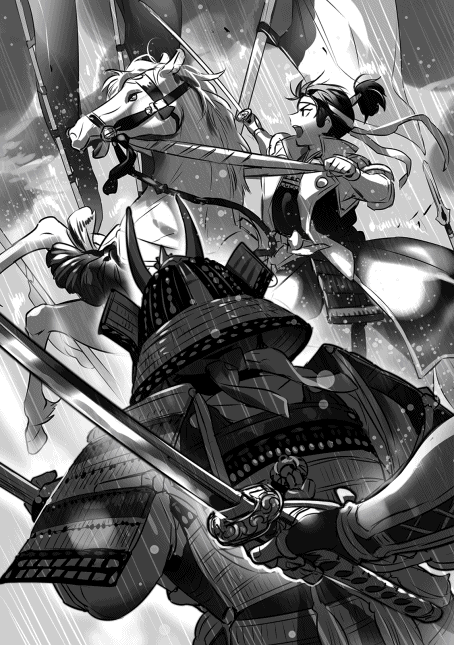
「追え！」
俺と五郎衛門が〝追え！〟と言うと、皆が口々に〝追え〟、〝逃がすな〟と言いながら敵に向かった。
永禄八年（一五六五年） 八月下旬 越前南仲条郡 木の芽峠 日置行近
「追え！ 追え！」
殿が声を張り上げた。悪い癖が出ている、追撃戦になると先頭に立ちたがるのだ。皆を励まそうとしての事だろうが大将に相応しい振る舞いとは言えない。
「殿！ 逸ってはなりませぬぞ！」
「逸ってはおらぬ！ 追え！ 追うのだ、一揆勢を叩き潰せ！」
殿が馬腹を蹴った！
殿の檄に煽られたのか、皆が口々に〝追え〟と言い出した。光った！ 一揆勢は背を見せ、味方は後方から包囲する様な形で一揆勢を攻撃している。追撃戦だ。左からは高野瀬備前守、芦田四郎左衛門、右からは田沢又兵衛、室賀甚七郎が喰らいついている。高野瀬、芦田、室賀、家を興そうと必死だな。悪くない。彼らが両脇から攻撃すれば、一揆勢は包囲される恐怖から足を止めての抵抗は難しい筈だ。
「五郎衛門！ 一揆勢が逃げ始めたぞ！」
うむ、戦況は見ておいでだ。だが......。
「油断はなりませぬぞ！ 前に出るのは御控え下され！」
「分かっている！ 子供扱いするな！ 追え！」
分かっておられぬ！ 殿を失えば忽ち朽木家は混乱し他家に狙われる所になろう。大方様もどれだけ悲しまれるか......。
雨が激しい、風が荒れている。風と雨に背を叩かれながら馬を走らせた。だが地面がぬかるむ、跳ね上がる泥を受けながら前に進んだ。徒歩の者の中には転ぶものも居るだろう。だが転べば後の者に踏み潰される。勝っているこちらは余裕が有る故、少なかろうが一揆勢は逃げるので必死だ。踏み潰される者は多い筈、我らに殺されるよりも味方に踏み潰される者の方が多いかもしれない。
「敵の声が聞こえぬぞ！ 敵は逃げるので精一杯だ！ 追え！」
「追うのだ！ 追え！」
殿の檄に合わせて味方を励ました。闇の中、敵の姿は見えぬ。だが確かに声が聞こえぬ。風の所為だけでは無い、敵は声をこちらに向かって出していない、背を向けているのだ。一揆勢は逃げている！
光った！ 一瞬だけ戦場が見えた！ やはり敵は逃げ、味方は追っている。勝った！ この目で確信した！ もうここから敵が挽回するのは不可能だ、後はこの勝利を大事にせねばならぬ！ 朽木は、いや殿は朝倉を滅ぼした一揆勢に勝ったのだ！ しかも三倍近い相手に！
「殿！ 勝ちましたぞ！」
「......」
「燧城までですぞ！」
「......」
「それ以上は保ちませぬぞ！」
「分かった！」
燧城までは二里近く有る筈だ。この嵐の中、泥濘の道を進むのだ。燧城までが精一杯だ。
一刻後、朽木勢は燧城を占拠した。将も兵も馬もへとへとだった。
永禄八年（一五六五年） 九月上旬 越前敦賀郡 金ヶ崎城 朽木基綱
「堅田は朽木の船を差し押さえたと言うのだな」
「はあい。困った事ですわ」
ニコニコしながらちょっと気の抜けた様な答えをしたのは、八門の当麻葉月という女だった。年の頃は三十半ば、結構いけてる小母ちゃんだ。畿内の情報を重蔵に届けに来た。武将達の中には顔を顰めている人間も居るが重蔵は諦め顔だ。多分いつもこんな感じなのだろう。
「堅田の海賊衆がやったのか？」
葉月が首をゆるゆると横に振った。
「一向門徒の仕業か」
「はあい」
「今もか？」
また首を横に振った
「差し押さえた船も返したようですわ」
「我らが勝ったから慌てて船を返したという事か！ 姑息な！」
井口越前守が吐き捨てると、大広間に集まった者達が頷いた。こうして見ると結構居るな、何時の間にか朽木も大きくなった。
「朽木に対して謝罪は有ったか？」
「さあ、そんなものが有ったとは聞いてませんけど」
「叡山もか？」
「はあい」
コロコロと葉月が笑い出した。そして〝舐められてますなあ〟と言った。
「無礼であろう！ 女！」
「止めよ、五郎衛門」
「しかし」
「葉月の言う通りよ。俺は舐められている」
五郎衛門が顔を朱に染めて黙った。おいおい、そんな目で葉月を睨むな。でも葉月、そろそろ笑うのを止めろ。重蔵が辛そうだぞ。
「叡山を攻めるぞ」
何人かが〝殿〟と声を上げた。
「反対か？ だがな、越前での戦はこれからも続く。ここで叡山を潰さねば、これからも堅田は好き放題やるぞ。それで良いのか？ 葉月が言った通り、俺は、いや朽木は舐められておる。それがどれだけ危険か、この乱世に生きる以上、その方達も分かっていよう。南には六角、西には三好が居る事を忘れるな」
かなりの人数が頷いた。
「叡山を潰し堅田を叩く。朽木の恐ろしさを天下に知らしめるのだ。そして滋賀郡を朽木の物とする。坂本に西への抑えの城を築き越前、若狭を獲る！」
「......」
「反対の者は居るか？ 遠慮はするな、これは軍議ぞ」
皆黙ったままだ。
「叡山を攻める、準備をいたせ」
「はっ」
皆が頭を下げ一礼すると広間から去って行った。残ったのは重蔵と葉月、十兵衛、半兵衛、上野之助だけだ。〝傍に寄れ〟と言うと、素直に近寄ってきた。
「六角に動きは？」
「特に目立った動きは有りませんでしたなあ」
「三好、畠山は相変わらずか？」
「はあい」
あいつら、半年以上戦争してるけど領地の方は大丈夫なのかな。多分百姓の不満は増大だろう。収入は期待出来ない筈だ。将軍も居ないから仲裁する人間も居ない。今更ながら百姓兵に頼らない事は大きいと思う。朽木は九月になっても軍事行動が出来る。
「重蔵、葉月」
「はっ」
「叡山、堅田の動きを追え。叡山の坊主ども、その多くは坂本に住むと聞く。坂本の動きを探る事も忘れるな」
「はっ」
「与次左衛門に堅田の海賊衆、殿原衆を味方に付けるようにと伝えよ。そして手伝え」
「はっ」
二人が一礼して去って行った。
「今回の越前での勝利、大きいと思いまする」
「そう思うか、半兵衛」
「はい。殿は厄介な一向一揆軍を押し返したのです。そして此処で叡山を叩く。誰もが殿を恐れましょう。堅田の様な愚か者は二度と出ますまい。国人衆が反対せぬのも北近江に強い支配者が必要だと思えばこそ。ここで手を緩める事は出来ませぬぞ」
十兵衛、上野之助が頷いた。
一向一揆との戦いは朽木の大勝利で終わった。朽木軍は嵐の中一揆軍を追撃、燧城を攻略した。だがそこで力尽きた。丸一日、嵐を避け燧城で休息を入れざるを得なかった。天候が回復してから軍を北上させ柚尾城、杣山城、茶臼山城を攻略した。泥濘の中の行進だ、楽じゃなかった。
もっとも一揆軍は戦う前に逃げたから攻略というより接収に近い。一向一揆軍は南条郡から撤退した。今回の戦で二千ほどを討ち取ったようだ。三万以上の一揆軍の二千だ。一揆軍が逃げる事に専念したせいで損害はそれほど与えられなかった。だが半兵衛の言う通り、一揆軍を押し返したのは大きい。周囲に与える影響も大きい筈だ。
燧城には、田沢小十郎、守山作兵衛を入れた。小十郎は木の芽峠城の田沢又兵衛の、作兵衛は公事奉行守山弥兵衛の息子だ。朽木の譜代だが力はそれなりに有ると思っている。柚尾城、杣山城、茶臼山城には、それぞれ新庄刑部左衛門、大野木土佐守、月ヶ瀬若狭守を入れた。......暫くは一向一揆勢も動けない筈だ、この間に叡山を片付けなければ......。
永禄八年（一五六五年） 十一月上旬 近江高島郡安井川村 清水山城 朽木稙綱
「戻ったか」
「うむ」
「疲れたようだな」
「うむ、越前の木の芽峠から近江の大津まで行ったからな。少し疲れた。二日程この城で休ませてもらう」
「幾らでも居ると良い」
弥五郎は越前から軍を返すと、そのまま伊香郡から高島郡、滋賀郡へと向かった。堅田の海賊衆、殿原衆は直ぐに弥五郎に服属を申し出てきた。堅田の一向門徒は弥五郎の動きに不安を感じたのであろう。黄金の判金二百枚を贈って詫びを入れてきた。銭に替えれば二千五百貫にはなろう。だが弥五郎は受けなかった。
『兵を向ける前ならともかく、今となってはもう遅い』
使者に刀を突き付けて追い返した。
慌てた堅田の一向門徒は叡山に助けを求めた。一向門徒からの頼みなど叡山は面白く無かったであろう。だが、堅田は叡山領、恩を売る機会でもある。黄金の判金二百枚を受け取ると僧兵三千を動かした。叡山が動けば朽木は兵を退くとでも思ったのであろう。だがその行為は弥五郎の思う壺よ。弥五郎は兵を急進させると叡山の僧兵を粉砕し、そして坂本を蹂躙した。僧兵達が日吉大社に逃げ込むと日吉大社も包囲して焼き払った。
叡山は逃げてきた僧兵達を匿うと、改めて弥五郎に攻撃中止を嘆願してきた。判金五百枚、そして堅田領の譲渡が条件だった。全面降伏に近い、だが弥五郎はそれも蹴った。
『応仁の乱より百年、天下乱れ世に戦乱絶えず。しかるに叡山は鎮護国家を口で唱えながら天道の畏れをも顧みず、淫乱、魚鳥を食し、金銀賂にふける。此度堅田が非道を犯すも叡山の乱れに倣うもの。もはや叡山は天下に害なす無用の長物、我これを天に替わりて滅せん』
弥五郎の本気が分かったのであろう。叡山は天台座主応胤法親王以下主だった僧が叡山を捨てて逃げた。弥五郎は残っていた僧兵達を殺し根本中堂と大講堂を焼き払った。そして堅田に兵を向ける、堅田は為す術も無く踏み躙られた。堅田に有った一向宗の寺院は全て破却され、今回の一件に関わった一向門徒は全員首を刎ねられた。自治は取り上げられ、新たに居初又次郎長定が代官に任命された。堅田は弥五郎の前に膝を屈した。
「如何した？ 元気がないが後悔しているのか？」
弥五郎が軽く苦笑を漏らした。
「後悔はしておらん。ただ母上や小夜の事を考えると気が重い」
「綾には儂の方から話しておいた。まあ納得したかどうかは分からんがな」
「......」
「ようやったの。誰が何と言おうと儂はお前を誇りに思うぞ」
また弥五郎が苦笑を漏らした。
「御爺、大津八左衛門兼俊が朽木に服属を申し出てきたぞ」
「大津が？ 本当か？」
思わず声が高くなった。大津八左衛門兼俊と言えば、六角家において大津奉行を務める重臣の筈。それが朽木に？ では完全に滋賀郡は朽木の物か......。
「六角よりも朽木と組んだ方が利が有ると見たのよ。六角は大和北部を松永に奪われ北伊勢も失いつつある。一方朽木は敦賀を得た事で蝦夷地、明との交易を始めた。大津は物が集まる場所だ。どちらに付いた方が得か、算盤を弾いたのよ」
思わず唸り声が出た。
「駒井は如何なる？ 大津の本家の駒井は？」
弥五郎が首を横に振った。
「分からんな。だが全くの没交渉という訳でもあるまい。まして駒井は草津の代官をしているのだ、何処かで大津と繋がっている筈。或いは大津は瀬踏みかもしれん」
瀬踏みか。何処まで六角に対抗出来るか、何処まで頼りになるかという事か。頼りにならぬとなれば、駒井を通して六角に戻るつもりやもしれぬ。しかし頼りになるとなれば駒井も朽木に服属しよう。草津が朽木の物になる......。
「六角と正面からぶつかる事になろう」
「已むを得まい。それに叡山を焼いた後、大津が朽木に付く。この意味は大きい。俺は大津を大事にせねばならん。大津にはこれまで通り大津代官を務めるように命じた、朽木のためにな。大津もなかなか機を見るに敏よ」
弥五郎が声を上げて笑った。儂も笑った。とうとう朽木が六角の上に立った。六角の家臣が六角を見限り朽木に付いた。この日が来るとは......。
永禄九年（一五六六年） 一月上旬 近江伊香郡塩津浜 塩津浜城 朽木基綱
目々叔母ちゃんから文が来た。春齢内親王の婚儀が無事に済んだ事、色々と金銭、物的援助を朽木から受けた事に感謝の言葉が有った。越前の事も叡山の事も堅田の事も何一つ触れていない。だが
『余り御無理為されませぬように』
文の末尾にはそう書いてあった。これは叡山焼き討ちの事だろうな。
朝廷を始め、公家、武家の主だったところには、叡山焼き討ちについて朽木家から文を送った。北は南部から南は島津までだ。そこには叡山が堕落していて、鎮護国家の役割を果たしていないにも拘らず、世俗の利権を求めて浅ましく金儲けに勤しんでいると糾弾した。もはや叡山は開山当時の理念を失い存続の意義を失った。これを破却する事で、今一度天下の僧達に仏教とは何なのか、どうあるべきかを考えさせるべきであると。
当然だが狙いは今回の行動の弁護だけではない。一向一揆、本願寺に対する非難だ。このままの行動を続けるなら潰されても文句は言えないぞと警告したわけだ。朝廷からは表立って非難は来なかった。叡山の堕落は朝廷も眉を顰める所だったし、本願寺に対しても武士なのか僧なのか分からないという非難は有るのだ。そして朽木は朝廷にとって何かと頼りになる存在だ。精々目々叔母ちゃんの文に有る様に、無理しちゃ駄目よと言うくらいだ。
天台座主応胤法親王が帝に朽木の非道を訴えたらしいが、逆に還俗してはどうかと言われたらしい。昨年の暮れには、干し椎茸、澄み酒、石鹸、砂糖、塩、昆布、海産物、生糸、絹織物、陶磁器、塗り物を纏めて送ったからな、効果覿面よ。それに内裏の改修費が欲しいというから一千貫を献金した。朝廷にしてみれば、仏様よりも朽木様の方が御利益が有るわ。
武家からは反応が割れた。織田信長からは感服した、久しぶりにすっきりした。一度御会いしたい、と返事が来た。上杉輝虎からも似た様な返事が来た。こいつら一向一揆に手を焼いているからな。意外な所で松永久秀からも文が来た。朽木と三好は非友好的な関係に有るんだが、こいつは奈良で寺社相手に悪戦苦闘している。俺に親近感を感じたらしい。今後は仲良くしましょうなんて書いて来た。
考えてみれば朽木は三好と直接戦った事は無いんだよな。義輝が朽木を対三好戦にと騒いだだけで。それと松平からも文が来た。憤懣が文面に溢れていた。一向一揆にかなりの憎悪が溜まっている。文中で自分も一揆を収めたら寺は全部破却すると書いていた。頑張れよ、未来の家康君。天下は取れそうにないが一揆を鎮めれば、立派な大名に成れるさ。
反応が無かったのが、武田、今川、北条、三好、北畠、毛利、大友、龍造寺、島津、そんなところだ。武田、今川、北条は黙殺だろうな。何と言ってもこいつらは反朽木、反上杉、反織田だ。特に武田は家臣が朽木に流れている。怒り心頭だろう。そして北条は、伊豆、相模と南武蔵の一部、西下総の一部にまで縮小している。石高で言えば四十万石程度だと思う。大石氏、藤田氏に養子に行った息子達は突き返された。これも怒るよな、でも、殺されなかっただけましだろう。それ以外の大名は様子見、そんなところだ。
六角は輝頼が仏敵朽木とか言って騒いだらしい。おまけに大津が朽木に鞍替えした。〝戦だ、仏敵朽木に思い知らせてやる〟とか騒いだらしいが、誰も相手にしなかったようだ。舅殿からの文によると、周囲の人間に南近江に有る叡山の所領を六角家の物にしましょうと進言されて〝俺は朽木とは違う！〟と叫んだとか。
皆馬鹿じゃないかと呆れている。とうとう栗太郡の駒井美作守も六角を見限って朽木に付いた。もっともその事を知っているのは俺と仲介した大津八左衛門だけだ。あの辺りには青地、進藤等の六角の有力家臣が多い。知られるのは拙い。当分は六角の内情を教えてくれるだけで良いと伝えて有る。
駒井美作守の話では、叡山の坊主共は観音寺城に集まりつつあるようだ。もう完全に敵だな。というか、もっと馬鹿やってくれないかな。あいつが馬鹿やると朽木に寝返る人間が増えるような気がするんだけど。あれ？ あいつ朽木の役に立っている？ もしかすると貴重な味方か？
坂本の城の重要性が増したな。軍略方に築城を命じると嬉しそうだった。城造りって一種の自己表現の場で楽しいらしい。早速三人で今度はどんな城にしよう、なんて相談していた。城が出来上がるのが楽しみだ。今浜の城は完成間近だ。多分若狭に攻め入るころには出来上がるだろう。城下も賑わっている。琵琶湖に城から直接船を出せるようにしたらしい。琵琶湖の水を使って水堀を作ったというから、平城ではあるが結構堅固かもしれない。
本願寺の顕如は物を投げて怒りまくったと重蔵が報せてきた。
〝朽木の小僧、俺に説教する気か！〟と叫んだらしい。こいつ、坊主の癖に説教が嫌いらしい。そんな事じゃ良い坊主にはなれないぞ。大体物を投げるとか子供か？ いずれ俺がその腐った根性を叩き直してやる。二度と俗世には関わりません、性根を入れ替えますと言うようにな。良い坊さんになるだろう。
越前の一向一揆は悲惨な状況、いや朽木にとっては願っても無い状況になって来た。この一揆の指導層は加賀の一向一揆、特に本願寺から派遣された坊主共なのだが、こいつらが越前から税を搾りまくった。坊主ってなんで強欲なのかね。勿論理由は有る、朽木を倒す為だ。でもだよ、越前に有る朽木領の税は四公六民。どうみても安いんだ。越前の百姓が不満を持つのは仕方が無い。
どうも例の戦の時、実際に同士討ちが有ったらしい。それも有ってかなり加賀の坊主共は越前の百姓に怒りを抱いている。そして越前の百姓からは、加賀の一揆勢、そして本願寺に対して強い不満が上がっている。お互いに怒りと不満を向け合っている状態だ。今は加賀の坊主共が強権をもって押さえつけているが、その内爆発するだろう。力を合わせて朽木攻めなんて無理だな。
今年は敦賀で派手に祭りをやってやろう。何か良いのが無いか適当なのを探さないと。この世界、花火は未だ無い。中国には有るのかな？ 有るのなら買う。作る技術が有るのなら導入しよう。今年は無理でも来年から花火を使う。綺麗な花火を見て平和が来たんだと喜んで貰えば良い。それを見て朽木に付こうと思ってくれれば更に良い。
越前攻めは後回し、先ずは若狭攻めだ。これ以上遅らせると、丹波の波多野氏あたりに横取りされかねん。三月下旬から六月上旬に若狭へ侵攻する。この期間なら田起こしから田植えの時期だ。一向一揆も他の大名も動けん。丹波が反三好で纏まった以上、若狭は空白地になった。俺が攻め込んでも三好は文句を言えない。大体三好は当分兵は出せんだろう。何とか昨年暮れに畠山との戦を優位に終わらせたが勝った訳じゃない。最後はお互いに疲れ切って兵を退いたのが実情だ。
将軍がそろそろ決まるな。三好は平島公方家の足利義親に接触しているそうだが、どうなるか......。史実では三好は内部分裂を起こした。その辺りも含めて見守る必要が有る。......まさかな、松永久秀が俺に近付いて来たのはそれが理由か？ 既に内部分裂の兆しが出ている？ 重蔵に至急確認させよう。
新当流の塚原小犀次が故郷に戻ると言ってきた。考えてみれば、もう十年以上朽木で新当流を教えてくれた。感謝の一言しかない。弟子の三人の内二人、松本兵馬と工藤九左衛門が朽木に残る事になった。その二人は朽木で嫁を娶っている、ここで骨を埋めるつもりらしい。せめて出来る事をと思って、清水山城と塩津浜城の城下に道場を建てた。二人を朽木家で正式に召し抱え朽木家剣術指南として道場を任せている。武士だけじゃなく町人、百姓も入門可能にした。新当流が近江で広まってくれれば、せめてもの恩返しになるだろう。
しかし気になるんだが、この世界、新陰流はどうなるんだろう？ 史実では上泉信綱は上野国の長野氏の家臣で長野氏が滅んで新陰流の普及に励んだ。この世界では上野の長野氏は元気一杯で当分滅びそうにない。つまり柳生流も無しで無刀取りも無しなのかな。よく分からん。
塚原小犀次は、故郷には朽木の家臣を三人連れて行きたいと言ってきた。神田正二郎、竹下源太郎、松村小源太だ。かなり筋が良いようだ。もう少し修行させて鹿島の大神の前で免許を授けたいらしい。構わないと言うと、では朽木家を致仕してと言うから、その必要は無いと言ってやった。扶持はそのまま、修行代として餞別を渡した。技能習得と思えば良いさ。いずれ気が向いた時に朽木に戻ってきて、その技能を伝えてくれれば良い。三人とも泣いていたな。
失敗だったな、銭儲けに熱中して技能習得をちょっと疎かにした。国人衆も含めて家臣達に武士以外に進みたい道が有るか確認しろと命じた。十五人ほど医、絵、能楽、茶道に進みたいという奴がいた。いずれも四男坊、五男坊で家督には関われそうにない奴だ。自分を試したいんだろう。金銭を援助する事で好きな道に進ませることにした。金儲けに熱心なだけじゃない、そういう風に思って貰えれば嬉しい。
最近小夜が積極的だ。子供が欲しいらしい。舅殿から子供は未だかとせっつかれている様だ。朽木と六角の間が怪しくなってきたからな。子供が居ないと離縁も有り得ると舅殿は心配している節が有る。小夜には、例え六角と手切れになっても朽木から出て行く事は無いと言ったんだが......。
小夜は一度戻されたからな、どうしても不安になるらしい。一度舅殿に手紙を書くか？ たとえ子が居なくても離縁はしないと。しかし、子が居ないのに離縁しないとなると舅殿が朽木に通じたと疑われるか。......むしろそれを利用して平井をこちらに引き込む手も有るな。だが失敗すると平井を潰す事になる。やはり子供が早急に必要か。でもなあ、こればかりは運だからなあ......。
永禄九年（一五六六年） 二月中旬 近江高島郡安井川村 清水山城 朽木惟綱
「兄上、御加減は如何です」
横になっていた兄が私を見ると微かに苦笑を漏らした。
「悪くないわ。この布団という物は魔物よな。起きるのが億劫になる」
「驚きましたぞ、もう十日も寝込んでいるそうでは有りませぬか」
兄が綾殿に視線を向け〝言うなと言ったのに〟と咎めた。
「そういう訳にも行きますまい」
「弥五郎には伝えたのか」
綾殿が〝いいえ〟と言って首を横に振った。
「伝えるには及ばぬぞ」
「兄上！」
「案ずるな、蔵人。まだまだ死なぬ。己の命じゃ、お迎えが迫っているのは分かるが、儂がくたばるのはまだまだ先の事よ」
兄が笑い声を上げ、そして咳き込んだ。背を擦ろうとしたが〝無用だ〟と断られた。
「丁度良い、二人に聞いてもらいたい事が有る」
「某で良ければ伺いまする」
「私で宜しいのですか？ お義父様」
「構わぬ。眠りながらつらつらと考えた事じゃ。他愛無い隠居の暇潰しと思うてくれれば良い」
「はっ」
「分かりました」
「朽木は大きくなった。朽木谷八千石の小領主が、今では北近江、越前の一部を含めて四十万石を超える領地を持つ。弥五郎が初陣を済ませてから未だ十年と経たぬ。振り返って見れば恐ろしい程の膨張振りよ」
「真に」
私が頷くと綾殿も頷いた。
「何故かの？ 弥五郎を戦の天才と思うか？」
兄が私を見た。表情に笑みが有る。どうやら兄は弥五郎を天才とは思っておらぬらしい。
「さて、天才かと問われると答え辛い所が有りますな。しかし戦上手では有りましょう。五郎衛門も認めております」
兄が笑い声を上げた。
「そうよな。儂も戦上手だと思う。だが今では朽木は四十万石を越える大名じゃ。いささか出来過ぎよ。不思議よの、何故だと思う？」
兄は楽しんでいる。病だと言うのに困ったものだ。綾殿を見ると少し困った様な表情をしていた。どうやら同じ想いらしい。
「兄上のお考えは？」
「百姓を使わぬからよ、分かるであろう？」
私が頷くと綾殿も頷いた。銭で動く兵、それがいかに便利かは朽木の者ならば誰もが理解している。
「他の大名達は百姓を兵として使う。兵を集める時点で刻がかかる。だが弥五郎は百姓を使わぬゆえ速いのじゃ。朽木の国人衆も同様、皆百姓を使わぬ。だから兵の移動が速い、敵の機先を制する事が出来る」
「そうですな」
「そして農繁期も戦が出来る。弥五郎は一年何時何処でも戦が出来よう。他の大名に比べれば倍は戦える筈。朽木があっという間に大きくなったのもそれが理由よ。弥五郎が天才だからではない」
兄が笑い声を上げた。
「戦の天才では有りませぬが銭で戦う仕組みを作った。これも天才と言えるのではありませぬか？」
「そうかもしれぬ。弥五郎は銭で戦う仕組みを作った。そしてもう一人、同じ事をしている者がいる」
兄が分かるかという様に私を見た。
「......織田ですな」
「うむ、織田上総介信長。あの男も百姓を使わぬ」
「殿は織田を高く評価しております」
「織田も弥五郎を高く評価しておる」
兄が〝分かるか〟と言った。
「これからの戦は変わる。あの二人が変える。速く、そして絶え間無く戦う事になる。百姓に頼る大名達は付いていけまい。自然とあの二人の前に滅ぶ事になる」
「......兄上は殿が天下を獲ると？」
綾殿が息を飲むのが分かった。だが兄は首を横に振った。
「分からぬ。弥五郎はこれまで天下など望んだ事は無かろう。だが近江半国を得た。望む望まぬに拘らず、天下を狙える位置にいるのは確かよ。越前を獲り若狭を得れば朽木の領地は百万石を越えよう。かつての六角を越える。その時、弥五郎が如何思うか、周りが如何思うか......。例え望まなくとも天下獲りの戦に巻き込まれるやもしれぬ」
兄が天井を見ながら呟いた。確かに若狭、越前を得れば朽木は六角を越えよう。そして......。
「殿は朝廷にも強い繋がりを持っております。飛鳥井、一条、目々典侍様」
「そうよの。或いは朝廷が弥五郎を求めるやもしれぬ。朝廷を、京を守るために五畿内に覇を唱えよと」
綾殿の顔が蒼白になった。有り得ない事ではない。長い戦乱が朝廷を困窮に追い込んでいる。朽木が大きければ、五畿内に覇を唱えれば困窮から逃れられると期待するのは自然であろう。朽木が叡山を焼き討ちし滋賀郡を得た事に何も言わないのも、それが有るからかもしれん。滋賀郡を得た事で朽木は京に間近に迫ったのだ。三好にしてみれば不気味な存在であろう。
「あの子は何処まで考えていたのでしょう？」
声が震えていた。
「分からぬ。だが五畿内の争いに巻き込まれる事を避けつつも、朝廷との繋がりは切ろうとはしなかった。何か思うところが有ったのであろう。最初は故義輝公と三好家との和睦が狙いだとしても」
綾殿が唇を強く噛んでいる。嬉しくは無いのか？ それとも心配なのか？ 母親にとって息子とは何なのであろう？
「昔から殿には底の見えぬ所が有りましたな。しかしそこが良い、頼もしゅうござる」
「そうよの。しかし弥五郎には敵が多い」
「そうですな、六角、三好、本願寺。いずれも一筋縄ではいきませぬ」
「大名に坊主か。足りぬぞ、蔵人。肝心な者が抜けておる」
兄が含み笑いを漏らした。
「と申されますと？」
「商人が抜けておる」
「ですが殿は商人とは......」
良い関係を結んでいると言いかけると兄が首を横に振った。
「堺よ、堺を忘れてはならん」
「堺？」
「堺は商人の町じゃ。商いと交易をし繁栄しておる。堺が弥五郎を如何見るか......」
「兄上は堺が殿を敵と見ると御考えなのですな？」
兄が頷いた。
「弥五郎は敦賀を得た。明と交易し蝦夷地へ船を送り膨大な富を得ておる。今では山陰、九州からも船が敦賀に来ると聞く。そして、敦賀から畿内に物が、畿内から敦賀に物が流れておる。弥五郎が関を廃した所為で物を動かし易いのよ。おまけに今は大津も得た。ますます拍車が掛かろう。堺にとっては面白くあるまい」
「なるほど」
「堺にとって最大の武器は銭、そして物よ。銭と物の力で大名達と互角に渡り合い操ってきた。だが弥五郎にはその武器が通じぬ。堅田を見ればそれが分かろう」
「......」
「堅田は銭で弥五郎を懐柔しようとした。だが、弥五郎にはすでに銭が有るのじゃ。堅田の銭など何の意味も無かった。むしろ叡山を潰す口実に使われただけよ」
「確かに」
兄がまた咳き込んだ。背を擦ろうとすると、無用だと言う様に兄が手を振った。
「もし、もしだが、弥五郎が大きくなり畿内に覇を唱えた時、弥五郎が堺の自治を認めると思うか？」
「分かりませぬな」
「そうよな、儂も分からぬ。堺にも分かるまい」
「......」
「蔵人、では堺は何を以て弥五郎から自治を守る？」
「......有りませぬな。殿は銭も鉄砲も持っています。火薬も湊も。堺には打つ手が無い」
兄が頷いた。なるほど、堺にとっては取引の出来ぬ朽木は、三好や本願寺などより遥かに厄介な相手であろう。
「弥五郎は堺にとってすこぶる厄介な相手なのじゃ。となれば、堺が三好、本願寺、六角に与する可能性は十分に有ろう。朽木が大きくなる事を阻もうとする筈じゃ」
「では殿は？」
「堺を屈服させるために畿内に進出せざるを得ぬ。否応なく畿内の争いに巻き込まれるという事よ」
「......」
兄が私を見た。
「動くぞ、天下が動く。大名、坊主、商人、皆が生き残りをかけて戦う時が来る」
「......」
「儂はその日を見る事は叶うまい」
「御義父様、そのような事は」
綾殿が気遣うと兄が首を横に振った。
「良いのじゃ、綾。儂には分かる。だからの、そなた達二人はしっかりと見届けて貰いたい。弥五郎の戦う様をの」
「必ずや」
「はい」
気休めは言わなかった。そのような物を望む兄ではない。兄が満足そうに頷いた。
永禄九年（一五六六年） 六月中旬 近江高島郡安井川村 清水山城 朽木基綱
「御爺、具合は如何じゃ」
「心配はいらん、この通り起きている。具合の良い日には櫓台に行く事も有る」
「そうか、なら良い。だが余り無理をしてはいかん」
「分かっておる。そう病人扱いするな」
御爺が苦笑を浮かべた。少し痩せたようだな。一回り小さくなったような気がする。だが顔色は悪くない。その事にほっとした。
一月の末に風邪を引いて寝込んだらしい。その後は寝たり起きたりが続いている。腹の立つ事は俺に内緒にしていたことだ。俺が知ったのは二月も末になってからだった。今日は具合が良いのだろう、きちんと服を着て部屋で俺を応待している。
「やったのう、これでお前も国持大名か」
「そういう事になるな。但し小さい若狭の国主だが」
御爺が声を上げて笑った。
「それでも大したものよ、二月で制したのだからの」
「勧修寺が粟屋越中守を説得してくれたからな。粟屋が降伏した事で他の国人衆も降伏してくれた」
御爺が頷きながら茶を飲んだ。京の公家、勧修寺家と若狭三方郡の有力者である粟屋越中守勝久は、縁戚関係にある。若狭攻めの前に勧修寺家を通して、粟屋越中守に降伏するように説得してくれと頼んでおいた。勧修寺家としても粟屋家を失うのは痛い。必死に説得してくれたようだ。後で礼をしなければならんな。
「だが逸見は許さなかったの」
「武田の恩を受けながら三好に付いた男だ、信用出来ん」
「それだけか」
「表向きはな」
真実は違う。逸見駿河守昌経は若狭西部に力を持ち小浜湾に手を延ばそうとしていた。そして西への丹後街道を制している。邪魔なのだ。信用し難い逸見が後ろに居ては、若狭から西へは進み辛くなる。結構手強く戦ったが多勢に無勢だ。城を捨てて逃げ出すところを捕え首を刎ねた。
「三好が割れたの」
「うむ、割れた。足利も割れた」
「如何なる？」
「分からん。今重蔵に調べさせている。いきなりの事で驚いている」
「そうか......」
御爺が表情を曇らせた。足利の事はやはり気になるのだ。
若狭遠征中に三好家がいきなり分裂した。三好孫六郎重存、松永兄弟対三好豊前守実休、安宅摂津守冬康、そして三好三人衆。まあ史実でも起きた事だから驚きはしない。だが少々困惑している事も有る。三好豊前守実休達は平島公方家の足利義親を擁立している。これは分かる。だが、三好孫六郎重存と松永兄弟は多聞山城で一乗院覚慶、つまり後の足利義昭を擁立している。これが分からない。
三好孫六郎重存は兄義輝を殺した男だ。その男と覚慶（義昭）が手を組む？ 何を考えているのか。何か理由が有る筈だが......。この世界では覚慶（義昭）は大和一乗院を逃げ出していない。ただ逃げられなかったのかとも思えるが、組んでいるとなると話は違う。つまり覚慶（義昭）にとって大和は、松永久秀は安全と思えたのだろう。逃げる必要が無かった、殺される恐れが無かったという事だが......。
「大和の一乗院覚慶様はお前に味方せよと言って来よう」
「そうだろうな」
「儂に遠慮は無用だ。お前の好きにやるが良かろう」
「心配は要らぬ。俺は何時でも俺の好きにやってきたからな」
「そうか」
御爺が苦笑を浮かべた。
「御爺、朝廷から官位をと言ってきたぞ。従四位下、大膳大夫だ」
「ほう、受けるのか？」
「そろそろ受けようと思う。もう六角への遠慮は要るまい。それに朝廷が官位を送るという事は、叡山焼き討ちを非公式にせよ認めたという事でもある。受ける意味は有る」
「そうじゃの、それが良かろう」
坊主共への打撃にもなる筈だ。顕如の奴、また物を投げて暴れるかもしれん。
「御爺、小夜が懐妊した」
「聞いたぞ、お前も父親か」
「御爺は曾祖父だな」
妙な話だ、元の世界では一人だったのに、この世界では妻どころか子供まで出来るとは......。
「楽しみな事よ、まだまだ死ねんのう」
「そういう事だ。長生きしてくれよ」
綾ママの話では生まれるのは来年の正月頃らしい。それまで生きていて欲しいものだ。
永禄九年（一五六六年） 七月中旬 近江伊香郡塩津浜 塩津浜城 朽木基綱
「此度、従四位下大膳大夫への御就任されました事、真におめでとうございまする」
組屋源四郎、古関利兵衛、田中宗徳が頭を下げた。
「うむ、有難う。色々と気を遣わせたようだ、礼を言う」
「畏れ入りまする」
祝いの品をたくさん持ってきたんだよな、こっちの方が恐縮だ。
「ところで、三人は若狭に戻るのか？」
俺が問うと、三人が顔を見合わせて笑みを浮かべた。
「いえ、もう商いの拠点は敦賀でございますから......」
「若狭が以前の様に栄えれば戻る事もありましょう」
「是非、そういう日が来て欲しいもので」
辛いだろうな、若狭出身の商人が敦賀で仕事をする。本当なら若狭は小浜を中心に日本海を使った交易で栄えている筈なのに......。
「いずれそういう日が来る。小浜を中心に船が行き来する日がな」
三人が嬉しそうな表情をした。不可能じゃない。戦が無くなれば、そして税が安くなれば自然と若狭の経済力は回復する筈だ。それだけの地理的環境に恵まれている。小浜という良港が有り、京という大消費地を背後に抱えているのだ。いずれ朽木の交易は敦賀と小浜の二大良港を中心に行う事になる。
「ところで何か面白い話、気になる話は無いか？」
話しを振ると、三人が〝そうですなあ〟と考えだした。古関利兵衛がポンと膝を打った。
「組屋さん、田中さん。下海通蕃の件が有りましたな」
「そうですなあ」
「ありましたなあ」
残りの二人が頷いている。〝どういう事だ〟と訊くと、組屋源四郎が話し出した。
「面白いかどうかは分かりませんが、気になる話ではあります。明国で下海通蕃の禁を廃止しては、という声が強くなっているそうですな」
「......」
「明国の中で倭寇が酷くなるのは下海通蕃の禁の所為ではないかと非難が強まっているとか」
「なるほど」
下海通蕃の禁、要するに海禁政策だ。海禁＝朝貢システムで交易を限定し密貿易、海賊を取り締まろうという政策だが、あまり役に立っているとは言えない。北虜南倭は明の安全保障の二大問題だ。
「下海通蕃の禁が廃止されれば、益々船が来易くなるかな？」
〝それが〟と田中宗徳が首を横に振った。
「他の国とは認めるようですが、我が国と琉球は交易を認めないそうで」
「何故だ？」
「まあ一言で言えば倭国は信用出来ないという事ですな」
あらあら、随分な御言葉で。商人三人も苦笑いしている。
「しかし他の国とは認めるのであろう。影響は出るかな？ 法を犯して此処へ来るよりも、交易を認められた国へ行く方が安全であろう」
俺が言うと組屋が微かに笑った。
「今来ている者達は、禁が廃止されてもここへ来るとは申しておりますな」
「禁を犯すと？」
「儲かりますからなあ。昆布に干し椎茸、それに石鹸。なかなか捨てられますまい」
「なるほど」
大丈夫かな？ 多少の影響は出るかもしれない。ならば保険を掛けておくか。
「南蛮船を呼びたいな」
三人が顔を見合わせた。
「明船の代わりでございますか？」
「それも有る。だがな、利兵衛。本音を言えば俺はあの者達の船が欲しいのだ。それに大筒もな。朽木でもあの船と大筒を作れるようにしたい」
「なるほど」
三人が頷いた。
「南蛮人となりますと堺か九州ですな。少し御時間を頂ければ」
「頼めるか？」
「はい」
組屋源四郎が答えると、古関利兵衛、田中宗徳も頷いた。頼もしいぞ。まあ取引先が増えればそれだけ利益が生まれる。そういう計算は有るだろう。だがそれで良いのだ。商人は儲けるのが仕事、理想に走ったらそれは商人ではない。
「ところで、朽木様は如何なされます？ 大和の義秋様より御味方せよとの御内書が届いていると聞きますが」
古関利兵衛が俺に問い掛けてきた。他の二人もじっと俺を見ている。足利、三好の分裂は遂に実力行使の段階に入った。三好実休、安宅冬康は松永方の城だった摂津の越水城を落とし阿波に居た義親を摂津の富田に迎え入れた。おそらく、筒井順慶、興福寺を味方に付けて軍を大和に進出させるだろう。そして一乗院覚慶は還俗して足利義秋と名乗っている。
「残念だが、義秋様は将軍に就任されたわけでは無い。という事で俺が貰ったのは御内書に似た書状だな」
御内書は室町幕府の将軍が出した私的な書状の形式を取った公文書だ。通常は側近である侍臣による副状が添付されるのが慣例らしい。俺が貰った書状には細川藤孝が副状を書いていた。今から将軍面するなよ。
「それで、如何なされます？」
古関利兵衛がまた問いかけてきた。余程に気になるらしい。
「俺が義秋様に付いても意味が無いな」
「有りませぬか？」
「無い。俺が義秋様に味方するという事は松永と組むという事だ。その時は六角が義親様に付くだろう。義秋様は敵に囲まれる事になる」
六角は大和を松永に奪われた、そして朽木に大津を奪われている。この二つと組む事は無い。今は幕臣達が宥めて何とか中立を守っているが、俺が義秋に付けば間違いなく六角は義親に付く。
「俺を味方にするよりも六角を味方に付けた方が利が有る。少なくとも大和北部から伊賀、近江への道が使える。六角の援軍を得る事も出来れば逃げる事も出来る。紀伊、河内の畠山も味方に付けばなかなか負ける事は無い。そう返事をしておいた」
京の政争は勝手にやってくれ。精々援助するにしても金銭での援助だ。俺は越前攻略に力を注ぐ。目指せ百万石、だな。三人が顔を見合わせた。
「仰られる事は道理と思いますが諦めませんぞ、義秋様は」
「何故だ？ 宗徳」
「鼎の軽重が問われておりますから」
「如何いう意味だ？」
鼎の軽重？ 妙な事を言うな、宗徳。......組屋源四郎、古関利兵衛も神妙な顔をしている。同意見か。それにしても鼎の軽重か、随分と大袈裟な言葉だが。
「畿内ではもっぱらの評判でございます。朽木様は故義輝様の忠臣。義秋様が朽木様の忠義を勝ち取れるかどうか、鼎の軽重が問われていると」
「阿呆な。何処の馬鹿が流しているのか知らんが、無責任にも程が有るな」
思わず罵声が出た。義輝の奴、死んでからも朽木に祟るか。本当に朽木の祟り神になって来た。
永禄九年（一五六六年） 七月中旬 近江伊香郡塩津浜 塩津浜城 朽木小夜
「小夜、具合は如何だ？ 気分が悪いとか無いのか？」
「大丈夫でございます」
「そうか。なら良いがこれから暑さが厳しくなる。気を付けるのだぞ」
「はい」
弥五郎様は一日に何度か私の元を訪れ、身体を気遣ってくれる。夜は必ず私の所で休んでいく。
「殿、殿は御辛くは有りませぬか？」
「ああ、毎日面倒な事ばかりで嫌になる」
「いえ、そうでは無く、その私がこのような身体なので......」
「ふむ、閨の事か？」
「はい」
弥五郎様がちょっと首を傾げた。
「誰かに何か言われたのか？」
「......平井の父から殿の御側に仕えさせたい者が居ると......」
「そなたの見知りの者か？」
「家中の者の娘です」
弥五郎様が私をじっと見た。ちょっと恥ずかしい。
「舅殿も気を遣うものよ。だが、それには及ばぬと伝えてくれ」
「はい」
「そなたは丈夫な子を産む事だけを考えれば良い」
「はい」
弥五郎様が優しく笑みを浮かべている。側室は要らないのかしら？
「小夜、六角家は大和と摂津、どちらに付くのかな？ 舅殿は何か言っているか？」
「いいえ」
「そうか、......では舅殿に言伝を頼む。朽木は当分越前の一向一揆対策に専念するつもりだと。京の争いに介入するつもりは無いとな」
「......はい」
父も弥五郎様も私を通してお互いに探りを入れている。
「六角左京大夫が騒いでいるらしい。今浜の城に左門を入れたのは六角を攻めるつもりではないか、坂本に城を築くのは何のためか、大津の次は草津に手を伸ばすつもりではないか、とな。何かと朽木を敵視するので舅殿も幕臣達も困っているとか。誓って言うが、大津の件はこちらも予想外であった」
「まあ」
「舅殿も御辛い立場よ。朽木と縁続きになった所為で何かと白い眼で見られるようになってしまった」
「......」
「いっそ朽木に付いた方が舅殿にとっては良いのだがな。朽木は何時でも舅殿を受け入れる。それも伝えてくれ」
「......はい」
永禄九年（一五六六年） 七月下旬 近江栗太郡平井村 平井城 平井定武
弥太郎が部屋に入って来た。
「父上、お呼びですか」
「小夜から文が届いた。読め」
文を差し出すと弥太郎が受け取り文を読み始めた。読み終えると少し考えもう一度読む。読み終えると文をこちらに差し出した。
「如何します、父上」
「......その方は如何思う」
「朽木の領地が滋賀郡にまで迫った今、大膳大夫様はいずれ栗太郡に手を伸ばしましょう。残念ですが、左京大夫様ではその手を撥ね退けられますまい」
「朽木に付けと申すか？」
弥太郎が頷いた。
「父上、このままでは左京大夫様に殺されかねませぬぞ。平井家は朽木家と縁続きなのです。そして勢いは如何見ても朽木に有る。大膳大夫様も案じておられますが、左京大夫様は平井家が朽木家と通じていると疑っておいでです。それは左京大夫様だけの事ではない筈」
「......」
「現にこうして大膳大夫様から誘いが来ております。むしろ今まで来なかった事が不思議でした」
「不思議ではない」
「......」
「分からぬか、弥太郎。三好家が割れて争い始めた。大膳大夫様は朽木家と六角家が争い始めても三好家が介入する事は無い、そう踏んだのだ」
「なるほど」
弥太郎が頷いた。
「永禄六年の騒動で六角家は力を失った。妙な話ではあるが、三好家の存在が六角家と朽木家の安定を保っていた。だが三好修理大夫殿の死でそれが崩れ始めた。今回の分裂で決定的になったな」
「......」
「承禎入道様が居られればな。斯様な事にはならずに済んだのに......」
「如何なさいます、父上」
やれやれ、若い者は年寄りが感慨に耽るのも許さぬか。
「弥太郎、その方塩津浜に出仕せよ」
「では」
「朽木に付くほかあるまい。既に駒井美作守も付いていよう」
「駒井も？」
まだまだ甘い。
「大津八左衛門が朽木に付いた。駒井が付いていないと思うか？」
「なるほど」
「他にも気付いている者は居よう。だが皆気付かぬ振りをしているのだ。事を荒立てたくないからな。だがこれで公になる......」
あの事件が無ければ六角家は十分に周囲から畏れられる存在だった。六角家と朽木家の協力体制はずっと続いた筈......。いかんな、もう六角家の家臣ではないのだ。朽木家の家臣になる、心を切り替えなければならぬ。
永禄九年（一五六六年） 八月下旬 近江伊香郡塩津浜 塩津浜城 朽木基綱
「久しいですな、兵部大輔殿」
「真に久しゅうござる」
「此度はお手数をお掛けしました。心から感謝しております」
「大した事ではありませぬ。御役に立てて何より」
塩津浜城の書院で俺は細川兵部大輔藤孝とお茶を飲んでいる。穏やかにお茶を飲んでいるが、此処に来るまでには色々と有った。それを考えればちょっと不思議でもある。
「左京大夫殿の御機嫌は如何ですかな」
「当然では有りますが宜しくは有りませぬ」
藤孝が首を横に振った。
「それは困った事、しかし、元はと言えば左京大夫殿が舅を粗雑に扱った事が原因、已むを得ませぬな」
「......」
「左京大夫殿は御存じないかもしれぬが、我妻は今は亡き承禎入道様の養女として、つまり六角家の娘として朽木家に嫁いだ者。当家と縁が有るからというだけで平井加賀守を敵視するのは、いささか筋違いというものでござろう」
悪いのは左京大夫、俺じゃない。そこを良く義秋に伝えてくれよ、藤孝殿。
七月も終わる頃、平井の舅殿が朽木に服属してきた。誘ったのは俺だが正直驚いた。まさか本当に？ そんな感じだ。もっともそれだけ舅殿は追い込まれていたという事でも有る。息子の弥太郎の話では、小夜が懐妊してからは左京大夫の当たりが一段と酷かったらしい。
舅殿が朽木に付いたのは小夜と生まれてくる子供の事も理由として有った筈だ。平井一族が左京大夫に攻め滅ぼされれば小夜は後ろ盾を失う。そうなれば小夜と生まれてくる子供の地位は極めて不安定なものになる。であれば、朽木について小夜と小夜の産む子供を守りつつ平井の勢力を拡大した方が良い。
まあ当然だが、平井の離反に六角左京大夫は怒り狂った。平井を潰せ！ と号令をかけ兵を集めようとしたのだが、なかなか集まらない。無理も無い、平井の離反が発覚したのは八月に入ってからだ。あと一月もすれば収穫の時期になる。戦争が長期化すれば収穫にも影響が出る。どうせなら収穫が終わってからで良いじゃないか、そんな思いが有ったのだと思う。だが明らかに左京大夫の統制力は落ちている。承禎入道の命令なら、ある程度の兵は集まった筈だ。
国人領主達の気持ちは分かる。でも俺がそれに付き合う必要は無い。こっちは直ぐに軍を展開させた。朽木本家の軍勢は水軍を使って草津に上陸。堅田の水軍が制海権？ いや制湖権になるのか、それを確保しつつ朽木の水軍が兵の輸送を行った。思いのほかに上手く行ったな。
一万の兵を素早く草津に展開する事が出来た。六角の国人衆に対しても十分な示威になった筈だ。今後の調略がし易くなる。そして、伊香郡の国人衆に対しては越前の動きに備えるように命じ、浅井郡、坂田郡の国人衆は今浜城に集結させた。今浜城の守備兵と合わせれば四千程の兵が今浜城に集結した。
今浜城を守っている左門には城を守って外には出るなと命じた。城を守りつつ敵の戦力をある程度引き付けてくれれば良いのだ。案の定、南近江の東部では左京大夫の命令を拒否し自領の守りを固める国人衆が続出した。収穫前に兵を出したくないと思う国人衆にとっては好都合な事態だっただろう。
俺の方は栗太郡の国人領主達に書状を送った。
『今回の一件はあくまで舅、平井加賀守を守るためで栗太郡を切り取ろうとしての事では無い。だから、こちらから皆を攻めるような事はしない、安心して貰いたい』
それまで栗太郡は結構ざわついていたんだがな、この書状を送ると、ある程度落ち着いたようだった。左京大夫が平井に辛く当たっていた事は皆が知っている。離反は仕方が無い、そう思ったのだろう。
そうこうしているうちに足利義秋が仲裁に入ってきた。義秋にしてみれば朽木も六角も両方味方に付けたい。ここは両者に恩を売って......、そんな事を考えたのだと思う。それに金の問題も有る。平島公方家の足利義親が従五位下左馬頭に補任され義栄と改名した。室町時代において左馬頭は次期将軍が就任する官職とみられている。つまり義栄は次期将軍候補と認められたわけだ。将軍宣下も間近だろう。
一方の義秋は今苦しい立場にある。三好孫六郎重存と共に松永久秀の居城、大和の多聞山城に居るのだが、義栄側の三好豊前守、安宅摂津守、そして奈良の寺社勢力、筒井氏等の勢力に攻められ形勢は良くない。河内、紀伊の畠山が味方に付いているとはいえ劣勢だ。
義秋としても、それに対抗するだけの地位が欲しい。そして出来れば先に将軍宣下を受けたい。だがそれには金がかかる。仲裁して謝礼金を、そして上手く行けば六角、朽木を味方に、そう考えているのだ。大丈夫、兵を出せというなら断るが金なら多少の援助はＯＫだ。謝礼金はきちんと払うさ。俺は恩知らずじゃないしケチでもないからな。
左京大夫の周囲は収穫の時期も近いし兵も集まらない。このままでは朽木に良いようにやられる。仲裁を受け入れた方が良いと言って左京大夫を説得した。俺も仲裁を受け入れた、ここで無理をする事は無い。結果は現状の追認だ。栗太郡の中で駒井と平井は朽木の家臣と認められた。それと鯰江の伯父を朽木で引き取った。ま、今回はこんなものだろうな。
栗太郡を今切り取るのはちょっと難しい。ここには六角家の家臣の中でも進藤、青地等の有力者が居る。彼らは実力も有れば人望も有るのだ。左京大夫は怖くないが彼らは怖い。一つ間違うと両家を中心に反朽木で纏まりかねない。史実では信長の前に殆どが降伏したが、信長は三万以上の兵を率いていた。一万五千がやっとの俺ではどうなるか分からない。
先ずは湖南から湖東にかけて調略を行う。そして越前を切り取り力を付けよう、その上で湖南を、湖東を切り取る。今回は威力偵察、そんなところだ。六角は兵を出せなかったが俺は出せた。その意味は大きい。南近江の国人衆達は左京大夫を頼もしからず、そう思っている筈だ。無理をせずに少しずつ。もっとも目の前の藤孝はそんな事は分かっているだろうな。
「義秋様は大膳大夫様を頼りにしておりまする」
それ、止めて。
「朽木家よりも六角家を味方にした方が利は大きゅうござろう。此度の仲裁、六角家を引き込む良い機会と存ずる」
足利とはあんまり御近付きになりたくないんだよ。藤孝が俺を見た、笑みを浮かべている。
「大膳大夫様の御考えは分かりますが......、六角家は頼りになりませぬ。霜台様もそのようにお考えです」
「霜台殿が」
霜台か......、松永久秀の官職は弾正忠、弾正台の職員だが霜台は弾正台の唐名だ。この畿内で霜台と言えば松永久秀を指す。久秀は大和北部を六角から奪った。六角が味方になるとは思えないのだろう。ついでに言えば六角は比叡山の坊主共を傍に置いている。奈良の坊主共と険悪な状況にある久秀としては六角は坊主共の一味に見えるに違いない。そして叡山を焼いた俺は御友達というわけだ。
「義秋様に御力添えを願えませぬか。皆、大膳大夫様が御味方下さらぬ事を不安に思っておりまする。義秋様の御器量を御見限りになられたのかと」
例の鼎の軽重か？ 会ってもいないのに見限るも何も無いだろう。大体、なんで俺が足利の忠臣になっているんだ？ 俺は足利は好きじゃないぞ。
「某が義秋様の味方になっても意味は有りませんぞ」
「と申されますと？」
藤孝が不思議そうな表情をしている。こいつらって、だらだら戦争やるのが好きなんだな。
「朽木は大きくなったとはいえ五十万石。兵力は一万五千程。越前、そして六角への抑えを割けば京方面に出せるのは精々七千程でしかない。余り役に立つとは思えませぬな。せめて三万は動かさなければ......」
「三万と申されますか......」
藤孝が呆然としている。
この世界の三好は三好実休、安宅冬康が生きているだけ史実より強力だ。そして松永も弟が生きているだけに史実より強力ではある。俺が七千程の兵で参戦しても決定的な勝利を得る事は難しい。つまり戦争が続くという事だ。一番拙い戦い方だ。
信長の上洛軍は最終的に七万程になったという覚えが有る。信長本隊の軍は三万程だった。だが三万という大軍が有ったから京への進軍の最中に参加者が増えたのだ。そして七万という圧倒的な大軍になったから敵は逃げた。大軍を動かすのは色々と費用がかかる。しかし結果的には短期で終了し費用も安く上がる。
「しかし三万と言えば......」
「越前、南近江を領する必要が有りますな」
加賀への抑えに最低でも五千は欲しい。それを考えれば朽木の総兵力は三万五千以上、百二十万石程は必要だ。如何見ても南近江を獲る必要が有る。銭で雇う事は可能だが、銭だけの収入に頼るのは危険だ。やはり米の収入の裏付けが欲しい。
「或いは織田殿が美濃を制すればその力を借りる事が出来ましょう」
「織田ですか？」
「左様」
不思議そうな顔をしている。現時点で、義秋とその側近には信長の力を借りるなんて発想は頭に無いという事か。
「織田が尾張、美濃の両国で百万石、朽木が最低でも五十万石、合わせれば三万は堅い。それをもって六角家に圧力をかけ上洛戦に参加させれば四万、その四万を近江から京へ。松永殿が大和から、畠山殿が河内、紀伊から。十分な兵力を用意して三方から攻めれば必ず勝てる」
「しかし織田に美濃が獲れましょうか？」
「獲るとは思いますが......」
藤孝が首を傾げている。俺もちょっと不安だ。多分信長は美濃を獲る。だが何時かと言われれば俺も首を傾げざるを得ない状況に有る。墨俣に城は築いたが調略は思うように進んでいない。理由は三つ。第一に墨俣に城を築いたのが俺の案で築城方法も俺の案だという事が広まった事。つまり織田は大した事が無いと思われている。信長は桶狭間で今川義元を討ったんだけどな。
第二にこの世界では竹中半兵衛の稲葉山城乗っ取り事件が起きていない。一色龍興の権威は微妙に地に落ちていないのだ。稲葉山城の難攻不落伝説は健在だ。第三に伊勢長島の問題が有る。こいつらが一色と同盟を組んで織田の足を引っ張っているという現状が有る。美濃の国人衆は織田に付く事を躊躇っている。美濃攻略にはまだ時間がかかるだろう。
「時間はもう少しかかるやもしれませぬ」
「......」
「ですから今は六角家を味方に付ける事が大事」
「義秋様が納得されるかどうか......」
藤孝が沈んだ表情をしている。まあ頑張れ、俺は積極的に義秋のために動く気は無い。呼べばすぐ来るなんて思われるのは御免だ。六角に押し付けておこう。
「ところで兵部大輔殿、一つ教えて頂きたい事が有る」
「何でございましょう」
「義秋様は何故兄の仇である三好孫六郎殿と行動を共にされているのか、その事でござる」
俺が問い掛けると藤孝が大きく頷いた。
「孫六郎殿は嵌められたのでござる」
嵌められた？ やはり裏が有るか......。
永禄九年（一五六六年） 九月上旬 近江伊香郡塩津浜 塩津浜城 朽木基綱
「では内部分裂は必至か」
俺が問うと重蔵が口元に笑みを浮かべた。
「既に加賀の門徒達と越前の門徒達の間で今年の税を巡り騒動が起きておりまする。収まる事は有りますまい」
まあね、煽る人間が居るから収まる訳は無いよな、重蔵。命じたのは俺だけど。
「それで、今攻めるべきか？ それとも明年にすべきか？」
十兵衛、半兵衛、上野之助に問い掛けると三人が顔を見合わせ、十兵衛が口を開いた。
「直ちに攻めるべきかと思いまする」
「雪が降るまで刻が無いぞ。門徒共に潰し合いをさせ明年攻める方が良くは無いか？」
「殿、明年まで待つと四月、五月まで門徒達が相争う可能性が有りまする。そうなると米の収穫が......」
「それが有ったか。......飢饉とはいかなくても凶作は必至だな」
重蔵、十兵衛、半兵衛、上野之助が頷いた。今攻めるべきか。だが攻め切れるかな？ 難しいだろうな。丹生北、今南、今北辺りまでか......。その事を口にすると半兵衛が首を横に振った。
「若狭の海賊衆に海沿いの湊を襲わせまする。それに合わせて軍を北上させるのです。さすれば坂南、坂北まで切り取れましょう。それから東に向かい後方から一揆勢を襲う形を取れば、加賀の門徒は帰路を断たれる事を怖れて加賀に逃げる筈」
「そう上手く行くかな？......若狭の海賊衆だが大丈夫か？」
戦力化出来てるのか？ 疑う訳じゃないけど、ずっと内乱起こしていた連中だぞ。今一つ信用出来ないんだよな。
「多分、大丈夫だと思いまする」
半兵衛の答は歯切れが悪かった。十兵衛、上野之助、重蔵の表情も渋い。
「......分かった、此処で一度使ってみよう」
まあ良いか、以前から水陸両用作戦をやって見たかったんだ。琵琶湖では上手く行った。今度は海で試験だな。上手く行けば加賀でも使える。
「殿、一つ御検討頂きたい事が」
「何だ、上野之助」
「越前の浄土真宗の事でございまする」
「......」
「本願寺派と対立しておりまする真宗高田派、出雲路派、三門徒派、誠照寺派等は、布教を御認め頂きたく......」
上野之助が緊張している。俺って坊主嫌いと思われているらしい。出雲路派、三門徒派、誠照寺派はいずれも浄土真宗だが、一向宗と謂われる本願寺とは対立している高田派の系統を引いている。高田派は本願寺と対立している所為かもしれないが統治者寄りだ。当然出雲路派、三門徒派、誠照寺派も統治者寄りと言える。
そして高田派を率いるのが俺にとっては母方の伯父に当たる尭慧だ。そして叔母の一人が真宗佛光寺派を率いる佛光寺経範に嫁いでいる。佛光寺派も高田派の系統だ。妙な話だが、飛鳥井家は浄土真宗と結構縁が深い。しかも本願寺とは敵対する勢力とだ。顕如が俺を嫌うのはそれも有るのかもしれない。
「御認め頂ければ越前制圧は速やかに進むものと思われまする」
「構わぬぞ、但し条件が有る」
「と申されますと？」
「宗門の教えを以って門徒を唆し政に関与するような事はせぬ、それを守れるなら認める。例え本願寺であろうとな」
四人が顔を見合わせ頷いた。
「それを起請文として頂きたく思いまする」
「良かろう。相手からも起請文を取れ。決して政に関与せぬとな」
「はっ」
朽木は政教分離が原則だ。一向宗だろうと政治に関与しない限りは認める。だが政治に関与しようとするなら、例え高田派と言えども処罰する。それを徹底しよう。先ずはこれが最初だ。
「五郎衛門を呼べ」
上野之助が席を立って五郎衛門を呼びに行った。今回は五郎衛門には六角の抑えをして貰わなくてはなるまい、清水山城に入って貰おう。今浜城の左門と協力しながら六角を抑える。清水山と今浜で五千、越前出兵には一万が限界だな。門徒共が仲間割れしているとはいえ厳しい現実だ。俺の傍には五郎衛門の代わりに真田に付いて貰おう。......小夜の出産には立ち会えんな。後で詫びておかないと。代わりに弥太郎に傍に居て貰おう。少しは心強い筈だ。
永禄九年（一五六六年） 十二月中旬 近江伊香郡塩津浜 塩津浜城 朽木小夜
「兄上、殿は？」
「間もなく越前には雪が降る。その前には近江に戻られる筈だ」
「ではもう直ぐ戻られるのですね」
「ああ、嬉しいか？」
「はい」
もう直ぐ弥五郎様に会える。和子を御見せ出来る。すぐ隣で無心に眠る和子を見た。名前は竹若丸、弥五郎様と同じ御幼名。越前に行かれる前に決めて行かれた御名。男子ならば竹若丸、女子ならば竹姫。男子で良かった......。
「今回の遠征で越前の西半分は朽木領になった。残っているのは大野郡、吉田郡等だが既に門徒衆には力が無い。明年には越前は朽木家の物になっておろう」
「そうなのですか、兄上」
「うむ、門徒達は加賀の者と越前の者で争っている。殿は見事にあの者達を分裂させたわ」
「殿が？」
驚いて問い返すと、兄が楽しそうに頷いた。
「朽木家の忍びは凄腕の者達が揃っておる。門徒達を見事に仲違いさせたぞ。彼らが一つに纏まっていれば、手強かろうがそうなる事はもうあるまい。加賀の門徒達は加賀に逃げ帰るので精一杯であろう」
「越前が朽木家の物になれば朽木家の所領は百万石を超える」
「百万石......」
実感が湧かなかった。私が嫁いだ時、朽木家は十万石程の小大名だった筈。それが今では百万石に達しようとしている......。兄の言葉に溜息が出そうになった。そして竹若丸はその跡継ぎ......。
「これで平井の家も安泰だろう」
「兄上？」
問い掛けると兄が柔らかく笑みを浮かべた
「六角家も平井の家を攻める事は出来ぬ。むしろ今後は朽木が六角を攻める事になる筈だ」
「やはりそうなりますの？」
兄が〝うむ〟と頷いた。
「六角左京大夫は愚かにも少々朽木への敵意を露わに出し過ぎた。殿も看過は出来ぬ筈だ」
「殿が以前仰られた事が有ります。食わなければ食われる。食う事を躊躇ってはならぬ。食う事で生き残れる、それが戦国の掟だと」
兄が大きく頷いた。
「その通りだ、小夜。左京大夫は六角家は名門、朽木は格下と言っていたが、そんなものはこの乱世では何の役にも立たぬ。左京大夫は戦国の掟を理解しておらぬ」
口調が冷えていた。兄はもう左京大夫様へは敬意を払わない。そしてそれを隠そうとしない。兄にとって主家はもう朽木なのだ。兄は已むを得ずではなく心から朽木家に仕えようとしている。
「兄上、六角家は如何なりましょう」
兄が私を見た。
「......泥舟だな」
「泥舟？」
問い返すと兄が〝そうだ〟と言って頷いた。
「戦国の掟が理解出来ぬ者には誰も付いて行かぬ。付いていけば滅びる事になるからな。国人衆達は離れ六角は水に溶けたように無くなってしまうだろう。泥の様に......」
六角が滅び朽木が興る、乱世なのだと改めて実感した。
永禄十年（一五六七年） 一月上旬 近江高島郡安井川村 清水山城 朽木基綱
「御機嫌だな、御爺」
「何とでも言え。おお、良い子じゃ、竹若丸」
御爺が竹若丸を抱いて喜んでいる。綾ママ、小夜も嬉しそうだ。ようやく御爺に竹若丸を見せる事が出来た。竹若丸、むずかるなよ。
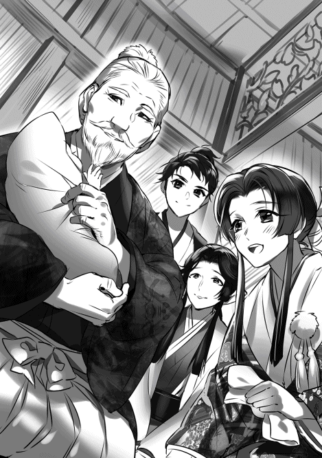
「綾、竹若丸は大膳大夫の幼い頃に似ているかの？」
「目元は似ているような気がしますが......」
「そうよの、目元が似ておるわ」
目元が似てる？ そうかな？ 俺はこんな細目じゃないぞ。どちらかといえばパッチリお目目だ。
「これで朽木家も安泰よ。小夜殿、御手柄じゃの」
「有難うございます」
「昨年は慶事が続きましたわ。大膳大夫への任官、竹若丸の誕生」
「そうじゃの、若狭一国の制覇、越前も大部分が朽木家の領するところとなった。良い事尽くめよ」
本当に良い事尽くめだ。一昨年は比叡山は焼いたし日吉大社も焼いた。堅田は踏み躙って寺は破却した。それに比べればずっと良い。でもこれは触れちゃいけない事だな、座が白ける。
「最近照が良く来るようになった」
「伯母上が？」
「うむ、以前の様に六角に気兼ねせずに済むという事であろう。ようやく親孝行が出来ると言っておる」
「それは良かった」
照、鯰江に嫁いだ伯母だ。鯰江は今では若狭大飯郡で一万石、高浜城に詰めている。丹後の一色とは今の所トラブルは無い。しかし丹後と若狭の仲の悪さは無視出来ない。
「越前攻めは上手く行ったようじゃの」
「俺の予想よりは良かった。だが大野郡、吉田郡は未だ一揆勢の手中に有る。今年はそれを片付けなければ......」
越前侵攻は俺の予想よりは上手く行ったが、軍略方が考える程には上手く行かなかった。水陸の連携が十分に取れなかった。こちらの命令が水軍に適切に伝わらなかったのだ。伝達手段を検討する必要が有る。それとやはり若狭水軍の編成が不完全だった。加賀攻めを考えれば朽木の海上戦力として編成し直す必要が有るだろう。
粟屋越中守勝久、香川右衛門大夫義康、寺井源左衛門長満、内藤筑前守勝行、畑田加賀守康之、山県孫三郎信定。粟屋、内藤を若狭水軍の指揮官にしよう。粟屋には香川と寺井、内藤には畑田と山県を付ける事で二つの任務部隊を編成する。上手く行くかな？ 軍略方は当然だが、海賊衆とも話し合う必要が有るな。軍略方に海賊衆を入れる事も考えよう。
「百姓達が余り戦う事無く降伏したようだが」
「加賀の坊主共に付くより朽木に付いた方が楽に暮らせるという事だ」
加賀の坊主共、朽木と戦うという名目で税を搾り取り贅沢をし放題だったようだ。余程恨まれていたらしい。七里三河守頼周は越前の一向門徒の手で殺された。他の下間筑後守頼照、杉浦壱岐守玄任は大野郡に逃げたようだが、さて加賀まで帰れるかどうか......。
越前の大部分を失った本願寺の顕如は俺の事を〝仏敵〟と罵っているらしい。そして、俺がこの世に現れた事を〝法難〟だと叫んでいるとか。お前みたいな破戒僧が居る事の方が法難だろうが。一向宗なんて何処の国でも嫌われ者だぞ。自分が嫌われてるって理解してないんだな、可哀想な奴。......朽木も似た様なものかな？ ちょっと心配になってきた。
越前攻めでは真田を傍に置いたがやはり出来る。息子達もなかなかの力量だ。越前を攻め取ったら五郎衛門を北の庄において北部方面軍の責任者にしよう。他にも五人から六人を各地に配置し五郎衛門の与力とする。総兵力で約七千を配置し越前、加賀への抑えとしよう。いずれ加賀侵攻の時は先鋒として働いてもらう。五郎衛門は評定には出られんな、となると譜代から評定衆を追加するか。誰を入れる？ 又兵衛か？ 或いは奉行衆から昇格させるか、要検討だな。五郎衛門に代わる俺の副将は真田にやらせよう。
「敦賀でやった花火が大分効いたらしいの」
御爺がニヤニヤと笑った。
「うむ、百姓達は敦賀の賑わいが羨ましくなったようだ」
明の船に花火は無かったが花火を作れる人間が居た。その人間に花火を作って貰い、敦賀の氣比神宮の祭りで打ち上げた。一向門徒の間でも話題になっていたようだから、結構反響は大きかったようだ。花火を作ってくれた明人は、一年間敦賀に留まり朽木の人間に花火作りを教える事になっている。今年は敦賀だけじゃなく大津、今浜、塩津浜でもやってみよう。
御爺と二人きりで話したい事が有ると言って綾ママと小夜に席を外してもらった。もっとも竹若丸も一緒だから不満そうな表情は見せなかった。不満そうな顔を見せたのは御爺だ。二人で竹若丸を取り合うなよ。御爺には横になって貰った。話は多少長くなるだろう。疲れさせてはいけない。
「何が有った？」
「義秋様から頻りに御味方せよと文が来る。越前の一向一揆を叩くのが先だと言って断っているがしつこい」
「そうか」
「今は尾張の織田と美濃の一色を和解させようとしている。そして織田、朽木、六角の軍勢で京の制圧をと考えているようだ」
御爺が〝なるほど〟と頷いた。
史実でも有った事だが失敗した。上手く行きかけたんだが、土壇場で一色が裏切って信長の上洛は不可能になった。幻の上洛戦とか言われている。俺は織田が美濃を獲ってからと言ったんだがな。義栄の将軍宣下が間近で待てないらしい。足利っていうのは義輝もだけれど堪え性の無い奴が多い。直ぐに騒ぎ出す。そして大体において碌でもない結果を引き起こす。
「上手く行くかの？」
「分からんな。織田は乗り気らしいと聞いている。問題は一色と六角だろう。感触は悪くないと聞いているが何処まで信じて良いのか......」
信長は美濃攻めが思うように進まない事で焦っている。上洛戦を行う事で名を上げようと考えているようだ。勿論この世界でも上手く行かないとは断言出来ない。上手く行く可能性は有る。だが一色、六角が本当に話に乗るのだろうか......。一色は信長が上洛戦をしている間に態勢を整えようと言うのだろうが......。重蔵に念入りに調べさせよう。
「お前は如何する？」
「乗っても良いとは伝えてある。義秋様を担ぐつもりは無い。だが足利義栄を担ぐ連中が京から居なくなれば朽木の西が安全になる。今後兵を動かす事が楽になる」
「......」
近江の国は四方に道が通じている。つまり四方に敵を抱えやすいという事だ。特に滋賀郡を得た事で西の脅威は切実だ。
「おそらく六月の中旬から七月に行う事になる」
「農繁期を避けるか。......となると、越前攻めはその前だな？」
「四月の頭には軍を動かす」
御爺が頷いた。
「弥五、いや大膳大夫。足利は如何なる？」
そんな顔をするな、御爺。御爺も分かっているだろう。
「......このままなら二つに分かれて争うだけだ。どちらかが没落するだろう。或いは両方没落するかもしれん」
「足利義秋様、義栄様、和睦の可能性は有るか？」
「残念だが無い。三好孫六郎重存は叔父二人に嵌められた。三好孫六郎と三好豊前守、安宅摂津守の関係修復は無理だ。である以上互いに公方を奉じて争うだけであろう」
「......嵌められたと言うと？」
「義輝公を殺したのは三好孫六郎だが、そう仕向けたのは三好豊前守、安宅摂津守だ」
「やはりそうか。孫六郎を陥れて利を得る者と言えば先ずはあの二人よ。......義輝様は利用されたか」
「その通りだ」
御爺が〝哀れな〟と言って太い息を吐いた。
確かに哀れだ、だがそれ以上に愚かだと思う。義輝は乱世の生き方を知らなかった、いや出来なかった。力が無く権威しかない者は大人しく力有る者に担がれているしか生きる道は無いのだ。義秋も同様だ。大人しく信長に担がれていなかった。要するに足利というのは乱世の生き方が出来ない一族なのだろう。力が有れば良いが、力が無ければ世の中を混乱させるだけだ。
義輝は三好修理大夫長慶が健在な頃から三好討伐を唱えていた。何処まで本気だったかは分からない。京に戻ったのも御大典を利用した和睦だった事を考えれば夢の様なもの、或いはストレスの発散だったと思う。少なくとも三好長慶はそう思っていただろう。義輝の楽しい夢を所詮は夢として放置していたようだ。
だが三好豊前守実休、安宅摂津守冬康はそうは思わなかった。御大典を利用しての和睦だ。軍事力を背景にしての和睦じゃなかった。義輝を蔑む気持ちは有っただろうし、三好討伐を夢見る義輝に反感を感じていたと思う。京に置いてやっているのに何をトチ狂って三好討伐を叫ぶのかと。
孫六郎に対しても二人の叔父は良い感情を持っていなかった。何故こいつが三好家の家督を継ぐのかという反感が有った。そして、その二つの反感が畠山高政の挙兵によって一つの方向性を持ち始める事になる。つまり三好孫六郎による足利義輝弑逆だ。
二人の叔父は、足利義輝の存在は三好政権にとって不安定要因だと主張した。畠山高政の挙兵は足利義輝の煽動によるものだと。あながち間違いでもない、義輝は暇さえあれば誰にでも三好を討てと煽っていた。だが畠山高政が三好と戦ったのはそれだけが理由でもない。根本には三好の勢力拡大に対する危機感が有ったと思う。戦わなければ畠山の支配地にも侵食してくると判断したのだ。
三好実休、安宅冬康、二人の叔父は、孫六郎に対して三好家の当主なら政権に対する不安定要因を取り除く事で政権を安定させるべきだと迫った。代替わりした三好を皆が見ている。義輝に対して甘い態度を取る事は三好政権を危うくしかねない、当主として決断すべきだと。要するに義輝を殺さなければ当主として認められないと脅したわけだ。
三好孫六郎は二人の叔父に対して足利義輝に実力は無い、敢えて将軍弑逆の危険を冒す事は無いと言って反対した。道理ではある。孫六郎に義輝への反感が無かったとは思わない。だが将軍弑逆を行えば後には引けなくなる。幕府を潰せるか？ 新たな秩序を自分の手で作れるか？ 簡単な事では有るまい。孫六郎にはそれを乗り切れる程に三好家を掌握しているという自信は無かった。そして叔父二人が自分に対して反感を示す事が孫六郎を更に慎重にさせた。しかし三好家の重臣の殆どは三好実休、安宅冬康を支持した。反対したのは松永久秀と弟の内藤備前守だけだった。
そういう状況において、二人の叔父は松永久秀と内藤備前守を伴って対畠山戦に出陣してしまう。自分達は畠山という外敵を倒しに行く、お前は足利義輝という獅子身中の虫を潰せという駄目押しだ。三好家中では義輝弑逆が既定方針となった。二人が松永久秀と内藤備前守を伴ったのは二人が義輝弑逆に反対したからだろう。京に残すと孫六郎の支えになりかねないと危惧したのだ。
三好家の重臣達が丹波制圧という名目で兵を京に集め始めた。畠山高政が挙兵した以上、それに呼応する勢力が有るかもしれない。京を守るために兵を集めておく必要が有る。重臣達はそう言って孫六郎を説得した。重臣達が呼応する勢力として挙げたのが朽木と六角だった。京を守るためと言うが本音は義輝弑逆のための兵力だ、孫六郎は追い込まれた。
三好家の中に頼れる人間はいない。孫六郎が頼ったのは実家の十河家と縁の有った九条稙通だった。相談を受けた九条は当たり前の事だが驚いた。そして義輝弑逆を危惧する孫六郎に同意した。孫六郎が叔父二人の動きがおかしいと相談すると、それにも同意した。九条から見ても三好実休、安宅冬康の動きはおかしかった。何より三好家中が孫六郎よりも三好実休、安宅冬康に従う動きを見せている事を九条は危険視した。このままでは孫六郎は将軍弑逆の汚名を着せられて潰されるのではないか？
「それで二人は如何した？」
「義輝様を殺すのは下策だと判断したが、止める事が出来るかと言えば首を傾げざるを得なかったようだ。暴発するか、或いは孫六郎に当主の資格無しとして先に孫六郎が殺される懼れも有った」
「......」
「義輝様を守りつつ孫六郎の地位を守る。方法は一つだ。孫六郎は戦の準備をし家中の信頼を繋ぎとめる。義輝様には京から逃げて貰う。それしかなかった......」
要するに義輝に三好が二条御所を襲撃すると情報を流したのは襲撃者の孫六郎本人だったのだ。ただ、三好家の家臣を使って情報を流す事は危険だった。また義輝が信用しない可能性も有った。そこで九条が近衛に情報を伝え近衛が義輝に情報を伝えるという手段を取った。九条と近衛は敵対関係に有ったが話が出来ない仲では無かったのだろう。九条は全てを近衛に伝えた。
その中には将軍襲撃の日程まで含まれていた。近衛はすぐさまその情報を義輝に伝えた。義輝も流石に危険を認識したようだ。京を去る事に同意した。行先は朽木だったようだ。直ぐに逃げる事は出来なかった。近衛に、九条に、そして孫六郎に迷惑が掛かりかねない。逃げるのは襲撃日の前日になった。
「襲撃日の前日に二条御所を出たが、途中で幕臣共が将軍が逃げては幕府の権威が地に落ちると騒ぎ出した。三好が二条御所を襲うなどとは思わなかったのだろう。だが義輝様はそれを間違いだと叱る事は出来なかった。叱れば情報が三好から漏れた事が皆に分かってしまう。幕臣達の中に三好に通じている者が居ないという保証は無かった......」
「それで、二条御所に戻ったか」
「そういう事だ。二条御所に戻った義輝様は、細川等信頼出来る側近に全てを話し当分身を隠すようにと命じた。足利のために信頼出来る人間を残したのだろう。後は知っての通りだ。三好孫六郎は襲撃の日程まで決めた以上、取り止めは出来ん。二条御所を攻めざるを得なかった......」
「......」
御爺が沈んだ表情をしている。遣りきれんのだろうな。俺だって遣りきれんと思うのだ。だが一番遣りきれなかったのは義輝と孫六郎だろう。
「襲撃の指揮は孫六郎が執ったが、細かい指示は三好孫四郎、三好右衛門大輔、岩成主税助が出した。この連中が将軍家の側室、弟の周暠様を殺した。おそらくは三好豊前守、安宅摂津守の命令だろう。孫六郎には近衛家から来た正室を保護する事、大和にいた義秋様の保護を松永弾正の息子に命じるのが精一杯だった」
「三好豊前守、安宅摂津守。二人は将軍家弑逆の罪を甥の孫六郎に擦り付けたか......」
「二人は密かに平島公方家に連絡を取り、自分達を売り込み孫六郎を将軍さえも殺す恐ろしい男だと貶めた。平島公方家は孫六郎を三好宗家の当主として扱わずに、三好豊前守実休、安宅摂津守冬康と同等に扱った。叔父二人に孫六郎の抑え役を期待したのだ。孫六郎は自分が嵌められた事を悟った。それが分裂の真相よ」
三好長慶の寿命があと十年あれば、孫六郎は三好家の跡継ぎとしての立場を確立出来たかもしれない。だが、その時間を与える事無く長慶は死んだ。孫六郎は弱い立場のまま当主になった。そして足を掬われた......。叔父二人にとっては分裂、そして義秋の奉戴さえも想定の内だろう。義栄は義秋を敵と認識するだろうし、それを担いだ孫六郎達も許す事は無い。正々堂々叩き潰す大義名分を得たわけだ。戦国乱世とはいえ怖い話だ。
永禄十年（一五六七年） 二月上旬 近江伊香郡塩津浜 塩津浜城 宮川頼忠
「越前を制したら五郎衛門には北の庄に入って貰う。他にも新庄刑部左衛門、大野木土佐守、月ヶ瀬若狭守、芦田四郎左衛門、室賀甚七郎、高野瀬備前守を坂井、勝山、大野、鯖江、今立、今庄に置く。五郎衛門にはその旗頭になって貰う」
「はっ」
五郎衛門殿の頬が紅潮しておる。北方の責任者に任じられたという事であろう。
「坂本に城が出来たら新次郎に入って貰う。大津、草津を守りながら京に睨みを利かせる役目だ。面倒な仕事だが頼む」
「はっ」
つまり、北が五郎衛門殿、西が私か。三好、六角を相手にする事になる。殿の言われる通り面倒な役目では有るな。
「五郎衛門は評定に参加出来なくなる、御爺も同様だ。親族、譜代から評定衆を新たに選ぼうと思う。誰が良い？」
はて、誰を選ぶ？ 五郎衛門殿も眉を寄せ難しい表情をしている。
「御親族からとなりますと、朽木長門守様、鯰江備前守様、平井加賀守様ですが......」
「譜代からとなりますと左門殿か、田沢又兵衛を」
「新次郎殿、左門には荷が重かろう」
「五郎衛門殿、もう少し息子殿を信じては如何かな？」
五郎衛門殿が唸った。不同意か、厳しいな。
「......又兵衛にしよう。五郎衛門は評定衆を離れるわけでは無い。左門を新たに加えれば日置一族が厚遇されていると不満を持つ者も出よう。左門は今浜の城代を務めているのだ」
なるほど、五郎衛門殿は北ノ庄で北方の旗頭、確かにその恐れは有るか......。五郎衛門殿も頷いている。
「では御親族は？」
「長門の叔父上にしよう。他の二人は朽木に来て日も浅い。それと重蔵を評定衆に加える」
「殿！」
「重蔵殿は」
「止めよ、それ以上は許さぬ」
殿が厳しい眼で我らを見た。
「重蔵無しで今の朽木は無い。それに人物、識見にも不足は無い」
五郎衛門殿と顔を合わせたが、それ以上は互いに口を開く事は無かった。殿は家臣の差別を許さない。なればこそ浅井の旧臣も評定衆に選ばれている。いずれは信濃衆からも選ばれる事は間違いなかろう。殿にとって重蔵殿を選ぶ事は至極当然の事なのだ。
「朽木仮名目録に条文を追加しようと思う。一つ、僧が領内の民を唆し騒乱を起こす事を許さず。但し領民の訴えを書状に記す事、領民に代わり訴えの内容を伝える事は認める。二つ、今後新たに領内で布教を行う者は必ず評定にて裁可を得、朽木家当主の印判状を得る事。三つ、今後新たに寺を建立する場合は必ず評定にて裁可を得、朽木家当主の印判状を得る事。以上三条、これを犯す者は死罪を含め厳しく処罰する。如何思うか？」
本願寺対策か、我らが賛成だと答えると殿が頷いた。
「では次の評定で皆に諮る事にする」
「皆に諮るのでございますか？」
「当然だ、新次郎。朽木仮名目録は朽木領内を治めるために制定した法だ。俺の恣意で変更出来るものではない」
「......」
妙な御方だ。
「もう直ぐ南蛮の坊主が此処へ来る。布教の許しを求める筈だ。それ無しでは南蛮人との交易は上手く行かぬ」
五郎衛門殿と顔を見合わせた。南蛮人が此処に？
「南蛮の坊主にも朽木仮名目録に従がって貰う。従う限り俺は差別はせぬ。例えそれが南蛮人であろうと本願寺の坊主であろうとな。後は評定衆の判断次第よ」
なるほど、そういう事か。南蛮人との交易は儲かると聞いている、見逃す手は無い。南蛮人の教えに不安を持つ者も現れようが、評定の裁可を得たとなれば反対はし辛い。つまり評定衆にも責任を負えと言っておられるのか。なかなか食えぬ御方よ......。
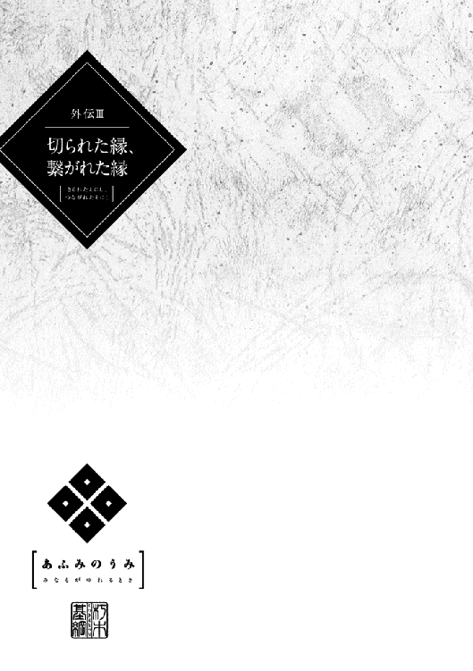
永禄三年（一五六〇年） 七月中旬 近江蒲生郡 観音寺城平井丸 平井小夜
「如何したのだ、小夜。溜息など吐いて」
兄、平井弥太郎高明が私の顔を覗き込んできた。兄の顔には私を気遣う色と笑みが有った。声も優しい。
「溜息を吐いていました？」
「気付かなかったのか？」
「はい」
「いかんなあ、若い娘が一日中引き籠って溜息を吐いている。父上も母上もそなたを心配しているぞ」
「......」
兄が私を気遣ってくれる。多分両親から頼まれたのだろう。
「新九郎の事を想っているのか？」
「そうでは有りませぬ」
首を横に振ったが兄は信じなかった。
「今回の一件はそなたの所為では無い。新九郎が我らを裏切ったのだ。もう一年になる、一日も早く忘れた方が良い」
「分かっております」
私が答えると今度は兄が〝それなら良いが〟と言って小さく溜息を吐いた。
浅井新九郎賢政様。かつては猿夜叉丸と名乗り六角家の人質であった北近江浅井家の嫡男。その時、猿夜叉丸様を預かったのが父、平井加賀守定武。私、兄、猿夜叉丸様の三人で良く遊んだ。特に年の近かった兄と猿夜叉丸様は本当に仲が良かった。あの頃はこんな日が来る、六角家と浅井家が敵対する事になるとは全く思いもしなかった......。
猿夜叉丸様は昨年元服なされた。浅井新九郎賢政、名前の賢の文字は六角家の御屋形様六角左京大夫義賢様から頂いた。そして私が御屋形様の養女となり六角家の娘として新九郎様に嫁いだ。不安は無かった、見ず知らずの御方に嫁ぐよりも遥かに良いと思った程だ。私の輿入れを皆は御屋形様が六角家と浅井家が臣従関係に有る事をはっきりさせるためと言っているが、父から聞いた話は大分違う、そういう物ではない。
御屋形様は新九郎様のために賢の字を与え私を嫁がせたのだと言う。新九郎様の父君、浅井下野守久政様は新九郎様の母君である阿古御料人様を疎んじられていた。浅井家から六角家に人質を出す時、下野守様はお腹に新九郎様を宿していた阿古御料人様を人質に出した。
新九郎様には姉君がおられる。本来ならその方が人質になられた筈。阿古御料人様とお腹の御子が人質と知った御屋形様、そして先代の御屋形様である管領代六角定頼様は酷く驚かれ、阿古御料人様とお腹の御子を哀れに思われたとか。母君である阿古御料人様が疎んじられている以上、新九郎様の御立場も決して盤石ではない。そう思えばこそ御屋形様は私を嫁がせた。それなのに......。何故......。
「御屋形様は浅井に寝返った肥田城をまた攻める事をお決めになられた。知っているな」
「はい」
その事が私を憂鬱にさせている。浅井家に寝返った肥田城の高野瀬備前守秀隆を御屋形様は四月に一度攻めた。結果は失敗、御屋形様は雪辱を期すためにまた肥田城を攻める......。
部屋から出たくない。皆を心配させているのは分かるけど出たくない。家族は皆私が新九郎様の事を想って閉じこもっていると考えている。でもそうではない。皆の目が怖いのだ。誰もが私が新九郎様の心をしっかりと捕まえなかったから、今回のような事になったと思っている。口には出さないけれど目がそう言っている。戦が起きてまた死傷者が出る。出来ればこのまま誰も私を知らない所に行きたい......。
例え浅井家に雪辱しても私はどうなるのだろう？ 何処かへ嫁ぐ等という事が出来るのだろうか？ 御屋形様の御嫡男、右衛門督様が私を側室にと仰っているとも聞く。他に行き場が無いだろうとも。惨めだ、憐れみで側室になるくらいなら尼にでもなろうか。でも俗世と縁を切れば、この惨めさから解放されるのだろうか......。
「そう言えば此度の戦だが朽木が参陣する」
「朽木？ 高島郡のですか？」
問い掛けると兄が頷いた。
「ああ、御屋形様は今回の戦に朽木を参陣させる事で六角家の力を皆に示そうと御考えなのだ。朽木は将軍家とも近く京にも近い。富も有れば武器も有る。朽木が参陣すれば六角家の力は朽木にも及んでいると言う事になる。浅井にとっても決して軽視出来る事では無い。御屋形様も中々強かなお方よ、頼もしいわ」
兄が声を上げて笑った。
「朽木竹若丸という名でしたか。飢えた狼のような、油断のならない男だと聞いています」
兄が膝を叩いて笑い出した。
「そなたは酷い事を言うな。竹若丸殿はそなたよりも一つ年下だ。幼い時に父親を失い、それ以降は祖父の後見を受けつつ当主として朽木を守ってきた。先年、高島、永田、平井、横山、田中、山崎を戦と調略で潰し、高島郡の大部分を制した。なかなか出来る事では無いぞ、稀に見る器量人よ」
「兄上はお好きなのですか？」
問い掛けると兄が少し考える様なそぶりを見せた。
「嫌いではないな。好きだし見事だと思う。まあ六角家の中には朽木を悪く言う方も居られる。何と言っても高島達は六角家に臣従していたからな。それを潰した朽木は許せる存在では無いのだろう。だが高島達などよりも朽木の方がずっと役に立つ、私はそう思う。御屋形様もそう思えばこそ六角家の傘下に入れようとしているのだと思うぞ」
朽木竹若丸、私より一つ年下、となれば今は十二歳。血に飢えた狼のような油断のならない男。多分がさつで人の心の痛みなど感じない男なのだろう。私もそういう人間に成れれば良かった。そうであれば他者の目に怯える事など無かったのに......。
永禄三年（一五六〇年） 八月中旬 近江蒲生郡 観音寺城平井丸 平井小夜
「小夜、入るぞ」
その声と共に戸が開いて父、平井加賀守定武が部屋に入って来た。
「如何なされました、父上」
父は私の前に座り複雑そうな顔をしている。何かが起きた、その何かは多分......。
「今、御屋形様が肥田城を囲んでおられる」
「はい」
「それを救わんとして浅井家が兵を出した。分かっているな？」
「はい」
私が頷くと父も頷いた。
「先程、御屋形様より文が届いた。肥田城の近く、野良田で浅井新九郎率いる浅井勢と合戦が有った。御味方大勝利、浅井勢は潰走し肥田城の高野瀬備前守は降伏した」
「......」
ホッとした。御味方大勝利。
「浅井家の損害だが、一千以上の死傷者を出して逃げた様だ。かなりの損害だな。主だった者で遠藤喜右衛門直経、赤尾美作守清綱、片桐孫右衛門直貞、新庄新三郎直頼、そして浅井新九郎賢政が討死した」
「！」
驚いて父を見ると父が頷いた。
「御屋形様の文には、これで平井家とそなたに加えられた侮辱は返したと書かれてあった。もう直ぐ御屋形様はお戻りになる。お戻りになられたら拝謁し御礼を申し上げる。良いな？」
「......はい」
父が息を吐いた。
「未だ新九郎の事を思っているのか？」
「そうでは有りませぬ」
自然と首を横に振っていた。新九郎様が討死したと聞いた時、驚きは有っても悲しみは無かった。
「浅井家とは、新九郎様とは縁が無かったのだと思っております。私は人の目が怖い、恥ずかしいのです」
父がまた息を吐いた。
「そなたの所為では無い。あれは浅井に非が有るのだ。そなたが人の目を恐れ恥じる事は無い」
「......」
「二、三日中には御屋形様に拝謁する事になる。心構えをしておきなさい」
「はい」
帰り際に父が三度目の息を吐いた。
「御屋形様、此度の大勝利、真におめでとうございまする。また、娘小夜に加えられた侮辱を御晴らし頂けました事、心から御礼申し上げまする」
父が頭を下げたので私も頭を下げた。笑い声が聞こえた、御屋形様は上機嫌の様だ。
「礼には及ばぬぞ、加賀。小夜はそなたの娘だが儂にとっても娘。小夜は六角家の娘として嫁いだのだ。娘を侮辱されて黙っている父親はおらぬ。当然の事をしたまでよ」
「有難うございまする、改めて御礼申し上げまする」
父の言葉に御屋形様が上機嫌で二度、三度と頷かれた。
「さて、次は小夜に良い婿を見つけなければの」
婿？ また嫁ぐの？
「ま、儂に考えが有る。楽しみにしているが良い」
「重ね重ねの御気遣い、誠に有難うございまする」
父が頭を下げたので私も下げた。また嫁ぐの......、一体何処に......、一度嫁いだ私を受け入れる家が有るのだろうか？ でもこのまま六角家に居るよりは良いのかもしれない......。
永禄三年（一五六〇年） 十二月中旬 近江蒲生郡 観音寺城平井丸 平井小夜
「私に縁談ですか？ 父上」
驚いて声が上擦ってしまった。父と兄が私をおかしそうに見ている。
「そうだ、夏に御屋形様に拝謁した時に御屋形様が申されたな、そなたに良い婿を見つけると」
「はい」
「その話だ」
まさか、こんなにも早く？ もっと先の事だと思っていた。
「一体どなたに......」
「相手にはこれから話す事になる」
「これから？」
私が問うと父が頷いた。
「相手は正月に御屋形様の元に年賀の挨拶にやってくる。その時に話す事になる。先ず断られる事は有るまい」
「......お相手は？」
「朽木竹若丸殿だ」
驚いて父と兄の顔を見た。父も兄ももう笑ってはいない、引き締まった顔をしている。
朽木竹若丸、野良田の戦いで浅井軍に決定的な損害を与えたのが朽木の鉄砲隊だった。朽木家の働きは、それ無しでは六角家の勝利は無かったと言われている程に評価が高い。事実、新九郎様を始め多くの名有る浅井家の武者が朽木勢に打ち取られている。御屋形様はその功績に報いるために高島郡で一万石を褒賞として与えた。その後、朽木家は浅井領に侵攻、僅かな期間の間に高島郡を完全に制し伊香郡の大部分を占領した。その素早さに皆が驚いている。朽木の若き猛将......。
「しかし、竹若丸様は私を受け入れるでしょうか？」
浅井と縁の有った女、離縁され二度目の嫁入り、それに年上。不利な条件ばかり......。それに朽木家は最初に嫁いだ浅井家に比べれば半分程の家、それも仕方ないのかもしれない......。
「心配は要らぬ。朽木家と六角家は共に浅井家を敵とする間柄。朽木家は大きくなったとはいえ、未だ浅井家よりも小さい。六角家との協力は必要不可欠。断られる事はあるまい。ま、多少の条件を付けるやもしれぬが、その辺りは御屋形様にお任せすればよい」
「弥太郎、その辺にせよ」
父が兄を窘めると兄が頭を下げた。やはり簡単には行かないらしい。
「小夜、弥太郎の言った事は余り心配せずとも良い。それよりも大事な事が有る」
「はい」
「六角家と朽木家は鬩ぎ合いの最中なのだ」
「鬩ぎ合い？」
父が〝うむ〟と頷いた。兄も難しい表情をしている。
「鬩ぎ合いとは何でございましょう？」
「御屋形様は朽木家を六角家に服属させたいと思い、竹若丸殿は朽木家の自立を守りたいと考えている。それで鬩ぎ合っている」
本当に？ 兄に視線を向けると兄が頷いた。
「野良田の戦いの後、朽木家と六角家は浅井家を敵とする事になった。朽木家は六万石、浅井家は二十万石、本来なら朽木家から御屋形様に戦の指図を仰ぎに来る筈であった。御屋形様が朽木家に指図をする。そうする事で朽木家を六角家に取り込むつもりであったのだ」
「......」
「だが、竹若丸殿は御屋形様に指図を受ける事無く単独で浅井を攻めた。六角家の下には付かぬと行動で示しておる。そして今では十万石を越える身代にまでなった。御屋形様としてはいささか当てが外れた事になる」
「それで私を？」
父が頷いた。
「そうだ、御屋形様は竹若丸殿を娘婿という形で、六角家の中に取り込もうと考えておられる」
「では、竹若丸様は受けましょうか？」
受けない可能性が有るのではないだろうか？ そう思っていると父が首を横に振った。
「受けような。服属は撥ね付けても敵対出来るほどには朽木は大きくない。御屋形様の娘婿という立場、そして朽木家の身代を考えれば六角家でも別格の存在と言えよう。或いはいささか分が悪いが同盟者とも見る事が出来る。朽木も十分に面目は立つ、受ける筈じゃ」
「なるほど」
知らなかった。そんな駆け引きがこれまで有ったなんて。御屋形様も竹若丸様も共に浅井を攻めながら見えない所で鬩ぎ合っている。
「念のため、そなたに確認したい。この話、進めても異存は無いな」
「......」
父がじっと私を見詰めてきた。
「そなたの気持ちは分かっている。このまま此処に居ても苦しいだけだと父は思うぞ、このままではそなたは萎れてしまう」
萎れる、そう萎れるかもしれない。
「そなたは朽木が浅井に比べれば小さいと不満に思っているかもしれぬ。だが竹若丸殿は中々の器量人だ。朽木はこれから更に大きくなるだろう。今よりも将来を思え。そして朽木家は六角家にとって最も大事な家になる」
「......そうでございますね、父上の仰る通りだと思います。朽木家へ嫁ぎまする」
父上が頷かれた。不満は持つまい、このまま此処に残るよりはずっと良い筈......。
永禄四年（一五六一年） 二月下旬 近江蒲生郡 観音寺城平井丸 平井小夜
「まあ、何と見事な」
納采として送られてきた品を見て母が嘆声を上げると、父と兄が満足そうに頷いた。
「殿、朽木家は裕福と聞いておりますが本当にそうなのですね」
「そうだな、正月の祝いの品も見事であった」
「良かったわね、小夜。良い御縁を頂いて」
「はい」
母は本当に嬉しそう。私の事を心配していたから、朽木家に嫁ぐ事が決まってとても喜んでいる。
母だけではない、父も兄も喜んでいる。年賀の挨拶で竹若丸様は私との縁談に一切条件を付けなかった。竹若丸様が確認したのは、私が浅井新九郎様に未だ想いを持っているのではないかという事。それが有るならば朽木に嫁ぐのは不本意ではないかという事だった。朽木家の利のために条件を付けなかった竹若丸様、いえ弥五郎基綱様を両親、兄は私を幸せにしてくれるだろうと思っている。
長熨斗、スルメ、昆布、鰹節、澄み酒、さらに綿、絹、越後上布、干し椎茸......。それらがいずれも見事な朱塗りの三方に載せられている。多分、朽木塗り。他にも太刀、石鹸、虎の皮等が朽木家から届けられている。
「小夜、弥五郎殿より文は来ているのですか」
「はい、母上」
時々弥五郎様は文を下さる。櫛、簪、紅なども送られてきた。手跡は決して達筆では無い、右肩上がりの癖の有る字を書かれる。でも何時もこちらを気遣っている内容が書かれていた。お会いした事は無いけれど信じても良いのではと思っている自分が居る。
「今度こそ、幸せにならなければ」
「大丈夫ですよ、母上。小夜は幸せになれます」
母の願いに兄が断言した。
「浅井の後ろには越前の朝倉が居ました。若狭の武田の動きも怪しい。そして京を押さえる三好も丹波から若狭を狙いましょう。近江の周辺は動いているのです、六角家と言えど決して油断は出来ませぬ。六角家と朽木家は互いを必要としているのです。小夜はその架け橋。きっと幸せになれます、大事にして貰えます」
兄の言葉に父が頷いた。
幸せになれるかもしれない。弥五郎様が私を大事にしてくれる。ついこの間まで飢えた狼のような、油断のならない男だと思っていた方が。浅井家よりもずっと小さな家だと不満を持っていたのに。可笑しくてクスクス笑ってしまった。父が、母が、兄が私を見て嬉しそうにしている。幸せになれるかもしれない。
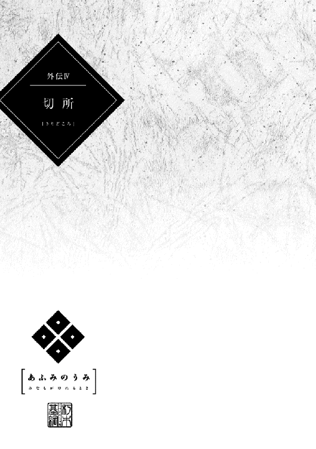
永禄五年（一五六二年） 五月中旬 近江坂田郡大野木村 大野木城 大野木秀俊
「まさか不破郡が落ちるとは」
「竹中を見殺しにするとはの。一色右兵衛大夫龍興、何を考えているのか、空けにも程が有るわ。今になって不破郡を取り返すと騒いでいるらしいが話にならんの」
「尾張の空けと美濃の空けか。同じ空けでも分が良いのは尾張の空けだろうの。右兵衛大夫では美濃は守れまい」
小林左馬頭殿の言葉に皆が頷いた。一色右兵衛大夫龍興、長くはあるまい。
「右衛門督は不破郡だけでは足りぬ。美濃一国切り獲ってくれようと言っているらしい」
「好い気なものだ、我らの苦労など何も分かっておらぬ」
西山兵部殿が吐き捨てると皆が口々に同意した。沼波又次郎秀信殿、西山兵部幸正殿、新庄刑部左衛門直忠殿、小林左馬頭家正殿、遠藤孫作直久、そして俺大野木土佐守秀俊。いずれも坂田郡の国人領主だ。
今日は一昨年亡くなった浅井下野守様の一周忌、新九郎賢政様、刑部左衛門殿の兄、新庄新三郎直頼殿、孫作殿の父、遠藤喜右衛門直経殿の三回忌の法要を行った。本来なら命日はもっと後だが、その日に行えば六角が横槍を入れてくるかもしれぬ。それゆえ六角に知られぬように小谷城落城の日に行った。帰りに俺の城に集まって話しているが暗い話題ばかりだ。だが苦しいのは我らだけではない、坂田郡の国人領主は皆苦しい。六角の上層部はそれを理解しようとしない......。
二年前の夏、野良田の戦いで我らが服属していた浅井氏は敗れた。手酷い敗北だった。大将である新九郎賢政が討死、他にも大勢の将兵を失った。この場に居る新庄刑部左衛門殿は兄の新三郎殿を、遠藤孫作殿は父の喜右衛門殿を失っている。その後は早かった、僅か一年で北近江三郡を支配した浅井氏は滅んだ。浅井が領した三郡、伊香郡、浅井郡、坂田郡の内、伊香郡と浅井郡は朽木が、坂田郡は六角が領している。
六角領となった坂田郡は不当に扱われている。元々南近江は六角氏が治め北近江は京極氏、その後は浅井氏が治めた。六角氏は佐々木源氏の本家だが、勢威は分家の京極氏の方が良かった。その所為も有って近江の北と南は仲が悪い。北近江に属した坂田郡の国人衆は六角氏に服属した後、所領の安堵の面でかなり割を食った。皆が不満に思っている。そして今回の出兵でも兵糧を供出した。領地を削られ連年戦続き、かなり苦しい。
「右衛門督は武功を上げて得意だそうな。周囲に自分がその気になればこんなものだと吹聴しているとか」
「父親の左京大夫は朽木の娘婿がお気に入りだと聞いた。右衛門督はそれが面白くないらしい。ようやくその鬱屈を晴らしたという所か」
「そのようだな、迷惑な事よ」
遠藤孫作殿が顔を顰めた。
皆が知っている。今回の六角右衛門督義治による美濃不破郡侵攻が、義弟である朽木弥五郎基綱に対抗する気持ちから起きたと言う事を。朽木弥五郎基綱、数年前までは高島郡の一国人領主に過ぎなかった。だが高島郡を制し野良田の戦いでは浅井に大きな打撃を与えた。その後は浅井攻めで小谷城を攻略するという武功を上げている。この近江では日の出の勢いと言って良い。
「迷惑はこれからかもしれんぞ」
俺の言葉に皆が視線を向けてきた。
「一色右兵衛大夫がこのまま不破郡を諦める筈がない。必ず攻め寄せて来よう。そのような話も出ている。となれば、我らに後詰せよと指図が来るのは必定。兵だけではない、兵糧、武器、人足の供出も要求されような」
「冗談ではない、もう保たんぞ」
沼波又次郎殿がぼやいた。皆が頷いた。
「いっそ美濃に降るか？」
西山兵部殿の発言に皆が押し黙った。顔を見合わせている。
「滅多な事は言うまいぞ、兵部殿」
又次郎殿が窘めたが兵部殿が首を横に振った。
「しかしな、もう保たんと言ったのは又次郎殿、お主だぞ」
「それはそうだが......」
「俺も保たぬ、皆は如何なのだ？ 土佐守殿、刑部左衛門殿、左馬頭殿、孫作殿」
刑部左衛門殿、左馬頭殿、孫作殿と視線を交わした。三人とも眼の色が暗い、否定的だ。
「気持ちは分かる、これ以上戦が続けば俺も保たぬ。だがな、だからと言って美濃に降るというわけには行くまい。一色右兵衛大夫、信じられようか？ 竹中を見殺しにして不破郡を失ったのだぞ」
「その通りだ、刑部左衛門殿の言う通りよ。多分我らを六角への楯として使い、その間に不破郡を取り返そうと考えるだろう。我らは六角に擂り潰されて終わりだ」
俺の言葉に皆が頷いた。
「或いは六角の狙いはそれかもしれん」
「如何いう事だ、孫作殿」
左馬頭殿に問われて孫作殿が困った様な表情を見せた。
「いやな、左馬頭殿。我らを潰す事が六角の目的ではないかという事よ。我らは浅井の家臣、信じられぬと思っているのなら、そう考えてもおかしくは有るまい。潰した後に信頼出来る者を坂田郡に置く」
皆が顔を見合わせた。有り得ぬとは言えぬ。
「弱い、小さいというのは惨めよな」
ポツンと又次郎殿が吐いた。確かに惨めだ。戦国乱世なれば弱ければ潰される。それを避けるには強い大将に付き守って貰わねばならぬ。だがその大将が何処まで信じられるか......。能力、心、思い遣りの無い信じられぬ大将では、その大将に潰されかねぬ。美濃の一色右兵衛大夫、南近江の六角右衛門督、どちらも信用出来ぬ。そして左京大夫も......。
「伊香郡、浅井郡の者達が羨ましいわ」
「そうよな、朽木に付いた者達は恵まれておる。井口殿はともかく安養寺三郎左衛門尉殿、雨森弥兵衛殿は敵対していたにも拘らず評定衆に任じられた。有り得ぬ事よ、驚いたわ」
「本人達が一番驚いておろう」
どっと笑い声が湧き上がった。
朽木に付いた者達は恵まれている。それは井口越前守殿、安養寺三郎左衛門尉殿、雨森弥兵衛殿だけの話ではない。朽木は関の廃止と引き換えに石鹸の製造法、綿花の種を国人衆に与え百姓兵から銭で雇う兵に切り替えさせようとしている。そして澄み酒の製造所も伊香郡、浅井郡に造った。それを目当てに商人達が押し寄せていると聞く。徐々に活気が出て来たようだ。坂田郡とは全く違う。皆が羨むのも無理は無い。
「朽木仮名目録という式目も作ったそうだな」
「ああ、未だ御若いからな。皆が不安に思うだろうという事で式目を作ったようだ。今川仮名目録を真似て作ったらしいな」
「真似でも式目を作るとは大したものよ。政にも熱心じゃな」
「式目が有れば浅井の家臣であろうと不当な扱いは受けまい。評定衆には井口殿達も居るからの。皆も安心する筈だ」
「良いのう、羨ましいわ」
皆が頷きながら顔を見合わせた。
「朽木に付く、というのは如何かの」
小林左馬頭殿が声を潜めた。誰も何も言わない。顔を見合わせている。多分思い付きでは有るまい。自分も何度か同じ事を考えた。朽木の下ならば安心して家を保てよう。
「鎌刃城の樋口殿に言われたのじゃ。尤もだと思う。刑部左衛門殿は如何じゃ。兄の新三郎殿を野良田で失われたが。孫作殿は？」
左馬頭殿が言葉を続けると刑部左衛門殿が首を横に振った。
「乱世じゃ、兄の死には拘らぬ。我らには良き主君が必要であろう。そうでなければ家を保てぬ。朽木家の当主は一色家や六角家に比べれば遥かにましだ。いや近年稀にみる御大将よ、仰ぐに不足は無い」
孫作殿も刑部左衛門殿に同意した。皆が頷いた。
「しかし朽木家と六角家は協力関係に有る。我らを受け入れてくれるかどうか......」
孫作殿が首を傾げた。
「孫作殿の危惧はもっともじゃ。だが右衛門督めは弥五郎様を嫌っておる。代替わりが有れば朽木と六角は敵対しよう。それを弥五郎様が察しておられぬとも思えぬ」
左馬頭殿の言葉に皆が頷いた。
「目は有るの」
又次郎殿の言葉にまた皆が頷いた。
「繋ぎを付けるか？」
「それが良かろう、幸い伝手は幾らでも有る」
「早い方が良いな、その時になってからでは遅い」
「しかし、代替わりが有るまで我らが保つか？ 何年先の事か分からぬぞ」
俺が肝心な事を指摘すると弾んだ会話が一気に萎んだ。
「......石鹸の製造法、綿花の種子を我らにも頂くというのは如何か？」
兵部殿が恐る恐る言うと皆が笑った。
「少々虫が良過ぎるのう」
「そのまま六角に留まるやもしれぬぞ」
左馬頭殿、孫作殿の言葉に兵部殿も笑った。
「確かに虫が良いかもしれぬ。だが石鹸の製造法、綿花の種子を頂けるのなら、信じて頂けるのなら、儂は決して弥五郎様を裏切らぬ。右兵衛大夫や右衛門督の下では家を保てぬ。信頼出来る主が欲しいわ」
皆が顔を見合わせた。もう笑い声は無い。
「儂も裏切らぬ」
「儂もだ」
「儂も」
「某も」
「裏切らぬ」
皆が頷いた。
「繋ぎを付けよう」
「井口殿に頼もう。場所は竹生島の大神宮寺だ。参詣に来て、そこで偶然出会ったとすれば良い」
「こちらからは誰が？」
「某が参ろう。家を継いで二年、思う様に行かぬので参詣をするつもりになったと周囲には言う」
刑部左衛門殿の言葉に皆が頷いた。
永禄五年（一五六二年） 五月下旬 近江浅井郡竹生島 大神宮寺 新庄直忠
大神宮寺の庫裏で井口越前守経親殿と会った。こうして人目を憚らねばならんとは面倒な事よ......。
「御久しゅうござる」
「真、久しゅうござる。一体何用かな？ 刑部左衛門殿。竹生島で偶然を装って会いたい等と穏やかではないな。昔は同じ家に仕えていたが今は別。知らぬ仲ではないから来たが些か困惑しておる。周囲に妙な誤解は与えたくない......」
嘘であろう、表情には困惑は見えない。
「我らが何を考えているか、お分かりにならぬと？ 坂田郡の国人衆の苦境は御耳に入っておられよう」
「多少は存じておる」
「ならばお分かりになろう。越前殿御自身が申された。妙な誤解とな」
越前守殿がじっとこちらを見た。
「......本気か？ 一つ間違えば滅ぶぞ。お主らだけではない、朽木も滅ぶ」
「坂田郡の国人衆は滅びつつある。もう直ぐ美濃の一色右兵衛大夫が兵を起こす。そうなれば、我らには様々な負担がかけられよう。皆、もう保たぬと悲鳴を上げている。それ故生き残るために朽木を選んだ。越前守殿、分かるであろう、御手前と同じだ」
越前守殿が顔を顰めた。浅井を裏切った事を責めるつもりは無い。浅井は越前守殿を蔑にした。何かにつけて井口氏を抑えようとした。越前守殿は新九郎様が討死された以上、浅井に留まっても先が無いと思ったのであろう。六角では無く立場が一番弱い朽木に付く事で朽木に賭けた、そして勝利をもたらした。朽木は一挙に北近江三郡の主となり越前守殿はその重臣に取り立てられている。賭けに勝ったのだ。もし六角に付けば、ありふれた一国人でしかなかっただろう。
「殿の主敵は朝倉だ。六角と事を構えるのは不本意であろう。それに朽木は急速に大きくなった。しばらくは内部を固めなければならぬ。そういう意味でも六角とは事を構えられぬ」
「朝倉か、朽木の倍以上は有ろう」
越前守殿が頷いた。朽木が北を押さえ六角は西を窺う。そうする事で三好を牽制するという事であろう。
「有ろうな。だが朝倉宗滴殿亡き後、朝倉の武威は全く振るわぬ。その事は我等浅井の旧臣達が一番良く知る所であろう。加賀には一向一揆も居る。南の六角と手を結べば、北に攻め上がるのは難しくあるまい」
暗に坂田郡を救う事は出来ぬと言っている。
「北を朽木が押さえ六角は西に向かうか。それなら我等も苦しまずに済んだ。だが六角は東に動いた。その辺り、越前守殿は如何思われる」
「......」
越前守殿が黙り込んだ。
「お分かりの様だな。六角右衛門督に有るのは朽木憎しだ。それ故、西では無く手っ取り早く武名を上げられそうな東を選んだ。越前守殿、六角は代が替われば朝倉と結んで朽木を潰しにかかるぞ。朽木は一色か、或いは三好と結ばざるを得なくなる」
越前守殿が視線を伏せた。眉を寄せ苦しげな表情だ。考えている。暫くして顔を上げた。
「六角とはいずれは敵対する。そうなれば坂田郡が味方に付く意味は大きいと言われるか」
「如何にも」
「確かにそれは認める。だが難しいな。六角の代替わりが何時になるか分からぬ。左京大夫様が御健在の間は問題は無いのだ。御病気とは伺っておらぬ」
「......」
「こちらから六角との関係を壊す事は出来ぬ。それに朽木は小さ過ぎる。せめて今の倍の身代が有ればまだしも......」
越前守殿が首を横に振った。
「今日元気でも明日が分からぬのが人の寿命であろう。代替わりが有れば？」
越前守殿が顔を顰めた。
「厄介な事になるのは認める。朝倉と六角が結べば朽木は苦しい立場になる。代替わりが有るまでに朝倉を何処まで喰えるかという問題になろう」
「ならば坂田郡の重要性は分かる筈」
「分からぬではない。だが保つのか？ こちらの見るところ、六角はお主らを潰そうとしているようにも見えるが」
傍目からもそう見えるか......。
「助けて頂きたい」
「助けよとは？」
「石鹸の作り方、綿花の種を」
「......お主らに流せと言うか」
越前守殿の声が上がった。目を剥いている。
「越前守殿、坂田郡には国友村が有る」
「......」
「六角が持つ鉄砲の生産地は国友と蒲生の日野だ。だが日野の生産量は国友に遠く及ばぬ。弥五郎様は鉄砲の扱いに長けておいでだ。それを使うだけの銭も有る。坂田郡を味方に付ける、その利は決して小さくない」
「......」
「それに坂田郡は近畿、東海、北陸を結ぶ要衝の地だ。朽木が大きくなるのを望むなら、絶対に手に入れなければならぬ土地の筈、違うか？」
越前守殿は考えている。脈は有る。
「お主らだけか？ それでは坂田郡とは言えぬぞ」
「お望みなら皆を纏める。若宮、小堀、岩脇にも声をかけよう。皆、右衛門督に腹を立てている、乗る筈だ」
「ならば安養寺殿、雨森殿に話してみよう。その上で如何するか決める」
「分かった、良しなに頼む」
越前守殿が頷くと席を立った。ホッとした、掌がじっとりと濡れていた。
永禄五年（一五六二年） 六月上旬 近江伊香郡塩津浜 塩津浜城 井口経親
「なるほど、評定の前に話したいとはその事であったか」
「はてさて、困った事よ」
坂田郡の話をすると安養寺三郎左衛門尉、雨森弥兵衛の二人が揃って腕を組んだ。
「この部屋、大丈夫かな？ 越前守殿」
「大丈夫だ、三郎左衛門尉殿。評定が始まるまでは誰も近付けぬ様にと頼んである。評定の場で話さなければならぬ事を検討していると説明した。一刻は間が有ろう」
三郎左衛門尉が頷いた。
「如何思われる？ 三郎左衛門尉殿、弥兵衛殿」
「難しいな」
三郎左衛門尉の口調は重い。
「矢張り左様に思われるか」
「いや、難しいのは朽木よりも六角」
はて、妙な事を言い出した。弥兵衛も訝しんでいる。三郎左衛門尉が腕組みを解くと弥兵衛も解いた。
「六角は戦こそしておらぬが三好とは敵対関係にある。不破郡に攻め込んだ事で東西に敵を抱える事になった。この状況で我らを敵に回せようか？」
三郎左衛門尉が俺と弥兵衛に視線を向けた。
「なるほど、厳しいな。伊勢には長野、北畠も居る。六角も決して楽ではないか」
弥兵衛の言葉に三郎左衛門尉が頷いた。
「それに朝倉は当てにならぬ。木の芽峠を押さえれば容易に南下は出来まい。となれば、殿の方が兵を南へ動かそう」
「坂田郡か」
「然り」
なるほど、殿が南へ兵を動かすとなれば坂田郡は味方に付けておいた方が良い。さすれば、その先へ兵を入れる事が出来る。六角の奥深くへ。待て、となると......。
「不破郡は孤立するな」
三郎左衛門尉が微かに笑みを浮かべた。
「如何にも、一色は容易く不破郡を取り戻そう。一色は織田という敵も抱えている。朽木が一色と結ぶのは難しくない」
「......」
「厄介なのは三好であろう。丹波から若狭に出られると危ない。朽木は一気に苦しくなる」
なるほど、厄介なのはむしろそちらか。
「三好が若狭に出るか、それとも六角を叩きに出るか、その辺りが鍵か」
「そうなるな」
「若狭に出ると言う事は朽木を危険視してと言う事であろう。三郎左衛門尉殿、弥兵衛殿、六角と朽木、三好はどちらを危険と見ると思われる」
問い掛けると二人が顔を見合わせ笑い出した。
「難しいの、如何思われる、弥兵衛殿」
「さあて、見当も付かぬわ」
困ったものよ、二人とも笑い続けている。
「坂田郡への援助はした方が良いと思われるか？」
二人が笑い止んだ。
「問題は六角と朽木がぶつかる事になるかどうかであろう。ぶつかると判断するなら迷わず援助すべきであろうな。そうでないなら迷うところだ。しかし、ぶつかるのか？」
「......」
「六角にとって朽木と争う事は一文の得にもならぬ。右衛門督が殿を嫌っているのは確かであろうが、戦をするほどに嫌っているのかと言われれば確証が持てぬ......」
三郎左衛門尉が小首を傾げた。確かにそうだ、西に三好という大敵を控えて朽木とぶつかるとは考え難い。
「某はぶつかる可能性は多分に有ると思う」
驚いて弥兵衛の顔を見た。平静な表情をしている。こちらを驚かそうと言うわけではないらしい。
「それは何故かな、弥兵衛殿」
「右衛門督が殿に敵意を持っているのは確かだ。そしてその右衛門督の側に三雲対馬守、蒲生下野守の二人が居ると聞く。二人とも六角家の六人衆と称される重臣だが、この二人も殿に対して敵意を示している。殿を嫌っているのではなく危険視しているのではないかと思う」
三郎左衛門尉が〝なるほど〟と言って頷いた。
「六角の為にならぬと？」
「うむ、六角家の中に朽木を積極的に利用すべしと言う意見と、危険だと言う意見の二つが有るのだと見るべきではないかな？ 今は利用すべしと言う意見が強い、だが朽木が大きくなるにつれ危険だという声が強くなると思う。そうなれば、手に負えなくなる前に抑え付けろと言う声が出るのは火を見るより明らかだ」
弥兵衛の言葉が途切れると三郎左衛門尉が息を吐いた。暗い表情をしている、多分自分もであろう。思い当たる節は有る。
「かつての浅井の様にか。六角と朝倉の間で緩衝地帯として存在すれば良いと？」
問い掛けると弥兵衛が頷いた。
「そういう事になる。六角だけではない、朝倉も北近江に大きな勢力が出来るのを望んではおらぬ。浅井が六角から離れようとした時、朝倉はそれを歓迎はしたが、浅井と共に六角と戦おうとはしなかった。浅井が勝てば浅井が大きくなる、それを望まなかったのだと思う。朝倉は浅井が朝倉寄りになるだけで良かったのだ」
朝倉が共に戦ってくれれば野良田の戦いはもっと変わった形になった......。
「では代替わりが有れば六角の方針が変わると」
三郎左衛門尉が問うと弥兵衛が頷いた。
「おそらくはそうなる。もしかすると、六角は左京大夫と右衛門督で役割を別けているとも考えられる。となれば代替わりは六角が朽木を危険だと判断したという事になろう。美濃との紛争がどうなるかにもよるが、いずれは右衛門督は朽木に対して従属せよと迫って来るだろうな。先ずは人質の要求辺りからくる筈だ」
「殿はそれを受け容れられようか？」
問い掛けると弥兵衛が首を横に振った。
「難しかろう。殿は三好の圧力も跳ね除けた。六角にも礼は尽くしているが従属はしておらぬ。殿は自立の意思が強い。木の芽峠で朝倉を防ぎ南で決戦をするだろう」
「某も弥兵衛殿に同意する」
重苦しい空気が満ちた。首を絞められるような感じがする。
「......勝てようか？」
問うと弥兵衛が首を横に振った。
「分からぬ。だが朽木は銭で兵を雇う。六角の予測以上に兵を動かす事が出来よう。それに何時でも戦える。それがどれほど厄介かは我らが一番良く分かっていよう。六角とて簡単には勝てまい」
三郎左衛門尉が頷いた。
「......坂田郡に援助をすべきだと思うが？」
「越前守殿に同意する、二度も三度も主家を失いたくない。朽木は仕え易い主だ」
「そうだな、殿にお願いした方が良かろう」
評定の後に殿にお願いする事で話がまとまった。後は殿の御判断、そして坂田郡の者達の運次第か。厳しいのは朽木も同じ、この切所を何とか切り抜けられれば良いのだが......。
あとがき
お久しぶりです、イスラーフィールです。
この度、「淡海乃海 水面が揺れる時〜三英傑に嫌われた不運な男、朽木基綱の逆襲〜弐」を御手にとって頂き有難うございます。
第二巻を出す事が出来ました。第一巻のあとがきで第二巻でお会い出来る事を楽しみにしていると書きましたが正直不安でした。売れ行きが悪かったら如何しよう？ 二巻を出せるだろうかとそればかりを心配していました。幸いにもこうして第二巻を出す事が出来ました。第一巻をお買い上げ下さった方に心から感謝致します。有難うございました。
第一巻では主人公が元服する辺りで終わりました。言ってみれば主人公の幼年期ですね。力を蓄えて飛躍に備えていた時期です。そして第二巻では主人公が悪戦苦闘しながら勢力を拡大していく姿が記されています。国人領主から戦国大名へと成長して行く物語です。言ってみれば朽木勃興編でしょうか。その過程で多くの出会いと別れが生じ因縁が生まれます。主人公が介入した事で歴史に大きな変化が生じるのです。その事に戸惑いながらも主人公は前に進んで行く。立ち止まる事は許されません。生き残るには前に進むしかないのです。
そして戦国時代で戦っていたのは武家だけでは有りません。朝廷を中心とした公家、寺社も繁栄と生き残りをかけて戦っていました。ほんの少しの油断、判断ミスが没落に繋がる時代だったのです。そういう厳しさ、激しさを感じ取って頂ければ、主人公の苦しさを共感して頂ければと思っています。
今回も素敵なイラストを描いて下さった碧風羽様、本当に有難うございました。そしてＴＯブックスの皆様、色々と御配慮有難うございました。皆様のおかげでこの本が出版されました。心から御礼を申し上げます。
最後にこの本を手に取って読んで下さった方に心から感謝を。
第三巻でまたお会い出来る事を楽しみにしています。
二〇一八年三月 イスラーフィール
著者プロフィール
Israfil
Israfil
千葉県在住。趣味は読書、最近ではビデオ鑑賞にハマっています。歴史が好きで戦国時代を舞台にした小説を書きました。主人公と共に天下統一に向けて突っ走っています。昨年、ダイエットに成功しましたが正月でリバウンドしました。ダイエット、再チャレンジ中です。目指せマイナス五キロ。（アレ？ 増えている？）
碧 風羽
Midori Foo
ＳＦ、ファンタジーを中心にイラストレーターとして活動。漫画執筆、教本執筆も。
Twitter @foomidori
pixivID 635526
淡海乃海 水面が揺れる時
〜三英傑に嫌われた不運な男、朽木基綱の逆襲〜弐
2018年９月１日発行 ver.1.1
著 者 イスラーフィール
発行所 TOブックス
〒150-0045 東京都渋谷区神泉町18-８
松濤ハイツ２Ｆ
03-6452-5766（編集）
0120-933-772（営業フリーダイヤル）
Ⓒ2018 Israfil
※無断で複製・複写・データ配信などをすることは、かたくお断りいたします。
本電子書籍は下記にもとづいて制作しました
淡海乃海 水面が揺れる時
〜三英傑に嫌われた不運な男、朽木基綱の逆襲〜弐
発行日 2018年４月１日 第１刷発行
本作品の全部または一部を無断で複製、転載、配信、送信したり、ホームぺージ上に転載することを禁止します。また、本作品の内容を無断で改変、改ざん等を行うことも禁止します。
本作品購入時にご承諾いただいた規約により、有償・無償にかかわらず本作品を第三者に譲渡することはできません。
本作品を示すサムネイルなどのイメージ画像は、再ダウンロード時に予告なく変更される場合があります。
本作品は縦書きでレイアウトされています。
また、ご覧になるリーディングシステムにより、表示の差が認められることがあります。